2016-07¶
2016-07-01¶
| 2016-07-01 08:25:49 | 你 | 9：00开会? |
| 2016-07-01 08:30:30 | 我 | 是，我不去开会，宿舍陪儿子收拾东西 |
| 2016-07-01 08:31:20 | 你 | 那你老婆去开？ |
| 2016-07-01 08:31:33 | 你 | 看到杨总群里发的了吗 |
| 2016-07-01 08:31:55 | 我 | 看见了 |
| 2016-07-01 08:32:14 | 你 | 恩 |
| 2016-07-01 08:35:16 | 你 | 今天回廊坊吗 |
| 2016-07-01 08:35:35 | 我 | 今天回 |
| 2016-07-01 08:36:12 | 你 | 好 |
| 2016-07-01 08:36:20 | 你 | 那你能跟我聊天吗 |
| 2016-07-01 08:36:28 | 你 | 别一路上都低头玩手机 |
| 2016-07-01 08:36:36 | 你 | 给我我也不乐意 |
| 2016-07-01 08:37:23 | 我 | 没问题 |
| 2016-07-01 08:37:38 | 你 | 你们怎么回来 |
| 2016-07-01 08:37:47 | 我 | 坐大巴 |
| 2016-07-01 08:37:53 | 你 | 还好 |
| 2016-07-01 08:38:01 | 你 | 买票了吗 |
| 2016-07-01 08:38:09 | 你 | 今天没事干啊 |
| 2016-07-01 08:38:36 | 你 | 昨天我7点走的，我走的时候，领导和严丹还在忙 |
| 2016-07-01 08:39:26 | 我 | 下周领导要开会 |
| 2016-07-01 08:39:45 | 你 | 给你们开会吗 |
| 2016-07-01 08:39:53 | 你 | 开什么会 |
| 2016-07-01 08:41:07 | 我 | 公司的经营会 |
| 2016-07-01 08:41:42 | 你 | 哦 |
| 2016-07-01 08:45:31 | 你 | 你忙吗 |
| 2016-07-01 08:45:35 | 你 | 我特别怕打扰你 |
| 2016-07-01 08:46:41 | 我 | 现在有点忙，没事的。有空陪你，就是回的慢点，别着急 |
| 2016-07-01 08:46:52 | 你 | 恩 |
| 2016-07-01 08:51:10 | 我 | 你昨天怎么走的那么晚 |
| 2016-07-01 08:52:32 | 你 | 我对象加班 没办法 |
| 2016-07-01 08:52:43 | 我 | 哦 |
| 2016-07-01 08:53:13 | 你 | 我都不知道干点啥 |
| 2016-07-01 08:53:25 | 你 | 六点就像走了 |
| 2016-07-01 08:53:52 | 我 | 那就看书呗 |
| 2016-07-01 08:54:16 | 你 | 恩 |
| 2016-07-01 09:42:56 | 你 | 晨会 |
| 2016-07-01 09:43:20 | 我 | 嗯，有事吗 |
| 2016-07-01 09:43:29 | 你 | 没事 |
| 2016-07-01 09:43:48 | 你 | 现在老田比以前轻松多了 |
| 2016-07-01 09:44:01 | 我 | 是 |
| 2016-07-01 09:44:18 | 你 | 比以前好太多了 |
| 2016-07-01 09:44:33 | 我 | 就得慢慢练 |
| 2016-07-01 09:44:40 | 你 | 是啊 |
| 2016-07-01 09:44:58 | 你 | 所以在机会 |
| 2016-07-01 09:45:31 | 你 | 说8611要不要scrum呢 |
| 2016-07-01 09:45:53 | 你 | 老范又说怕时间点赶不上 |
| 2016-07-01 09:45:59 | 你 | 真是个蠢货 |
| 2016-07-01 09:46:25 | 我 | 我拿他已经没办法了 |
| 2016-07-01 09:46:39 | 你 | 老田让他找你，推 |
| 2016-07-01 09:52:20 | 我 | 还是我来吧，让别人我还不放心呢 |
| 2016-07-01 09:52:41 | 你 | 是 老田说了 让他找你 |
| 2016-07-01 09:52:52 | 你 | 赶紧把他扯了 这个笨蛋 |
| 2016-07-01 09:54:02 | 我 | 😄 |
| 2016-07-01 09:54:21 | 你 | 你不在我特别不适应 |
| 2016-07-01 09:54:27 | 你 | 而且今天没啥事干 |
| 2016-07-01 09:54:29 | 你 | 怎么熬啊 |
| 2016-07-01 09:54:34 | 你 | 看会书 |
| 2016-07-01 09:54:44 | 你 | 早上看了会 困死了 |
| 2016-07-01 09:54:48 | 我 | 你先看书吧 |
| 2016-07-01 09:54:55 | 你 | 恩 |
| 2016-07-01 09:54:58 | 我 | 下午我可以一直陪你 |
| 2016-07-01 09:55:21 | 你 | 真的吗 |
| 2016-07-01 09:55:33 | 我 | 是 |
| 2016-07-01 09:55:42 | 你 | cool |
| 2016-07-01 09:58:17 | 你 | 今天领导没来 |
| 2016-07-01 09:58:36 | 我 | 哦，又出差了？ |
| 2016-07-01 09:58:43 | 你 | 不知道 |
| 2016-07-01 11:43:23 | 你 | 到哪了？ |
| 2016-07-01 11:44:38 | 我 | 吃饭了 |
| 2016-07-01 12:09:25 | 你 | 吃吧 |
| 2016-07-01 12:20:53 | 我 | 嗯，你先睡觉吧 |
| 2016-07-01 13:14:48 | 我 | 没事了 |
| 2016-07-01 13:15:20 | 你 | hao |
| 2016-07-01 13:15:33 | 你 | 我今天不到一点就被吵醒了 |
| 2016-07-01 13:15:46 | 你 | 你知道Axure吗 |
| 2016-07-01 13:15:48 | 我 | 又是严丹吗 |
| 2016-07-01 13:15:54 | 你 | 一个画原型图的软件 |
| 2016-07-01 13:16:10 | 我 | 听说过，没用过 |
| 2016-07-01 13:16:11 | 你 | 我姐用的就是这个 |
| 2016-07-01 13:16:29 | 你 | 我在本上装了一个 |
| 2016-07-01 13:16:33 | 你 | 准备学习学习 |
| 2016-07-01 13:16:36 | 你 | 应该也不难 |
| 2016-07-01 13:16:38 | 我 | 好 |
| 2016-07-01 13:16:45 | 你 | 正好周末让我姐教教我 |
| 2016-07-01 13:17:03 | 我 | 你姐周末过来吗？ |
| 2016-07-01 13:17:11 | 你 | 不来 |
| 2016-07-01 13:17:16 | 你 | 从网上 |
| 2016-07-01 13:17:27 | 你 | 我不知道她有没有空 |
| 2016-07-01 13:17:30 | 我 | 好 |
| 2016-07-01 13:17:42 | 你 | 我装的这个是个英文版的」 |
| 2016-07-01 13:17:53 | 我 | 这个是不是可以做二组的原型设计 |
| 2016-07-01 13:18:09 | 你 | 我竟然下载安装成功了 还自己找了个license key |
| 2016-07-01 13:18:14 | 你 | 对啊 可以 |
| 2016-07-01 13:18:18 | 我 | 不错 |
| 2016-07-01 13:18:32 | 你 | 我想不管以后做不做敏捷 将来写二组的文档总是被鄙视 |
| 2016-07-01 13:18:44 | 你 | 这下学学这个 到时候使劲数落他们 |
| 2016-07-01 13:18:46 | 你 | 哈哈 |
| 2016-07-01 13:18:51 | 我 | 没错 |
| 2016-07-01 13:18:56 | 你 | 而且还可以参与点设计 |
| 2016-07-01 13:19:09 | 你 | 主要二组的文档 写文字确实太不方便了 |
| 2016-07-01 13:19:17 | 我 | 是 |
| 2016-07-01 13:19:19 | 你 | 学习学习对大家都是好事 |
| 2016-07-01 13:19:52 | 你 | 做产品的 很多都用这个 |
| 2016-07-01 13:20:00 | 你 | 耿燕上次跟我说过一次 |
| 2016-07-01 13:20:30 | 我 | 是 |
| 2016-07-01 13:21:09 | 你 | 我以为安装会很麻烦的 |
| 2016-07-01 13:21:53 | 你 | 以前我学过C# 画过界面 |
| 2016-07-01 13:22:03 | 你 | 也画过HTML页 |
| 2016-07-01 13:22:14 | 我 | 真不错 |
| 2016-07-01 13:22:15 | 你 | 学这个估计难度不大 |
| 2016-07-01 13:22:23 | 我 | 是 |
| 2016-07-01 13:22:43 | 你 | 你干啥呢 |
| 2016-07-01 13:23:08 | 我 | 陪你聊天呀 |
| 2016-07-01 13:23:16 | 我 | 在回去的车上 |
| 2016-07-01 13:23:19 | 你 | 好 |
| 2016-07-01 13:23:44 | 你 | 我周六有好多事 |
| 2016-07-01 13:23:50 | 我 | 哦 |
| 2016-07-01 13:23:52 | 你 | 不过大部分都是我对象干 |
| 2016-07-01 13:24:03 | 我 | 装空调？ |
| 2016-07-01 13:24:27 | 你 | 对 |
| 2016-07-01 13:24:28 | 你 | 哈哈 |
| 2016-07-01 13:24:34 | 你 | 你还记得 |
| 2016-07-01 13:24:51 | 你 | 给车做保养 洗车 交物业费 交水费 |
| 2016-07-01 13:24:54 | 你 | 安空调 |
| 2016-07-01 13:25:08 | 你 | 今天早上电梯卡给停用了 哈哈 |
| 2016-07-01 13:25:14 | 你 | 跑的楼梯 |
| 2016-07-01 13:25:20 | 我 | 啊 |
| 2016-07-01 13:25:42 | 你 | 没啥事 都是小事 周六都一起办了 多充实 |
| 2016-07-01 13:25:55 | 我 | 那倒是 |
| 2016-07-01 13:27:00 | 你 | 这几天玩玩AXure |
| 2016-07-01 13:27:05 | 你 | 觉得这个不错 |
| 2016-07-01 13:27:25 | 我 | 是，挺适合你的 |
| 2016-07-01 13:27:36 | 你 | 必须的 |
| 2016-07-01 13:27:42 | 你 | 你累不累啊 |
| 2016-07-01 13:27:53 | 我 | 如果你玩的好了，可以要求以后都用这个做 |
| 2016-07-01 13:28:01 | 你 | 哈哈 |
| 2016-07-01 13:28:08 | 你 | Server肯定是不行 |
| 2016-07-01 13:28:10 | 我 | 我不累呀，陪你从来不累 |
| 2016-07-01 13:28:14 | 你 | 二组那边都行 |
| 2016-07-01 13:28:20 | 你 | 我必须把他学会 |
| 2016-07-01 13:28:23 | 你 | 这个不难 |
| 2016-07-01 13:28:43 | 我 | 是，以后就把这个变成标准 |
| 2016-07-01 13:29:00 | 你 | 二组那边不画原型 真的很麻烦 |
| 2016-07-01 13:29:18 | 我 | 现在他们用excel画页面，太不专业了 |
| 2016-07-01 13:29:19 | 你 | 写好多字得 回头看的时候也非常不直观 |
| 2016-07-01 13:29:24 | 你 | 恩 是 |
| 2016-07-01 13:29:31 | 你 | 所以一定得学这个 |
| 2016-07-01 13:29:42 | 你 | 我要做需求组第一个会的 |
| 2016-07-01 13:29:45 | 你 | 气死他们 |
| 2016-07-01 13:29:49 | 我 | 😄 |
| 2016-07-01 13:29:54 | 你 | 哈哈 我是不是很心机 |
| 2016-07-01 13:30:04 | 你 | 番薯说过很多次 |
| 2016-07-01 13:30:08 | 我 | 有点小心机 |
| 2016-07-01 13:30:25 | 你 | 嘿嘿 我这叫上进 |
| 2016-07-01 13:30:36 | 你 | 这事我要是王洪越 早安排了 |
| 2016-07-01 13:30:48 | 我 | 别提他了 |
| 2016-07-01 13:31:34 | 你 | 让做原型的时候 他还一直白扯 不做不做 axure介绍文档写的就是专门为需求分析人员画原型图用的 |
| 2016-07-01 13:31:46 | 我 | 没错 |
| 2016-07-01 13:32:31 | 你 | 他不蠢我哪有机会 |
| 2016-07-01 13:33:39 | 我 | 😄，说得好 |
| 2016-07-01 13:35:28 | 你 | 嘿嘿 |
| 2016-07-01 14:03:00 | 我 | 给同车的小孩讲物理题 |
| 2016-07-01 14:03:46 | 你 | 哈哈 |
| 2016-07-01 14:04:48 | 我 | 你忙啥呢 |
| 2016-07-01 14:05:21 | 你 | 我也想听你讲 |
| 2016-07-01 14:05:29 | 你 | 咱们已经很久没面谈了 |
| 2016-07-01 14:05:43 | 我 | 是 |
| 2016-07-01 14:05:51 | 我 | 时间不好安排 |
| 2016-07-01 14:05:52 | 你 | 刚才有个测试的小活 王洪越让我给他测下 |
| 2016-07-01 14:05:54 | 你 | 我刚测完了 |
| 2016-07-01 14:05:58 | 我 | 好的 |
| 2016-07-01 14:06:13 | 你 | 发给他了 |
| 2016-07-01 14:07:06 | 我 | 今天我们组送测出bug的事情你知道吗 |
| 2016-07-01 14:08:25 | 你 | 知道点 宕机的是吗 |
| 2016-07-01 14:08:33 | 我 | 是 |
| 2016-07-01 14:09:00 | 你 | 没听太清 我看旭明老田他们就随便一说的 |
| 2016-07-01 14:09:18 | 我 | 旭明说田让我们紧急送测一版 |
| 2016-07-01 14:09:46 | 我 | 我也管不了了，随他们吧 |
| 2016-07-01 14:10:09 | 你 | 我不记得了 亲 |
| 2016-07-01 14:10:10 | 你 | 不好意思 |
| 2016-07-01 14:10:12 | 你 | 你别管了 |
| 2016-07-01 14:10:15 | 我 | 没事 |
| 2016-07-01 14:10:17 | 你 | 有就有呗 |
| 2016-07-01 14:10:28 | 你 | 以后那牌子上写张旭明的大名 |
| 2016-07-01 14:10:35 | 我 | 😄 |
| 2016-07-01 14:10:36 | 你 | 不写王雪松 |
| 2016-07-01 14:10:47 | 你 | 我看大家都没在意 就没注意听 |
| 2016-07-01 14:11:05 | 我 | 下周我回去要收拾一下二组了 |
| 2016-07-01 14:11:17 | 你 | 怎么了 |
| 2016-07-01 14:11:22 | 你 | 跟我说说 哈哈 |
| 2016-07-01 14:11:29 | 我 | 先从他们的bug率着手 |
| 2016-07-01 14:11:40 | 我 | 他们团队的氛围不对 |
| 2016-07-01 14:11:58 | 我 | 从番薯开始就给自己找各种理由 |
| 2016-07-01 14:12:18 | 你 | 对 |
| 2016-07-01 14:12:23 | 我 | 我打算先要求他们的bug率下降 |
| 2016-07-01 14:12:34 | 你 | 可以 这个可以量化 |
| 2016-07-01 14:12:37 | 你 | 也不算找事 |
| 2016-07-01 14:12:58 | 你 | 我那天看五楼的大牌子 二组的bug率好高啊 |
| 2016-07-01 14:13:05 | 我 | 没错 |
| 2016-07-01 14:14:32 | 我 | 然后再结合scrum提高他们的能力 |
| 2016-07-01 14:14:42 | 你 | 好 |
| 2016-07-01 14:14:45 | 我 | 现在他们的问题是态度问题 |
| 2016-07-01 14:15:14 | 你 | 搬他们组 不能太着急 |
| 2016-07-01 14:15:22 | 你 | 他们组是大问题 |
| 2016-07-01 14:15:30 | 我 | 嗯 |
| 2016-07-01 14:15:45 | 你 | 都懒散惯了 |
| 2016-07-01 14:21:52 | 我 | 你问职称的事情了吗？ |
| 2016-07-01 14:22:33 | 你 | 没有 |
| 2016-07-01 14:22:45 | 你 | 我不想跟于雅洁说话 |
| 2016-07-01 14:22:56 | 我 | 哦，为啥 |
| 2016-07-01 14:23:14 | 你 | 你看他那张脸 |
| 2016-07-01 14:23:39 | 你 | 跟你们可能好点 跟我们那是比欠他一万块钱还臭 |
| 2016-07-01 14:23:49 | 你 | 再说他也不一定知道 |
| 2016-07-01 14:24:16 | 我 | 我知道的好像严丹办过 |
| 2016-07-01 14:24:43 | 我 | 反正这事也不着急，可以哪天让阿娇去问问 |
| 2016-07-01 14:24:56 | 我 | 也可以直接给人才打电话 |
| 2016-07-01 14:24:57 | 你 | 再说吧 |
| 2016-07-01 14:25:14 | 你 | 是 |
| 2016-07-01 14:25:26 | 我 | 你最近几年也就这件大事了 |
| 2016-07-01 14:25:35 | 你 | 刚旭明跟老田说周末要安排加班 |
| 2016-07-01 14:25:59 | 我 | 估计是，时间太紧了 |
| 2016-07-01 14:26:24 | 你 | 刚才验严丹说测试昨天晚上9：00还在加班 |
| 2016-07-01 14:26:57 | 我 | 我们一直在加班，他们只是送测后才加班 |
| 2016-07-01 14:27:26 | 我 | 一个月里我们加三分之二，他们加三分之一 |
| 2016-07-01 14:27:31 | 你 | 对啊 |
| 2016-07-01 14:27:47 | 你 | 我觉得他们好像就看见测试的加班 你们加班好像理所应当 |
| 2016-07-01 14:28:02 | 我 | 更何况旭明天天九点下班 |
| 2016-07-01 14:28:44 | 你 | 唉 |
| 2016-07-01 14:28:47 | 你 | 无语了 |
| 2016-07-01 14:29:04 | 你 | 昨天严丹回去的晚 领导回去的也可能晚 |
| 2016-07-01 14:29:08 | 你 | 不过无所谓啦 |
| 2016-07-01 14:29:13 | 我 | 是 |
| 2016-07-01 14:32:34 | 你 | 老田跟洪越说北京移动的需求呢 |
| 2016-07-01 14:33:42 | 我 | 哦 |
| 2016-07-01 14:33:56 | 我 | 北京移动也着急 |
| 2016-07-01 14:33:59 | 你 | 是 |
| 2016-07-01 14:34:04 | 你 | 这个比较着急 |
| 2016-07-01 14:36:25 | 我 | 应该是GBK导出的事情 |
| 2016-07-01 14:36:37 | 你 | 恩 |
| 2016-07-01 14:36:49 | 你 | 那天说vertica调研的事有结论吗 |
| 2016-07-01 14:36:59 | 你 | 就是领导你们开会的时候 |
| 2016-07-01 14:37:05 | 我 | 没有 |
| 2016-07-01 14:37:15 | 你 | 王洪越啥观点 |
| 2016-07-01 14:37:33 | 我 | 当时领导是让田去问问DMD |
| 2016-07-01 14:37:49 | 我 | 说他们有一些对比测试的东西 |
| 2016-07-01 14:37:50 | 你 | 问DMD有没有人做吗 |
| 2016-07-01 14:38:13 | 你 | 你说那个功能点的列表 做vertica的合适吗 |
| 2016-07-01 14:38:28 | 你 | 我都行 |
| 2016-07-01 14:38:30 | 我 | 不合适 |
| 2016-07-01 14:38:34 | 你 | 反正就是干活呗 |
| 2016-07-01 14:38:37 | 我 | 关键是没必要 |
| 2016-07-01 14:38:42 | 你 | 我觉得也是 |
| 2016-07-01 14:38:57 | 你 | 你说那个vertica调研的都差不多了 |
| 2016-07-01 14:39:12 | 你 | 到时候有需要 就针对项目调研完全可以了 |
| 2016-07-01 14:39:20 | 我 | 没错 |
| 2016-07-01 14:39:41 | 你 | 我那个列表发给王洪越了 他现在也不好处理这个东西 |
| 2016-07-01 14:39:51 | 你 | 领导也不知道这个活吧 |
| 2016-07-01 14:40:03 | 你 | 也不知道干这事干嘛 |
| 2016-07-01 14:44:24 | 我 | 刚才给旭明打电话了 |
| 2016-07-01 14:44:43 | 你 | 嗯嗯 |
| 2016-07-01 14:44:48 | 我 | 好像有点麻烦 |
| 2016-07-01 14:44:56 | 你 | 怎么了 |
| 2016-07-01 14:45:50 | 我 | 比预想的范围大 |
| 2016-07-01 14:46:10 | 你 | 说那个宕机是以前的 问题 |
| 2016-07-01 14:46:16 | 你 | 不是这次代码造成的吧 |
| 2016-07-01 14:46:47 | 我 | 是这次合并DMD代码造成的 |
| 2016-07-01 14:49:49 | 你 | 恩 |
| 2016-07-01 14:50:18 | 我 | 唉，不说他们了 |
| 2016-07-01 14:50:37 | 你 | 恩 |
| 2016-07-01 14:51:01 | 我 | 现在我是家庭第一重要，你第二重要 |
| 2016-07-01 14:52:09 | 你 | 哈哈，我真是太幸运了 |
| 2016-07-01 14:52:40 | 我 | 这是你应得的 |
| 2016-07-01 14:52:55 | 你 | 这肯定不是啊 |
| 2016-07-01 14:53:05 | 我 | 你这么漂亮 这么聪明 这么努力 |
| 2016-07-01 14:53:08 | 你 | 你说不知道的 不定以为咱俩啥关系呢 |
| 2016-07-01 14:53:23 | 我 | 是呗 |
| 2016-07-01 14:53:31 | 你 | 你看网上怕田朴珺的帖子了吗 |
| 2016-07-01 14:53:40 | 我 | 没有 |
| 2016-07-01 14:53:47 | 你 | 骂 |
| 2016-07-01 14:53:59 | 你 | 王石被辞职 骂田朴珺 |
| 2016-07-01 14:54:15 | 你 | 说田朴珺明明是野心家 还想做白莲花 |
| 2016-07-01 14:54:47 | 你 | 对田朴珺是各种扒 |
| 2016-07-01 14:54:52 | 我 | 什么人都有 |
| 2016-07-01 14:55:20 | 你 | 她也真是够傻的 |
| 2016-07-01 14:55:43 | 我 | 是 |
| 2016-07-01 14:56:05 | 你 | 天天嚷嚷着她不靠王石 |
| 2016-07-01 14:56:12 | 你 | 你说嚷嚷这些有用吗 |
| 2016-07-01 14:56:19 | 你 | 你看人家邓文迪 |
| 2016-07-01 14:56:37 | 我 | 我挺细赏邓文迪的 |
| 2016-07-01 14:56:40 | 你 | 东方女性就是没有西方女性的魄力 |
| 2016-07-01 14:56:42 | 我 | 欣赏 |
| 2016-07-01 14:56:43 | 你 | 我也是 |
| 2016-07-01 14:57:03 | 你 | 我觉得她挺拎得清的 |
| 2016-07-01 14:57:26 | 我 | 是 |
| 2016-07-01 14:58:18 | 我 | 独立 能干 脑子清楚 知道自己该要什么 |
| 2016-07-01 15:00:11 | 你 | 对 |
| 2016-07-01 15:00:21 | 你 | 你说的这几点都对 |
| 2016-07-01 15:00:33 | 你 | 关键是知道自己要什么 |
| 2016-07-01 15:00:48 | 我 | 嗯 |
| 2016-07-01 15:00:52 | 你 | 把自己的位置摆的很清 |
| 2016-07-01 15:01:33 | 你 | 我始终认为拼辛苦女人真的很难打赢男人 |
| 2016-07-01 15:01:41 | 我 | 是 |
| 2016-07-01 15:01:51 | 你 | 男人跟女人斗 一定要考智慧 |
| 2016-07-01 15:02:08 | 你 | 反了 |
| 2016-07-01 15:02:25 | 我 | 说得好 |
| 2016-07-01 15:03:24 | 你 | 政治斗的也是脑子 |
| 2016-07-01 15:03:29 | 我 | 其实很多男人和女人斗的时候是非常蠢的 |
| 2016-07-01 15:03:37 | 你 | 是 |
| 2016-07-01 15:03:52 | 你 | 而且女人斗起来有优势啊 |
| 2016-07-01 15:04:04 | 我 | 是 |
| 2016-07-01 15:04:28 | 你 | 社会就给很多限制 |
| 2016-07-01 15:04:34 | 你 | 不能跟女人一般见识吧 |
| 2016-07-01 15:04:45 | 你 | 不能不怜香惜玉吧 |
| 2016-07-01 15:04:53 | 我 | 嗯 |
| 2016-07-01 15:04:58 | 你 | 不能动手吧 |
| 2016-07-01 15:05:14 | 你 | 不能明面上撕吧 |
| 2016-07-01 15:05:30 | 你 | 我觉得女人最蠢的事就是女人为难女人 |
| 2016-07-01 15:05:38 | 我 | 没错 |
| 2016-07-01 15:05:52 | 我 | 这也是教育的结果 |
| 2016-07-01 15:06:16 | 你 | 是 |
| 2016-07-01 15:06:30 | 你 | 但是 |
| 2016-07-01 15:06:48 | 你 | 有的时候 感觉不单单是教育的 也有天性 |
| 2016-07-01 15:07:06 | 我 | 嗯 |
| 2016-07-01 15:07:25 | 我 | 其实男人之间也一样 |
| 2016-07-01 15:07:40 | 我 | 男女关系也一样 |
| 2016-07-01 15:08:27 | 你 | 是 |
| 2016-07-01 15:08:32 | 你 | 本能吧 |
| 2016-07-01 15:08:34 | 我 | 我记得有一本书名好像就是两性战争 |
| 2016-07-01 15:09:04 | 我 | 等我回来找找 |
| 2016-07-01 15:10:56 | 你 | 王洪越这个不要脸的一直在旁边 |
| 2016-07-01 15:11:01 | 你 | 我都不能给你发消息 |
| 2016-07-01 15:11:26 | 我 | 嗯 |
| 2016-07-01 15:11:38 | 我 | 不着急 |
| 2016-07-01 15:13:08 | 你 | 你们几点到啊 |
| 2016-07-01 15:13:55 | 我 | 5点吧 |
| 2016-07-01 15:17:30 | 你 | 恩 |
| 2016-07-01 15:17:36 | 你 | 也不算晚 |
| 2016-07-01 15:18:13 | 我 | 是，路上4个小时，正好陪你 |
| 2016-07-01 15:18:27 | 你 | 哈哈 |
| 2016-07-01 15:18:28 | 你 | 是 |
| 2016-07-01 15:18:32 | 我 | 也不寂寞无聊 |
| 2016-07-01 15:18:41 | 你 | 我也是 |
| 2016-07-01 15:18:49 | 我 | 比上班有意思多了 |
| 2016-07-01 15:18:58 | 你 | 是吗 |
| 2016-07-01 15:19:08 | 你 | 我就是讨厌王洪越 |
| 2016-07-01 15:19:16 | 我 | 对呀，可以专心陪你聊天 |
| 2016-07-01 15:19:22 | 你 | 那倒是 |
| 2016-07-01 15:19:29 | 你 | 上班挺有意思的 |
| 2016-07-01 15:19:41 | 我 | 要是能面谈就更好了[呲牙] |
| 2016-07-01 15:19:47 | 你 | 对啊 |
| 2016-07-01 15:22:18 | 我 | 想想以前随便一聊就一两个小时 |
| 2016-07-01 15:22:34 | 你 | 那时候我太傻了 |
| 2016-07-01 15:22:43 | 你 | 你当时没发愁啊 |
| 2016-07-01 15:22:54 | 我 | 愁什么呀 |
| 2016-07-01 15:23:23 | 你 | 愁我啥也不会呗 |
| 2016-07-01 15:24:13 | 我 | 不发愁，我知道你够聪明 |
| 2016-07-01 15:24:24 | 你 | 唉 |
| 2016-07-01 15:24:35 | 你 | 愁不愁已经这样了 |
| 2016-07-01 15:24:44 | 你 | 你有空给我修修虚机吧 |
| 2016-07-01 15:24:48 | 你 | 估计修不好了 |
| 2016-07-01 15:24:58 | 你 | 那个虚机上边有比较重要的东西 |
| 2016-07-01 15:25:05 | 我 | 好的 |
| 2016-07-01 15:25:17 | 你 | 自从拷给王洪越后 我就觉得我会倒霉 |
| 2016-07-01 15:25:34 | 我 | 😄，没关系吧 |
| 2016-07-01 15:25:44 | 你 | 其实没关系 |
| 2016-07-01 15:26:21 | 你 | 是没关系吧 |
| 2016-07-01 15:26:30 | 你 | 增哥请我吃雪糕 |
| 2016-07-01 15:26:38 | 我 | 好 |
| 2016-07-01 15:27:02 | 你 | 又得听他抱怨了 |
| 2016-07-01 15:27:12 | 我 | 他抱怨什么 |
| 2016-07-01 15:27:13 | 你 | 他那样的有人要已经不错了 |
| 2016-07-01 15:27:20 | 你 | 抱怨单位呗 |
| 2016-07-01 15:27:52 | 我 | 哦 |
| 2016-07-01 15:28:04 | 你 | 你今天在的话，可以面谈 |
| 2016-07-01 15:28:13 | 你 | 不能太贪婪 |
| 2016-07-01 15:28:25 | 我 | 哦 |
| 2016-07-01 15:56:48 | 我 | ？ |
| 2016-07-01 16:16:38 | 你 | 等会 |
| 2016-07-01 16:18:58 | 你 | 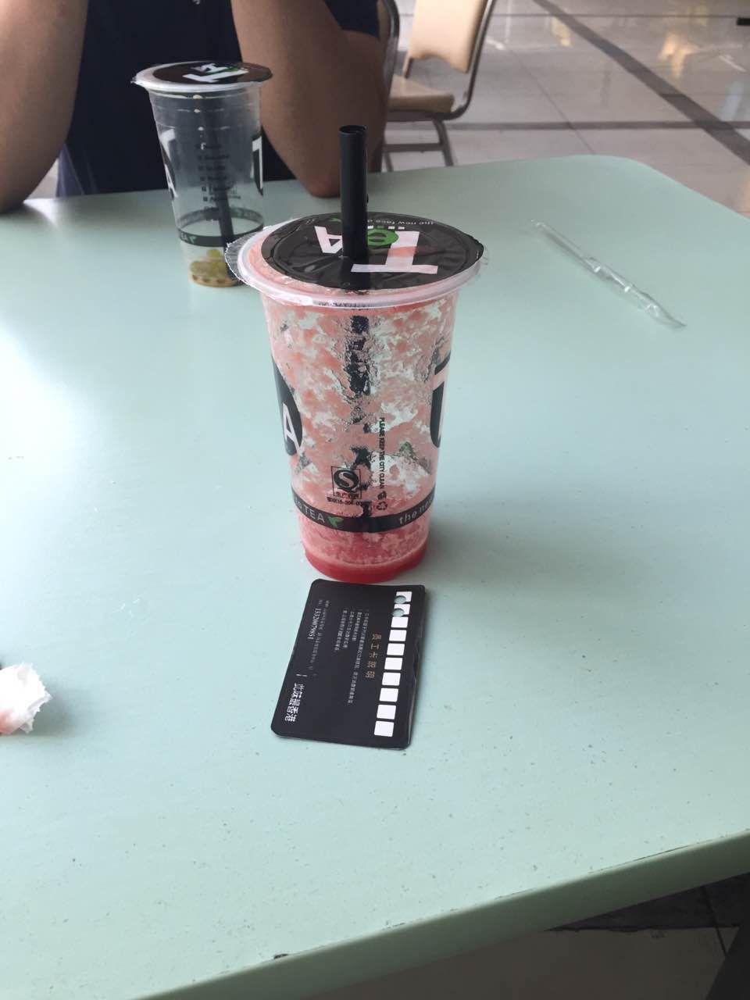 |
| 2016-07-01 16:19:18 | 我 | 好 |
| 2016-07-01 16:19:31 | 你 | 喝了杯西瓜汁 |
| 2016-07-01 16:19:35 | 你 | 头怎么疼了 |
| 2016-07-01 16:19:42 | 我 | 凉的吧 |
| 2016-07-01 16:19:46 | 你 | 恩 |
| 2016-07-01 16:20:02 | 我 | 回去含口热水 |
| 2016-07-01 16:21:16 | 你 | 头疼 |
| 2016-07-01 16:21:29 | 你 | 在外边呢 |
| 2016-07-01 16:21:54 | 我 | 吃的太快了 |
| 2016-07-01 16:21:56 | 你 | 刚才看见胖子了 |
| 2016-07-01 16:22:00 | 你 | 买雪糕 |
| 2016-07-01 16:22:36 | 我 | 嗯 |
| 2016-07-01 16:23:05 | 你 | 他没看见我 |
| 2016-07-01 16:23:45 | 我 | 你头疼好点没有 |
| 2016-07-01 16:24:15 | 你 | 没有 |
| 2016-07-01 16:25:19 | 我 | 快点回去吧 |
| 2016-07-01 16:25:29 | 我 | 或者买杯热饮 |
| 2016-07-01 16:29:31 | 你 | 怎么这样 |
| 2016-07-01 16:29:37 | 你 | 我回来了 |
| 2016-07-01 16:29:50 | 你 | 刚看到贺津，训练 |
| 2016-07-01 16:29:57 | 我 | 先喝热水 |
| 2016-07-01 16:30:02 | 你 | 做了8个引体向上 |
| 2016-07-01 16:30:05 | 你 | 好厉害 |
| 2016-07-01 16:30:17 | 我 | 问你一个问题 |
| 2016-07-01 16:30:24 | 你 | 恩 |
| 2016-07-01 16:30:27 | 我 | 你什么时候完事的 |
| 2016-07-01 16:32:55 | 你 | 周一吧，周二还有一点点 |
| 2016-07-01 16:33:02 | 你 | 不影响 |
| 2016-07-01 16:33:51 | 我 | 还好，应该就是吃的太快，激到了 |
| 2016-07-01 16:34:40 | 我 | 含着热水，应该会好一点 |
| 2016-07-01 16:34:53 | 你 | 是 |
| 2016-07-01 16:40:10 | 我 | 好点吗 |
| 2016-07-01 16:41:47 | 你 | 喝了热水，好点了 |
| 2016-07-01 16:42:04 | 我 | 好 |
| 2016-07-01 16:44:47 | 你 | 他们拼单呢 |
| 2016-07-01 16:44:56 | 我 | 拼什么 |
| 2016-07-01 16:45:02 | 你 | 还是有点头疼 |
| 2016-07-01 16:45:13 | 你 | 旭明说买唇膏 |
| 2016-07-01 16:45:20 | 我 | 没那么快好 |
| 2016-07-01 16:45:26 | 你 | 嗯嗯 |
| 2016-07-01 16:45:32 | 你 | 我就是凉着了 |
| 2016-07-01 16:45:40 | 我 | 嘴里含着热水会好得快点 |
| 2016-07-01 16:45:42 | 你 | 唉 现在体质怎么这么差 |
| 2016-07-01 16:45:59 | 我 | 这个正常，和体质无关 |
| 2016-07-01 16:46:00 | 你 | 忍着吧 |
| 2016-07-01 16:46:04 | 你 | 是啊 |
| 2016-07-01 16:46:09 | 你 | 以前感觉没事 |
| 2016-07-01 16:46:21 | 你 | 以后不能和这么凉的东西了 |
| 2016-07-01 16:46:29 | 我 | 是你吃的太急，口腔的毛细血管收缩导致的 |
| 2016-07-01 16:46:37 | 你 | 消化不了 |
| 2016-07-01 16:46:41 | 我 | 你慢点吃就没事了 |
| 2016-07-01 16:46:47 | 你 | 我故意没喝太快 |
| 2016-07-01 16:47:01 | 你 | 我不会喝很快的亲 |
| 2016-07-01 16:47:51 | 我 | 可能还是和你刚完事有关，身体对凉还是太敏感 |
| 2016-07-01 16:48:02 | 你 | 也可能 |
| 2016-07-01 16:48:09 | 你 | 忍一会吧 |
| 2016-07-01 16:48:22 | 我 | 我上次吃刨冰也头疼了 |
| 2016-07-01 16:48:29 | 你 | 是吧 |
| 2016-07-01 16:48:38 | 你 | 会不会是那么刨冰有问题呢 |
| 2016-07-01 16:49:11 | 我 | 应该不会，如果有问题应该肚子疼 |
| 2016-07-01 16:49:30 | 你 | 恩 |
| 2016-07-01 16:49:35 | 你 | 以后可不敢喝了 |
| 2016-07-01 16:49:49 | 你 | 也没那么好喝 还闹得头疼 |
| 2016-07-01 16:50:00 | 我 | 可以自己回家做 |
| 2016-07-01 16:50:10 | 你 | 算了 |
| 2016-07-01 16:50:16 | 你 | 我也不怎么喜欢喝 |
| 2016-07-01 16:50:29 | 我 | 嗯 |
| 2016-07-01 16:50:34 | 你 | 你见过我丝袜的纹路吗 |
| 2016-07-01 16:50:38 | 你 | 你该到家了吧 |
| 2016-07-01 16:50:50 | 我 | 快下车了 |
| 2016-07-01 16:50:55 | 你 | 恩 |
| 2016-07-01 16:50:56 | 你 | 好 |
| 2016-07-01 16:51:06 | 你 | 那收拾下吧 |
| 2016-07-01 16:51:17 | 我 | 我没注意过你丝袜 |
| 2016-07-01 16:51:24 | 你 | 嗯嗯 |
| 2016-07-01 16:51:28 | 你 | 那比较好 |
| 2016-07-01 16:51:35 | 你 | 说明我的丝袜比较自然 |
| 2016-07-01 16:51:37 | 我 | 怎么啦 |
| 2016-07-01 16:51:49 | 你 | 没事 |
| 2016-07-01 16:51:50 | 我 | 是，确实比较自然 |
| 2016-07-01 16:51:55 | 你 | 问着玩的 |
| 2016-07-01 16:52:22 | 你 | 你老婆现在会问你穿哪个衣服好看这类的问题吗 |
| 2016-07-01 16:52:49 | 我 | 会，每次都问 |
| 2016-07-01 16:53:18 | 你 | 哈哈 |
| 2016-07-01 16:53:19 | 你 | 我也是 |
| 2016-07-01 16:53:24 | 你 | 我至少问三遍 |
| 2016-07-01 16:53:36 | 你 | 会不会很烦 |
| 2016-07-01 16:54:00 | 我 | 不会烦 |
| 2016-07-01 16:54:13 | 你 | 真的？ |
| 2016-07-01 16:55:12 | 我 | 真的，为什么要烦 |
| 2016-07-01 16:55:21 | 我 | 这是一种幸福 |
| 2016-07-01 16:55:27 | 你 | 哈哈 |
| 2016-07-01 16:55:43 | 我 | 我老婆认为我看的比她准 |
| 2016-07-01 16:55:52 | 你 | 真的啊？ |
| 2016-07-01 16:56:02 | 你 | 你老婆太肯定你了 |
| 2016-07-01 16:56:47 | 你 | 下车了吗 |
| 2016-07-01 16:57:39 | 我 | 快了，我收拾一下东西 |
| 2016-07-01 16:57:51 | 你 | 恩 好 |
| 2016-07-01 17:11:30 | 我 | 下车了 |
| 2016-07-01 17:11:57 | 你 | 好 |
| 2016-07-01 18:05:37 | 你 | 你得安装azure |
| 2016-07-01 18:05:44 | 你 | 回家了 |
| 2016-07-01 18:05:48 | 你 | 有时间找你 |
| 2016-07-01 18:05:52 | 我 | 好的 |
{kind=link}
2016-07-04¶
| 2016-07-04 08:15:36 | 我 | 我看了你录的视频 |
| 2016-07-04 08:16:28 | 你 | 恩 |
| 2016-07-04 08:16:30 | 你 | 好玩吧 |
| 2016-07-04 08:16:40 | 我 | 是，非常好玩 |
| 2016-07-04 08:17:04 | 你 | 就是没有你们的镜头 |
| 2016-07-04 08:17:11 | 你 | 主要录的刘甲 |
| 2016-07-04 08:17:21 | 我 | 嗯 |
| 2016-07-04 08:17:28 | 我 | 你周五的做的那个怎么没有彩蛋呀 |
| 2016-07-04 08:17:45 | 你 | 哈哈 |
| 2016-07-04 08:18:02 | 你 | 你能看吗 |
| 2016-07-04 08:18:10 | 我 | 能看呀 |
| 2016-07-04 08:19:11 | 你 | 我先吃会 |
| 2016-07-04 08:19:13 | 你 | 饿死了 |
| 2016-07-04 08:19:18 | 你 | 昨晚没吃饭 |
| 2016-07-04 08:19:22 | 我 | 好 |
| 2016-07-04 08:23:00 | 你 | 吃完了 |
| 2016-07-04 08:23:25 | 我 | 好的 |
| 2016-07-04 08:23:31 | 你 | 彩蛋没整好 |
| 2016-07-04 08:23:39 | 你 | 其实就一句话 |
| 2016-07-04 08:23:43 | 你 | 结果显示不出来了 |
| 2016-07-04 08:24:03 | 你 | 大致意思是安装的AXURE是英文版的 学习起来费劲 |
| 2016-07-04 08:24:15 | 你 | 我昨天晚上找了个汉化包 |
| 2016-07-04 08:24:24 | 你 | 已经整好了 |
| 2016-07-04 08:24:26 | 你 | 很简单 |
| 2016-07-04 08:24:28 | 我 | 好 |
| 2016-07-04 08:24:36 | 你 | 现在是中文版的了 哈哈 |
| 2016-07-04 08:34:14 | 你 | 跟旭明没事吧 |
| 2016-07-04 08:34:29 | 我 | 没事呀 |
| 2016-07-04 08:34:42 | 你 | 0交流 |
| 2016-07-04 08:34:48 | 你 | 不像旭明的风格啊 |
| 2016-07-04 08:35:05 | 我 | 没明白你的意思 |
| 2016-07-04 08:35:16 | 你 | 没事就行 |
| 2016-07-04 08:35:23 | 你 | 就是你们没说话 |
| 2016-07-04 08:35:39 | 我 | 早上来说过了 |
| 2016-07-04 08:35:45 | 我 | 他比我来得早 |
| 2016-07-04 08:35:57 | 你 | 恩 他今天限号吧 |
| 2016-07-04 08:36:36 | 我 | 对 |
| 2016-07-04 08:38:02 | 我 | scrum培训我做了一半，已经同步给你了 |
| 2016-07-04 08:38:10 | 你 | 好的 |
| 2016-07-04 08:38:31 | 我 | 你周六是不是一直在用电脑 |
| 2016-07-04 08:39:07 | 你 | 下午用了一会 |
| 2016-07-04 08:39:16 | 你 | 就用了3小时吧 |
| 2016-07-04 08:39:36 | 我 | 在同步上能看见你在线 |
| 2016-07-04 08:48:37 | 你 | 恩 |
| 2016-07-04 08:48:52 | 你 | 周五晚上整理照片来着 |
| 2016-07-04 09:31:03 | 你 | 我看完了 |
| 2016-07-04 09:31:22 | 我 | 是不是很乱 |
| 2016-07-04 09:31:40 | 你 | 没有啊 |
| 2016-07-04 09:31:46 | 你 | 很清晰 |
| 2016-07-04 09:32:16 | 我 | 哦，我昨天写的时候觉得特别乱 |
| 2016-07-04 09:32:33 | 我 | 想说的说不出来 |
| 2016-07-04 09:32:35 | 你 | 那个团队成员的指责、任务... |
| 2016-07-04 09:32:46 | 你 | 那块写的我有点看不懂 |
| 2016-07-04 09:32:58 | 你 | 可能太抽象了 |
| 2016-07-04 09:33:03 | 我 | 是 |
| 2016-07-04 09:33:14 | 我 | 这个我打算说的 |
| 2016-07-04 09:33:18 | 你 | 不是写的不好 可能是我懂得太少了 |
| 2016-07-04 09:33:32 | 你 | 对了 |
| 2016-07-04 09:33:50 | 你 | 你说你想说的说不出来我说说我的想法 |
| 2016-07-04 09:33:54 | 我 | 好 |
| 2016-07-04 09:35:03 | 你 | 其实你写的这个已经很清晰了 这个清晰不是反应作者的思路清晰 而是这个东西本来就是条理化的 比如：成员1，2，3，4，会议：1，2，3，4，量化指标1，2，3，4 |
| 2016-07-04 09:35:19 | 你 | 跟百度百科上调理差不多 |
| 2016-07-04 09:35:37 | 你 | 区别可能是每句话有你自己的体会 |
| 2016-07-04 09:35:44 | 我 | 哈哈 |
| 2016-07-04 09:36:12 | 你 | 但是你想想 要是二组的平时基本没啥概念 你上次讲的时候 也不知道get了多少 |
| 2016-07-04 09:36:37 | 你 | 从头到尾听完 基本上是大致知道 |
| 2016-07-04 09:36:45 | 我 | 嗯 |
| 2016-07-04 09:36:52 | 你 | 少一不留神 又拐到瀑布去了 |
| 2016-07-04 09:37:11 | 你 | 我现在就这样 我已经很认真的听你讲了2遍了 |
| 2016-07-04 09:37:15 | 你 | 更何况他们 |
| 2016-07-04 09:37:24 | 你 | 看周五番薯的态度 更是 |
| 2016-07-04 09:37:40 | 我 | 唉 |
| 2016-07-04 09:37:48 | 你 | 就是这些东西吧 距离实施有点差距 |
| 2016-07-04 09:38:37 | 你 | 因为我经验太少 我就怕到时候实施的时候 大家把所有安排的事情都推给你 |
| 2016-07-04 09:39:08 | 我 | PO肯定是最忙的人 |
| 2016-07-04 09:39:25 | 你 | 哈哈 |
| 2016-07-04 09:39:35 | 我 | 我昨天在写的时候就在想如果你是PO会干成啥样 |
| 2016-07-04 09:39:42 | 你 | 哈哈 |
| 2016-07-04 09:39:46 | 你 | 我肯定会干好的 |
| 2016-07-04 09:39:48 | 你 | 放心吧 |
| 2016-07-04 09:39:59 | 我 | 好 |
| 2016-07-04 09:40:25 | 你 | 哈哈 这事也不定谁说了算 反正我是从思想上准备好了 |
| 2016-07-04 09:40:33 | 你 | 我姐现在也是超级忙 |
| 2016-07-04 09:40:45 | 你 | 等等再说她 |
| 2016-07-04 09:42:26 | 你 | 你写了多长时间啊 |
| 2016-07-04 09:42:57 | 我 | 两天 |
| 2016-07-04 09:43:00 | 你 | 不过这个ppt 我觉得可以了 |
| 2016-07-04 09:43:05 | 你 | 还有 |
| 2016-07-04 09:43:38 | 你 | 这个东西应该让二组的人多加强了解 不然真正实施的时候 会出很多问题 |
| 2016-07-04 09:43:47 | 你 | 大家都习惯被安排了 |
| 2016-07-04 09:44:04 | 你 | 突然没人安排了 我怕会乱 |
| 2016-07-04 09:44:17 | 我 | 其实我不是想通过培训改变他们 |
| 2016-07-04 09:44:50 | 你 | 那说说培训的目标 |
| 2016-07-04 09:44:51 | 我 | 我是想通过培训树立我的权威，等实施的时候阻力可以少一些 |
| 2016-07-04 09:45:01 | 你 | 恩 是 |
| 2016-07-04 09:45:10 | 我 | 咱们肯定不是正规的scrum |
| 2016-07-04 09:45:18 | 我 | 我也不会是master |
| 2016-07-04 09:45:20 | 你 | 适合咱们就行 |
| 2016-07-04 09:45:24 | 你 | 啊？ |
| 2016-07-04 09:45:28 | 你 | 你不做谁做 |
| 2016-07-04 09:45:41 | 我 | 我做 |
| 2016-07-04 09:45:56 | 我 | 但是肯定比正轨的多 |
| 2016-07-04 09:45:57 | 你 | 『我也不会是master』？ |
| 2016-07-04 09:46:13 | 你 | 其实也没什么正规不正规 |
| 2016-07-04 09:46:17 | 你 | 适合咱们就行呗 |
| 2016-07-04 09:46:20 | 你 | 你说呢 |
| 2016-07-04 09:46:39 | 我 | 关键是我认为适合的他们未必认同 |
| 2016-07-04 09:46:54 | 我 | 比如现在他们就非常不认同写文档 |
| 2016-07-04 09:46:55 | 你 | 还有 推scrum的阻力不单单是你的微信问题 |
| 2016-07-04 09:47:23 | 你 | 你说的是二组还是谁 |
| 2016-07-04 09:47:50 | 我 | 二组 |
| 2016-07-04 09:48:01 | 你 | 他们什么都不乐意 |
| 2016-07-04 09:48:06 | 我 | 现在就番薯他们特别抵触写文档 |
| 2016-07-04 09:48:10 | 你 | 你就别管他们了 |
| 2016-07-04 09:48:17 | 你 | 他们什么都不乐意 |
| 2016-07-04 09:48:18 | 你 | 真的 |
| 2016-07-04 09:48:37 | 我 | 不管不行呀，我也不想管，老杨扔给我了 |
| 2016-07-04 09:48:43 | 你 | 我想敏捷这事不单单是你推的 老杨也乐意 |
| 2016-07-04 09:50:54 | 我 | 但是他的期望够呛能达到 |
| 2016-07-04 09:51:09 | 我 | 他是希望减少时间 |
| 2016-07-04 09:51:41 | 你 | 按理说是会减少才对啊 |
| 2016-07-04 09:51:49 | 我 | 可是按照二组的情况减少时间肯定会导致质量下降 |
| 2016-07-04 09:52:04 | 我 | 敏捷对人的要求太高了 |
| 2016-07-04 09:52:06 | 你 | 也不一定 |
| 2016-07-04 09:52:13 | 你 | 那倒是 |
| 2016-07-04 09:52:14 | 你 | 看吧 |
| 2016-07-04 09:52:23 | 你 | 看实施的情况 |
| 2016-07-04 09:52:35 | 我 | 你认为他们组和我们组相比谁素质高 |
| 2016-07-04 09:53:12 | 你 | 这个我不知道 但是态度上你们组的比他们组就好一大截 |
| 2016-07-04 09:54:02 | 你 | 我始终相信 逻辑方面的事情 还是单线程的比较好 他们组 干扰太多了 |
| 2016-07-04 09:55:22 | 我 | 嗯 |
| 2016-07-04 09:56:06 | 你 | 你说scrum这种测试驱动研发的 还会造成质量下降吗 |
| 2016-07-04 09:56:35 | 你 | 而且粒度这么细 |
| 2016-07-04 09:56:42 | 我 | 会 |
| 2016-07-04 09:56:58 | 我 | 敏捷的核心是人 |
| 2016-07-04 09:57:15 | 你 | 那是肯定的 |
| 2016-07-04 09:57:30 | 我 | 瀑布的核心是流程 |
| 2016-07-04 09:57:37 | 你 | 我知道你的意思了 |
| 2016-07-04 09:57:41 | 我 | 人的影响小 |
| 2016-07-04 09:58:09 | 你 | 那只能这样了 |
| 2016-07-04 09:58:18 | 你 | 我觉得人的素质是可以提高的啊 |
| 2016-07-04 09:58:26 | 你 | 这件事本来对大家就是好事 |
| 2016-07-04 09:58:30 | 我 | 这取决于人的态度 |
| 2016-07-04 09:58:37 | 你 | 这就涉及到价值观了 |
| 2016-07-04 09:58:42 | 我 | 没错 |
| 2016-07-04 10:00:35 | 你 | 那要是碰上那种不思进取 磨洋工的主 什么流程都没用 |
| 2016-07-04 10:00:43 | 你 | 但是敏捷会更吃力点 |
| 2016-07-04 10:00:47 | 我 | 是 |
| 2016-07-04 10:01:02 | 你 | 瀑布的话可以混 这个就混不了 |
| 2016-07-04 10:01:42 | 你 | 基本混不了了 强硬的暴露就暴露 老子就是不伺候你 要是PO强点 还可以往下推推 |
| 2016-07-04 10:01:56 | 你 | 我姐周五十二点才回到家 周六又加班去了 |
| 2016-07-04 10:02:08 | 我 | 这么忙 |
| 2016-07-04 10:02:10 | 你 | 跟我抱怨 被那群开发的折磨死了 |
| 2016-07-04 10:02:26 | 我 | 正常 |
| 2016-07-04 10:02:45 | 你 | 我姐说他们四六不管 天天说没时间 每天到点就下班 |
| 2016-07-04 10:03:10 | 你 | 周六我姐就坐开发边上 一边说着业务 一边看研发的写代码 |
| 2016-07-04 10:03:16 | 你 | 她快崩溃了 |
| 2016-07-04 10:03:38 | 我 | 研发经理干啥去了 |
| 2016-07-04 10:03:50 | 你 | 他们没有master |
| 2016-07-04 10:03:56 | 我 | 他们应该不是scrum吧 |
| 2016-07-04 10:04:08 | 你 | 说是 |
| 2016-07-04 10:04:29 | 我 | 那你姐是PO？ |
| 2016-07-04 10:10:18 | 你 | 是 |
| 2016-07-04 10:14:45 | 我 | PO不应该看着研发 |
| 2016-07-04 10:15:06 | 你 | 他们的研发一点业务都不管 |
| 2016-07-04 10:15:17 | 你 | 我姐老是给他们将业务的逻辑 |
| 2016-07-04 10:15:21 | 你 | 他们是大数据分析 |
| 2016-07-04 10:15:45 | 你 | 我困死了 |
| 2016-07-04 10:16:06 | 我 | 趴着睡会吧 |
| 2016-07-04 10:16:16 | 你 | 不睡了 |
| 2016-07-04 10:22:49 | 我 | 你姐他们那研发谁管？ |
| 2016-07-04 10:23:14 | 你 | 好像有个于总啥的 |
| 2016-07-04 10:23:16 | 你 | 我不知道 |
| 2016-07-04 10:23:36 | 你 | 我姐在那个团队中挺厉害的 |
| 2016-07-04 10:23:39 | 我 | 我感觉是研发经理不负责 |
| 2016-07-04 10:23:41 | 你 | 我具体不太清楚 |
| 2016-07-04 10:23:47 | 你 | 应该是 |
| 2016-07-04 10:23:52 | 你 | 她们挺乱的 |
| 2016-07-04 10:24:09 | 我 | 一般来说PO不直接和研发打交道 |
| 2016-07-04 10:24:41 | 你 | 他也不常打 |
| 2016-07-04 10:24:57 | 你 | 最多的就是给研发的说业务 |
| 2016-07-04 10:25:19 | 我 | 还是职责不清 |
| 2016-07-04 10:25:25 | 你 | 恩 |
| 2016-07-04 10:25:26 | 我 | 因为没有master |
| 2016-07-04 10:25:40 | 我 | 大家对自己该干啥不清楚 |
| 2016-07-04 10:25:50 | 你 | 一会你开会吗 |
| 2016-07-04 10:25:56 | 我 | 是 |
| 2016-07-04 10:26:18 | 你 | 恩 |
| 2016-07-04 10:27:41 | 我 | 你是昨天没睡好吗？ |
| 2016-07-04 10:27:58 | 你 | 还好吧 |
| 2016-07-04 10:28:27 | 我 | 空调装了吗 |
| 2016-07-04 10:28:47 | 你 | 装好了 |
| 2016-07-04 10:29:07 | 我 | 好 |
| 2016-07-04 10:29:17 | 你 | 但是没装在主卧 |
| 2016-07-04 10:29:37 | 你 | 主卧挂室外机的那个地方太隐蔽 |
| 2016-07-04 10:29:46 | 你 | 只能挂在小屋楼上了 |
| 2016-07-04 10:31:37 | 我 | 哦 |
| 2016-07-04 10:35:50 | 我 | 合算主卧还是没有空调，那你晚上还不是一样吗 |
| 2016-07-04 10:36:03 | 你 | 我可以睡小屋啊 |
| 2016-07-04 10:36:22 | 我 | 哦，我以为你不睡小屋呢 |
| 2016-07-04 10:36:34 | 你 | 主卧那个空调安装的话 说要找蜘蛛人[偷笑] |
| 2016-07-04 10:36:42 | 你 | 我为啥不睡小屋啊 |
| 2016-07-04 10:36:50 | 你 | 搞xiao |
| 2016-07-04 10:37:06 | 我 | 我记得你好像说过，不喜欢睡小屋 |
| 2016-07-04 10:37:20 | 你 | 那也没办法 |
| 2016-07-04 10:37:29 | 你 | 先凑合着吧 |
| 2016-07-04 10:37:32 | 我 | 你没问问你们楼上是怎么装空调的 |
| 2016-07-04 10:37:38 | 你 | 明年再装主卧 |
| 2016-07-04 10:37:48 | 你 | 我们不熟 |
| 2016-07-04 10:38:03 | 你 | 而且我问的话得问9层或者5层 |
| 2016-07-04 10:38:13 | 你 | 我们单双号的户型不一样 |
| 2016-07-04 10:38:18 | 我 | 哦 |
| 2016-07-04 10:38:20 | 你 | 我也不知道 嫌麻烦 |
| 2016-07-04 10:38:27 | 我 | 是 |
| 2016-07-04 10:38:39 | 你 | 我打算明年把楼上换个大床 |
| 2016-07-04 10:38:48 | 你 | 把主卧装个空调 |
| 2016-07-04 10:38:57 | 我 | 好 |
| 2016-07-04 10:40:29 | 你 | 又有目标啦 哈哈 |
| 2016-07-04 10:40:55 | 你 | 人家说了 找个蜘蛛人至少300块钱 |
| 2016-07-04 10:41:03 | 你 | 我家那空调才1800 |
| 2016-07-04 10:41:09 | 我 | 是 |
| 2016-07-04 10:41:15 | 你 | 我当时一听 算了 明年再装 |
| 2016-07-04 10:41:23 | 你 | 今年睡的话先睡小屋 |
| 2016-07-04 10:42:58 | 我 | 嗯 |
| 2016-07-04 13:32:32 | 我 | 你想下载什么 |
| 2016-07-04 13:33:12 | 我 | 我有csdn的帐号 |
| 2016-07-04 13:33:22 | 你 | 等会 |
| 2016-07-04 13:33:24 | 你 | 我看看 |
| 2016-07-04 13:33:40 | 你 | 《网站蓝图：Axure RP高保真网页原型制作》 |
| 2016-07-04 13:35:02 | 你 | http://download.csdn.net/download/yzp_wanan/7510017 |
| 2016-07-04 13:35:57 | 我 | 我给你下了，太大，很慢 |
| 2016-07-04 13:36:15 | 你 | 哦 好吧 |
| 2016-07-04 13:36:18 | 你 | 多谢啊 |
| 2016-07-04 13:36:51 | 你 | 本来这等小事不想麻烦你的 |
| 2016-07-04 13:37:13 | 我 | 哦，不至于吧 |
| 2016-07-04 13:37:29 | 你 | 没事没事 |
| 2016-07-04 13:37:35 | 你 | 多谢多谢 |
| 2016-07-04 13:37:37 | 你 | 嘿嘿 |
| 2016-07-04 13:38:48 | 你 | 是本画axure的书 |
| 2016-07-04 13:38:56 | 我 | 嗯 |
| 2016-07-04 13:39:03 | 你 | 想找本书学学 |
| 2016-07-04 13:44:50 | 你 | 你干嘛呢 |
| 2016-07-04 13:45:11 | 我 | 给你下文件呀，随便看看其他的文件 |
| 2016-07-04 13:45:26 | 你 | 好的 |
| 2016-07-04 13:45:34 | 你 | 我就是随便问问 没什么事 |
| 2016-07-04 13:45:40 | 你 | 下午有会吗 |
| 2016-07-04 13:45:52 | 我 | 可能4点吧 |
| 2016-07-04 13:46:11 | 我 | 明天一天的会，去工大 |
| 2016-07-04 13:46:21 | 你 | 什么会 |
| 2016-07-04 13:46:23 | 你 | 研发季度会 |
| 2016-07-04 13:46:29 | 我 | 嗯 |
| 2016-07-04 13:46:51 | 你 | 王洪越不去吧 |
| 2016-07-04 13:46:56 | 我 | 不去 |
| 2016-07-04 13:47:20 | 你 | 唉，几点去 |
| 2016-07-04 13:48:09 | 我 | 9点 |
| 2016-07-04 13:50:46 | 我 | 亲，你给我的这个好像只是第一部分，后面还少东西 |
| 2016-07-04 13:50:56 | 你 | 没事 |
| 2016-07-04 13:51:09 | 你 | 你发给我吧 我不用学太难得 |
| 2016-07-04 13:51:10 | 我 | 解压不出来 |
| 2016-07-04 13:51:13 | 你 | 我先看看 |
| 2016-07-04 13:51:15 | 你 | 为啥 |
| 2016-07-04 13:51:35 | 我 | 他是分卷压缩的，只要第一部分 |
| 2016-07-04 13:54:20 | 你 | 不着急 |
| 2016-07-04 13:54:40 | 我 | 我又找到两个 |
| 2016-07-04 13:54:45 | 你 | 好的 |
| 2016-07-04 13:58:33 | 我 | 聊天吗 |
| 2016-07-04 13:58:37 | 你 | 聊 |
| 2016-07-04 13:58:40 | 你 | 没事 |
| 2016-07-04 13:58:43 | 你 | 等你的书 |
| 2016-07-04 13:59:27 | 我 | 明天你去打球吗 |
| 2016-07-04 13:59:58 | 你 | 去 |
| 2016-07-04 14:00:17 | 你 | 又是一季度一次的研发季度会 |
| 2016-07-04 14:00:18 | 你 | 哈哈 |
| 2016-07-04 14:00:30 | 你 | 回头就是发奖了 |
| 2016-07-04 14:00:36 | 我 | 是，又不能一起去了 |
| 2016-07-04 14:00:41 | 你 | 领导怎么突然要买苹果了 |
| 2016-07-04 14:00:49 | 你 | 不能一起去？ |
| 2016-07-04 14:00:52 | 你 | 打球吗？ |
| 2016-07-04 14:00:57 | 我 | 给他媳妇买 |
| 2016-07-04 14:01:02 | 你 | 恩 |
| 2016-07-04 14:01:04 | 你 | 估计是 |
| 2016-07-04 14:01:14 | 我 | 明天我开会，没法打球 |
| 2016-07-04 14:01:19 | 你 | 那个金色的不好看 |
| 2016-07-04 14:01:24 | 你 | 你已经很久没打过了 |
| 2016-07-04 14:01:32 | 我 | 是 |
| 2016-07-04 14:01:54 | 你 | 不过你不是总跑步吗 |
| 2016-07-04 14:01:57 | 你 | 锻炼就行 |
| 2016-07-04 14:02:32 | 我 | 是，现在每周至少跑三次 |
| 2016-07-04 14:02:41 | 你 | 跑的不少了 |
| 2016-07-04 14:02:59 | 你 | 我现在跟你和我姐一起聊天呢 |
| 2016-07-04 14:03:00 | 你 | 哈哈 |
| 2016-07-04 14:03:05 | 你 | 她今天不忙 |
| 2016-07-04 14:03:55 | 我 | 好的 |
| 2016-07-04 14:04:11 | 你 | 你知道有很多公司有对内的所谓产品经理吗 |
| 2016-07-04 14:04:16 | 你 | 就像我姐这样的 |
| 2016-07-04 14:04:25 | 我 | 知道 |
| 2016-07-04 14:04:57 | 你 | 对内的跟客户不怎么接触估计压力会小点 |
| 2016-07-04 14:05:00 | 你 | 不过都差不多 |
| 2016-07-04 14:05:13 | 你 | 客户是别的部门的呗 |
| 2016-07-04 14:06:10 | 我 | 是 |
| 2016-07-04 14:06:26 | 你 | 你看我拍的那段视频 |
| 2016-07-04 14:06:33 | 你 | 旭明说2016是执行年 |
| 2016-07-04 14:06:40 | 你 | 2017年的时候让他自己看看 |
| 2016-07-04 14:06:41 | 你 | 哈哈 |
| 2016-07-04 14:06:46 | 我 | |
| 2016-07-04 14:07:33 | 你 | 那个同步的软件 不在一个局域网也能用吗 |
| 2016-07-04 14:08:33 | 我 | 能 |
| 2016-07-04 14:09:09 | 你 | 你一直一个字一个字的回我 |
| 2016-07-04 14:09:37 | 我 | 你问的问题太简单了 |
| 2016-07-04 14:14:26 | 我 | 问个问题吧 |
| 2016-07-04 14:14:40 | 你 | 好 |
| 2016-07-04 14:15:04 | 我 | 我是不是太主动让你为难了 |
| 2016-07-04 14:15:49 | 你 | 没有啊，就是不想打扰你 |
| 2016-07-04 14:16:30 | 我 | 那你为啥不想打扰我呢 |
| 2016-07-04 14:17:11 | 你 | 你知道 很多事我知道你都可以帮我做 |
| 2016-07-04 14:17:20 | 你 | 可是我不想老是让你帮我做 |
| 2016-07-04 14:17:40 | 我 | 原因呢 |
| 2016-07-04 14:17:55 | 你 | 没有原因 |
| 2016-07-04 14:18:09 | 你 | 可能是我这个人的问题 |
| 2016-07-04 14:18:14 | 我 | 好吧，我一直挺好奇的 |
| 2016-07-04 14:18:37 | 你 | 我不想让你觉得我是个喜欢不劳而获的人 |
| 2016-07-04 14:25:14 | 我 | 放到同步文件夹了 |
| 2016-07-04 14:25:17 | 你 | 好的 |
| 2016-07-04 14:27:12 | 你 | 这事办的 |
| 2016-07-04 14:28:57 | 我 | 我觉得田是成心的 |
| 2016-07-04 14:29:14 | 你 | 不知道 他是在挑洪越的事 |
| 2016-07-04 14:29:40 | 我 | 还有我的 |
| 2016-07-04 14:29:51 | 我 | 刚才还抬出来武总呢 |
| 2016-07-04 14:30:01 | 你 | 我知道 |
| 2016-07-04 14:30:09 | 你 | 他是收不了场了 |
| 2016-07-04 14:32:36 | 你 | 自己掺和还拍不了板 |
| 2016-07-04 14:32:39 | 你 | 自讨没趣 |
| 2016-07-04 14:32:53 | 我 | 是 |
| 2016-07-04 14:33:38 | 你 | 老田明显是 知道一条做事原则 『不能拖用户』，然后也没考虑其他的 就在那BB， |
| 2016-07-04 14:33:44 | 你 | 也不一定是找谁的事 |
| 2016-07-04 14:34:03 | 你 | 结果发现还有这么多牵扯 自己又拿不定主意了 |
| 2016-07-04 14:34:17 | 我 | 唉，后面几句话明星冲着我说的 |
| 2016-07-04 14:34:26 | 你 | 是 |
| 2016-07-04 14:34:34 | 你 | 也不一定啦 |
| 2016-07-04 14:34:49 | 你 | 没事的 你别跟他一般见识 他也没讨好果子吃 |
| 2016-07-04 14:39:46 | 你 | 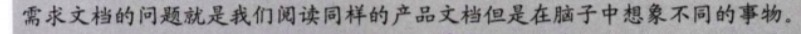 |
| 2016-07-04 14:40:11 | 我 | 是 |
| 2016-07-04 14:40:49 | 我 | 你看我的PPT，里面有一个关于完成的定义 |
| 2016-07-04 14:40:57 | 你 | 恩 |
| 2016-07-04 14:40:58 | 我 | 就是想避免这个问题 |
| 2016-07-04 14:41:04 | 你 | 我看见了 |
| 2016-07-04 14:41:28 | 我 | 昨天我在写的时候就在想一个问题 |
| 2016-07-04 14:41:45 | 你 | 『确保所有人对完成有相同的认识』 |
| 2016-07-04 14:41:48 | 你 | 什么问题 |
| 2016-07-04 14:42:04 | 我 | 看起来敏捷的方法好像比较轻，其实和瀑布比起来，要麻烦很多 |
| 2016-07-04 14:42:16 | 你 | 你说说 |
| 2016-07-04 14:42:27 | 我 | 比如说这个完成的问题 |
| 2016-07-04 14:42:55 | 你 | 完成怎么了 |
| 2016-07-04 14:43:01 | 我 | 瀑布里面需求和测试对需求的理解一致就可以了 |
| 2016-07-04 14:43:08 | 你 | 哦 |
| 2016-07-04 14:43:17 | 我 | 在敏捷里面要求所有人都理解一致 |
| 2016-07-04 14:43:20 | 你 | 你说的是敏捷里是所有人理解一直 |
| 2016-07-04 14:43:21 | 你 | 哈哈 |
| 2016-07-04 14:43:58 | 我 | 那么对研发就要求具有需求一样的能力 |
| 2016-07-04 14:43:59 | 你 | 可能需求未定义的那部分 在敏捷了 就得都见光了 |
| 2016-07-04 14:44:08 | 你 | 也不至于 |
| 2016-07-04 14:44:13 | 我 | 能和需求一样从用户的角度考虑 |
| 2016-07-04 14:44:32 | 你 | 能力是一方面吧 因为他的轻（开发周期短） |
| 2016-07-04 14:44:55 | 我 | 不是因为他轻 |
| 2016-07-04 14:44:57 | 你 | 可能降低了一些对需求的理解 |
| 2016-07-04 14:45:21 | 你 | 我觉得你这种说法不对 |
| 2016-07-04 14:45:23 | 你 | 哈哈 |
| 2016-07-04 14:45:24 | 我 | 是因为敏捷认为研发是主体 |
| 2016-07-04 14:45:26 | 你 | 你别生气啊 |
| 2016-07-04 14:45:34 | 我 | 我不生气 |
| 2016-07-04 14:45:42 | 我 | 这个只是一个讨论 |
| 2016-07-04 14:45:46 | 你 | 敏捷的轻体现在各个方面 |
| 2016-07-04 14:46:07 | 你 | 咱俩是在说一个话题吗 我抢话了 |
| 2016-07-04 14:46:11 | 你 | 你先说完吧 |
| 2016-07-04 14:46:13 | 我 | 敏捷的轻的基础是研发可以做所有的事情 |
| 2016-07-04 14:46:33 | 我 | 就是所谓的跨功能 |
| 2016-07-04 14:46:45 | 我 | 每个人都是全才 |
| 2016-07-04 14:46:52 | 你 | 对啊 但是这个跨功能应该是研发和测试 |
| 2016-07-04 14:47:10 | 你 | 我觉得研发的不会做敏捷的测试 那还叫研发吗 |
| 2016-07-04 14:47:17 | 我 | 不是，包括对需求的理解 |
| 2016-07-04 14:47:18 | 你 | 不就是大点的单元测试吗 |
| 2016-07-04 14:47:29 | 我 | 就是对完成达成的一致 |
| 2016-07-04 14:47:33 | 你 | 对需求的理解？ |
| 2016-07-04 14:47:39 | 你 | 瀑布也存在啊 |
| 2016-07-04 14:47:48 | 我 | 如果研发不理解需求，那么对完成就会有不同的理解 |
| 2016-07-04 14:47:55 | 你 | 而且是一下子理解很多的 |
| 2016-07-04 14:48:15 | 我 | 瀑布是少数人理解一致 |
| 2016-07-04 14:48:42 | 我 | 瀑布是金字塔型的，敏捷是扁平型的 |
| 2016-07-04 14:49:21 | 我 | 金字塔底端的不需要理解高端的，只需要理解上一层的即可 |
| 2016-07-04 14:49:25 | 你 | 但是敏捷的所有人也没有瀑布的少数人多 |
| 2016-07-04 14:49:53 | 我 | 而敏捷要求所有人理解几乎所有的东西 |
| 2016-07-04 14:50:24 | 我 | 我举个例子 |
| 2016-07-04 14:50:32 | 我 | 对于瀑布 |
| 2016-07-04 14:50:44 | 我 | 研发最重要的人是架构师 |
| 2016-07-04 14:51:21 | 我 | 只要架构师和需求理解一致，其他人和架构师理解一致就可以了 |
| 2016-07-04 14:51:22 | 你 | 恩 |
| 2016-07-04 14:51:43 | 我 | 所以架构师负责分解模块，确定模块的需求 |
| 2016-07-04 14:51:54 | 你 | 是 |
| 2016-07-04 14:51:57 | 我 | 逐级下分 |
| 2016-07-04 14:52:00 | 你 | 你这点我就蒙了 |
| 2016-07-04 14:52:11 | 我 | 怎么蒙了？ |
| 2016-07-04 14:52:16 | 你 | 敏捷的架构在什么时候整出来啊 |
| 2016-07-04 14:52:41 | 我 | 没有明确的阶段 |
| 2016-07-04 14:52:50 | 我 | 是大家讨论出来的 |
| 2016-07-04 14:53:17 | 我 | 换句话，敏捷没有独立的架构设计 |
| 2016-07-04 14:53:22 | 你 | 恩 |
| 2016-07-04 14:53:36 | 我 | 你看看scrum的流程，是没有这个阶段的 |
| 2016-07-04 14:53:51 | 你 | 敏捷里product backlog>user story>sprint对吧 |
| 2016-07-04 14:53:55 | 你 | 我知道啊 |
| 2016-07-04 14:54:12 | 我 | 对 |
| 2016-07-04 14:54:14 | 你 | 开发的单元是user story |
| 2016-07-04 14:54:23 | 你 | 分成若干个sprint |
| 2016-07-04 14:54:28 | 我 | 比这个细 |
| 2016-07-04 14:54:39 | 我 | 开发单元是sprint task |
| 2016-07-04 14:54:50 | 你 | 恩 |
| 2016-07-04 14:55:11 | 你 | 你比如说 开发用户登录监控工具这个功能 |
| 2016-07-04 14:55:23 | 你 | 我又打断你了 |
| 2016-07-04 14:55:29 | 你 | 你接着说吧 |
| 2016-07-04 14:55:30 | 我 | 没事，你说 |
| 2016-07-04 14:55:47 | 你 | 我说的可能东一榔头的啊 |
| 2016-07-04 14:56:43 | 你 | 你说我以前一直迷惑 需求中不可能覆盖所有点，有部分是研发定的 然后测试会有自己的想法 这部分成为需求的灰色地带的话 |
| 2016-07-04 14:56:56 | 你 | 敏捷里好像就没有 |
| 2016-07-04 14:57:36 | 我 | 敏捷不是没有，是没提 |
| 2016-07-04 14:58:10 | 我 | 这部分灰色地带是软件开发的本质决定的，是必然存在的 |
| 2016-07-04 14:59:02 | 我 | 敏捷是靠团队的主动性来消灭这种灰色地带 |
| 2016-07-04 14:59:08 | 你 | 恩 |
| 2016-07-04 14:59:17 | 你 | 现在敏捷比瀑布多了一个步骤 |
| 2016-07-04 14:59:22 | 你 | 就是评审会 |
| 2016-07-04 14:59:39 | 我 | 当研发发现灰色地带时，敏捷要求研发去和PO讨论，由PO明确 |
| 2016-07-04 14:59:49 | 你 | Review Meeting |
| 2016-07-04 14:59:58 | 我 | 不是这个地方 |
| 2016-07-04 15:00:05 | 你 | 我们需求现在是看不到产品的 |
| 2016-07-04 15:00:09 | 你 | 是测试的在用 |
| 2016-07-04 15:00:17 | 你 | 最终我也看不到 |
| 2016-07-04 15:00:33 | 我 | 对 |
| 2016-07-04 15:00:34 | 你 | 但是评审会是要展示功能给PO看的 |
| 2016-07-04 15:00:35 | 我 | 这是一个问题 |
| 2016-07-04 15:00:55 | 我 | 敏捷要求PO必须对产品负责 |
| 2016-07-04 15:01:00 | 你 | 至少PO是知道自己想要的是什么东西 |
| 2016-07-04 15:01:03 | 我 | PO必须看产品的 |
| 2016-07-04 15:01:07 | 我 | 是 |
| 2016-07-04 15:01:22 | 你 | 在短期迭代中就可以知道哪不符合需求了 |
| 2016-07-04 15:01:27 | 你 | 这点比较好 |
| 2016-07-04 15:01:29 | 我 | PO有最终决定权和解释权 |
| 2016-07-04 15:01:36 | 你 | 对的 |
| 2016-07-04 15:01:37 | 我 | 没错 |
| 2016-07-04 15:01:44 | 你 | 现在我们啥也看不到 |
| 2016-07-04 15:01:45 | 我 | 这就是及时反馈 |
| 2016-07-04 15:01:50 | 你 | 对 |
| 2016-07-04 15:01:51 | 我 | 瀑布做不到 |
| 2016-07-04 15:01:53 | 你 | 是的 |
| 2016-07-04 15:01:56 | 你 | 瀑布做不到 |
| 2016-07-04 15:02:11 | 你 | 这个如果有灰色地带的话 以前是测试的提bug |
| 2016-07-04 15:02:23 | 你 | 现在就推到PO端来了 |
| 2016-07-04 15:02:29 | 你 | 省略步骤了 |
| 2016-07-04 15:02:32 | 我 | 是 |
| 2016-07-04 15:02:40 | 你 | 敏捷能够解决瀑布的很多问题 |
| 2016-07-04 15:02:48 | 我 | 没错 |
| 2016-07-04 15:02:56 | 我 | 但是也带来了新的问题 |
| 2016-07-04 15:03:00 | 你 | 我们现在整天写文档 最后做成啥样我是不知道 |
| 2016-07-04 15:03:11 | 你 | 新问题？你说手 |
| 2016-07-04 15:03:13 | 你 | 说 |
| 2016-07-04 15:03:44 | 我 | 对人的要求高了 |
| 2016-07-04 15:04:04 | 你 | 你说说高在哪 |
| 2016-07-04 15:04:09 | 你 | 我现在反而觉得不是了 |
| 2016-07-04 15:04:16 | 我 | 研发要能明白什么是灰色地带 |
| 2016-07-04 15:04:23 | 你 | 主动性吗 |
| 2016-07-04 15:04:29 | 你 | 你先听我说 |
| 2016-07-04 15:04:32 | 我 | 你看看有多少研发会主动找需求 |
| 2016-07-04 15:04:47 | 我 | 很多研发都说我认为就应该是这样的 |
| 2016-07-04 15:05:04 | 我 | 而不是说这是不是用户需要的 |
| 2016-07-04 15:05:42 | 我 | 敏捷实施的最大的一个风险就是研发不问PO |
| 2016-07-04 15:06:10 | 你 | 这个瀑布也存在啊 |
| 2016-07-04 15:06:32 | 我 | 瀑布起码有需求评审 |
| 2016-07-04 15:06:40 | 我 | 起码有方案评审 |
| 2016-07-04 15:06:43 | 我 | 敏捷没有 |
| 2016-07-04 15:07:13 | 你 | 你看 现在是需求告诉测试和开发 要做什么，然后研发做，测试测，可是要是测试和研发合并了 会出现什么问题 |
| 2016-07-04 15:07:42 | 你 | 敏捷是需求说做什么 研发做、测，然后需求检验 |
| 2016-07-04 15:08:14 | 你 | 这样做很明显就省去了一个步骤 |
| 2016-07-04 15:08:33 | 你 | 省去了传话筒 增加了核实的过程 |
| 2016-07-04 15:08:43 | 我 | 没错 |
| 2016-07-04 15:08:48 | 你 | 回头说你的问题 文档的事 |
| 2016-07-04 15:09:01 | 你 | 你想 每次开发就一个用户功能点 |
| 2016-07-04 15:09:22 | 你 | 这样被拆分的需求会降低理解需求的难度啊 |
| 2016-07-04 15:10:12 | 你 | 而且你想 不怕研发的不问PO 也没有需求文档了 他就吭哧吭哧做 最后review meeting的时候给毙了 慢慢就老实了 |
| 2016-07-04 15:10:22 | 你 | 就是有文档了 才不问 |
| 2016-07-04 15:10:33 | 你 | 不知道的看文档 现在没有文档 能不问吗 |
| 2016-07-04 15:10:47 | 我 | 你想的太简单了 |
| 2016-07-04 15:11:03 | 你 | 这句话说的真好 |
| 2016-07-04 15:11:07 | 我 | 你问问你姐，如果她不盯着，研发会怎么做 |
| 2016-07-04 15:11:17 | 我 | 是问她，还是自己就做了 |
| 2016-07-04 15:11:54 | 你 | 她们公司就是研发的太懈怠 根本不做 |
| 2016-07-04 15:11:59 | 我 | 因为你没有做过研发，不了解研发的情绪 |
| 2016-07-04 15:12:05 | 我 | 所有的研发都一样 |
| 2016-07-04 15:12:11 | 我 | 咱们公司也是一样的 |
| 2016-07-04 15:12:23 | 我 | 一组好点是因为我一直盯着 |
| 2016-07-04 15:12:42 | 你 | 恩 就是瞧不起需求的 |
| 2016-07-04 15:12:44 | 你 | 测试的 |
| 2016-07-04 15:12:52 | 你 | 反正别人都瞧不起是吧 |
| 2016-07-04 15:13:15 | 我 | 对 |
| 2016-07-04 15:13:25 | 你 | 哈哈 |
| 2016-07-04 15:13:29 | 你 | 那就没办法了 |
| 2016-07-04 15:13:37 | 我 | 研发认为别人都没有他自己懂产品 |
| 2016-07-04 15:13:48 | 我 | 因为产品是他做出来的 |
| 2016-07-04 15:13:49 | 你 | 那倒是 |
| 2016-07-04 15:14:17 | 我 | 研发骂用户是蠢猪的多了去了 |
| 2016-07-04 15:14:44 | 我 | 用户是有蠢的，但是不是大部分都蠢 |
| 2016-07-04 15:15:00 | 我 | 最后证明蠢的其实都是这种研发 |
| 2016-07-04 15:15:02 | 你 | 用户蠢是应该的 |
| 2016-07-04 15:15:11 | 你 | 不蠢研发的就失业了 |
| 2016-07-04 15:15:45 | 你 | 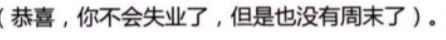 |
| 2016-07-04 15:17:26 | 我 | |
| 2016-07-04 15:18:03 | 我 | 其实你说的这些问题是因为你经验太少 |
| 2016-07-04 15:18:16 | 我 | 只是从理论上去讨论的 |
| 2016-07-04 15:18:32 | 我 | 你没有把人性考虑进来 |
| 2016-07-04 15:18:40 | 你 | 是吧 |
| 2016-07-04 15:18:44 | 你 | 是 |
| 2016-07-04 15:18:55 | 你 | 我也没做过 不知道会出什么事 |
| 2016-07-04 15:19:11 | 我 | 你讨论里面认为人不是一个变量 |
| 2016-07-04 15:19:22 | 我 | 在瀑布和敏捷里面的人是一样的 |
| 2016-07-04 15:19:36 | 我 | 我要说的是瀑布和敏捷里面的人是不一样的 |
| 2016-07-04 15:19:47 | 我 | 而且人的不一样是核心 |
| 2016-07-04 15:20:02 | 我 | 你也可以这么理解 |
| 2016-07-04 15:20:12 | 我 | 敏捷比瀑布好 |
| 2016-07-04 15:20:33 | 我 | 那么敏捷比瀑布付出了什么才得到这个好的呢 |
| 2016-07-04 15:20:45 | 我 | 就是对人的要求高了 |
| 2016-07-04 15:21:14 | 我 | 说到最后，还是没有银弹。没有付出是不会有回报的 |
| 2016-07-04 15:21:42 | 你 | 你说的对 |
| 2016-07-04 15:22:09 | 你 | 瀑布和敏捷是有适应范围的 |
| 2016-07-04 15:22:24 | 你 | 我相信人是最主要的因素 |
| 2016-07-04 15:22:47 | 你 | 但绝不是根本要素 |
| 2016-07-04 15:24:35 | 我 | 是 |
| 2016-07-04 15:24:44 | 我 | 人是最不可靠的 |
| 2016-07-04 15:32:01 | 你 | 可是干活就得靠人 |
| 2016-07-04 15:32:05 | 你 | 考可靠的人 |
| 2016-07-04 15:32:12 | 你 | 靠可靠的人 |
| 2016-07-04 15:32:13 | 我 | 没错 |
| 2016-07-04 15:32:36 | 我 | 咱们的任职资格就是衡量人的技术可靠性 |
| 2016-07-04 15:32:49 | 你 | 是 |
| 2016-07-04 15:33:00 | 你 | 考核的是工作能力 |
| 2016-07-04 15:45:26 | 我 | 我以前同方的同事给我打电话 |
| 2016-07-04 15:45:36 | 你 | 什么事 |
| 2016-07-04 15:45:39 | 你 | 有事吗 |
| 2016-07-04 15:45:40 | 我 | 他也叫张建 |
| 2016-07-04 15:45:53 | 你 | 张建？谁还叫张建啊 |
| 2016-07-04 15:45:54 | 我 | 我还以为咱们公司的呢 |
| 2016-07-04 15:46:01 | 你 | 哦哦 |
| 2016-07-04 15:46:04 | 你 | 好么 |
| 2016-07-04 15:46:09 | 你 | 想跳槽？ |
| 2016-07-04 15:46:11 | 我 | 咱们至少有两个张建 |
| 2016-07-04 15:46:26 | 我 | 他想给他孩子办天津户口 |
| 2016-07-04 15:46:27 | 你 | 我一个不认识 |
| 2016-07-04 15:46:32 | 你 | 哦 |
| 2016-07-04 15:46:40 | 我 | 问问我知道怎么办不 |
| 2016-07-04 15:46:53 | 你 | 你知道吗 |
| 2016-07-04 15:47:05 | 我 | 不太清楚 |
| 2016-07-04 15:47:36 | 你 | 哈哈 |
| 2016-07-04 15:47:41 | 你 | 白找了 |
| 2016-07-04 15:47:58 | 你 | 你上大学的时候 实在东院吗 |
| 2016-07-04 15:48:01 | 你 | 是 |
| 2016-07-04 15:48:19 | 我 | 是 |
| 2016-07-04 15:48:43 | 你 | 那咱们没准在同一个房间呆过 |
| 2016-07-04 15:48:50 | 你 | 错 教室 |
| 2016-07-04 15:49:18 | 我 | 你在哪个楼 |
| 2016-07-04 15:49:52 | 你 | 先是小白楼 |
| 2016-07-04 15:49:58 | 你 | 后到主楼 |
| 2016-07-04 15:50:09 | 你 | 宿舍在东五306 |
| 2016-07-04 15:50:10 | 我 | 主楼是哪个 |
| 2016-07-04 15:50:18 | 你 | 就是最高的那个啊 |
| 2016-07-04 15:50:31 | 我 | 我们在南大楼 |
| 2016-07-04 15:50:32 | 你 | 你那时候可能没建呢 |
| 2016-07-04 15:50:49 | 你 | 『南大楼』？好土 |
| 2016-07-04 15:50:57 | 我 | 后来是实验楼，就是南北大楼中间的那个 |
| 2016-07-04 15:51:20 | 我 | 我们入学的时候只有南北大楼 |
| 2016-07-04 15:51:25 | 你 | 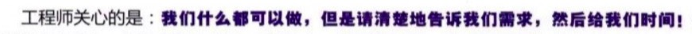 |
| 2016-07-04 15:51:42 | 我 | 连中间的实验楼都没有 |
| 2016-07-04 15:52:59 | 你 | 你说的我都不知道 |
| 2016-07-04 15:53:13 | 你 | 我只知道这三个楼 其他的都没去过 |
| 2016-07-04 15:53:30 | 我 | 南大楼你知道吧 |
| 2016-07-04 15:53:46 | 你 | 不知道 |
| 2016-07-04 15:53:52 | 你 | 现在就一个主楼 |
| 2016-07-04 15:54:06 | 你 | 还有个化工的什么什么楼 |
| 2016-07-04 15:54:15 | 我 | 就是那个文物楼，北洋工学院 |
| 2016-07-04 15:54:33 | 我 | 现在里面有校史馆 |
| 2016-07-04 15:54:40 | 你 | 那个楼我知道 |
| 2016-07-04 15:54:48 | 你 | 在小角落里 |
| 2016-07-04 15:54:51 | 我 | 那个是南大楼 |
| 2016-07-04 15:54:59 | 你 | 我在那上过自习 |
| 2016-07-04 15:55:08 | 你 | 那个楼对面的就是小白楼 |
| 2016-07-04 15:55:09 | 我 | 和他一样古老的，北边的是北大楼 |
| 2016-07-04 15:55:23 | 你 | 现在是不是叫什么电工厂啥的 |
| 2016-07-04 15:55:32 | 我 | 南北大楼中间的我们叫实验楼 |
| 2016-07-04 15:55:45 | 你 | 那就是小白楼了 |
| 2016-07-04 15:55:52 | 你 | 我研一的时候在那边 |
| 2016-07-04 15:56:01 | 我 | 我毕业答辩在小白楼 |
| 2016-07-04 15:56:33 | 你 | 哈哈 |
| 2016-07-04 15:56:49 | 我 | 你是自动化的吧 |
| 2016-07-04 15:57:15 | 你 | 是 |
| 2016-07-04 15:57:20 | 你 | 控制工程 |
| 2016-07-04 15:58:08 | 我 | 我们那时候只有两个自动化专业，工业自动化和电气自动化 |
| 2016-07-04 15:58:25 | 你 | 你记得东西怎么这么多 |
| 2016-07-04 15:58:33 | 你 | 你都不会忘吗 |
| 2016-07-04 15:59:10 | 我 | 一般不会 |
| 2016-07-04 15:59:19 | 我 | 大部分我是能联想的 |
| 2016-07-04 15:59:33 | 我 | 我对名字和数字这种没有规律的记不住 |
| 2016-07-04 15:59:52 | 你 | 哈哈 |
| 2016-07-04 15:59:54 | 我 | 凡是能联系上的我都能记住 |
| 2016-07-04 16:00:01 | 你 | 哈哈 |
| 2016-07-04 16:00:04 | 你 | 太搞笑了 |
| 2016-07-04 16:00:14 | 我 | 好像我的大脑就是这么组织的 |
| 2016-07-04 16:00:26 | 我 | 都不需要特意去记忆 |
| 2016-07-04 16:00:40 | 我 | 从一个头开始所有的东西就都出来了 |
| 2016-07-04 16:00:58 | 你 | 哈哈 |
| 2016-07-04 16:01:00 | 你 | 是 |
| 2016-07-04 16:01:05 | 我 | 你去南大楼上自习是哪个教室 |
| 2016-07-04 16:01:33 | 你 | 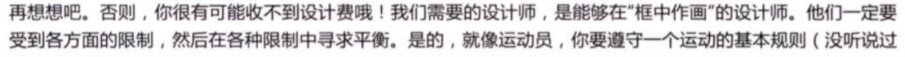 |
| 2016-07-04 16:02:06 | 我 | 你从哪本书上截图的 |
| 2016-07-04 16:02:23 | 你 | 就是我看的这本书 |
| 2016-07-04 16:02:28 | 你 | 这本书挺有意思的 |
| 2016-07-04 16:02:47 | 我 | 哦，扫描版的呀 |
| 2016-07-04 16:02:58 | 你 | 是 |
| 2016-07-04 16:09:00 | 你 | 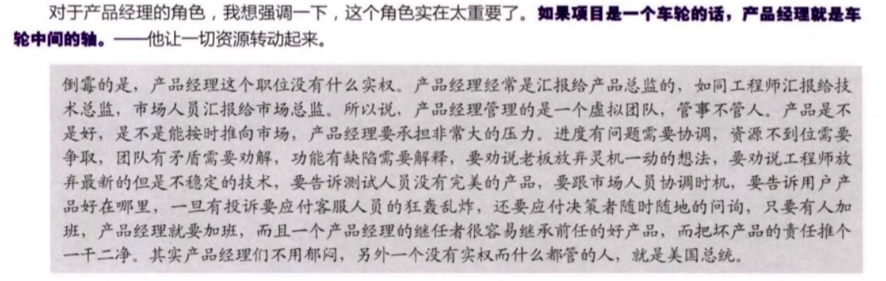 |
| 2016-07-04 16:25:17 | 你 | 微博的扫一扫在哪 |
| 2016-07-04 16:26:06 | 我 | 首页，右上角 |
| 2016-07-04 17:09:25 | 我 | 耿燕又来劲了 |
| 2016-07-04 17:09:41 | 你 | 她是不是刷存在感啊 |
| 2016-07-04 17:09:45 | 你 | 这个人好奇怪 |
| 2016-07-04 17:10:06 | 我 | 唉，无话可说了 |
| 2016-07-04 17:10:18 | 你 | 那就别说了 让她自己演吧 |
| 2016-07-04 17:15:14 | 我 | 我不说话 |
| 2016-07-04 17:15:23 | 我 | 让他们说吧 |
| 2016-07-04 17:15:48 | 我 | 耿燕这个笨蛋，把旭明也给扔里面了 |
| 2016-07-04 17:18:33 | 你 | 哈哈 |
| 2016-07-04 17:18:36 | 你 | 笨就是笨 |
| 2016-07-04 17:18:56 | 我 | 是 |
| 2016-07-04 17:25:03 | 你 | 好了吗 |
| 2016-07-04 17:25:26 | 我 | 没有，还吵呢 |
| 2016-07-04 17:26:06 | 我 | 耿燕直接问他们“你们做过运维吗” |
| 2016-07-04 17:26:20 | 你 | 哈哈 |
| 2016-07-04 17:26:29 | 你 | 她又来劲了 |
| 2016-07-04 17:26:31 | 你 | 哈哈 |
| 2016-07-04 17:26:35 | 我 | 是 |
| 2016-07-04 17:26:42 | 你 | 我在想她说话的表情和语调 |
| 2016-07-04 17:27:06 | 我 | 该给你录下来的 |
| 2016-07-04 17:27:35 | 你 | 你说我就想一下 |
| 2016-07-04 17:27:43 | 你 | 真没兴趣听 |
| 2016-07-04 17:27:54 | 你 | 我也见识过 |
| 2016-07-04 17:28:04 | 我 | 嗯 |
| 2016-07-04 17:28:15 | 你 | 我以前觉得你老吵（刚到单位的时候），现在觉得你吵的也不多 |
| 2016-07-04 17:29:18 | 我 | 我本来就不爱吵，只是看着他们是在是不像话了 |
| 2016-07-04 17:29:28 | 你 | 哈哈 |
| 2016-07-04 17:29:29 | 你 | 是 |
| 2016-07-04 18:29:45 | 你 | 回来 |
| 2016-07-04 18:29:59 | 我 | 是 |
| 2016-07-04 18:30:46 | 你 | 领导找你好几次了 |
| 2016-07-04 18:30:49 | 你 | 我回家了 |
| 2016-07-04 18:30:51 | 你 | 不说了 |
| 2016-07-04 18:31:02 | 我 | 好 |
{kind=link}
{kind=link}
{kind=link}
{kind=link}
{kind=link}
2016-07-05¶
| 2016-07-05 08:09:16 | 我 | 早 |
| 2016-07-05 08:09:27 | 你 | 早 |
| 2016-07-05 08:15:09 | 你 | 昨天领导没在跟耿燕吵吵啊？ |
| 2016-07-05 08:15:28 | 我 | 没有，领导没空 |
| 2016-07-05 08:16:04 | 我 | 你走没多久他就走了 |
| 2016-07-05 08:16:26 | 你 | 恩 你听到他跟耿燕嚷着吧 |
| 2016-07-05 08:16:38 | 我 | 听到了 |
| 2016-07-05 08:16:40 | 你 | 他找了你好几次 |
| 2016-07-05 08:16:46 | 你 | 看你忙着就没叫你 |
| 2016-07-05 08:17:01 | 我 | 他就是想确定代码行数 |
| 2016-07-05 08:17:25 | 你 | 恩 |
| 2016-07-05 08:17:33 | 我 | 上次被武总给摆了一道，有心理阴影了 |
| 2016-07-05 08:18:01 | 你 | 不知道 突然一股火感觉他 |
| 2016-07-05 08:18:15 | 你 | 一点就着了 |
| 2016-07-05 08:18:53 | 我 | 今天汇报还不知道是什么情况 |
| 2016-07-05 08:19:37 | 你 | 不跟他们抢季度奖 就没事 |
| 2016-07-05 08:19:38 | 我 | 昨天老杨让老田加上合并出问题的部分 |
| 2016-07-05 08:19:47 | 我 | 没那么简单 |
| 2016-07-05 08:20:21 | 我 | 昨天老田自己都说加上合并问题就是打DMD的脸 |
| 2016-07-05 08:20:40 | 你 | 恩 |
| 2016-07-05 08:20:57 | 我 | 可是老杨就是一定要加上 |
| 2016-07-05 08:21:04 | 我 | 老田也挺无奈的 |
| 2016-07-05 08:22:16 | 你 | 赵总在吗 |
| 2016-07-05 08:22:56 | 我 | 你是说今天开会？ |
| 2016-07-05 08:23:13 | 你 | 恩 |
| 2016-07-05 08:23:27 | 我 | 不知道 |
| 2016-07-05 08:24:53 | 我 | 上次赵总在，上午的时候赵总刁难楼下的测试，说他们的工时没达到150%。下午武总就刁难咱们的代码行数 |
| 2016-07-05 08:25:13 | 你 | 哈哈 |
| 2016-07-05 08:26:26 | 我 | 无处不政治 |
| 2016-07-05 08:26:45 | 你 | 是 |
| 2016-07-05 08:26:53 | 你 | 你们都得小心啊 |
| 2016-07-05 08:27:34 | 我 | 是呗，所以我才不想当领导呢，你说他们斗和我有什么关系 |
| 2016-07-05 08:27:57 | 你 | 哈哈 |
| 2016-07-05 08:28:01 | 你 | 日报不会写了 |
| 2016-07-05 08:29:21 | 我 | 哦，随便写点啥就得了 |
| 2016-07-05 08:33:26 | 你 | 编完了 |
| 2016-07-05 08:33:42 | 我 | 好 |
| 2016-07-05 08:40:36 | 我 | 今天上午我估计有空陪你，都是楼下的汇报。等下午咱们汇报的时候就没空陪你了 |
| 2016-07-05 08:41:08 | 你 | 没事 |
| 2016-07-05 08:41:10 | 你 | 都行 |
| 2016-07-05 08:43:55 | 你 | 你今天还没看我呢 |
| 2016-07-05 08:44:13 | 我 | [微笑]是 |
| 2016-07-05 08:44:34 | 我 | 今天不舒服，浑身没劲，不想站起来 |
| 2016-07-05 08:44:58 | 你 | 你中暑了吗 |
| 2016-07-05 08:45:15 | 我 | 不是，肠炎 |
| 2016-07-05 08:45:28 | 我 | 昨天折腾一宿 |
| 2016-07-05 08:46:00 | 你 | 还没好 |
| 2016-07-05 08:46:14 | 我 | 又犯了 |
| 2016-07-05 08:48:36 | 你 | 吃药了吗 |
| 2016-07-05 08:48:46 | 我 | 吃了 |
| 2016-07-05 08:49:08 | 我 | 已经好多了，就是没力气，懒得动 |
| 2016-07-05 08:49:15 | 你 | 那歇着吧 |
| 2016-07-05 08:49:17 | 你 | 别动了 |
| 2016-07-05 08:54:01 | 我 | 你今天口红淡 |
| 2016-07-05 08:54:20 | 你 | 恩 |
| 2016-07-05 09:31:23 | 我 | 领导就坐我边上，还老看我的电脑[抓狂] |
| 2016-07-05 09:31:53 | 你 | 哈哈 |
| 2016-07-05 09:32:34 | 我 | 只敢拿手机和你聊了 |
| 2016-07-05 09:55:25 | 你 | 刚才有点事 |
| 2016-07-05 09:55:45 | 我 | 没事，不着急 |
| 2016-07-05 10:13:09 | 我 | 你今天有什么事情 |
| 2016-07-05 10:16:14 | 你 | 没什么事 |
| 2016-07-05 10:16:37 | 你 | 王洪越让我写北京移动定长加载的用需 |
| 2016-07-05 10:17:24 | 我 | 不是定长导出吗？ |
| 2016-07-05 10:21:25 | 你 | 啊？ |
| 2016-07-05 10:21:28 | 你 | 不知道 |
| 2016-07-05 10:23:35 | 我 | redmine号多少 |
| 2016-07-05 10:28:25 | 你 | 不知道 |
| 2016-07-05 10:28:30 | 你 | 他刚才让我测试了 |
| 2016-07-05 10:29:02 | 我 | 那你怎么写 |
| 2016-07-05 10:29:12 | 你 | 不知道 我待会问他 |
| 2016-07-05 10:29:48 | 你 | 那个大的用需 你记得吗 |
| 2016-07-05 10:29:58 | 你 | 北京的 云南的都一起的 |
| 2016-07-05 10:30:05 | 你 | 把北京的摘出来 |
| 2016-07-05 10:30:07 | 我 | 不记得了 |
| 2016-07-05 10:30:46 | 你 | 就是给DMD的 他写的比较用心 整了几个图 |
| 2016-07-05 10:30:55 | 你 | 忘就忘吧 也不是啥大事 |
| 2016-07-05 10:31:31 | 我 | 当初让DMD做的那个？ |
| 2016-07-05 10:31:52 | 你 | 是 |
| 2016-07-05 10:32:07 | 你 | 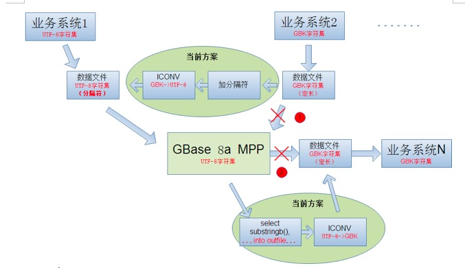 |
| 2016-07-05 10:32:14 | 你 | 这是其中的一个图 |
| 2016-07-05 10:32:29 | 你 | 亲 咱们那个606 5G都是谁在用？ |
| 2016-07-05 10:32:38 | 我 | 没有几个人 |
| 2016-07-05 10:32:43 | 我 | 怎么了 |
| 2016-07-05 10:33:18 | 你 | 没事 |
| 2016-07-05 10:33:35 | 你 | 那天王志说他电脑上不去网 问我上不上得去 |
| 2016-07-05 10:33:38 | 你 | 我说能 |
| 2016-07-05 10:33:51 | 我 | 哦 |
| 2016-07-05 10:34:00 | 你 | 我还说是苹果本的事 后来想想可能是跟他用的网不同 |
| 2016-07-05 10:34:10 | 你 | 幸好当时没傻了吧唧的说漏嘴 |
| 2016-07-05 10:34:27 | 我 | 嗯 |
| 2016-07-05 10:44:26 | 你 | 你们什么时候吃饭啊 |
| 2016-07-05 10:44:35 | 你 | 领导能看见我跟你聊天吗 |
| 2016-07-05 10:45:04 | 我 | 他应该看不见，我用手机 |
| 2016-07-05 10:45:18 | 你 | 恩 那你老是发信息也不好吧 |
| 2016-07-05 10:45:19 | 你 | 会吗 |
| 2016-07-05 10:45:33 | 我 | 没事 |
| 2016-07-05 10:45:55 | 你 | 恩 |
| 2016-07-05 10:54:25 | 你 | 干嘛呢 |
| 2016-07-05 10:54:31 | 你 | 谁在汇报啊 |
| 2016-07-05 10:54:42 | 我 | 单机组 |
| 2016-07-05 10:54:52 | 我 | 我等你呢 |
| 2016-07-05 10:55:02 | 你 | 我没事了 |
| 2016-07-05 10:55:05 | 你 | 写的差不多了 |
| 2016-07-05 10:55:15 | 我 | 好 |
| 2016-07-05 10:55:18 | 你 | 我考你个知识 |
| 2016-07-05 10:55:33 | 你 | utf8存储汉字需要多少个字节？ |
| 2016-07-05 10:55:48 | 我 | 3-4个 |
| 2016-07-05 10:56:27 | 你 | 是变长的吗 |
| 2016-07-05 10:56:54 | 我 | 是 |
| 2016-07-05 10:57:48 | 你 | 我以为是3呢 |
| 2016-07-05 10:57:51 | 你 | GBK呢 |
| 2016-07-05 10:58:38 | 我 | 定长，2字节 |
| 2016-07-05 10:58:56 | 你 | 哈哈 |
| 2016-07-05 10:58:59 | 你 | 你怎么记住的 |
| 2016-07-05 10:59:16 | 你 | 别高兴的太早 |
| 2016-07-05 10:59:23 | 你 | 还有考核哦 |
| 2016-07-05 10:59:25 | 我 | 知道编码规律就记住了 |
| 2016-07-05 11:00:21 | 你 | 8avarchar类型列最大长度是多少 |
| 2016-07-05 11:00:41 | 我 | 32K吧 |
| 2016-07-05 11:01:46 | 你 | 那8a表中某列指定varchar(4),编码是utf8,做多能insert多少个汉字？ |
| 2016-07-05 11:02:09 | 我 | 不知道 |
| 2016-07-05 11:02:18 | 你 | 为啥啊？ |
| 2016-07-05 11:02:37 | 我 | 懒得算 |
| 2016-07-05 11:03:35 | 你 | 真讨厌 |
| 2016-07-05 11:03:39 | 你 | 是4 |
| 2016-07-05 11:03:42 | 你 | 不用算 |
| 2016-07-05 11:03:52 | 你 | 因为8a存储的是字符 |
| 2016-07-05 11:04:09 | 你 | 我是不是把你绕晕了 |
| 2016-07-05 11:04:12 | 我 | 😄 |
| 2016-07-05 11:13:47 | 你 | 今天领导能打球吗你估计 |
| 2016-07-05 11:13:51 | 你 | 我看了下打球的人 |
| 2016-07-05 11:15:02 | 我 | 估计够呛，他今天说开完会还得回公司 |
| 2016-07-05 11:15:13 | 你 | 恩 |
| 2016-07-05 11:15:14 | 你 | 好 |
| 2016-07-05 11:19:02 | 我 | 今天打球人多吗 |
| 2016-07-05 11:19:18 | 你 | 现在7个 |
| 2016-07-05 11:20:21 | 我 | 还不少 |
| 2016-07-05 11:22:41 | 你 | 打球的7人：华仔、耿燕、李辉、国华、蓓蓓、明静、彪仔。地点：工打羽毛球馆。时间：场地一：6：00-8：00，场地二：6：00-7：00。 |
| 2016-07-05 11:22:52 | 我 | 好 |
| 2016-07-05 11:22:53 | 你 | 领导现在忙吗 |
| 2016-07-05 11:22:58 | 你 | 我把打球的人发给他 |
| 2016-07-05 11:23:07 | 我 | 你发吧 |
| 2016-07-05 11:24:44 | 你 | 他说他争取去 |
| 2016-07-05 11:26:13 | 我 | 好 |
| 2016-07-05 11:35:34 | 你 | 领导不去了 |
| 2016-07-05 11:35:45 | 你 | 我吃饭来了 |
| 2016-07-05 11:36:00 | 我 | 好的，我们得12点 |
| 2016-07-05 11:36:05 | 你 | 恩 |
| 2016-07-05 11:36:08 | 我 | 我都饿了 |
| 2016-07-05 11:36:41 | 你 | 哈哈 |
| 2016-07-05 11:44:21 | 你 | 阿娇带的火腿炒鸡蛋 |
| 2016-07-05 11:44:25 | 你 | 哈哈 |
| 2016-07-05 11:44:29 | 你 | 真能吃 |
| 2016-07-05 11:44:42 | 我 | 可以想象 |
| 2016-07-05 11:57:15 | 你 | 领导跟我说的他争取去，后来喝了一段时间说没带衣服，我就说太麻烦别去了，他说他看情况，可是刚才阿娇跟我说他昨天跟阿娇说不打了 |
| 2016-07-05 11:57:28 | 你 | 大家都在互相骗 |
| 2016-07-05 11:57:35 | 你 | 真没意思 |
| 2016-07-05 11:57:47 | 你 | 隔了一段时间 |
| 2016-07-05 12:01:01 | 我 | 啊 |
| 2016-07-05 12:02:01 | 我 | 你怎么认为是互相骗 |
| 2016-07-05 12:12:41 | 你 | 不是吗？ |
| 2016-07-05 12:12:52 | 你 | 他可以说今天不去了啊 |
| 2016-07-05 12:13:20 | 我 | 哦 |
| 2016-07-05 12:13:34 | 你 | 吃饭了吗 |
| 2016-07-05 12:13:39 | 我 | 吃呢 |
| 2016-07-05 12:13:48 | 我 | 可饿死我了 |
| 2016-07-05 12:13:53 | 你 | 多吃点 |
| 2016-07-05 12:14:31 | 我 | 嗯，赵总和我们一桌 |
| 2016-07-05 12:14:50 | 我 | 老杨去其他地方陪客户了 |
| 2016-07-05 12:14:51 | 你 | 他们说他们的，你吃你的 |
| 2016-07-05 12:14:59 | 你 | 还有客户啊 |
| 2016-07-05 12:15:02 | 我 | 和武总一起 |
| 2016-07-05 12:15:07 | 我 | 是 |
| 2016-07-05 12:15:20 | 你 | 恩，喝酒吗 |
| 2016-07-05 12:15:26 | 我 | 武总让赵总去，赵总让老杨去 |
| 2016-07-05 12:15:32 | 我 | 不知道 |
| 2016-07-05 12:15:42 | 你 | 随便吧，你赶紧吃 |
| 2016-07-05 12:15:44 | 我 | 应该不喝，老杨开车了 |
| 2016-07-05 12:15:45 | 你 | 别发了 |
| 2016-07-05 12:15:50 | 我 | 嗯 |
| 2016-07-05 13:20:27 | 你 | 睡醒了 |
| 2016-07-05 13:21:04 | 我 | 好的 |
| 2016-07-05 13:21:14 | 你 | 开始了嘛你们 |
| 2016-07-05 13:21:39 | 我 | 开始了，早上拖堂了 |
| 2016-07-05 13:21:57 | 我 | 比计划慢了一个人 |
| 2016-07-05 13:24:10 | 你 | 恩 |
| 2016-07-05 13:34:35 | 你 | 你知道吗 今天早上王洪越舔着脸让我给他测试定长加载和定长导出 |
| 2016-07-05 13:35:26 | 我 | 不给他好脸色 |
| 2016-07-05 13:35:38 | 你 | 我不知道有定长导出 然后找得他跟我找得手册 然后他的文档中写的现在8a不支持定长导出 我问他是不是写错了 他说就是不支持 |
| 2016-07-05 13:35:39 | 我 | 应该让他好好求求 |
| 2016-07-05 13:35:59 | 你 | 我说早上不是测了吗 他就说不支持就是不支持 |
| 2016-07-05 13:36:06 | 你 | 我说这人有病啊 |
| 2016-07-05 13:36:13 | 你 | 就不能解释一下吗 |
| 2016-07-05 13:36:18 | 你 | 我就没搭理他 |
| 2016-07-05 13:36:23 | 我 | 嗯 |
| 2016-07-05 13:36:27 | 你 | 你说我是不是神经了 |
| 2016-07-05 13:36:45 | 我 | 不是呀，是他有毛病 |
| 2016-07-05 13:37:30 | 你 | 我也不知道 这人实在是太！！！！讨！！！！！厌！！！！！！！ |
| 2016-07-05 13:37:43 | 我 | 是 |
| 2016-07-05 13:47:58 | 我 | 你下午干什么 |
| 2016-07-05 13:49:11 | 你 | 呆着看看书 |
| 2016-07-05 13:49:20 | 你 | 阿娇说想去华苑办下社保卡 |
| 2016-07-05 13:49:30 | 你 | 趁着你们都不在 |
| 2016-07-05 13:49:34 | 我 | 你一起去吗 |
| 2016-07-05 13:49:54 | 你 | 对啊 |
| 2016-07-05 13:50:05 | 我 | 说得好像我们都不让去呢 |
| 2016-07-05 13:50:11 | 你 | 可能去 可是我又懒得动 |
| 2016-07-05 13:50:16 | 你 | 嘻嘻 |
| 2016-07-05 13:50:17 | 我 | 哦 |
| 2016-07-05 13:50:25 | 你 | 不耽误工作最重要 |
| 2016-07-05 13:50:51 | 我 | 最近没什么工作 |
| 2016-07-05 13:51:10 | 你 | 是 |
| 2016-07-05 13:51:15 | 你 | 不忙 |
| 2016-07-05 13:51:32 | 你 | 王洪越让我写的那个写完了 |
| 2016-07-05 13:52:18 | 我 | 你要想去你就去吧，我这也没事 |
| 2016-07-05 14:11:51 | 你 | 不去了 |
| 2016-07-05 14:12:25 | 我 | 好的 |
| 2016-07-05 14:12:31 | 我 | 纠结了多久 |
| 2016-07-05 14:12:40 | 你 | 我没纠结 |
| 2016-07-05 14:12:53 | 我 | 😄 |
| 2016-07-05 14:12:58 | 你 | 走的话就悄悄走得了 阿娇在我们屋跟杨丽英说了半天 |
| 2016-07-05 14:13:11 | 你 | 然后扭头跟我说 咱们去吧 |
| 2016-07-05 14:13:21 | 你 | 我跟他说不去 今天有事 |
| 2016-07-05 14:13:39 | 我 | 阿娇太傻 |
| 2016-07-05 14:13:41 | 你 | 杨丽颖没事 主要严丹在呢 |
| 2016-07-05 14:13:42 | 你 | 对啊 |
| 2016-07-05 14:13:45 | 你 | 笨蛋 |
| 2016-07-05 14:14:10 | 你 | 他这么明显 回头严丹在参我俩一本 |
| 2016-07-05 14:14:13 | 你 | 太不值得了 |
| 2016-07-05 14:14:19 | 我 | 是 |
| 2016-07-05 14:14:31 | 你 | 等下次吧 |
| 2016-07-05 14:14:42 | 你 | 也不是啥大事 也不着急用 |
| 2016-07-05 14:14:51 | 我 | 嗯 |
| 2016-07-05 14:16:13 | 我 | 大领导都走了 |
| 2016-07-05 14:16:20 | 你 | 比如 |
| 2016-07-05 14:16:22 | 我 | 快开成茶话会了 |
| 2016-07-05 14:16:25 | 你 | 哈哈 |
| 2016-07-05 14:16:28 | 你 | 那不错啊 |
| 2016-07-05 14:16:34 | 你 | 成茶话会才好呢 |
| 2016-07-05 14:16:35 | 我 | 武总 赵总都走了 |
| 2016-07-05 14:16:37 | 你 | 多轻松 |
| 2016-07-05 14:16:40 | 你 | 那还开啥啊 |
| 2016-07-05 14:16:48 | 我 | 时间控制不住了 |
| 2016-07-05 14:16:57 | 你 | 张工在吧 |
| 2016-07-05 14:17:07 | 你 | 剩下的就是张工、杨总了呗 |
| 2016-07-05 14:17:11 | 我 | 是 |
| 2016-07-05 14:17:12 | 你 | 那倒是 |
| 2016-07-05 14:17:13 | 你 | 开吧 |
| 2016-07-05 14:17:18 | 你 | 咱俩聊天 |
| 2016-07-05 14:17:22 | 我 | 对呀 |
| 2016-07-05 14:17:27 | 你 | 我对象他们今天晚上聚餐 |
| 2016-07-05 14:17:36 | 我 | 你几点走？ |
| 2016-07-05 14:17:48 | 我 | 还是自己打车回去？ |
| 2016-07-05 14:17:54 | 你 | 我等他吧 |
| 2016-07-05 14:18:00 | 你 | 等我打完球 他们也差不多 |
| 2016-07-05 14:18:07 | 你 | 他正好接着我 |
| 2016-07-05 14:18:08 | 我 | 好的 |
| 2016-07-05 14:18:12 | 你 | 你还回单位吗 |
| 2016-07-05 14:18:16 | 我 | 回吧 |
| 2016-07-05 14:18:22 | 我 | 原来不想的 |
| 2016-07-05 14:18:28 | 我 | 老杨要回去 |
| 2016-07-05 14:18:40 | 你 | 恩 |
| 2016-07-05 14:18:42 | 你 | 好 |
| 2016-07-05 14:20:01 | 你 | 这种会 大领导都走了 |
| 2016-07-05 14:20:05 | 你 | 那怎么评啊 |
| 2016-07-05 14:20:20 | 我 | 正好今天好几拨客户 |
| 2016-07-05 14:20:31 | 我 | 领导都去陪客户了 |
| 2016-07-05 14:20:53 | 你 | 哦 陪客户这种事武总也去吗 |
| 2016-07-05 14:21:00 | 我 | 是 |
| 2016-07-05 14:21:02 | 你 | 我以为应该是崔总是主力呢 |
| 2016-07-05 14:21:30 | 我 | 技术对口的都是武总出面 |
| 2016-07-05 14:21:44 | 你 | 恩 那估计得 |
| 2016-07-05 14:22:20 | 你 | 我刚才把王洪越让我写的用需发给他了 他跟我说 他忘记了 以前王志新写了一个 |
| 2016-07-05 14:22:23 | 你 | 我晕 |
| 2016-07-05 14:22:36 | 你 | 我没怎么写 就是把他写的 删删减减 |
| 2016-07-05 14:22:44 | 我 | 别理他了 |
| 2016-07-05 14:22:49 | 你 | 恩 |
| 2016-07-05 14:22:58 | 你 | 我说你随便吧 |
| 2016-07-05 14:23:03 | 我 | 提他都伤心情 |
| 2016-07-05 14:23:09 | 你 | 是 |
| 2016-07-05 14:23:13 | 你 | 不提他了 |
| 2016-07-05 14:23:20 | 你 | 领导还坐你旁边吗 |
| 2016-07-05 14:23:32 | 我 | 是 |
| 2016-07-05 14:23:51 | 你 | 那你老是发消息会不会显得不好啊 |
| 2016-07-05 14:24:17 | 我 | 没事，他也不会说我什么 |
| 2016-07-05 14:25:06 | 你 | 那就好 |
| 2016-07-05 14:32:48 | 我 | 果然是茶话会了 |
| 2016-07-05 14:33:01 | 我 | 大家已经自由讨论了 |
| 2016-07-05 14:33:10 | 你 | 好吧 |
| 2016-07-05 14:33:16 | 你 | 你跟旭明他们要数据呢吗 |
| 2016-07-05 14:33:28 | 我 | 是，他们说什么了 |
| 2016-07-05 14:33:46 | 你 | 啥也没说 |
| 2016-07-05 14:33:52 | 你 | 就给呢 |
| 2016-07-05 14:34:34 | 我 | 好的，最近旭明抱怨很多 |
| 2016-07-05 14:35:07 | 我 | 周一周会上有一件事情我没和你说 |
| 2016-07-05 14:35:21 | 你 | 恩 |
| 2016-07-05 14:35:26 | 你 | 他刚才说他要疯了 |
| 2016-07-05 14:36:00 | 我 | 上周末加班的时候老田和旭明商量把研发送测前的回归测试减少 |
| 2016-07-05 14:36:10 | 我 | 旭明也没和我提 |
| 2016-07-05 14:36:42 | 你 | 你怎么知道的 |
| 2016-07-05 14:36:52 | 我 | 在周会上老田突然提出来，口吻就是他和旭明已经定了，告知我一下 |
| 2016-07-05 14:36:53 | 你 | 那将来出事了 肯定说研发的事 |
| 2016-07-05 14:37:11 | 你 | o o |
| 2016-07-05 14:37:16 | 你 | 唉 |
| 2016-07-05 14:37:21 | 你 | 真没意思 |
| 2016-07-05 14:37:49 | 我 | 让我找了个借口给挡回去了 |
| 2016-07-05 14:38:20 | 我 | 我觉得旭明就是太笨了，连这都看不出来 |
| 2016-07-05 14:38:28 | 你 | 不是 |
| 2016-07-05 14:38:34 | 你 | 是他跟你的想法不同 |
| 2016-07-05 14:38:45 | 我 | 怎么不同 |
| 2016-07-05 14:39:19 | 你 | 他没吃过亏 他喜欢往前冲 |
| 2016-07-05 14:39:38 | 我 | 我说的不是这个 |
| 2016-07-05 14:39:45 | 你 | 再说对于他来说 田也很重要 |
| 2016-07-05 14:40:06 | 我 | 我不知道田是不是有意的 |
| 2016-07-05 14:40:13 | 我 | 你先听我解释 |
| 2016-07-05 14:40:14 | 你 | 肯定不是啊 |
| 2016-07-05 14:40:17 | 你 | 你说吧 |
| 2016-07-05 14:41:56 | 我 | 上周1.1送测出现问题，测试组记了一个bug，还要求我们重新送测，这个叫NG，属于重大质量事故。DMD他们都考核这项指标 |
| 2016-07-05 14:42:35 | 你 | 可是我觉得旭明根本不在乎这个 |
| 2016-07-05 14:42:37 | 我 | 这个问题我后来查了一下，是咱们的回归里面没有相应的测试用例 |
| 2016-07-05 14:42:59 | 我 | 本来应该是国华他们加进去的，他们没有加 |
| 2016-07-05 14:43:42 | 我 | 如果他们加进去了，我们送测前的我回归就测试出来了 |
| 2016-07-05 14:43:53 | 我 | 那么按照这件事的逻辑 |
| 2016-07-05 14:44:07 | 我 | 我们送测前不跑回归 |
| 2016-07-05 14:44:08 | 你 | 恩 |
| 2016-07-05 14:44:18 | 你 | 我知道 |
| 2016-07-05 14:44:43 | 你 | 现在漏加了一个bug都已经这样了 要是不跑可能会更严重 |
| 2016-07-05 14:44:56 | 你 | 到处NG |
| 2016-07-05 14:45:28 | 我 | 对 |
| 2016-07-05 14:45:40 | 我 | 还有一个你不知道的 |
| 2016-07-05 14:46:22 | 我 | 老田以前就经常说研发组NG了应该扣工资 |
| 2016-07-05 14:46:41 | 你 | 那是他什么时候说的 |
| 2016-07-05 14:46:54 | 我 | 刚过来的时候 |
| 2016-07-05 14:47:00 | 你 | 你想 他现在位置不同了 |
| 2016-07-05 14:47:07 | 我 | 那时候说的是DMD |
| 2016-07-05 14:47:20 | 我 | 后来管测试组的时候也说过 |
| 2016-07-05 14:47:41 | 你 | 一线有压力 他得想办法缓解 他想出来的办法是研发不跑回归 这肯定是有私心的 一来这样时间省出来了 |
| 2016-07-05 14:47:47 | 你 | 这个时候主要的 |
| 2016-07-05 14:48:06 | 你 | 二来反正出bug也是你研发的问题 跟他没关系 |
| 2016-07-05 14:48:09 | 你 | 一举两得 |
| 2016-07-05 14:48:24 | 我 | 所以不管他是不是有意的，客观上让研发陷入一个陷阱 |
| 2016-07-05 14:48:29 | 你 | 但是我觉得前者比较大 不至于到故意陷害的地步 |
| 2016-07-05 14:48:55 | 你 | 这不是陷阱 这是明摆着为了压缩时间 舍了研发的利益 |
| 2016-07-05 14:49:09 | 你 | 他作为产品经理来讲不是很厚道哦 |
| 2016-07-05 14:49:20 | 你 | 但是你家张胖子还不是乖乖答应了 |
| 2016-07-05 14:49:22 | 你 | 唉 |
| 2016-07-05 14:49:42 | 我 | 其实我到不在意这个 |
| 2016-07-05 14:49:56 | 我 | 胖子的地位和老田没法比 |
| 2016-07-05 14:49:57 | 你 | 而且 你想 旭明答应他了 现在你不放 旭明面子不好过 老田还觉得你事多 |
| 2016-07-05 14:50:14 | 我 | 关键是胖子没和我说 |
| 2016-07-05 14:50:16 | 你 | 你关心的事旭明没跟你说 |
| 2016-07-05 14:50:17 | 你 | 是吗 |
| 2016-07-05 14:50:21 | 我 | 是 |
| 2016-07-05 14:50:22 | 你 | 嗯嗯 |
| 2016-07-05 14:50:29 | 你 | 他可能没当回事 |
| 2016-07-05 14:53:17 | 我 | 呵呵 |
| 2016-07-05 14:53:33 | 你 | 唉 |
| 2016-07-05 14:53:37 | 我 | 这种事情都可以不当回事 |
| 2016-07-05 14:53:51 | 我 | 他的心可是够宽的 |
| 2016-07-05 14:54:08 | 你 | 你当时说东海变心怎么办 |
| 2016-07-05 14:54:27 | 你 | 结果没多久东海就离职了 |
| 2016-07-05 14:55:22 | 你 | 他就是啥事都不上心 |
| 2016-07-05 14:55:44 | 我 | 你说我有多郁闷 |
| 2016-07-05 14:56:11 | 我 | 我不管，看着自己带出来的团队一点一点地被毁掉 |
| 2016-07-05 14:56:12 | 你 | shi |
| 2016-07-05 14:56:28 | 你 | 唉 |
| 2016-07-05 14:56:32 | 你 | 要是我气死了 |
| 2016-07-05 14:57:26 | 我 | 是呀 |
| 2016-07-05 14:58:20 | 你 | 你后悔把旭明提上来吗 |
| 2016-07-05 14:58:28 | 你 | 他太让人失望了 |
| 2016-07-05 14:58:44 | 我 | 不后悔 |
| 2016-07-05 14:59:08 | 我 | 当初提他是因为东海 |
| 2016-07-05 14:59:29 | 我 | 如果我再不提他，怕以后就没机会了 |
| 2016-07-05 15:00:27 | 你 | 唉 |
| 2016-07-05 15:00:41 | 你 | 可能我没在你那位置 我也想不到你想的那么多 |
| 2016-07-05 15:02:59 | 你 | 我这个破邮箱快气死我了 |
| 2016-07-05 15:03:13 | 我 | 怎么啦 |
| 2016-07-05 15:03:44 | 你 | 什么破玩意 |
| 2016-07-05 15:03:57 | 你 | 无缘无故让我换密码 |
| 2016-07-05 15:04:09 | 你 | 又犯以前那个毛病了 |
| 2016-07-05 15:04:16 | 我 | 我教你一个办法 |
| 2016-07-05 15:04:31 | 我 | 你去网站上先改一个密码 |
| 2016-07-05 15:04:57 | 我 | 然后退出，用新密码登陆，再把密码改回来 |
| 2016-07-05 15:05:09 | 我 | 我用这个办法好久了 |
| 2016-07-05 15:07:33 | 你 | 我懒得整了 |
| 2016-07-05 15:07:55 | 我 | 哦 |
| 2016-07-05 15:12:20 | 你 | 严丹又质问为啥不参加单位的呢 |
| 2016-07-05 15:12:24 | 你 | 羽毛球呢 |
| 2016-07-05 15:12:37 | 我 | 说谁呢 |
| 2016-07-05 15:12:38 | 你 | 真是的 您看人家这管家婆当的多好 |
| 2016-07-05 15:13:17 | 你 | 今天真是诸事不顺啊 |
| 2016-07-05 15:13:31 | 你 | 我每次穿这个衣服的时候都点很背 |
| 2016-07-05 15:15:15 | 我 | 不会吧 |
| 2016-07-05 15:15:24 | 你 | 真的 每次都是 |
| 2016-07-05 15:15:25 | 我 | 今天还有什么不顺心的事 |
| 2016-07-05 15:17:43 | 你 | 都是破烂事呗 |
| 2016-07-05 15:17:46 | 你 | 没啥 |
| 2016-07-05 15:18:46 | 你 | 你们还能完吗 |
| 2016-07-05 15:21:51 | 我 | 现在中场休息 |
| 2016-07-05 15:22:26 | 你 | 休息吧 |
| 2016-07-05 15:24:57 | 我 | 现在是老杨汇报，等我吧 |
| 2016-07-05 15:25:08 | 你 | 恩 |
| 2016-07-05 15:25:13 | 你 | 他完了是你吗 |
| 2016-07-05 15:25:23 | 我 | 没我的事情 |
| 2016-07-05 15:25:34 | 我 | 就他一个人汇报 |
| 2016-07-05 15:25:42 | 你 | 那挺好 |
| 2016-07-05 16:07:01 | 我 | 至少超时半小时 |
| 2016-07-05 16:19:50 | 我 | 你几点去打球 |
| 2016-07-05 16:25:46 | 你 | 导出代表头的软需评审 |
| 2016-07-05 16:26:04 | 我 | 哦，我忘了 |
| 2016-07-05 16:26:19 | 你 | 打起来了 |
| 2016-07-05 16:26:34 | 我 | 谁和谁 |
| 2016-07-05 17:01:57 | 我 | 我们开完了，回公司 |
| 2016-07-05 17:48:30 | 你 | 还想跟你待会呢，抽烟去了 |
| 2016-07-05 17:49:03 | 我 | 让讨厌的人拉过来的 |
| 2016-07-05 18:58:38 | 你 | 体力不支 |
| 2016-07-05 18:58:40 | 你 | 难受 |
| 2016-07-05 18:59:15 | 我 | 歇会，喝水 |
| 2016-07-05 19:09:34 | 你 | 我回来了 |
| 2016-07-05 19:09:37 | 你 | 你走了吗 |
| 2016-07-05 19:09:41 | 你 | 今天不舒服 |
{kind=link}
2016-07-06¶
| 2016-07-06 08:06:23 | 你 | 还没到？ |
| 2016-07-06 08:06:50 | 我 | 没有，昨天太累了，今天懒得起 |
| 2016-07-06 08:07:05 | 你 | 哈哈 |
| 2016-07-06 08:07:27 | 我 | 你昨天几点到家的 |
| 2016-07-06 08:09:10 | 你 | 都是我不好 |
| 2016-07-06 08:09:14 | 你 | 老不让你回家 |
| 2016-07-06 08:09:33 | 你 | 我昨天晚上还送了我对象的一个同事 回家都十点多了 |
| 2016-07-06 08:09:39 | 你 | 还得洗头发洗澡 |
| 2016-07-06 08:10:03 | 我 | 我也想想多和你呆会 |
| 2016-07-06 08:10:10 | 你 | 真的吗 |
| 2016-07-06 08:10:12 | 你 | 不骗我 |
| 2016-07-06 08:10:17 | 我 | 不骗你 |
| 2016-07-06 08:10:26 | 你 | 其实我昨天太自私了 |
| 2016-07-06 08:10:27 | 我 | 好久没这么聊了 |
| 2016-07-06 08:10:39 | 你 | 非得拉着你不让你走 |
| 2016-07-06 08:10:43 | 我 | 没有 |
| 2016-07-06 08:11:10 | 你 | 我今天在来的路上还想 你可能起不来了 |
| 2016-07-06 08:11:28 | 我 | 😄，你猜中了 |
| 2016-07-06 08:11:56 | 你 | 我早上来的时候看不见你就不知道干点啥 |
| 2016-07-06 08:12:03 | 你 | 好像是习惯你在那了 |
| 2016-07-06 08:12:05 | 你 | 这家伙 |
| 2016-07-06 08:13:03 | 我 | 赶紧写日志吧 |
| 2016-07-06 08:20:57 | 你 | 写完了 |
| 2016-07-06 08:21:08 | 我 | 好的 |
| 2016-07-06 08:21:12 | 你 | 你先收拾吧 |
| 2016-07-06 08:21:15 | 你 | 出门了吗 |
| 2016-07-06 08:21:23 | 我 | 已经上车了 |
| 2016-07-06 08:22:09 | 我 | 你还不舒服吗 |
| 2016-07-06 08:22:33 | 你 | 没事了 |
| 2016-07-06 08:22:42 | 我 | 好的 |
| 2016-07-06 08:26:33 | 我 | 你对象昨天喝了多少 |
| 2016-07-06 08:28:46 | 你 | 没喝多 |
| 2016-07-06 08:28:50 | 你 | 老王 我错了 |
| 2016-07-06 08:28:53 | 你 | 我真的错了 |
| 2016-07-06 08:29:00 | 我 | 怎么啦 |
| 2016-07-06 08:29:24 | 我 | 别吓我 |
| 2016-07-06 08:29:49 | 你 | 等我今天跟你说点我的想法 |
| 2016-07-06 08:30:26 | 我 | 好吧 |
| 2016-07-06 08:30:53 | 你 | 我在前几天 想明白了一件事 |
| 2016-07-06 08:31:09 | 我 | what |
| 2016-07-06 08:31:26 | 你 | 就是你说的 我不能再再王洪越的规则里 这是战略的错误 |
| 2016-07-06 08:31:43 | 你 | 我昨天下午写了一篇长长的日记 |
| 2016-07-06 08:32:01 | 我 | 嗯 |
| 2016-07-06 08:32:07 | 你 | 刚才翻开看的时候 逻辑还是很乱的 |
| 2016-07-06 08:32:15 | 你 | 但是我今早终于明白怎么回事了 |
| 2016-07-06 08:32:36 | 你 | 就像我当初跟你说看明白的跟东东之间的关系一样 |
| 2016-07-06 08:32:47 | 你 | 我跟你说说啊 |
| 2016-07-06 08:32:51 | 我 | 好呀 |
| 2016-07-06 08:32:54 | 你 | 我先说 |
| 2016-07-06 08:34:10 | 你 | 你知道吗 我跟你说过 我曾经也会仰慕那些很有本事的，我初出校门时遇到的社会上的人，我那时才知道人外有人 我也嫌弃过东东 但是在我跟你说的时候 我已经回归了 |
| 2016-07-06 08:34:35 | 你 | 我可以跟东东信誓旦旦的说 面对这种诱惑 我可以完全看淡了 |
| 2016-07-06 08:34:54 | 你 | 可是前些日子我老是觉得我喜欢领导了 包括你也说 看出来了 |
| 2016-07-06 08:35:05 | 你 | 我很纳闷我喜欢他什么 |
| 2016-07-06 08:35:13 | 你 | 今天我终于想明白了 |
| 2016-07-06 08:35:49 | 你 | 面对他 我需要抵制的不是对有本事人的诱惑 |
| 2016-07-06 08:35:56 | 你 | 是对权利的诱惑 |
| 2016-07-06 08:36:15 | 你 | 所以我根本不喜欢他 我喜欢的是他背后的权利 |
| 2016-07-06 08:36:32 | 我 | 嗯 |
| 2016-07-06 08:36:44 | 你 | 但是这个权利 唯一利我的地方 就是我想打压王洪越 |
| 2016-07-06 08:37:07 | 你 | 我把这个私欲完全嫁接在了与领导的相处上 |
| 2016-07-06 08:37:49 | 你 | 插一句 我个人认为你已经很牛了 我却没有因为喜欢你而给自己带来任何困惑 |
| 2016-07-06 08:38:00 | 你 | 说明我对领导也一样 |
| 2016-07-06 08:38:16 | 你 | 所以权利才是这场战争里的主要因素 |
| 2016-07-06 08:38:27 | 我 | 嗯 |
| 2016-07-06 08:38:54 | 你 | 而我自从你告诉我游戏规则的事 当然也是我自己想明白了 |
| 2016-07-06 08:39:29 | 你 | 就是与其我很拙劣的讨好领导 还不如按照你说的变个游戏规则 |
| 2016-07-06 08:39:41 | 我 | 是 |
| 2016-07-06 08:39:58 | 你 | 或者我可以不断提升自己 就是足够强大 强大到在他的规则了也能打压他 |
| 2016-07-06 08:40:17 | 你 | 我想依赖别人打压王洪越的这个做法本身就是个错误 |
| 2016-07-06 08:40:41 | 我 | 嗯 |
| 2016-07-06 08:40:50 | 你 | 如果抛开领导身上的权利 我真是想不到任何跟他有关的事情 |
| 2016-07-06 08:41:35 | 你 | 当初跟你之所以没有这种情况 （就是利用你打压王洪越） |
| 2016-07-06 08:41:50 | 你 | 我总觉得是你一直带我走的路 就不是这条路 |
| 2016-07-06 08:41:59 | 我 | 是 |
| 2016-07-06 08:42:01 | 你 | 所以我没有这种困扰 |
| 2016-07-06 08:43:14 | 你 | 而且我发现 每次领导跟我互动的时候我的那种满足感 完全是因为我觉得 这离领导因为我打压王洪越又近了一步产生的 |
| 2016-07-06 08:43:35 | 你 | 所以 我是被权利蒙住双眼了 |
| 2016-07-06 08:45:37 | 我 | 嗯 |
| 2016-07-06 08:45:39 | 你 | 回头说说你带我走的路 你很少 让我别管了 你帮我整他 你是不断的带着我成长 培养我的自信 |
| 2016-07-06 08:46:05 | 你 | 我在学习的过程中 很充实 很快乐 |
| 2016-07-06 08:46:56 | 我 | 嗯 |
| 2016-07-06 08:47:09 | 你 | 而且现在 不能说放弃 也不如以前那么单纯的学习了 开始把心思扑在一个其实根本就不可能实现的目标上 |
| 2016-07-06 08:47:26 | 你 | 搞得自己很被动 也很疲惫 也很浮躁 |
| 2016-07-06 08:48:21 | 你 | 记得那句话：你若盛开，清风自来 |
| 2016-07-06 08:48:30 | 你 | 我是完全迷失了 |
| 2016-07-06 08:48:46 | 我 | 没有 |
| 2016-07-06 08:49:13 | 我 | 你只是没有放下 |
| 2016-07-06 09:15:22 | 你 | 耿老师真是不怕事大啊 |
| 2016-07-06 09:15:36 | 我 | 怎么啦 |
| 2016-07-06 09:15:37 | 你 | 唉 |
| 2016-07-06 09:15:52 | 你 | 好像是我给刘杰找事似的 |
| 2016-07-06 09:16:11 | 我 | 你们说的是什么，我没听清 |
| 2016-07-06 09:16:17 | 你 | 没事 |
| 2016-07-06 09:16:22 | 你 | 反正他们都没说过我 |
| 2016-07-06 09:16:46 | 你 | 就是好像我坑了刘杰似的 |
| 2016-07-06 09:18:54 | 我 | 是你们昨天的评审吗 |
| 2016-07-06 09:18:59 | 你 | 是 |
| 2016-07-06 09:19:03 | 我 | 我打算回邮件的 |
| 2016-07-06 09:19:10 | 你 | 回什么 |
| 2016-07-06 09:19:28 | 你 | 我提的就是那个表头太长如何显示 |
| 2016-07-06 09:19:32 | 我 | 回刘杰的，有的地方写的不合适 |
| 2016-07-06 09:19:44 | 你 | 这个问题已经有结论了 |
| 2016-07-06 09:19:57 | 你 | 而且那个format=3，4的问题不是我提的 |
| 2016-07-06 09:20:08 | 你 | 我提的他也没记 |
| 2016-07-06 09:23:22 | 我 | 你刚才说的表头太长，会议记录里面没有 |
| 2016-07-06 09:27:18 | 你 | 就是没有 |
| 2016-07-06 09:27:21 | 你 | 我猜提的 |
| 2016-07-06 09:27:28 | 我 | 哦 |
| 2016-07-06 09:35:55 | 你 | 导出哪有format4啊 |
| 2016-07-06 09:36:02 | 你 | 那是加载好不好 |
| 2016-07-06 09:36:21 | 我 | 唉，无话可说 |
| 2016-07-06 09:43:49 | 你 | [链接] 为什么葫芦娃有且只能是7个！ |
| 2016-07-06 09:56:27 | 我 | 番薯这个笨蛋 |
| 2016-07-06 09:58:02 | 你 | 番薯天天吃瘪 |
| 2016-07-06 09:58:04 | 你 | 哈哈 |
| 2016-07-06 09:58:09 | 你 | 他真是太笨了 |
| 2016-07-06 09:58:28 | 我 | 是，根本听不出来我想干什么 |
| 2016-07-06 09:58:47 | 你 | 是 |
| 2016-07-06 10:57:42 | 我 | 王志新加上耿燕，简直是绝配 |
| 2016-07-06 10:58:46 | 你 | 丽颖说的根本不是这个问题 |
| 2016-07-06 10:59:08 | 我 | 我没注意你们说什么呢 |
| 2016-07-06 11:25:01 | 我 | 你们后来说清楚了吗 |
| 2016-07-06 11:25:13 | 你 | 你先听他们说吧 |
| 2016-07-06 11:25:29 | 你 | 反正老田说了 王志新就得改 |
| 2016-07-06 11:25:33 | 我 | 没事，我可以一心多用 |
| 2016-07-06 11:26:18 | 你 | 她根本没理解我的意思 说没必要 反正测试的一来要求他改 老田就说存在即合理 有问题就得解决 |
| 2016-07-06 11:26:27 | 我 | 😄 |
| 2016-07-06 11:27:02 | 你 | 我觉得丽影也很傻 |
| 2016-07-06 11:27:08 | 你 | 笨的不行 |
| 2016-07-06 11:27:17 | 我 | 怎么说 |
| 2016-07-06 11:27:24 | 你 | 就关注自己那一摊 |
| 2016-07-06 11:27:40 | 我 | 自私呗 |
| 2016-07-06 11:27:41 | 你 | 这很明显王志新把猴子推给她了 |
| 2016-07-06 11:27:48 | 你 | 不是自私 是无私 |
| 2016-07-06 11:27:51 | 你 | 笨蛋 |
| 2016-07-06 11:28:15 | 你 | 我说也不合适 其实这都是需求的事 根本跟她没关系 |
| 2016-07-06 11:28:26 | 我 | 对呀 |
| 2016-07-06 11:28:29 | 你 | 结果测试的活都得她干 |
| 2016-07-06 11:28:40 | 你 | 写文字的活也得她想怎么写 |
| 2016-07-06 11:29:24 | 我 | 那我就不管了，她乐意干就干吧 |
| 2016-07-06 11:53:25 | 我 | 今天王洪越和我们一起吃 |
| 2016-07-06 12:15:56 | 你 | 倒贴 |
| 2016-07-06 12:15:59 | 你 | 我吃完了 |
| 2016-07-06 12:16:34 | 你 | 我还不知道我们因为什么吵是吧 |
| 2016-07-06 12:17:12 | 我 | 你是想问我不知道吧，我是不知道 |
| 2016-07-06 12:29:01 | 你 | 恩，等我有时间跟你说吧 |
| 2016-07-06 12:29:15 | 我 | 好，睡吧 |
| 2016-07-06 12:29:46 | 你 | 没睡 |
| 2016-07-06 12:30:21 | 你 | 我今天跟她吵的有没有很没风度 |
| 2016-07-06 12:31:02 | 你 | 唉，听她说话，我都忍不住 |
| 2016-07-06 12:31:07 | 我 | 还是很有风度的 |
| 2016-07-06 12:31:19 | 你 | 真的吗？ |
| 2016-07-06 12:31:26 | 我 | 她实在是没风度 |
| 2016-07-06 12:31:33 | 我 | 真的 |
| 2016-07-06 12:31:37 | 你 | 你客观的说啊 |
| 2016-07-06 12:31:49 | 你 | 不过最后老田也说她了 |
| 2016-07-06 12:31:52 | 我 | 是呀，很客观 |
| 2016-07-06 12:32:05 | 你 | 她就的乖乖的改 |
| 2016-07-06 12:32:20 | 我 | 她也就靠着老田 |
| 2016-07-06 12:32:48 | 你 | 我怀疑她根本不知道我们说的是啥，不然就是揣着明白装糊涂 |
| 2016-07-06 12:32:55 | 我 | 嗯 |
| 2016-07-06 12:33:36 | 你 | 一群女人 |
| 2016-07-06 12:33:39 | 你 | 哈哈 |
| 2016-07-06 12:33:52 | 你 | 这次跟杨丽颖互动的还不错 |
| 2016-07-06 12:34:05 | 我 | 是，昨天我还和旭明说呢，都是女的 |
| 2016-07-06 12:34:33 | 你 | 昨天也是 |
| 2016-07-06 12:34:42 | 我 | 是 |
| 2016-07-06 12:34:55 | 你 | 今天阿娇说，评审的7个人都说她，她都不改 |
| 2016-07-06 12:35:07 | 你 | 不讲道理，就说不改 |
| 2016-07-06 12:35:12 | 你 | 真有意思 |
| 2016-07-06 12:35:13 | 我 | 是 |
| 2016-07-06 12:38:49 | 我 | 你记得有一次评审我就急了说她一顿 |
| 2016-07-06 13:34:54 | 你 | 老田他们说的是啥 |
| 2016-07-06 13:35:15 | 我 | sc的一个问题修复 |
| 2016-07-06 13:35:22 | 你 | 胡畅泉的方案有问题吗 |
| 2016-07-06 13:35:26 | 我 | 有 |
| 2016-07-06 13:35:34 | 你 | 我知道 就是sgloader的 |
| 2016-07-06 13:35:40 | 我 | 是 |
| 2016-07-06 13:36:04 | 你 | 老田怎么掺和了 |
| 2016-07-06 13:36:19 | 我 | 因为是java的 |
| 2016-07-06 13:36:28 | 你 | 恩 |
| 2016-07-06 13:36:43 | 我 | 你说说上午的事情吧 |
| 2016-07-06 13:36:56 | 你 | 好 |
| 2016-07-06 13:37:03 | 你 | 不带任何个人感情色彩 |
| 2016-07-06 13:38:09 | 你 | 我早上来了看见刘杰的会议记录 少了一个非常重要的问题 就是如果表头（select的投影列名很长）太长 这时候如何显示 |
| 2016-07-06 13:38:39 | 我 | 嗯 |
| 2016-07-06 13:38:45 | 你 | 会上达成的一致意见是跟gccli客户端显示结果集时保持一致 |
| 2016-07-06 13:39:13 | 你 | 我的问题是这个结论要么在会议纪要里写上 要么在软需中写上 |
| 2016-07-06 13:39:46 | 你 | 王志新说跟原有系统一致为什么要加 |
| 2016-07-06 13:40:23 | 你 | 杨丽颖一直说的是实现上能不能做到保持一致 |
| 2016-07-06 13:40:37 | 你 | 怕可能有现在考虑不到的约束 |
| 2016-07-06 13:40:50 | 你 | 她就一直将可能出现约束的地方 |
| 2016-07-06 13:41:31 | 你 | 但我跟王志新纠结的是写不写这个『表头信息的表现形式与gccli保持一致』这句话 |
| 2016-07-06 13:42:16 | 你 | 我的意见是这个必须写 这是新功能的行为 只是它恰好跟现有系统的某个表现一致而已 |
| 2016-07-06 13:42:25 | 你 | 测试跟我意见一致 |
| 2016-07-06 13:42:31 | 你 | 丽影一直不表态 |
| 2016-07-06 13:42:38 | 你 | 她没意见 写不写都行 |
| 2016-07-06 13:43:01 | 你 | 王志新一直说不会写 |
| 2016-07-06 13:43:12 | 我 | 嗯 |
| 2016-07-06 13:43:17 | 你 | 杨慧说这是你的需求文档 你负责写 |
| 2016-07-06 13:43:20 | 你 | 别问我 |
| 2016-07-06 13:43:32 | 你 | 明白了吗？ |
| 2016-07-06 13:43:40 | 我 | 明白了 |
| 2016-07-06 13:44:39 | 你 | 我又没事找事吗 |
| 2016-07-06 13:44:47 | 你 | 今天早上耿燕的态度我特别不理解 |
| 2016-07-06 13:44:53 | 我 | 没有，你说的对 |
| 2016-07-06 13:45:05 | 你 | 当然 跟谁说我都不怕 |
| 2016-07-06 13:45:13 | 你 | 我觉得我没有没事找事啊 |
| 2016-07-06 13:45:30 | 你 | 所以我才不能忍 |
| 2016-07-06 13:45:35 | 我 | 我估计耿燕是认为你指出了刘杰的工作失误 |
| 2016-07-06 13:46:13 | 你 | 你可能没注意 就我俩在这的时候 王志新说有什么必要写啊 我就憋不住了 回了他句 当然要写了 |
| 2016-07-06 13:46:29 | 你 | 她来了句 我不跟你说 |
| 2016-07-06 13:46:32 | 你 | 我也没说话 |
| 2016-07-06 13:46:46 | 我 | 我听见了 |
| 2016-07-06 13:48:36 | 你 | 恩 |
| 2016-07-06 13:48:50 | 你 | 跟他吵架太掉粉了 |
| 2016-07-06 13:48:51 | 我 | 没事的，我支持你 |
| 2016-07-06 13:48:54 | 你 | 是吧 |
| 2016-07-06 13:48:57 | 我 | 是 |
| 2016-07-06 13:49:05 | 你 | 我要是没道理 我肯定不能这么坚持 |
| 2016-07-06 13:49:13 | 我 | 是 |
| 2016-07-06 13:49:16 | 你 | 我最不会胡搅蛮缠了 |
| 2016-07-06 13:49:17 | 我 | 你做的没错 |
| 2016-07-06 13:49:21 | 我 | 嗯 |
| 2016-07-06 13:49:27 | 你 | 我就不怕她闹得大 |
| 2016-07-06 13:49:32 | 你 | 闹得多大都是他丢人 |
| 2016-07-06 13:49:45 | 我 | 是 |
| 2016-07-06 13:50:12 | 你 | 你知道 那个format3，4的问题根本不是我提的 |
| 2016-07-06 13:50:23 | 你 | 刘杰的会议纪要写了我的大名 |
| 2016-07-06 13:50:31 | 你 | 我还没说他呢 |
| 2016-07-06 13:50:44 | 我 | 嗯 |
| 2016-07-06 13:51:08 | 你 | 他还不满意了 |
| 2016-07-06 13:51:46 | 我 | 你是说刘杰不满意？ |
| 2016-07-06 13:52:16 | 你 | 恩 |
| 2016-07-06 13:52:23 | 你 | 我看着还是有点小情绪的 |
| 2016-07-06 13:52:33 | 我 | 我觉得不是刘杰 |
| 2016-07-06 13:52:36 | 我 | 是耿燕 |
| 2016-07-06 13:52:43 | 我 | 是耿燕在找事 |
| 2016-07-06 13:52:44 | 你 | 不知道 |
| 2016-07-06 13:53:49 | 你 | 找谁得事 |
| 2016-07-06 13:54:54 | 我 | 耿燕护犊子 |
| 2016-07-06 13:55:08 | 我 | 你说刘杰的会议记录有错误 |
| 2016-07-06 13:55:20 | 我 | 耿燕就不干了 |
| 2016-07-06 13:55:44 | 你 | 不是吧 |
| 2016-07-06 13:55:59 | 我 | 耿燕就是这样的人 |
| 2016-07-06 13:56:05 | 你 | 哦 |
| 2016-07-06 13:56:10 | 你 | 我也不知道 |
| 2016-07-06 13:56:12 | 你 | 随便吧 |
| 2016-07-06 13:56:15 | 你 | 错就是错了 |
| 2016-07-06 14:05:59 | 你 | 干嘛呢 |
| 2016-07-06 14:06:31 | 你 | 还有 杨总他老婆来我们公司上班了 |
| 2016-07-06 14:06:35 | 我 | 看代码 |
| 2016-07-06 14:06:39 | 你 | sorry |
| 2016-07-06 14:06:40 | 我 | 我知道了 |
| 2016-07-06 14:06:44 | 你 | 发错了 |
| 2016-07-06 14:06:51 | 你 | 我想发给李杰的 |
| 2016-07-06 14:07:14 | 你 | 你看吧 |
| 2016-07-06 14:07:31 | 我 | ，你和你姐聊天呢 |
| 2016-07-06 14:08:05 | 你 | 是 |
| 2016-07-06 14:08:09 | 你 | 他今天有空 |
| 2016-07-06 14:08:30 | 我 | 好的，你们俩先聊 |
| 2016-07-06 14:40:23 | 我 | 我们刚给606装了一根新外线，你猜速度多少 |
| 2016-07-06 14:40:41 | 你 | 多少，不知道 |
| 2016-07-06 14:40:44 | 你 | 你说说 |
| 2016-07-06 14:41:27 | 我 | |
| 2016-07-06 14:41:31 | 你 | 你打算去哪玩 |
| 2016-07-06 14:41:45 | 我 | 不知道，你有想法吗？ |
| 2016-07-06 14:42:02 | 你 | 没有 |
| 2016-07-06 14:42:06 | 你 | 我想跟你玩 |
| 2016-07-06 14:42:07 | 你 | 哈哈 |
| 2016-07-06 14:47:00 | 我 | 你连一下606，看看速度怎么样 |
| 2016-07-06 14:48:26 | 我 | 要是速度不快，可能需要给手机配一下DNS |
| 2016-07-06 14:52:50 | 你 | 我的头条网打不开 |
| 2016-07-06 14:52:52 | 你 | 卡死了 |
| 2016-07-06 14:53:32 | 我 | 你过来找我，我给你设置一下DNS试试 |
| 2016-07-06 15:01:43 | 你 | 你刚才给我设置了吗 |
| 2016-07-06 15:02:05 | 我 | 设置了，用5G |
| 2016-07-06 15:02:14 | 我 | 好了吗？ |
| 2016-07-06 15:02:34 | 你 | 不好的话我可以说不好吗 |
| 2016-07-06 15:02:43 | 我 | 可以 |
| 2016-07-06 15:03:36 | 你 | 不好 |
| 2016-07-06 15:03:38 | 你 | 哈哈 |
| 2016-07-06 15:03:40 | 你 | 没事拉 |
| 2016-07-06 15:03:48 | 你 | 你的头条能刷图片吗 |
| 2016-07-06 15:03:55 | 我 | 能 |
| 2016-07-06 15:26:48 | 我 | 热死了 |
| 2016-07-06 15:30:14 | 你 | 你那最热了 |
| 2016-07-06 15:30:19 | 你 | 我这边还好 |
| 2016-07-06 15:30:26 | 我 | 是 |
| 2016-07-06 15:34:57 | 你 | 看到杨总媳妇了吗？ |
| 2016-07-06 15:35:20 | 你 | 你还挨着耿大姐 |
| 2016-07-06 15:40:48 | 我 | 看见了 |
| 2016-07-06 15:47:39 | 我 | 太啰嗦了 |
| 2016-07-06 15:48:38 | 你 | 故意的 |
| 2016-07-06 15:48:41 | 你 | 真讨厌 |
| 2016-07-06 15:48:48 | 我 | 是 |
| 2016-07-06 15:55:27 | 我 | 你的手机好了吗？ |
| 2016-07-06 15:55:35 | 你 | 好了 |
| 2016-07-06 15:55:39 | 你 | 你忘了吗 |
| 2016-07-06 15:55:42 | 我 | 只用606-5G，别用606 |
| 2016-07-06 15:55:49 | 我 | 606不好 |
| 2016-07-06 15:55:50 | 你 | 恩 好 |
| 2016-07-06 15:55:53 | 你 | 不改了 |
| 2016-07-06 15:57:17 | 我 | 别忘了给你手机充电 |
| 2016-07-06 15:57:50 | 你 | 你不说就忘了 |
| 2016-07-06 15:58:06 | 我 | 都快没电了吧 |
| 2016-07-06 15:58:16 | 你 | 还有呢 |
| 2016-07-06 15:58:26 | 你 | 这个license的我怎么老是搞不明白 |
| 2016-07-06 15:58:43 | 我 | 哪不懂了 |
| 2016-07-06 15:58:59 | 你 | 整个就没明白 |
| 2016-07-06 16:00:45 | 我 | 就是用来限制使用的 |
| 2016-07-06 16:00:57 | 我 | 匹配机器的网卡 |
| 2016-07-06 16:01:19 | 我 | 如果机器的网卡和license里的不一样就不让启动 |
| 2016-07-06 16:01:45 | 你 | 恩 |
| 2016-07-06 16:03:22 | 你 | 你们组的要出去玩啊？ |
| 2016-07-06 16:03:41 | 我 | 策划吧 |
| 2016-07-06 16:03:50 | 我 | 看看大家都有什么想法 |
| 2016-07-06 16:04:01 | 我 | 我本人其实是不爱出去玩的 |
| 2016-07-06 16:04:02 | 你 | [动画表情] |
| 2016-07-06 16:04:27 | 我 | 你和我们一起去呗 |
| 2016-07-06 16:04:36 | 你 | 我不去 |
| 2016-07-06 16:04:58 | 我 | 哦，为啥呀 |
| 2016-07-06 16:05:07 | 你 | 你们组的我干嘛去啊 |
| 2016-07-06 16:05:10 | 你 | 我不去 |
| 2016-07-06 16:05:24 | 你 | 等以后再跟你玩吧 |
| 2016-07-06 16:05:31 | 我 | 要不哪天我单独带你玩去 |
| 2016-07-06 16:05:42 | 你 | 不去 |
| 2016-07-06 16:05:54 | 我 | 哦 |
| 2016-07-06 16:06:03 | 你 | 我被我老公一周7*24小时看着 |
| 2016-07-06 16:06:21 | 我 | |
| 2016-07-06 16:06:38 | 我 | 简单呀，安排你出差呗 |
| 2016-07-06 16:07:00 | 你 | 不好不好 |
| 2016-07-06 16:07:08 | 你 | 你们去玩就你们组的去吗 |
| 2016-07-06 16:07:11 | 你 | 严丹去吗 |
| 2016-07-06 16:07:19 | 我 | 应该去 |
| 2016-07-06 16:07:25 | 你 | 啊？ |
| 2016-07-06 16:07:30 | 你 | 老田领导呢？ |
| 2016-07-06 16:07:32 | 我 | 还会带着领导，没准还有老田 |
| 2016-07-06 16:07:40 | 你 | 王洪越呢 |
| 2016-07-06 16:07:52 | 我 | 那就不知道了 |
| 2016-07-06 16:07:56 | 你 | 好吧 |
| 2016-07-06 16:07:59 | 你 | 那我也不去了 |
| 2016-07-06 16:12:53 | 我 | 你知道我在看什么吗 |
| 2016-07-06 16:13:05 | 你 | 不知道 |
| 2016-07-06 16:13:08 | 你 | 看什么呢 |
| 2016-07-06 16:13:18 | 我 | 聊天记录 |
| 2016-07-06 16:13:27 | 我 | 不知不觉已经有一年了 |
| 2016-07-06 16:13:29 | 你 | 看哪个的呢 |
| 2016-07-06 16:13:30 | 你 | 对啊 |
| 2016-07-06 16:13:34 | 你 | 一年多了 |
| 2016-07-06 16:13:40 | 我 | 去年7月8日开始的 |
| 2016-07-06 16:13:41 | 你 | 只是前边的没记 |
| 2016-07-06 16:13:44 | 你 | 是 |
| 2016-07-06 16:34:54 | 你 | 还看记录呢吗 |
| 2016-07-06 16:35:03 | 我 | 没呢 |
| 2016-07-06 16:35:22 | 我 | 让孙世林给搅和了 |
| 2016-07-06 16:35:32 | 我 | 你干啥呢 |
| 2016-07-06 16:35:53 | 你 | 我把baseline的设计文档填到需求矩阵里 |
| 2016-07-06 16:37:26 | 我 | 好的 |
| 2016-07-06 16:39:00 | 你 | 王洪越心情好的时候就会碰我 |
| 2016-07-06 16:39:03 | 你 | 特讨厌 |
| 2016-07-06 16:39:20 | 我 | 他一直这样 |
| 2016-07-06 16:39:30 | 你 | 是 |
| 2016-07-06 16:39:31 | 我 | 以前碰李伟 |
| 2016-07-06 16:39:36 | 我 | 还有杨丽莹 |
| 2016-07-06 16:39:46 | 我 | 李丹丹 |
| 2016-07-06 16:40:00 | 你 | 贱人 |
| 2016-07-06 16:40:03 | 你 | 哈哈 |
| 2016-07-06 16:40:06 | 我 | 是 |
| 2016-07-06 16:40:19 | 你 | 我现在觉得你脾气特别好 |
| 2016-07-06 16:40:24 | 你 | 老想欺负你 |
| 2016-07-06 16:40:32 | 你 | 老想粘着你 |
| 2016-07-06 16:40:35 | 你 | 咋整 |
| 2016-07-06 16:40:49 | 我 | 那就欺负、粘着呗 |
| 2016-07-06 16:40:57 | 我 | 又不是什么大事 |
| 2016-07-06 16:41:54 | 你 | 你说的轻松 |
| 2016-07-06 16:42:27 | 我 | 我也没觉得你欺负我呀 |
| 2016-07-06 16:42:32 | 我 | 当然轻松了 |
| 2016-07-06 16:43:05 | 我 | 你要是让我天天遍体鳞伤的，我就不那么轻松了 |
| 2016-07-06 16:43:10 | 你 | 哈哈 |
| 2016-07-06 17:40:20 | 我 | 你写完了吗 |
| 2016-07-06 17:40:31 | 你 | meine |
| 2016-07-06 17:40:37 | 你 | 你跟杨丽颖说啥了 |
| 2016-07-06 17:40:49 | 我 | 今天胡畅泉的方案 |
| 2016-07-06 17:40:59 | 你 | 那么小声 |
| 2016-07-06 17:41:09 | 我 | 因为涉及到胖子 |
| 2016-07-06 17:41:21 | 我 | 胖子最近有点不负责任 |
| 2016-07-06 17:41:35 | 我 | 胡畅泉的方案是他校对的 |
| 2016-07-06 17:41:46 | 我 | 结果今天把整个方案推翻了 |
| 2016-07-06 17:41:58 | 你 | 你跟杨丽英说胖子不负责任啦 |
| 2016-07-06 17:42:13 | 我 | 她说的 |
| 2016-07-06 17:42:24 | 你 | 哦 |
| 2016-07-06 17:42:30 | 我 | 她还说是因为胖子杂事太多 |
| 2016-07-06 17:42:38 | 你 | 哦 |
| 2016-07-06 17:43:15 | 我 | 我想今天和胖子谈谈 |
| 2016-07-06 17:43:36 | 你 | 唉 |
| 2016-07-06 17:43:38 | 你 | 天天谈 |
| 2016-07-06 17:43:43 | 我 | 如果连杨丽莹都这么认为了，那么他的管理就问题大了 |
| 2016-07-06 17:44:03 | 你 | 恩 |
| 2016-07-06 17:44:06 | 你 | 是 |
| 2016-07-06 17:44:59 | 我 | 你们组最近的需求是不是都是王志新在写 |
| 2016-07-06 17:45:51 | 你 | 是 |
| 2016-07-06 17:46:14 | 我 | 也好，正好我可以把你要过来 |
| 2016-07-06 17:46:20 | 你 | 是 |
| 2016-07-06 17:46:27 | 你 | 最近需求也不多 |
| 2016-07-06 17:46:42 | 我 | 要是你现在忙着写需求，我还不好开口 |
| 2016-07-06 17:46:48 | 你 | 毫秒的那个不是我写的 跟王洪越生了半天气 |
| 2016-07-06 17:46:55 | 你 | 是 |
| 2016-07-06 17:46:58 | 我 | 今天还有一件事情 |
| 2016-07-06 17:47:04 | 你 | 很久没正经事了 |
| 2016-07-06 17:47:07 | 你 | 什么事 |
| 2016-07-06 17:47:28 | 我 | 老杨让开发中心接手严丹的工时统计和开发中心周报 |
| 2016-07-06 17:47:38 | 我 | 老田来找我商量 |
| 2016-07-06 17:47:47 | 你 | 你想让谁做 |
| 2016-07-06 17:47:53 | 我 | 一开始他说让你接手工时统计 |
| 2016-07-06 17:48:00 | 你 | 好啊 |
| 2016-07-06 17:48:07 | 你 | 老田说的吗 |
| 2016-07-06 17:48:20 | 你 | 开发中心周报有价值吗 |
| 2016-07-06 17:48:52 | 我 | 后来他又说不能老让你做，要各组轮换，因为各组也有各组正常的工作，不能增加工作量 |
| 2016-07-06 17:49:19 | 你 | 没事吧 |
| 2016-07-06 17:49:21 | 你 | 我可以做 |
| 2016-07-06 17:50:00 | 我 | 后来安排刘杰做 |
| 2016-07-06 17:50:07 | 你 | 啊 |
| 2016-07-06 17:50:10 | 你 | 好吧 |
| 2016-07-06 17:51:32 | 我 | 听见了吧 |
| 2016-07-06 17:51:39 | 我 | 你的机会来了 |
| 2016-07-06 17:51:43 | 你 | scrum老杨要招人吗 |
| 2016-07-06 17:51:46 | 你 | 是啊 |
| 2016-07-06 17:51:54 | 你 | 现在就看你把我再要回去啦 |
| 2016-07-06 17:51:56 | 你 | 哈哈 |
| 2016-07-06 17:51:59 | 你 | 开心 |
| 2016-07-06 17:52:00 | 我 | 这事我把在手里 |
| 2016-07-06 17:52:08 | 你 | 在你那我就不怕 |
| 2016-07-06 17:52:09 | 我 | 不让别人插手 |
| 2016-07-06 17:52:12 | 你 | 好 |
| 2016-07-06 17:52:23 | 你 | 你一定要把我要过去啊 |
| 2016-07-06 17:52:25 | 你 | 亲 |
| 2016-07-06 17:53:55 | 我 | 当然啦 |
| 2016-07-06 17:54:39 | 你 | 以后我就可以跟你一起工作了 |
| 2016-07-06 17:54:43 | 我 | 是 |
| 2016-07-06 17:54:54 | 我 | 估计要天天粘在一起了 |
| 2016-07-06 17:55:01 | 你 | 真的吗 |
| 2016-07-06 17:55:20 | 你 | 太棒了 |
| 2016-07-06 17:56:09 | 你 | 正好以前需求组两个人，不管工具的 |
| 2016-07-06 17:56:26 | 我 | 你以为用户故事那么容易呀 |
| 2016-07-06 17:56:30 | 你 | 现在还是他们两个人，我负责工具的就行 |
| 2016-07-06 17:56:39 | 你 | 我没有以为那么容易， |
| 2016-07-06 17:56:41 | 我 | 不粘在一起怎么做好呀 |
| 2016-07-06 17:56:58 | 你 | 我从0做软需，还不是学会了 |
| 2016-07-06 17:57:03 | 你 | 天天缠着你 |
| 2016-07-06 17:57:04 | 你 | 哈哈 |
| 2016-07-06 17:57:16 | 我 | 😄 |
| 2016-07-06 18:54:46 | 你 | 走了 |
| 2016-07-06 18:54:51 | 你 | 明天见 |
| 2016-07-06 18:54:57 | 我 | 明天见 |
| 2016-07-06 18:55:04 | 你 | [动画表情] |
| 2016-07-06 18:55:13 | 你 | 看你好用功 |
| 2016-07-06 18:55:16 | 你 | 走了 |
| 2016-07-06 18:55:22 | 我 | 好 |
{kind=link}
2016-07-07¶
| 2016-07-07 08:15:02 | 你 | 你几点来的 |
| 2016-07-07 08:15:31 | 我 | 7点半 |
| 2016-07-07 08:15:43 | 你 | 我今天早上跟我老公吵架了 |
| 2016-07-07 08:15:52 | 你 | 不是因为你 别着急 |
| 2016-07-07 08:15:58 | 你 | 因为我俩意见不合 |
| 2016-07-07 08:16:06 | 我 | 什么意见不合 |
| 2016-07-07 08:16:38 | 你 | 他说我总是带刺 导出扎别人 |
| 2016-07-07 08:16:53 | 你 | 是他自己没目标没原则 |
| 2016-07-07 08:17:07 | 你 | 导火索是因为他的一个同事 |
| 2016-07-07 08:17:10 | 你 | 女的 |
| 2016-07-07 08:17:33 | 我 | 哦 |
| 2016-07-07 08:17:36 | 你 | 你记得他们聚餐吧 我去接他 两个女同事搭车 我觉得没什么 |
| 2016-07-07 08:17:52 | 你 | 其中一个到华庄子就下车了 |
| 2016-07-07 08:17:58 | 你 | 另一个是做市场的 |
| 2016-07-07 08:18:18 | 你 | 一路上没完没了的显摆 说话嗲声嗲气的 |
| 2016-07-07 08:18:22 | 你 | 我特别不喜欢 |
| 2016-07-07 08:18:27 | 我 | |
| 2016-07-07 08:18:54 | 你 | 我一直带她到我家 旁边的永旺 她老公接她 |
| 2016-07-07 08:19:17 | 你 | 回家的时候跟东东说 不喜欢这个女生 |
| 2016-07-07 08:19:32 | 你 | 另一个就挺好的 |
| 2016-07-07 08:19:47 | 你 | 后来昨天下班的时候她又搭我家车 |
| 2016-07-07 08:19:50 | 你 | 我也不知道 |
| 2016-07-07 08:19:54 | 你 | 做副驾驶 |
| 2016-07-07 08:20:07 | 我 | 有点过分 |
| 2016-07-07 08:20:19 | 你 | 到我们公司门口了 我准备上车的时候才发现她 她做到后排去了 让我做前排 |
| 2016-07-07 08:20:36 | 你 | 我以为她可能是坐到地铁口 |
| 2016-07-07 08:20:47 | 你 | 结果有跟我们回的家 |
| 2016-07-07 08:20:56 | 你 | 你知道我家挺远的 |
| 2016-07-07 08:21:06 | 我 | 是 |
| 2016-07-07 08:21:07 | 你 | 她坐车上我知道跟她说什么啊 |
| 2016-07-07 08:21:34 | 你 | 然后快到我家的时候 我跟我对象说『咱们还去永旺啊？』 |
| 2016-07-07 08:21:56 | 你 | 结果那女生说 别去了 把我放在路口啥的就行 |
| 2016-07-07 08:22:10 | 你 | 我晕 这话你还等着我说啊 |
| 2016-07-07 08:22:27 | 我 | 她太不懂事了 |
| 2016-07-07 08:22:41 | 你 | 反正我也不想送她 我说你让你老公来一个xxxx地接你吧 |
| 2016-07-07 08:22:50 | 你 | 后来就把他放下了 |
| 2016-07-07 08:22:55 | 你 | 我老公就不高兴了 |
| 2016-07-07 08:23:28 | 你 | 但他也说不了我什么 就说以后那女生可能不坐车了 |
| 2016-07-07 08:23:50 | 你 | 爱坐不坐 本来也不想让她座 |
| 2016-07-07 08:23:58 | 我 | 是 |
| 2016-07-07 08:24:22 | 你 | 然后就没在提这事 |
| 2016-07-07 08:24:33 | 你 | 早上的时候 我老公就说我昨天做的不对 |
| 2016-07-07 08:24:46 | 你 | 然后我就说为啥不去永旺送她 |
| 2016-07-07 08:24:56 | 你 | 又不顺路 我为什么要送她啊 |
| 2016-07-07 08:25:15 | 你 | 再说她老公去永旺还是别处不都得接她嘛 |
| 2016-07-07 08:25:19 | 你 | 她不是得瑟吗 |
| 2016-07-07 08:25:27 | 我 | 没错 |
| 2016-07-07 08:25:33 | 你 | 然后他说不是这个事 是我带刺啥的 |
| 2016-07-07 08:25:43 | 你 | 我说我哪个事带刺了 |
| 2016-07-07 08:25:51 | 你 | 他说就是感觉 |
| 2016-07-07 08:25:54 | 你 | 我去 |
| 2016-07-07 08:25:59 | 你 | 多可笑 |
| 2016-07-07 08:26:36 | 你 | 你记得我跟你说过外甥女的事吧 一起坐车 听歌得可着人家 |
| 2016-07-07 08:26:51 | 你 | 我说听这个外甥女说不喜欢 就得换 |
| 2016-07-07 08:27:10 | 我 | 哦 |
| 2016-07-07 08:27:22 | 你 | 昨天也是 我对着空调 我很冷 关了空调他就开开了 说人多后排的会热 |
| 2016-07-07 08:27:24 | 你 | 气死我了 |
| 2016-07-07 08:27:47 | 我 | 这有点过份了 |
| 2016-07-07 08:28:05 | 你 | 她算老几啊 |
| 2016-07-07 08:28:08 | 我 | 要是把你吹感冒了可咋办 |
| 2016-07-07 08:28:14 | 我 | 对呀 |
| 2016-07-07 08:28:15 | 你 | 对啊 |
| 2016-07-07 08:28:58 | 你 | 东东就是没有原则 |
| 2016-07-07 08:29:12 | 你 | 所以他才不知道事情该怎么处理 |
| 2016-07-07 08:29:18 | 我 | 嗯 |
| 2016-07-07 08:29:34 | 你 | 他要是一切以为为中心 就不会这样了 |
| 2016-07-07 08:29:43 | 你 | 再说我还能怎么着 |
| 2016-07-07 08:29:52 | 我 | 是 |
| 2016-07-07 08:29:55 | 你 | 我又不是那么没教养的人 |
| 2016-07-07 08:30:27 | 你 | 他出尔反尔的不喝酒开车 又喝酒 我打车去接他 还得负责送他同事 |
| 2016-07-07 08:30:39 | 你 | 我还没怪他呢 |
| 2016-07-07 08:30:46 | 我 | 就是 |
| 2016-07-07 08:31:23 | 我 | 东东这个没有原则可是不好，以后会弄的大家都不舒服的 |
| 2016-07-07 08:31:35 | 你 | 是啊 |
| 2016-07-07 08:32:13 | 你 | 人家也不会因为你送去永旺了就多感谢你 再说也不需要他感谢 都是举手之劳 何必因为这些小事让自己不痛快 |
| 2016-07-07 08:32:22 | 你 | 我就不送她 气死他 |
| 2016-07-07 08:32:31 | 你 | 反正我说不送他也不敢送 |
| 2016-07-07 08:32:37 | 我 | 要是他不知道这事该怎么做，可以给你打个电话商量一下 |
| 2016-07-07 08:33:10 | 你 | 他哪有那脑子 |
| 2016-07-07 08:33:46 | 我 | 以后你可得多开导开导他，老这样在工作中也会吃亏的 |
| 2016-07-07 08:33:54 | 你 | 你说这个女同事 |
| 2016-07-07 08:34:02 | 你 | 她本来不知道东东得接我 |
| 2016-07-07 08:34:21 | 你 | 即使没有我 我们家那么远 一路上多别扭 |
| 2016-07-07 08:34:34 | 你 | 有什么话题可说的啊 |
| 2016-07-07 08:35:00 | 我 | 是 |
| 2016-07-07 08:36:50 | 你 | 我没事了 |
| 2016-07-07 08:36:56 | 你 | 我也没生气 |
| 2016-07-07 08:37:07 | 我 | 好 |
| 2016-07-07 08:37:12 | 你 | 我也没担心那个女的跟东东有什么事 |
| 2016-07-07 08:37:20 | 你 | 她太丑了 |
| 2016-07-07 08:37:24 | 我 | 😄 |
| 2016-07-07 08:37:56 | 你 | 太丑 心灵也不美 |
| 2016-07-07 08:38:15 | 我 | 那东东就更不应该 |
| 2016-07-07 08:38:35 | 我 | 为这么丑的女人和你吵架 |
| 2016-07-07 08:38:36 | 你 | 而且也不是一个部门的 |
| 2016-07-07 08:38:46 | 你 | 他才不想呢 |
| 2016-07-07 08:38:57 | 你 | 他觉得没送人家 给他丢面子了 |
| 2016-07-07 08:39:10 | 你 | 他也不好要求我非得送她去吧 |
| 2016-07-07 08:39:14 | 你 | 送一才不爽 |
| 2016-07-07 08:39:18 | 你 | 所以 |
| 2016-07-07 08:39:29 | 你 | 我就是要告诉他 这是我的地盘 我说了算 |
| 2016-07-07 08:39:35 | 我 | 对 |
| 2016-07-07 08:39:36 | 你 | 要不扎找他了 |
| 2016-07-07 08:39:54 | 你 | 看着我好像是不讲理 |
| 2016-07-07 08:48:13 | 你 | 我跟你逗着玩呢 |
| 2016-07-07 08:48:37 | 我 | 什么 |
| 2016-07-07 08:48:58 | 你 | 让你帮我拿那个东西啊 |
| 2016-07-07 08:49:19 | 我 | 你要不说我真的忘了 |
| 2016-07-07 08:49:36 | 你 | 忘就忘呗 |
| 2016-07-07 08:49:47 | 你 | 我本来也没打算用 |
| 2016-07-07 08:50:03 | 我 | [链接] 开发中心主管群的聊天记录 |
| 2016-07-07 08:50:26 | 我 | 昨天老杨发的 |
| 2016-07-07 08:50:41 | 你 | 恩 |
| 2016-07-07 08:50:42 | 你 | 好 |
| 2016-07-07 08:50:46 | 你 | 什么开始 |
| 2016-07-07 08:51:07 | 我 | 下周吧 |
| 2016-07-07 08:51:18 | 我 | 我想这周先确定一下研发的范围 |
| 2016-07-07 08:51:42 | 我 | 月会前确定团队成员 |
| 2016-07-07 08:51:52 | 我 | 月会做一次培训 |
| 2016-07-07 08:52:06 | 我 | 然后就正式开始了 |
| 2016-07-07 08:52:45 | 你 | 好 |
| 2016-07-07 08:53:22 | 你 | 我问你个问题 |
| 2016-07-07 08:53:40 | 我 | 好 |
| 2016-07-07 08:53:51 | 你 | 这次组织scurum你觉得于公PO应该是谁 |
| 2016-07-07 08:54:33 | 我 | 我 |
| 2016-07-07 08:54:45 | 你 | 那很好啊 |
| 2016-07-07 08:54:57 | 我 | 好什么 |
| 2016-07-07 08:55:00 | 你 | 不是王洪越就行 |
| 2016-07-07 08:55:10 | 你 | 是你的话 我就可以顶了 |
| 2016-07-07 08:55:14 | 你 | 你可以带我啊 |
| 2016-07-07 08:55:17 | 你 | 哈哈 |
| 2016-07-07 08:55:19 | 我 | 是 |
| 2016-07-07 08:55:37 | 我 | 但是我还得当master |
| 2016-07-07 08:56:00 | 你 | 我问这个问题是因为 我怕你因为要我很费事 |
| 2016-07-07 08:56:05 | 你 | 那必须的 |
| 2016-07-07 08:56:12 | 你 | 这样咱们就可以一起工作了 |
| 2016-07-07 08:56:18 | 我 | 不会的费事的 |
| 2016-07-07 08:59:39 | 我 | 我是不是给过你一个scrum的ppt，别人写的 |
| 2016-07-07 09:01:08 | 你 | 没有 |
| 2016-07-07 09:01:12 | 你 | 我就有你的 |
| 2016-07-07 09:01:22 | 我 | 哦 |
| 2016-07-07 09:01:47 | 你 | 怎么了找不到了吗 |
| 2016-07-07 09:01:56 | 我 | 不是 |
| 2016-07-07 09:02:15 | 我 | 我放到同步文件夹了，你看看其中关于用户故事的部分 |
| 2016-07-07 09:02:28 | 我 | 然后去网上找找用户故事的写法 |
| 2016-07-07 09:03:01 | 你 | 好 |
| 2016-07-07 09:12:27 | 我 | 你的本上有vpn吗 |
| 2016-07-07 09:12:52 | 你 | 没有 |
| 2016-07-07 09:13:08 | 我 | 你装一下吧，会吗 |
| 2016-07-07 09:15:08 | 我 | 我给你一个网站，但是需要fq |
| 2016-07-07 09:15:10 | 我 | http://www.slideshare.net |
| 2016-07-07 09:15:19 | 你 | fq是啥 |
| 2016-07-07 09:15:25 | 我 | 翻墙 |
| 2016-07-07 09:15:43 | 你 | 打不开 |
| 2016-07-07 09:15:49 | 你 | 那就是得翻墙 |
| 2016-07-07 09:15:56 | 我 | 对，开vpn |
| 2016-07-07 09:53:36 | 我 | 那个网站能上了吗 |
| 2016-07-07 10:05:52 | 你 | 别跟他说了 |
| 2016-07-07 10:06:40 | 你 | 你要什么就直接跟他说得了 |
| 2016-07-07 10:06:48 | 你 | 让他做去 |
| 2016-07-07 10:07:09 | 我 | 他现在纠结呢 |
| 2016-07-07 10:15:47 | 我 | 真受不了他 |
| 2016-07-07 10:16:34 | 你 | 别跟他在这种场合讨论 |
| 2016-07-07 10:19:23 | 我 | 嗯 |
| 2016-07-07 10:26:28 | 你 | 对了 |
| 2016-07-07 10:26:39 | 你 | 周报统计的那事也交给刘杰了吗 |
| 2016-07-07 10:26:48 | 我 | 周报没有 |
| 2016-07-07 10:27:01 | 你 | 那周报谁做 |
| 2016-07-07 10:27:14 | 我 | 我不知道，老田没有和我说 |
| 2016-07-07 10:27:30 | 我 | 他提议是各组轮换，我不同意 |
| 2016-07-07 10:27:52 | 你 | 周报吗 |
| 2016-07-07 10:27:56 | 我 | 每次周报严丹都会斟酌，很多东西是不能直接写的 |
| 2016-07-07 10:27:59 | 我 | 是 |
| 2016-07-07 10:28:06 | 你 | 我来写行吗 |
| 2016-07-07 10:28:21 | 我 | 不行 |
| 2016-07-07 10:28:39 | 你 | 为啥 |
| 2016-07-07 10:28:42 | 我 | 这个写不好会给老杨惹事的 |
| 2016-07-07 10:34:56 | 你 | 老田坚持啥呢 |
| 2016-07-07 10:35:02 | 你 | 什么玩意 |
| 2016-07-07 10:35:05 | 我 | 不知道 |
| 2016-07-07 10:35:13 | 我 | 不明白他是什么意思 |
| 2016-07-07 10:35:19 | 你 | 别管他了 |
| 2016-07-07 10:35:35 | 我 | 也有可能是因为刚才他和我们说scrum的时候我说他错了有关 |
| 2016-07-07 10:35:55 | 你 | 所以敏捷的事别在这说 |
| 2016-07-07 10:36:14 | 我 | 这样我更要说了 |
| 2016-07-07 10:36:57 | 我 | 如果我不说，他说，别人就会真的认为他懂 |
| 2016-07-07 10:37:11 | 你 | 我不是说你不说他 |
| 2016-07-07 10:37:23 | 你 | 就是这事压根就别让他们插嘴 |
| 2016-07-07 10:37:36 | 你 | 可能我想的也不对 |
| 2016-07-07 10:38:08 | 你 | 我就是烦番薯老是不听你说的 他跟王洪越有一嘴没一嘴的说 |
| 2016-07-07 10:38:37 | 我 | 我知道你的意思，我也想不让他们插嘴，但是如果我躲着他们，那么大家就会认为他们说的对 |
| 2016-07-07 10:38:51 | 我 | 就是半瓶水的问题 |
| 2016-07-07 10:38:58 | 你 | 恩 |
| 2016-07-07 10:38:59 | 你 | 好 |
| 2016-07-07 10:43:09 | 你 | 叹什么气 |
| 2016-07-07 10:43:23 | 我 | 一堆的破事 |
| 2016-07-07 10:43:33 | 我 | 还有一件事和刚才这个类似 |
| 2016-07-07 10:44:03 | 你 | 什么事 |
| 2016-07-07 10:44:08 | 我 | 当初做license的时候，老杨和田拍的就重启的时候检查 |
| 2016-07-07 10:44:21 | 我 | 现在现场提出来这个不合理了 |
| 2016-07-07 10:44:31 | 你 | 提呗 |
| 2016-07-07 10:44:39 | 我 | 这时候没人说话了 |
| 2016-07-07 10:44:48 | 你 | 切 |
| 2016-07-07 10:44:55 | 我 | 最后这些事情都是研发背锅 |
| 2016-07-07 10:45:29 | 你 | 那肯定的 |
| 2016-07-07 10:45:38 | 你 | 你也别太悲观了 没事的 |
| 2016-07-07 10:46:07 | 我 | 我不是悲观，只是这些事情其实我都预见了，但是无能为力 |
| 2016-07-07 10:47:37 | 你 | 我知道 |
| 2016-07-07 10:48:21 | 你 | 我知道 我得意思就是你别心情不好啦 |
| 2016-07-07 10:50:08 | 我 | 嗯，有你陪着我真是我的一件幸事 |
| 2016-07-07 10:50:43 | 你 | that s the truth of friends. |
| 2016-07-07 10:51:06 | 你 | 陪伴是最长情的告白 |
| 2016-07-07 10:51:19 | 你 | 我没跟你表白啊 声明先 |
| 2016-07-07 10:51:25 | 我 | |
| 2016-07-07 11:02:36 | 你 | 亲，写周报的事为什么我不能做 |
| 2016-07-07 11:03:06 | 我 | 周报是给武总和崔总的，是代表老杨提交的 |
| 2016-07-07 11:03:29 | 我 | 要是里面有什么不该写的，那就给老杨惹事了 |
| 2016-07-07 11:03:50 | 我 | 每次严丹都会改一写东西 |
| 2016-07-07 11:04:07 | 我 | 下面各组写的东西有一些是不能让领导知道的 |
| 2016-07-07 11:04:08 | 你 | 那总得学习啊 |
| 2016-07-07 11:04:22 | 你 | 那现在谁做 |
| 2016-07-07 11:15:16 | 我 | 不知道 |
| 2016-07-07 11:16:34 | 我 | 我之所以不想让你做有两个原因，一是后面scrum你恐怕没有时间，二是这个如果真出错了对你影响非常不好 |
| 2016-07-07 11:17:32 | 你 | 恩，我听你的 |
| 2016-07-07 13:57:55 | 你 | 干嘛都得找你 |
| 2016-07-07 13:58:22 | 我 | 唉 |
| 2016-07-07 14:22:10 | 我 | 你干嘛呢 |
| 2016-07-07 14:25:11 | 你 | 看用户故事呢 |
| 2016-07-07 14:25:37 | 我 | 好的 |
| 2016-07-07 14:33:54 | 我 | 我有点忙，你先看，待会我陪你 |
| 2016-07-07 14:34:01 | 你 | 好 |
| 2016-07-07 15:44:33 | 你 | 亲 你知道我说的是什么吗 |
| 2016-07-07 15:44:38 | 你 | 刚才跟他们说的 |
| 2016-07-07 15:45:04 | 我 | 我真没听 |
| 2016-07-07 15:45:09 | 你 | 没事 |
| 2016-07-07 15:45:17 | 你 | 他们肯定会跟你说的 |
| 2016-07-07 15:45:21 | 我 | 等我一会 |
| 2016-07-07 16:44:30 | 我 | 亲，我终于没事了 |
| 2016-07-07 16:44:34 | 我 | 你看的怎么样了 |
| 2016-07-07 16:45:46 | 你 | 还行 |
| 2016-07-07 16:46:25 | 你 | http://www.infoq.com/cn/articles/agile-estimation-techniques/ |
| 2016-07-07 16:46:28 | 我 | 我给你的那个网站是一个PPT的网站，各种PPT都有 |
| 2016-07-07 16:46:42 | 我 | 你可以去上面搜 |
| 2016-07-07 16:46:55 | 你 | 我大概已经知道scrum的过程了 |
| 2016-07-07 16:47:05 | 你 | 每个步骤干什么，输出什么 |
| 2016-07-07 16:47:11 | 我 | 嗯 |
| 2016-07-07 16:47:14 | 你 | 如何实施，如何组织 |
| 2016-07-07 16:47:49 | 我 | 好呀，要不你当master吧 |
| 2016-07-07 16:47:56 | 你 | 开玩笑 |
| 2016-07-07 16:48:01 | 你 | 我就是看的表面的 |
| 2016-07-07 16:48:07 | 我 | ，我是不是太贪心了 |
| 2016-07-07 16:48:23 | 你 | 我以前对这些步骤实时情况挺乱的 |
| 2016-07-07 16:48:41 | 你 | 还有 我不知道这个scrum的版本管理怎么整 |
| 2016-07-07 16:48:48 | 你 | 项目管理怎么整 |
| 2016-07-07 16:48:52 | 我 | 都没有 |
| 2016-07-07 16:49:11 | 我 | 靠的是产品backlog |
| 2016-07-07 16:49:29 | 你 | 那就是比较靠前了 |
| 2016-07-07 16:49:39 | 你 |
|
| 2016-07-07 17:21:24 | 我 | 亲，聊天吗 |
| 2016-07-07 17:21:36 | 你 | 聊啊 |
| 2016-07-07 17:21:41 | 你 | 你今天好忙 |
| 2016-07-07 17:21:45 | 我 | 是 |
| 2016-07-07 17:21:52 | 我 | 一堆的破事 |
| 2016-07-07 17:22:07 | 你 | 是不少 |
| 2016-07-07 17:22:08 | 我 | 东东给你道歉了吗 |
| 2016-07-07 17:22:29 | 你 | 别提了 他给我打了个电话 没承认错误不说 还说今天晚上他外甥女来 |
| 2016-07-07 17:22:35 | 你 | 一直住到12号 |
| 2016-07-07 17:22:43 | 你 | 我想他怎么那么多事啊 |
| 2016-07-07 17:22:46 | 我 | 你该郁闷坏了 |
| 2016-07-07 17:23:06 | 你 | 我都快被他气哭了 |
| 2016-07-07 17:23:15 | 你 | 后来我就好了 |
| 2016-07-07 17:23:21 | 我 | 啊 |
| 2016-07-07 17:23:22 | 你 | 自己找点事做 |
| 2016-07-07 17:23:30 | 我 | 都怨我 |
| 2016-07-07 17:23:31 | 你 | 就转移了 |
| 2016-07-07 17:24:45 | 我 | 你也别和他呕气了 |
| 2016-07-07 17:24:55 | 你 | 不了 |
| 2016-07-07 17:24:59 | 你 | 我后来就好了 |
| 2016-07-07 17:25:05 | 我 | 嗯 |
| 2016-07-07 17:25:15 | 你 | 就在继辉在这的时候 |
| 2016-07-07 17:25:18 | 你 | 我快气死了 |
| 2016-07-07 17:25:32 | 你 | 后来老田就叫我看那个加载format4的事 |
| 2016-07-07 17:25:37 | 你 | 我就忘了 |
| 2016-07-07 17:26:26 | 你 | 你干啥去了 |
| 2016-07-07 17:26:42 | 我 | 快递 |
| 2016-07-07 17:29:01 | 我 | 回来了 |
| 2016-07-07 17:29:07 | 你 | en |
| 2016-07-07 17:29:14 | 你 | 你很少拿快递啊 |
| 2016-07-07 17:29:21 | 你 | 我看看我的小包包到哪了 |
| 2016-07-07 17:29:27 | 我 | 买了本书 |
| 2016-07-07 17:29:47 | 你 | 啥书 |
| 2016-07-07 17:30:01 | 我 | 编程的 |
| 2016-07-07 17:31:04 | 你 | 恩 |
| 2016-07-07 17:31:08 | 你 | 我周六加班 |
| 2016-07-07 17:31:23 | 我 | 有活吗 |
| 2016-07-07 17:31:50 | 你 | 没有 |
| 2016-07-07 17:31:54 | 你 | 学习 |
| 2016-07-07 17:32:00 | 你 | 我可以不报备啊 |
| 2016-07-07 17:32:08 | 你 | 我对象加班 |
| 2016-07-07 17:32:12 | 我 | 还是报备吧 |
| 2016-07-07 17:32:16 | 我 | 我周六也来吧 |
| 2016-07-07 17:32:18 | 你 | 我也来一天 在家学习效率太低了 |
| 2016-07-07 17:32:58 | 我 | 嗯 |
| 2016-07-07 17:33:07 | 我 | 正好可以看看scrum |
| 2016-07-07 17:33:22 | 我 | 我刚才还在想是不是把你培养成全才 |
| 2016-07-07 17:33:43 | 你 | 我必须你全才啊 |
| 2016-07-07 17:33:44 | 我 | 整个过程都让你来管 |
| 2016-07-07 17:33:45 | 你 | 哈哈 |
| 2016-07-07 17:33:47 | 你 | 那不行 |
| 2016-07-07 17:33:52 | 你 | 我不会开发的事 |
| 2016-07-07 17:34:07 | 我 | 其实不用有开发背景 |
| 2016-07-07 17:34:38 | 我 | 你就做管理工作就够了 |
| 2016-07-07 17:35:03 | 我 | 等到你能力够了，我就让你管番薯他们 |
| 2016-07-07 17:35:11 | 我 | 你天天给他们开会 |
| 2016-07-07 17:35:14 | 我 | 训他们 |
| 2016-07-07 17:35:42 | 你 | 哈哈 |
| 2016-07-07 17:35:43 | 你 | 好啊 |
| 2016-07-07 17:35:47 | 你 | 没问题 |
| 2016-07-07 17:36:20 | 你 | 感觉又回到看编写有效用例的时候了 |
| 2016-07-07 17:36:26 | 你 | 这种感觉太美妙了 |
| 2016-07-07 17:36:35 | 你 | 我找了本书 |
| 2016-07-07 17:36:44 | 我 | 对呀，每天都有新东西学 |
| 2016-07-07 17:36:51 | 我 | 你找的什么书 |
| 2016-07-07 17:37:02 | 你 | 连显示格式 说话风格 目录排版风格 跟有效用例都很像 |
| 2016-07-07 17:37:13 | 我 | 嗯 |
| 2016-07-07 17:37:14 | 你 | 用户故事与敏捷方法 |
| 2016-07-07 17:37:30 | 我 | 我看过，写的还不错 |
| 2016-07-07 17:37:34 | 你 | 嗯嗯 |
| 2016-07-07 17:37:40 | 你 | 正好不懂得可以问你 |
| 2016-07-07 17:37:50 | 我 | 用户故事就是从用例来的，就是比用例细 |
| 2016-07-07 17:37:51 | 你 | 现在看书比以前有重点多了 |
| 2016-07-07 17:38:04 | 你 | 还是有本质区别的 |
| 2016-07-07 17:38:06 | 你 | 还有 |
| 2016-07-07 17:38:27 | 你 | 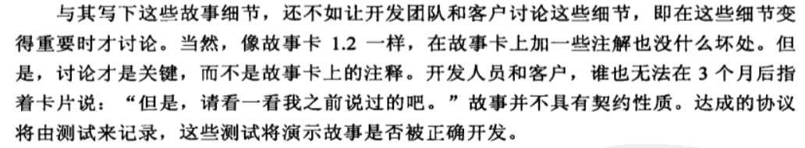 |
| 2016-07-07 17:38:51 | 我 | 不错 |
| 2016-07-07 17:39:06 | 我 | 你现象已经能看出本质了 |
| 2016-07-07 17:39:07 | 你 | 故事不具备契约性质 |
| 2016-07-07 17:39:16 | 我 | 这些我都没有教过你 |
| 2016-07-07 17:39:25 | 我 | 你自己比以前强了很多呀 |
| 2016-07-07 17:39:27 | 你 | 教过了 |
| 2016-07-07 17:39:49 | 你 | 有件事 |
| 2016-07-07 17:40:06 | 你 | 我现在看scrum的东西 王洪越要是偷瞄了 有事吗 |
| 2016-07-07 17:40:27 | 我 | 没事 |
| 2016-07-07 17:40:33 | 你 | 好吧 |
| 2016-07-07 17:40:42 | 你 | 我得一直防着他 |
| 2016-07-07 17:40:48 | 我 | 是 |
| 2016-07-07 17:40:50 | 你 | 他就跟个猴子一样 |
| 2016-07-07 17:40:55 | 你 | 到处钻 |
| 2016-07-07 17:42:29 | 我 | 你最近和你姐聊了吗 |
| 2016-07-07 17:42:42 | 你 | 就昨天聊了两句 |
| 2016-07-07 17:42:46 | 你 | 一点不夸张 |
| 2016-07-07 17:42:58 | 我 | 她这么忙呀 |
| 2016-07-07 17:43:03 | 你 | 是啊 |
| 2016-07-07 17:43:17 | 你 | 他们那也是破事太多 |
| 2016-07-07 17:43:23 | 你 | 他管的事也很度 |
| 2016-07-07 17:43:26 | 你 | 很多 |
| 2016-07-07 17:43:40 | 我 | 嗯 |
| 2016-07-07 17:43:42 | 你 | 他们大数据中心的文案类工作也他做 |
| 2016-07-07 17:43:51 | 我 | 哦 |
| 2016-07-07 17:43:52 | 你 | 我感觉她就跟严丹似的 |
| 2016-07-07 17:43:59 | 你 | 但是比严丹多很多 |
| 2016-07-07 17:44:01 | 我 | 应该比严丹重要 |
| 2016-07-07 17:44:14 | 你 | 他们部门老大是邱总 北大毕业的 |
| 2016-07-07 17:44:16 | 我 | 他们的文案是宣传用的吗 |
| 2016-07-07 17:44:28 | 你 | 特别重视她 很多活都交给她做 |
| 2016-07-07 17:44:38 | 我 | 嗯 |
| 2016-07-07 17:44:41 | 你 | 好像是领导做汇报用 |
| 2016-07-07 17:44:48 | 你 | 为啥叫文案我也不知道 |
| 2016-07-07 17:44:49 | 我 | 那就对了 |
| 2016-07-07 17:44:54 | 你 | 反正就是PPT |
| 2016-07-07 17:44:57 | 我 | 是 |
| 2016-07-07 17:45:14 | 你 | |
| 2016-07-07 17:45:18 | 你 | 经常这样 |
| 2016-07-07 17:45:19 | 我 | 就像老杨一样 |
| 2016-07-07 17:45:26 | 你 | 没有老杨那样 |
| 2016-07-07 17:45:27 | 我 | |
| 2016-07-07 17:45:29 | 你 | 差远了 |
| 2016-07-07 17:45:45 | 我 | 老杨以前也是给崔总做文案 |
| 2016-07-07 17:45:51 | 你 | 是吧 |
| 2016-07-07 17:45:56 | 你 | 好么 |
| 2016-07-07 17:45:59 | 我 | 然后和赵总出去讲 |
| 2016-07-07 17:46:05 | 我 | 现在是老杨出去讲 |
| 2016-07-07 17:46:09 | 你 | 是吧 |
| 2016-07-07 17:46:14 | 你 | 我姐在那还行 |
| 2016-07-07 17:46:20 | 我 | 老杨自己说他其实就是产品经理 |
| 2016-07-07 17:46:31 | 你 | 挺得到重用的 |
| 2016-07-07 17:46:35 | 你 | 我觉得是 |
| 2016-07-07 17:46:37 | 我 | 是 |
| 2016-07-07 17:46:38 | 你 | 每天都很忙 |
| 2016-07-07 17:46:53 | 我 | 等以后就可以代替邱总去汇报了 |
| 2016-07-07 17:46:58 | 你 | 不过他们部门不是核心业务 |
| 2016-07-07 17:47:03 | 你 | 我觉得是 |
| 2016-07-07 17:47:09 | 我 | 这种机会不多 |
| 2016-07-07 17:47:21 | 我 | 现在虽然累点，以后应该是有前途的 |
| 2016-07-07 17:47:25 | 你 | 我俩都还可以吧 |
| 2016-07-07 17:47:27 | 你 | 是 |
| 2016-07-07 17:47:31 | 你 | 那肯定的 |
| 2016-07-07 17:47:47 | 你 | 都是比较野的人 |
| 2016-07-07 17:47:58 | 我 | 是 |
| 2016-07-07 17:48:10 | 你 | 其实我觉得我姐水平还是不高 |
| 2016-07-07 17:48:13 | 我 | 你们都是那种事业型的 |
| 2016-07-07 17:48:17 | 你 | 是 |
| 2016-07-07 17:48:29 | 你 | 也没什么高人指定 她现在就是导出攒经验 |
| 2016-07-07 17:48:32 | 你 | 到处 |
| 2016-07-07 17:55:22 | 我 | 嗯 |
| 2016-07-07 18:10:30 | 你 | 我刚才测试了 |
| 2016-07-07 18:11:00 | 你 | 导出时加包围符的话 数据文件中的数字也有包围符号 |
| 2016-07-07 18:11:10 | 我 | 啊 |
| 2016-07-07 18:11:16 | 我 | 那就惨了 |
| 2016-07-07 18:11:26 | 我 | 没事，就这样吧 |
| 2016-07-07 18:11:28 | 你 | 没事 |
| 2016-07-07 18:11:45 | 你 | 但是转义符的那个看不太懂 |
| 2016-07-07 18:12:13 | 你 | 还有 我觉得王志新没看理解你的意思 你看看她回的邮件 |
| 2016-07-07 18:12:29 | 我 | 好的，我待会看看 |
| 2016-07-07 18:12:35 | 你 | 恩 |
| 2016-07-07 18:25:30 | 我 | 你几点回家 |
| 2016-07-07 18:25:39 | 你 | 你说领导为啥不亲自跟王洪越说呢 |
| 2016-07-07 18:25:46 | 你 | 已经好几次了 |
| 2016-07-07 18:25:51 | 我 | 不喜欢他呗 |
| 2016-07-07 18:25:53 | 你 | 可能不爱搭理他 |
| 2016-07-07 18:25:55 | 你 | 我觉得是 |
| 2016-07-07 18:26:13 | 我 | 嗯 |
| 2016-07-07 18:26:14 | 你 | 一会可能就走了 |
| 2016-07-07 18:26:31 | 我 | 好的 |
| 2016-07-07 18:26:45 | 你 | 走了 |
| 2016-07-07 18:26:54 | 我 | bye |
{kind=link}
{kind=link}
2016-07-08¶
{kind=link}
{kind=link}
2016-07-09¶
| 2016-07-09 09:51:14 | 你 | 嗓子都哑了 |
| 2016-07-09 09:51:25 | 你 | 别嚷了 |
| 2016-07-09 09:58:02 | 我 | 耿燕说的就是你 |
| 2016-07-09 09:58:12 | 你 | 我知道 |
| 2016-07-09 09:58:22 | 你 | 我昨天跟她问过这个问题 |
| 2016-07-09 09:58:26 | 你 | 他说不记 |
| 2016-07-09 10:00:32 | 你 | 别跟他说了 |
| 2016-07-09 10:00:54 | 我 | 不行 |
| 2016-07-09 10:02:38 | 你 | 让他列 |
| 2016-07-09 10:07:08 | 我 | 这次必须把她压住了 |
| 2016-07-09 10:07:21 | 你 | 好 |
| 2016-07-09 10:08:47 | 我 | 之前她最大的依靠就是老杨，现在她自己把人都得罪，还想和我争这些，门都没有 |
| 2016-07-09 10:09:26 | 你 | 恩 |
| 2016-07-09 10:09:58 | 我 | 她就是嫌他们干的活多了 |
| 2016-07-09 10:10:18 | 我 | 说有些问题都明确了就不需要记录了 |
| 2016-07-09 10:10:29 | 你 | 是 |
| 2016-07-09 10:10:38 | 你 | 这就是我昨天问她的问题 |
| 2016-07-09 10:10:39 | 我 | 有些是因为个人能力不足，不了解系统的问题，这些都不应该记录 |
| 2016-07-09 10:10:58 | 你 | 事情是这样的 |
| 2016-07-09 10:11:11 | 我 | 我说这个和问题是什么无关，只要是评委要求的，就必须记录 |
| 2016-07-09 10:11:46 | 你 | 这些问题一般都大家理解不统一的 造成这种不统一的因素很多 然后最后达成共识后 需不需要记录 |
| 2016-07-09 10:12:01 | 你 | 有的问题需要讨论很长时间 |
| 2016-07-09 10:12:07 | 我 | 质控对评审过程负责，评委对被评审的文档质量负责 |
| 2016-07-09 10:12:11 | 你 | 我觉得记下来很有必要啊 |
| 2016-07-09 10:12:35 | 我 | 评委认为问题需要记录就应该记录 |
| 2016-07-09 10:12:36 | 你 | 以后谁看文档的时候难免会有疑问 即使是旭明也会出现这种情况 |
| 2016-07-09 10:12:47 | 我 | 我知道你的意思 |
| 2016-07-09 10:13:05 | 你 | 然后她说不用记 |
| 2016-07-09 10:13:10 | 你 | 我也没跟他争 |
| 2016-07-09 10:13:11 | 我 | 但是如果你这么和她说，你是说不过她的 |
| 2016-07-09 10:13:16 | 你 | 今早谁提起的 |
| 2016-07-09 10:13:28 | 你 | 我觉得你说的很对啊 |
| 2016-07-09 10:13:36 | 你 | 这种事也不是太多 |
| 2016-07-09 10:13:37 | 我 | 刘杰问耿燕哪些该记录 |
| 2016-07-09 10:13:48 | 你 | 每次关键问题就围绕那几个 |
| 2016-07-09 10:13:52 | 我 | 耿燕就表示这些不用记录 |
| 2016-07-09 10:14:01 | 我 | 后来耿燕过来问我 |
| 2016-07-09 10:14:07 | 你 | 而且我提这个还是因为 王志新总是坚持不改文档 |
| 2016-07-09 10:14:31 | 我 | 刚开始她还没有说是你提的，我就说只要是评委提的就应该记录 |
| 2016-07-09 10:14:47 | 我 | 后来我才听出来说的是你 |
| 2016-07-09 10:14:59 | 你 | 她怎么说的是我 |
| 2016-07-09 10:15:17 | 你 | 那要是王志新坚持不改文档这类的 谁说了算 |
| 2016-07-09 10:15:29 | 我 | 她说：“昨天李辉就提了很多问题，我认为就没有必要记录” |
| 2016-07-09 10:16:00 | 你 | 昨天我提的问题 最后也没让记啊 |
| 2016-07-09 10:16:03 | 我 | 最终结果是评委确定 |
| 2016-07-09 10:16:10 | 你 | 我也觉得没必要 |
| 2016-07-09 10:16:59 | 我 | 评审过程其实是可以提任何问题的 |
| 2016-07-09 10:17:08 | 你 | 对啊 |
| 2016-07-09 10:17:22 | 我 | 在评审的最后是要求评委对所提问题进行确认是否记录的 |
| 2016-07-09 10:17:24 | 你 | 那要是按照她这说法 提之前还得考虑合不合格 |
| 2016-07-09 10:17:46 | 我 | 如果评委发现自己提的问题没有记录，可以在这个阶段提出来，要求质控进行记录 |
| 2016-07-09 10:18:11 | 你 | 恩 |
| 2016-07-09 10:18:41 | 我 | 关键点就是评委对评审的最终质量负责，不是质控对质量负责 |
| 2016-07-09 10:19:06 | 我 | 现在耿燕说有些问题是因为评委没有准备，不熟悉系统造成的 |
| 2016-07-09 10:19:07 | 你 | 恩 我听到你说的了 |
| 2016-07-09 10:19:19 | 我 | 所以她不记录 |
| 2016-07-09 10:19:20 | 你 | 谁能都熟悉啊 |
| 2016-07-09 10:19:23 | 我 | 这样是不对的 |
| 2016-07-09 10:20:00 | 我 | 对评委需要有最基本的尊重，否则你请评委来干什么，你自己一个人都干了得了 |
| 2016-07-09 10:20:16 | 你 | 就是 |
| 2016-07-09 10:20:35 | 你 | 再说 你质控的如何判断那个是不熟悉造成的 哪个是有意义的 |
| 2016-07-09 10:21:01 | 我 | 对呀 |
| 2016-07-09 10:21:12 | 你 | 就是 |
| 2016-07-09 10:21:23 | 我 | 我还质疑你质控提出来的这个是不是正确的呢 |
| 2016-07-09 10:21:34 | 你 | 对啊 |
| 2016-07-09 10:21:42 | 你 | 你提出来的依据是什么 |
| 2016-07-09 10:21:55 | 你 | 如果他说我不合格 得给我不合格的理由啊 |
| 2016-07-09 10:22:14 | 我 | 算了，不理他了 |
| 2016-07-09 10:22:21 | 你 | 恩 |
| 2016-07-09 10:22:22 | 你 | 没事 |
| 2016-07-09 10:22:28 | 我 | 大早上的弄得我心情不好 |
| 2016-07-09 10:22:37 | 你 | 别不好了 |
| 2016-07-09 10:22:39 | 你 | 我都来了 |
| 2016-07-09 10:22:54 | 你 | 我在镜子那 听到有人吵 我想可能是老陈 |
| 2016-07-09 10:23:03 | 你 | 我没想到耿燕会加班 |
| 2016-07-09 10:24:16 | 我 | 我也没想到 |
| 2016-07-09 10:25:01 | 你 | 算了算了 没事没事 |
| 2016-07-09 10:28:32 | 你 | 你干嘛呢 |
| 2016-07-09 10:28:46 | 我 | PBC |
| 2016-07-09 10:29:04 | 我 | 我们组人最多，所以得早弄 |
| 2016-07-09 10:29:11 | 你 | 是 |
| 2016-07-09 10:29:16 | 我 | 没事的，我有空陪你聊天 |
| 2016-07-09 10:29:31 | 你 | 你先弄吧 我没事 我看这个周报呢 |
| 2016-07-09 10:29:40 | 你 | 我看看这些数据是怎么来的 |
| 2016-07-09 10:29:59 | 我 | 这周应该还是严丹写吧 |
| 2016-07-09 10:30:06 | 你 | 是啊 |
| 2016-07-09 10:30:20 | 你 | 下周就得我写了 这里边东西很多 |
| 2016-07-09 10:30:41 | 你 | 我不知道其中的项目 以哪个为准 |
| 2016-07-09 10:30:42 | 我 | 我很早就和严丹提出过，要她找个备份，也给她暗示你做她的备份 |
| 2016-07-09 10:30:51 | 你 | 是吧 |
| 2016-07-09 10:31:01 | 我 | 只是严丹一直说要等领导说 |
| 2016-07-09 10:31:07 | 你 | 是 |
| 2016-07-09 10:31:16 | 我 | 我说让她去主动找领导，她不去 |
| 2016-07-09 10:31:26 | 我 | 至少有3次了 |
| 2016-07-09 10:31:30 | 你 | 我觉得她本身并不想把这个工作交出来 |
| 2016-07-09 10:32:11 | 我 | 是，她当时说别人整完了她也得再改一次 |
| 2016-07-09 10:32:31 | 你 | 我看着这个周报需要的信息很多 我不知道各组提供的周报信息能不能够 |
| 2016-07-09 10:32:41 | 我 | 不能 |
| 2016-07-09 10:32:47 | 你 | 是吧 |
| 2016-07-09 10:32:52 | 你 | 我觉得也不能 |
| 2016-07-09 10:32:53 | 我 | 有些是需要你去问 |
| 2016-07-09 10:33:02 | 我 | 或者你去编的 |
| 2016-07-09 10:33:05 | 你 | 我是怕严丹那有些东西 |
| 2016-07-09 10:33:22 | 我 | 以前严丹会问，现在她都是自己编 |
| 2016-07-09 10:33:23 | 你 | 不是 你一看就能看出来 不是周报信息能填的 |
| 2016-07-09 10:33:32 | 你 | 编的啊 |
| 2016-07-09 10:33:37 | 你 | 有的是rd上的 |
| 2016-07-09 10:33:40 | 我 | 对呀 |
| 2016-07-09 10:33:47 | 我 | 这些她都和我说过 |
| 2016-07-09 10:33:57 | 我 | 每次抱怨的时候都说 |
| 2016-07-09 10:33:58 | 你 | 我自己看看吧 |
| 2016-07-09 10:34:04 | 我 | 我就说她该找备份了 |
| 2016-07-09 10:34:46 | 我 | 不过我不希望你只做这个，这个做久了就真成花瓶了 |
| 2016-07-09 10:35:07 | 你 | 不会的 |
| 2016-07-09 10:35:15 | 你 | 只是顺便写个周报而已 |
| 2016-07-09 10:35:24 | 你 | 这类的工作我也得接触接触 |
| 2016-07-09 10:35:32 | 我 | 是 |
| 2016-07-09 10:35:37 | 你 | 我为什么总是跟你说我能做的了呢 |
| 2016-07-09 10:35:54 | 你 | 这只是个周报 我必须要求自己做好 |
| 2016-07-09 10:36:07 | 你 | 要是想干别的 这个都做不好 还能做什么 |
| 2016-07-09 10:36:18 | 我 | 是 |
| 2016-07-09 10:36:24 | 我 | 我是支持你做这个的 |
| 2016-07-09 10:36:27 | 你 | 恩 |
| 2016-07-09 10:36:29 | 你 | 没事 |
| 2016-07-09 10:36:43 | 你 | 这里边要求的能力并不高 |
| 2016-07-09 10:36:54 | 我 | 这里面有些东西其实是要考虑政治因素 |
| 2016-07-09 10:36:55 | 你 | 就是细致 让后了解规则就好 |
| 2016-07-09 10:37:05 | 你 | 比学技术简单 |
| 2016-07-09 10:37:06 | 我 | 严丹编的那部分就有很多是这样的 |
| 2016-07-09 10:37:11 | 你 | 我知道 |
| 2016-07-09 10:37:17 | 你 | 所以才要了解规则 |
| 2016-07-09 10:37:20 | 我 | 对 |
| 2016-07-09 10:37:51 | 你 | 我现在还不知道你说的那事 但是 慢慢的就得摸索出来 |
| 2016-07-09 10:38:00 | 我 | 但是这个不好的地方就是会做成花瓶，像王欣那样 |
| 2016-07-09 10:38:05 | 我 | 严丹也有这个趋势 |
| 2016-07-09 10:38:10 | 你 | 等以后我工作多了 我也可以把这个工作交出去 专心干自己的大事 |
| 2016-07-09 10:38:23 | 你 | 我看出来了 |
| 2016-07-09 10:38:32 | 我 | 估计严丹就是王欣二世了 |
| 2016-07-09 10:38:42 | 你 | 我看现在杨总巴不得把项目管理的也让她交出来 |
| 2016-07-09 10:38:54 | 你 | 专心给他卖命 |
| 2016-07-09 10:39:03 | 我 | 嗯 |
| 2016-07-09 10:39:15 | 我 | 就像赵总要求王欣的一样 |
| 2016-07-09 10:39:25 | 我 | 现在老杨也是把严丹当成一样的角色 |
| 2016-07-09 10:39:54 | 你 | 是 |
| 2016-07-09 10:39:57 | 我 | 这种事情就是有好有坏 |
| 2016-07-09 10:40:04 | 你 | 我知道 |
| 2016-07-09 10:40:36 | 我 | 严丹上次还说让我教她python语言，说以后要是需要去找工作好有一技防身 |
| 2016-07-09 10:41:04 | 你 | 真的啊 |
| 2016-07-09 10:41:07 | 你 | 我晕 |
| 2016-07-09 10:41:14 | 你 | 原来他也有这个时候 |
| 2016-07-09 10:41:45 | 我 | 她没有表面上那么风光 |
| 2016-07-09 10:41:49 | 你 | 是 |
| 2016-07-09 10:41:56 | 你 | 你这么说我才看出来了 |
| 2016-07-09 10:42:11 | 我 | 但是严丹的政治嗅觉非常敏感 |
| 2016-07-09 10:42:22 | 我 | 而且也特别理性 |
| 2016-07-09 10:42:35 | 你 | 恩 |
| 2016-07-09 10:42:37 | 我 | 是女人中少有的 |
| 2016-07-09 10:42:43 | 你 | 唉 |
| 2016-07-09 10:43:20 | 我 | 有一次吃饭，我和胖子说：“你先给我一个这个季度大家的PBC评分” |
| 2016-07-09 10:43:29 | 我 | 胖子就没听出来是什么意思 |
| 2016-07-09 10:43:37 | 我 | 严丹就听出来了 |
| 2016-07-09 10:44:34 | 你 | 是吧 |
| 2016-07-09 10:44:36 | 我 | 严丹就和胖子说“老王是想看你想的是不是和他想的一样，以后可能就让你管了” |
| 2016-07-09 10:44:48 | 你 | 这事这么简单 |
| 2016-07-09 10:44:52 | 你 | 胖子太傻了 |
| 2016-07-09 10:44:58 | 我 | 是呀 |
| 2016-07-09 10:45:09 | 你 | 严丹实力还是有的 |
| 2016-07-09 10:45:21 | 你 | 就是现在位置有点尴尬了 |
| 2016-07-09 10:45:28 | 我 | 所以其实她并不是很甘心 |
| 2016-07-09 10:45:32 | 你 | 本来做项目管理也是正道的 |
| 2016-07-09 10:45:54 | 你 | 其实周报这种东西 也算是比较重要的信息啦 |
| 2016-07-09 10:45:59 | 我 | 看到她这样，我就想到你 |
| 2016-07-09 10:46:06 | 你 | 对我可能不重要 |
| 2016-07-09 10:46:14 | 我 | 要是你这次写是领导特意安排的 |
| 2016-07-09 10:46:19 | 你 | 但是能够开拓眼界 |
| 2016-07-09 10:46:34 | 我 | 那么就有可能是想让你接她的班 |
| 2016-07-09 10:46:36 | 你 | 哦 你指的是我将来的定位 |
| 2016-07-09 10:46:46 | 你 | 啊？？？ |
| 2016-07-09 10:46:49 | 我 | 这和我当初的猜想差不多 |
| 2016-07-09 10:46:56 | 你 | 那你们亏了 |
| 2016-07-09 10:47:04 | 我 | 也是把你定位成花瓶 |
| 2016-07-09 10:47:07 | 你 | 好不容易培养出个写软需的 |
| 2016-07-09 10:47:14 | 你 | 走一步算一步吧 |
| 2016-07-09 10:47:40 | 我 | 如果只是洪越安排你的就问题不大 |
| 2016-07-09 10:48:27 | 你 | 我觉得不是他 |
| 2016-07-09 10:48:39 | 我 | 活肯定是干的越多越好，但是你的定位应该是产品经理 |
| 2016-07-09 10:48:48 | 你 | 他是很不放心我做的 |
| 2016-07-09 10:49:27 | 我 | 你说的他是指洪越？ |
| 2016-07-09 10:49:32 | 你 | 是不是领导安排的 我不知道 |
| 2016-07-09 10:49:39 | 你 | 但是我能肯定不是王洪越 |
| 2016-07-09 10:51:09 | 我 | 嗯 |
| 2016-07-09 10:51:55 | 我 | 不管是谁，咱们就按照咱们的目标努力 |
| 2016-07-09 10:52:00 | 你 | 是 |
| 2016-07-09 10:52:46 | 你 | 我的目标是产品经理 |
| 2016-07-09 10:52:54 | 你 | 我才不会给杨总当秘书呢 |
| 2016-07-09 10:53:05 | 你 | 一年前让我去还可能 现在不行了 |
| 2016-07-09 11:01:45 | 我 | 即使是当秘书，也不会是老杨的，应该是下一任开发中心领导的，就是有可能是老田的。严丹才是老杨的秘书 |
| 2016-07-09 11:03:56 | 你 | 恩 |
| 2016-07-09 11:04:01 | 你 | 老田更不可能了 |
| 2016-07-09 11:07:05 | 你 | 今天中午跟我对象吃饭 |
| 2016-07-09 11:07:29 | 你 | 问了一路今天谁加班 |
| 2016-07-09 11:08:14 | 我 | 是不是就想看我加不加 |
| 2016-07-09 11:08:20 | 你 | 对啊 |
| 2016-07-09 11:08:22 | 你 | 我觉得是 |
| 2016-07-09 11:08:34 | 你 | 从昨天晚上就开始问 |
| 2016-07-09 11:08:53 | 你 | 而且我发现一件事 |
| 2016-07-09 11:09:12 | 我 | 什么事 |
| 2016-07-09 11:09:14 | 你 | 我发现东东根本不想我工作发展的好 |
| 2016-07-09 11:09:18 | 你 | 他大男子主义 |
| 2016-07-09 11:09:23 | 我 | 哦 |
| 2016-07-09 11:09:29 | 你 | 我以后工作的事 不能跟他说了 |
| 2016-07-09 11:09:50 | 我 | 不会想让你当家庭主妇吧 |
| 2016-07-09 11:09:52 | 你 | 我觉得他很难超过我 |
| 2016-07-09 11:09:59 | 你 | 不是 |
| 2016-07-09 11:10:15 | 你 | 就是普普通通的吧 比他好 他就不乐意 |
| 2016-07-09 11:10:24 | 你 | 也不是不乐意 |
| 2016-07-09 11:10:27 | 我 | 唉 |
| 2016-07-09 11:10:30 | 你 | 就是会不好受 |
| 2016-07-09 11:10:35 | 你 | 你看我多惨 |
| 2016-07-09 11:10:38 | 我 | 是 |
| 2016-07-09 11:10:50 | 你 | 好也不是 坏也不是 |
| 2016-07-09 11:10:55 | 我 | 有好久我媳妇一直比我好 |
| 2016-07-09 11:11:06 | 你 | 你心里难受吗 |
| 2016-07-09 11:11:12 | 我 | 挣钱也比我多 |
| 2016-07-09 11:11:19 | 我 | 没有呀 |
| 2016-07-09 11:11:22 | 你 | 是吧 |
| 2016-07-09 11:11:24 | 你 | 唉 |
| 2016-07-09 11:11:28 | 你 | 人跟人不同 |
| 2016-07-09 11:11:30 | 我 | 只是更努力的提高自己 |
| 2016-07-09 11:11:40 | 你 | 我觉得东东最大的毛病就是不努力 |
| 2016-07-09 11:11:46 | 我 | 嗯 |
| 2016-07-09 11:11:49 | 你 | 上进心还是有的 |
| 2016-07-09 11:12:01 | 我 | 有点像阿娇吗 |
| 2016-07-09 11:12:03 | 你 | 叫思想的巨人 行动的矮子 |
| 2016-07-09 11:12:13 | 你 | 不是 比他上进多了 |
| 2016-07-09 11:12:19 | 你 | 学习能力差 |
| 2016-07-09 11:12:34 | 你 | 不够钻 |
| 2016-07-09 11:12:37 | 我 | 哦 |
| 2016-07-09 11:12:57 | 你 | 我俩一起学习 我得比他快很多 |
| 2016-07-09 11:13:35 | 你 | 我先忙会 |
| 2016-07-09 11:13:40 | 我 | 好的 |
| 2016-07-09 11:13:43 | 你 | 一会再说吧 |
| 2016-07-09 11:13:47 | 我 | 有空你找我 |
| 2016-07-09 11:13:54 | 你 | 好 |
| 2016-07-09 11:44:29 | 你 | 你不忙了吗 |
| 2016-07-09 11:44:44 | 我 | 是 |
| 2016-07-09 11:45:48 | 我 | 你带饭了吗 |
| 2016-07-09 11:46:04 | 你 | 没有 我跟东东一起吃 |
| 2016-07-09 11:46:23 | 你 | 问我 带不带饭 |
| 2016-07-09 11:46:28 | 你 | 我说不带了 |
| 2016-07-09 11:46:31 | 我 | 东东中午过来？ |
| 2016-07-09 11:46:34 | 你 | 问阿娇加不加班 |
| 2016-07-09 11:46:38 | 你 | 跟谁吃饭 |
| 2016-07-09 11:46:43 | 你 | 本来想跟你吃的 |
| 2016-07-09 11:46:58 | 你 | 索性我就说你过来找我吧 咱俩吃 |
| 2016-07-09 11:47:16 | 我 | 嗯，挺好 |
| 2016-07-09 11:47:23 | 你 | 恩 |
| 2016-07-09 11:48:19 | 你 | 他老是看着我 |
| 2016-07-09 11:48:43 | 我 | 太宝贝你了 |
| 2016-07-09 11:49:34 | 你 | 哪有 不相信我 |
| 2016-07-09 11:50:29 | 我 | 阿娇和你们一起吃吗 |
| 2016-07-09 11:50:41 | 你 | 不 |
| 2016-07-09 11:50:52 | 你 | 他吃加班餐 |
| 2016-07-09 11:51:05 | 我 | 多难吃呀 |
| 2016-07-09 11:51:18 | 你 | 我叫他了 他不去 |
| 2016-07-09 11:51:27 | 你 | 你要不叫她跟你们一起吃去 |
| 2016-07-09 11:51:41 | 我 | 待会看情况吧 |
| 2016-07-09 11:52:52 | 你 | 好 |
| 2016-07-09 11:53:29 | 我 | 你今天的发卡挺好看 |
| 2016-07-09 11:53:40 | 我 | 我一回头正好看见 |
| 2016-07-09 11:53:51 | 你 | 早上洗了头发 |
| 2016-07-09 11:53:56 | 你 | 太蓬蓬 |
| 2016-07-09 11:54:11 | 我 | 哦 |
| 2016-07-09 11:54:35 | 你 | 我觉得现在有些事我都只能跟你和我姐说了 |
| 2016-07-09 11:55:33 | 我 | 为什么 |
| 2016-07-09 11:55:49 | 你 | 先去吃饭 |
| 2016-07-09 13:42:23 | 我 | 回来了 |
| 2016-07-09 13:42:30 | 你 | 恩 |
| 2016-07-09 13:42:32 | 你 | 困 |
| 2016-07-09 13:42:51 | 我 | 睡会吧，我也睡会 |
| 2016-07-09 13:42:56 | 你 | 好 |
| 2016-07-09 14:25:43 | 我 | 睡醒了 |
| 2016-07-09 14:25:47 | 你 | 恩 |
| 2016-07-09 14:25:52 | 你 | 几点醒的 |
| 2016-07-09 14:26:26 | 我 | 刚醒 |
| 2016-07-09 14:26:40 | 你 | 我也是 |
| 2016-07-09 14:27:07 | 我 | 你的腰凉吗 |
| 2016-07-09 14:27:15 | 你 | 恩 有点 |
| 2016-07-09 14:27:20 | 你 | 中午的时候 |
| 2016-07-09 14:27:35 | 你 | 我把水杯放那了 结果睡着了 |
| 2016-07-09 14:27:54 | 我 | 现在好点吗 |
| 2016-07-09 14:27:57 | 你 | 你看到了啊 |
| 2016-07-09 14:28:03 | 你 | 好丢人 |
| 2016-07-09 14:28:10 | 你 | 好多了 |
| 2016-07-09 14:28:20 | 你 | 可能昨天有点着凉 |
| 2016-07-09 14:28:27 | 你 | 现在天太热了 |
| 2016-07-09 14:28:29 | 我 | 嗯 |
| 2016-07-09 14:28:44 | 我 | 一定要注意腰 |
| 2016-07-09 14:28:51 | 你 | 恩 知道了 |
| 2016-07-09 14:29:04 | 你 | 本来想贴个暖贴的 我怕太热 |
| 2016-07-09 14:29:17 | 你 | 结果中午就有点凉 |
| 2016-07-09 14:30:10 | 你 | 我想跟你呆着玩 |
| 2016-07-09 14:30:30 | 我 | 中午阿娇和我们一起吃的 |
| 2016-07-09 14:30:37 | 你 | 恩 好 |
| 2016-07-09 14:30:55 | 我 | 要不咱俩出去 |
| 2016-07-09 14:31:03 | 你 | 现在有点热 |
| 2016-07-09 14:31:07 | 你 | 等等吧 |
| 2016-07-09 14:31:11 | 你 | 你打算几点走 |
| 2016-07-09 14:31:16 | 我 | 我没事 |
| 2016-07-09 14:31:22 | 我 | 几点走都行 |
| 2016-07-09 14:31:27 | 你 | 好 |
| 2016-07-09 14:31:30 | 你 | 等三四点吧 |
| 2016-07-09 14:31:37 | 你 | 我今天估计得晚点走 |
| 2016-07-09 14:35:33 | 我 | 今天中午本来只是想带着阿娇，结果李培晟非要和阿娇去一起吃加班餐，后来我们就把李培晟也带上了 |
| 2016-07-09 14:35:50 | 你 | 想跟阿娇说事吗 |
| 2016-07-09 14:35:57 | 我 | 这个大电灯泡害得阿娇一直做中间 |
| 2016-07-09 14:36:03 | 我 | 没有 |
| 2016-07-09 14:36:24 | 你 | 当说的灯泡了 |
| 2016-07-09 14:36:26 | 你 | 谁的 |
| 2016-07-09 14:36:43 | 我 | 本来我看就阿娇一个女孩了，和我们一起去吃呗，正好车里也坐得下 |
| 2016-07-09 14:37:33 | 你 | 哈哈 |
| 2016-07-09 14:37:36 | 我 | 结果李培晟非拉着阿娇去吃加班餐 |
| 2016-07-09 14:37:40 | 你 | 你就是对女孩子很好 |
| 2016-07-09 14:37:45 | 我 | 到楼下了阿娇都不想和我们去了 |
| 2016-07-09 14:37:53 | 我 | 我看就都带上了 |
| 2016-07-09 14:37:56 | 你 | 阿娇本来也不想去估计 |
| 2016-07-09 14:37:58 | 你 | 哈哈 |
| 2016-07-09 14:38:11 | 你 | 她又不是我 |
| 2016-07-09 14:38:27 | 我 | 阿娇还行吧 |
| 2016-07-09 14:38:39 | 我 | 其实她是不喜欢吃加班餐的 |
| 2016-07-09 14:39:45 | 你 | 哦 |
| 2016-07-09 14:39:48 | 你 | 好吧 |
| 2016-07-09 14:39:54 | 你 | 我叫她跟我们吃了 他不去 |
| 2016-07-09 14:41:01 | 你 | 这个问题列表看不明白啊 |
| 2016-07-09 14:44:20 | 我 | 哪个列表 |
| 2016-07-09 14:45:10 | 你 | 算了 我自己看吧 |
| 2016-07-09 14:46:00 | 我 | 不懂的你回来问严丹吧 |
| 2016-07-09 14:46:11 | 你 | 恩 |
| 2016-07-09 15:29:56 | 我 | 看的怎么样 |
| 2016-07-09 15:30:05 | 你 | 恩 差不多 |
| 2016-07-09 15:30:10 | 你 | 看出点东西了 |
| 2016-07-09 15:30:20 | 我 | 好的 |
| 2016-07-09 15:30:27 | 你 | 有几个问题 |
| 2016-07-09 15:30:40 | 我 | 你说 |
| 2016-07-09 15:30:54 | 你 | 我叫你过来行吗 |
| 2016-07-09 15:31:04 | 我 | 行 |
| 2016-07-09 16:25:18 | 我 | 我去一楼等你 |
| 2016-07-09 17:47:03 | 你 | 我到了 |
| 2016-07-09 17:47:15 | 我 | 好的 |
| 2016-07-09 17:47:43 | 我 | 胖子走了吗 |
| 2016-07-09 17:48:17 | 你 | 走了应该 没在座位 杨丽颖也走了 |
| 2016-07-09 17:48:51 | 我 | 好的 |
| 2016-07-09 17:57:09 | 我 | 你几点走 |
| 2016-07-09 17:57:37 | 你 | 最早也得七点了吧 |
| 2016-07-09 17:57:48 | 你 | 我的肩膀。。。。。。 |
| 2016-07-09 17:57:50 | 你 | 被咬了 |
| 2016-07-09 17:57:58 | 我 | 唉 |
| 2016-07-09 17:58:11 | 我 | 以后还是别出去了 |
| 2016-07-09 17:58:31 | 你 | 别啊 |
| 2016-07-09 17:58:32 | 我 | 有花露水吗 |
| 2016-07-09 17:58:38 | 你 | 没事 我忍着 |
| 2016-07-09 17:58:45 | 我 | 不能老让你被咬呀 |
| 2016-07-09 17:58:49 | 你 | 不抓 不挠 |
| 2016-07-09 17:58:56 | 你 | 你要回家了吗 |
| 2016-07-09 17:59:11 | 我 | 是，收拾一下就走 |
| 2016-07-09 17:59:16 | 你 | 走吧 |
| 2016-07-09 17:59:31 | 我 | 刚才我老舅给我打电话了 |
| 2016-07-09 17:59:38 | 你 | 恩 走吧 |
| 2016-07-09 18:00:46 | 我 | 要不你和东东去华苑吃饭，回来再打卡 |
| 2016-07-09 18:00:57 | 你 | 不用 |
| 2016-07-09 18:01:04 | 你 | 家里还有个呢 |
| 2016-07-09 18:01:05 | 你 | 没事 |
| 2016-07-09 18:01:21 | 我 | 哦 |
| 2016-07-09 18:01:26 | 你 | 走吧 |
| 2016-07-09 18:01:39 | 我 | 你们把如歌一个人扔家里了 |
| 2016-07-09 18:01:48 | 你 | 不然呢 |
| 2016-07-09 18:01:56 | 你 | 他没事 自己玩的可好呢 |
| 2016-07-09 18:02:02 | 我 | 那你这么晚回去好吗 |
| 2016-07-09 18:02:09 | 你 | 没事的 |
| 2016-07-09 18:02:19 | 你 | 她也没事 我们现在很熟了已经 |
| 2016-07-09 18:02:23 | 你 | 相处的很开心 |
| 2016-07-09 18:02:41 | 我 | 好的 |
| 2016-07-09 18:03:16 | 我 | 那我走了 |
| 2016-07-09 18:03:25 | 你 | 好 |
| 2016-07-09 18:04:30 | 你 | 你得自己走过去啊？ |
| 2016-07-09 18:04:43 | 我 | 是，没事 |
| 2016-07-09 18:06:12 | 我 | 周一见 |
| 2016-07-09 18:06:32 | 你 | 周一见 |
| 2016-07-09 18:08:19 | 我 | 我傻了，我可以一路上陪你，要不你呆着多无聊 |
| 2016-07-09 18:08:37 | 你 | 没事的啊 |
| 2016-07-09 18:08:40 | 你 | 不无聊 |
| 2016-07-09 18:08:46 | 你 | 我看你发给我的周报呢 |
| 2016-07-09 18:09:27 | 我 | 嗯，你看吧，我得去天津站 |
| 2016-07-09 18:11:23 | 你 | 我想看看上周旭明给你的人力人解，你发给我吧 |
| 2016-07-09 18:11:26 | 你 | 好找吗 |
| 2016-07-09 18:11:52 | 我 | 我找一下 |
| 2016-07-09 18:12:17 | 你 | 不着急 |
| 2016-07-09 18:14:39 | 我 | 上周旭明没发给我 |
| 2016-07-09 18:14:56 | 你 | 好 |
| 2016-07-09 18:14:58 | 你 | 没事 |
| 2016-07-09 18:26:24 | 我 | 上车了，终于凉快点 |
| 2016-07-09 18:26:40 | 你 | 热死了估计 |
| 2016-07-09 18:27:24 | 我 | 是，非常闷，没有风 |
| 2016-07-09 18:27:53 | 你 | 忍忍吧 |
| 2016-07-09 18:27:56 | 你 | 肯定热死了 |
| 2016-07-09 18:28:13 | 我 | 地铁里没事，有空调 |
| 2016-07-09 18:29:42 | 你 | 好 有座吗 |
| 2016-07-09 18:29:58 | 我 | 有，人不多 |
| 2016-07-09 18:30:20 | 你 | 好 歇会 |
| 2016-07-09 18:30:57 | 我 | 明天我得把ppt做完 |
| 2016-07-09 18:31:51 | 你 | 那还得忙一天 |
| 2016-07-09 18:32:54 | 我 | 是，这次讲完就差不多了 |
| 2016-07-09 18:33:12 | 我 | 等周一我去组建团队 |
| 2016-07-09 18:34:01 | 你 | 好 |
| 2016-07-09 18:34:09 | 你 | 是 |
| 2016-07-09 18:37:27 | 你 | 有期待吗 |
| 2016-07-09 18:38:01 | 我 | 有呀 |
| 2016-07-09 18:38:04 | 我 | 两个 |
| 2016-07-09 18:38:08 | 你 | 说说 |
| 2016-07-09 18:38:17 | 我 | 一是你能学到东西 |
| 2016-07-09 18:38:38 | 我 | 二是能完成这个项目，证明敏捷可以 |
| 2016-07-09 18:39:01 | 你 | 然后呢 |
| 2016-07-09 18:39:26 | 我 | 其他的暂时没有期望 |
| 2016-07-09 18:39:51 | 我 | 看看能收获多少就算多少吧 |
| 2016-07-09 18:39:59 | 你 | 是 |
| 2016-07-09 18:40:02 | 你 | 我很期待 |
| 2016-07-09 18:40:19 | 我 | 我最大的目标就是你了 |
| 2016-07-09 18:40:27 | 你 | 哈哈 |
| 2016-07-09 18:40:30 | 你 | 开心 |
| 2016-07-09 18:40:37 | 我 | 这是你走向产品经理的第一步 |
| 2016-07-09 18:41:13 | 你 | 主要是能跟你一起工作了 |
| 2016-07-09 18:41:18 | 你 | 而且是新的东西 |
| 2016-07-09 18:41:32 | 我 | 嗯 |
| 2016-07-09 18:41:45 | 你 | 对啊 |
| 2016-07-09 18:42:41 | 你 | 你怎么对我这么好 |
| 2016-07-09 18:42:51 | 我 | 你聪明呀 |
| 2016-07-09 18:43:10 | 我 | 我希望能把自己学会的都教给你 |
| 2016-07-09 18:44:22 | 你 | 真的啊？ |
| 2016-07-09 18:44:37 | 我 | 对呀 |
| 2016-07-09 18:44:59 | 你 | 你真这么觉得的啊 |
| 2016-07-09 18:45:25 | 你 | 其实我也这么觉得 |
| 2016-07-09 18:45:31 | 你 | 但是王洪越不这么觉得 |
| 2016-07-09 18:46:08 | 我 | 他懂什么 |
| 2016-07-09 18:46:43 | 我 | 你聪明，又肯上劲 |
| 2016-07-09 18:46:46 | 你 | 我有的时候也会因为我i他否定我自己 |
| 2016-07-09 18:47:11 | 你 | 我之所以讨厌我老公不给我反应 是因为他都不相信我 |
| 2016-07-09 18:47:38 | 我 | 关键是你自己要相信自己 |
| 2016-07-09 18:47:46 | 你 | 他都没反应 |
| 2016-07-09 18:47:59 | 你 | 随便吧 只要你相信我 我相信我就好 |
| 2016-07-09 18:48:19 | 我 | 嗯 |
| 2016-07-09 18:49:06 | 你 | 他也不琢磨我 他也不了解我 |
| 2016-07-09 18:49:11 | 你 | 至少比你了解我差远了 |
| 2016-07-09 18:49:24 | 我 | 咱俩是知己呀 |
| 2016-07-09 18:49:34 | 我 | 人生得一知己足以 |
| 2016-07-09 18:49:40 | 你 | 是 |
| 2016-07-09 18:50:39 | 你 | 亲 知己 我走了 |
| 2016-07-09 18:50:53 | 你 | 我老公来了 |
| 2016-07-09 18:50:54 | 我 | 好的，我也快到了 |
| 2016-07-09 18:51:00 | 我 | 周一见 |
| 2016-07-09 18:51:08 | 你 | bye |
2016-07-11¶
| 2016-07-11 08:24:59 | 我 | [链接] 如何调教出人人羡慕的好老公？ | 原创 |
| 2016-07-11 08:25:22 | 我 | 一定要看评论 |
| 2016-07-11 08:25:49 | 你 | 恩 |
| 2016-07-11 08:34:52 | 你 | 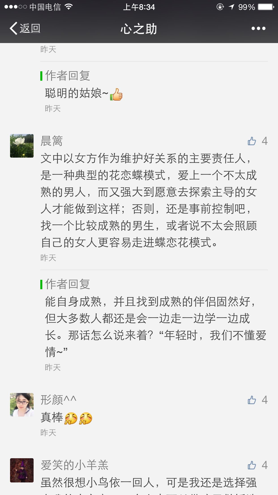 |
| 2016-07-11 08:35:15 | 你 | 我手机是不是连的你的热点？这样岂不是走你的流量吗 |
| 2016-07-11 08:35:56 | 我 | 我的移动Wi-Fi，每个月3G的流量，用不完 |
| 2016-07-11 08:36:35 | 我 | 这篇文章从战术层面上写的不错 |
| 2016-07-11 08:36:50 | 我 | 从战略上说就彻底错了 |
| 2016-07-11 08:37:05 | 我 | 他还是支持大男子主义 |
| 2016-07-11 08:37:06 | 你 | 哦，你知道前天回家路上，东东跟我说，他们单位的好几个都在考Mba 问我考不考 |
| 2016-07-11 08:37:18 | 你 | 我一下子就火了 |
| 2016-07-11 08:37:33 | 我 | 哦 |
| 2016-07-11 08:37:53 | 我 | 干嘛发那么大火 |
| 2016-07-11 08:38:55 | 你 | 你说，他大男子主义，打心里不希望我比他好，又一直想让我这让我那 |
| 2016-07-11 08:39:06 | 你 | 他自己不矛盾，我受得了么 |
| 2016-07-11 08:39:20 | 我 | 😄 |
| 2016-07-11 08:39:30 | 你 | 虽然考MBA什么都代表不了 |
| 2016-07-11 08:39:36 | 我 | 人本身就是一个矛盾体 |
| 2016-07-11 08:40:01 | 你 | 但是努力了总归胜算的机会会大些 |
| 2016-07-11 08:49:26 | 我 | 和王洪越说了，他安排你过来 |
| 2016-07-11 08:49:27 | 你 | 你跟洪越提了吗 |
| 2016-07-11 08:49:43 | 你 | 好 |
| 2016-07-11 09:33:36 | 你 | 亲你怎么跟王洪越说的？ |
| 2016-07-11 09:34:11 | 我 | 我就说让他安排一个人 |
| 2016-07-11 09:34:19 | 我 | 他问我你行不行 |
| 2016-07-11 09:34:25 | 我 | 我就说可以 |
| 2016-07-11 09:34:31 | 你 | 恩恩 |
| 2016-07-11 09:34:33 | 你 | 好 |
| 2016-07-11 11:12:32 | 我 | 老田不让你来 |
| 2016-07-11 11:12:43 | 你 | 为啥 |
| 2016-07-11 11:12:58 | 你 | 这个坏事的 |
| 2016-07-11 11:13:43 | 你 | 怎么办怎么办 |
| 2016-07-11 11:14:31 | 我 | 说你们组人少，不让你全职 |
| 2016-07-11 11:15:24 | 你 | 你们达成一致意见了吗 我都行 |
| 2016-07-11 11:15:47 | 你 | 不能让他掺和 |
| 2016-07-11 11:15:48 | 我 | 而且他还说数据观那边没有专职PO，都是研发自己做 |
| 2016-07-11 11:16:22 | 你 | 需求组根本不忙 |
| 2016-07-11 11:16:32 | 你 | 王洪越清楚的很 |
| 2016-07-11 11:16:51 | 你 | 老杨估计也知道 |
| 2016-07-11 11:17:08 | 我 | 就是田找事 |
| 2016-07-11 11:17:13 | 你 | 就是 |
| 2016-07-11 11:17:14 | 我 | 他认为他懂 |
| 2016-07-11 11:17:16 | 你 | 他就是找事 |
| 2016-07-11 11:17:19 | 我 | 想掺和 |
| 2016-07-11 11:17:24 | 你 | 是 |
| 2016-07-11 11:17:36 | 你 | 还是那句话需求组根本不忙 |
| 2016-07-11 11:17:47 | 你 | 你看现在需求的工作状态 |
| 2016-07-11 11:20:10 | 我 | 现在不是需求的问题 |
| 2016-07-11 11:20:18 | 我 | 是领导权之争 |
| 2016-07-11 11:20:24 | 你 | 恩 |
| 2016-07-11 11:20:37 | 你 | 你看你猜的多对 |
| 2016-07-11 11:20:48 | 你 | 大王不闹小鬼闹 |
| 2016-07-11 11:20:59 | 我 | 是 |
| 2016-07-11 11:25:32 | 你 | 我能做点什么吗 |
| 2016-07-11 11:26:20 | 我 | 不用 |
| 2016-07-11 11:26:27 | 你 | 恩 |
| 2016-07-11 11:26:42 | 我 | 这事我肯定会争取，除非老杨来说 |
| 2016-07-11 11:26:50 | 你 | 好 |
| 2016-07-11 11:33:28 | 你 | 你生气了吗 |
| 2016-07-11 11:33:43 | 我 | 有点 |
| 2016-07-11 11:33:52 | 你 | 别生气了 |
| 2016-07-11 11:33:57 | 你 | 都是意料之中的 |
| 2016-07-11 11:33:58 | 我 | 没事的 |
| 2016-07-11 11:34:00 | 你 | 嗯嗯 |
| 2016-07-11 11:34:03 | 我 | 已经好了 |
| 2016-07-11 11:34:04 | 你 | 别生气了 |
| 2016-07-11 11:34:10 | 我 | 我要预防他的后续 |
| 2016-07-11 11:34:16 | 你 | 是 |
| 2016-07-11 11:34:35 | 我 | 刚才上来的时候王洪越问我是不是必须全职，不能干其他事情了 |
| 2016-07-11 11:34:36 | 你 | 老田果然是故意的 |
| 2016-07-11 11:34:47 | 你 | 然后呢 |
| 2016-07-11 11:34:49 | 我 | 我说至少80% |
| 2016-07-11 11:35:21 | 我 | 老田现在就是拿工作说事 |
| 2016-07-11 11:36:54 | 你 | 老田就说不行是吗 |
| 2016-07-11 11:36:58 | 你 | 那就得说好工作怎么安排 |
| 2016-07-11 11:37:18 | 我 | 他不关心工作 |
| 2016-07-11 11:37:37 | 你 | 他就是想参合 |
| 2016-07-11 11:37:51 | 我 | 他就说你们组出一个人就忙不过来了 |
| 2016-07-11 11:38:13 | 我 | 是，因为这事他之前参加过培训，他一直想主导 |
| 2016-07-11 11:38:20 | 我 | 我就没让他插手 |
| 2016-07-11 11:39:23 | 你 | 恩 |
| 2016-07-11 11:40:13 | 你 | 这本来就没他的事啊 |
| 2016-07-11 11:40:28 | 我 | 他不那么认为呀 |
| 2016-07-11 11:40:33 | 你 | 是 |
| 2016-07-11 11:40:38 | 你 | 你先别生气了 |
| 2016-07-11 11:40:39 | 我 | 当初就他和东海参加培训了 |
| 2016-07-11 11:40:46 | 我 | 我不生气 |
| 2016-07-11 11:40:50 | 你 | 我看你就是生气了 |
| 2016-07-11 11:41:00 | 你 | 你先别生气，想点开心的事 |
| 2016-07-11 11:41:03 | 我 | 和他吵的时候生气 |
| 2016-07-11 11:41:09 | 你 | 恩 |
| 2016-07-11 11:41:15 | 我 | 和你聊天就不生气了 |
| 2016-07-11 11:41:21 | 你 | 嗯嗯 |
| 2016-07-11 11:41:25 | 你 | 别生气了 |
| 2016-07-11 11:42:02 | 我 | 嗯，真的不生气了，你吃饭吧 |
| 2016-07-11 11:42:16 | 你 | 好，你们不吃饭吗 |
| 2016-07-11 11:42:35 | 我 | 胖子不知道去哪了 |
| 2016-07-11 11:42:43 | 你 | 他怎么回事 |
| 2016-07-11 11:42:54 | 我 | 不知道 |
| 2016-07-11 11:42:59 | 你 | 你跟老田吵得凶吗 |
| 2016-07-11 11:43:15 | 我 | 其实是挺凶的 |
| 2016-07-11 11:43:21 | 你 | 恩 |
| 2016-07-11 11:43:24 | 我 | 我以前没有和他这么强硬过 |
| 2016-07-11 11:43:44 | 你 | 恩，我觉得你最近很让着他了 |
| 2016-07-11 11:44:02 | 你 | 大概从你说你开始管事开始 |
| 2016-07-11 11:44:09 | 你 | 再看看吧 |
| 2016-07-11 11:44:12 | 我 | 是 |
| 2016-07-11 11:44:46 | 你 | 他没准就是刷刷存在感 |
| 2016-07-11 12:02:57 | 我 | 吃饭了 |
| 2016-07-11 13:32:43 | 我 | 睡醒了 |
| 2016-07-11 13:32:50 | 你 | 恩 |
| 2016-07-11 13:32:52 | 你 | 你睡了吗 |
| 2016-07-11 13:35:53 | 我 | 我没有 |
| 2016-07-11 13:36:46 | 你 | 11.5_r12_R1.1应对测试问题—宕机问题 11.5_r12_R1.1应对测试问题—SQL执行卡住问题 |
| 2016-07-11 13:36:54 | 你 | 这两个问题涉及的模块都是啥 |
| 2016-07-11 13:37:29 | 我 | 第一个cluster和node都有 |
| 2016-07-11 13:37:44 | 我 | 第二个我不知道，他们没和我说 |
| 2016-07-11 13:37:52 | 你 | 好 没事 |
| 2016-07-11 13:41:37 | 你 | 你怎么了 |
| 2016-07-11 13:41:40 | 你 | 呛住了 |
| 2016-07-11 13:41:57 | 我 | 是，喝水闹得 |
| 2016-07-11 13:56:00 | 我 | 开会去 |
| 2016-07-11 13:56:06 | 你 | 什么会 |
| 2016-07-11 13:56:28 | 我 | dmd研发会 |
| 2016-07-11 13:56:38 | 你 | 哦哦 |
| 2016-07-11 14:06:48 | 我 | 今天武总没来 |
| 2016-07-11 14:08:30 | 你 | 恩 |
| 2016-07-11 14:08:32 | 你 | 可以聊天 |
| 2016-07-11 14:09:05 | 我 | 是 |
| 2016-07-11 14:09:11 | 你 | 恩 |
| 2016-07-11 14:09:18 | 你 | 来新需求了 |
| 2016-07-11 14:09:28 | 我 | 哪里的 |
| 2016-07-11 14:09:40 | 你 | 都是二组的 |
| 2016-07-11 14:09:54 | 我 | 哦 |
| 2016-07-11 14:10:34 | 我 | 是你写吗 |
| 2016-07-11 14:11:59 | 你 | 来了两个 我写一个 |
| 2016-07-11 14:12:14 | 我 | 好的 |
| 2016-07-11 14:12:39 | 我 | 现在王洪越还没给我发 |
| 2016-07-11 14:28:57 | 我 | 困 |
| 2016-07-11 14:30:35 | 你 | 累不累啊 |
| 2016-07-11 14:31:14 | 我 | 还行，太无聊了，犯困 |
| 2016-07-11 14:32:16 | 你 | 这次二组的这个需求是8611的 |
| 2016-07-11 14:32:17 | 你 | 哈哈 |
| 2016-07-11 14:32:40 | 我 | 监控的吗 |
| 2016-07-11 14:32:47 | 你 | 不是 |
| 2016-07-11 14:32:53 | 你 | ADO.NET的 |
| 2016-07-11 14:33:05 | 我 | 哦，这个难度不大 |
| 2016-07-11 14:33:51 | 你 | 就是8611加载支持SQL了 但是从ADO.NET上不能查看错误数据 |
| 2016-07-11 14:34:28 | 我 | 嗯，jdbc应该支持了吧 |
| 2016-07-11 14:35:01 | 你 | 好像也不支持 |
| 2016-07-11 14:35:03 | 你 | 不知道 |
| 2016-07-11 14:35:17 | 我 | 没事，你先写吧 |
| 2016-07-11 14:35:21 | 你 | 现在ado.net只能返回skip的行数 |
| 2016-07-11 14:36:01 | 我 | 我想起来了，好像以前jdbc做过一个类似的需求 |
| 2016-07-11 14:36:17 | 你 | 现在加载过程有错误数据的话 用户怎么看啊 |
| 2016-07-11 14:36:29 | 你 | 不是找错误数据日志看嘛 对吧 |
| 2016-07-11 14:36:41 | 我 | 对 |
| 2016-07-11 14:36:42 | 你 | 这个接口 Server不提供吧？ |
| 2016-07-11 14:36:59 | 我 | 11.5没有 |
| 2016-07-11 14:37:00 | 你 | 那ADO.NET肯定是获取不到这个信息的啊 |
| 2016-07-11 14:37:06 | 你 | 8611有吗 |
| 2016-07-11 14:37:21 | 我 | 8611加载改成SQL就有了 |
| 2016-07-11 14:38:08 | 你 | 为啥就有了 |
| 2016-07-11 14:38:26 | 我 | 加载的形式变了 |
| 2016-07-11 14:38:36 | 我 | 没有单独的加载工具了 |
| 2016-07-11 14:38:48 | 我 | 改成用SQL加载 |
| 2016-07-11 14:39:03 | 你 | 他这里边有句话说『必须要客户连接数据库服务器查找错误数据及原因』 |
| 2016-07-11 14:39:09 | 你 | 这句话是什么意思啊 |
| 2016-07-11 14:39:53 | 我 | 不知道，不熟悉8611 |
| 2016-07-11 14:53:13 | 你 | 恩 好 |
| 2016-07-11 14:59:00 | 你 | 好 |
| 2016-07-11 14:59:22 | 我 | 嗯 |
| 2016-07-11 15:01:24 | 你 | 我看的那个需求是8611的 |
| 2016-07-11 15:01:33 | 你 | 王洪越说转走到老张那 |
| 2016-07-11 15:01:39 | 我 | 好 |
| 2016-07-11 15:10:07 | 我 | 参观的来了 |
| 2016-07-11 15:12:43 | 你 | 黄兴国吗 |
| 2016-07-11 15:13:12 | 我 | 不知道，我们开会，没看见 |
| 2016-07-11 15:13:27 | 你 | 随便吧 跟咱们也没关系 |
| 2016-07-11 15:13:44 | 我 | 是 |
| 2016-07-11 15:17:20 | 我 | 你干啥呢 |
| 2016-07-11 15:26:31 | 你 | 看需求呢 |
| 2016-07-11 15:26:37 | 你 | 咱们屋可热了 |
| 2016-07-11 15:26:45 | 你 | 你们什么会啊 开这么久 |
| 2016-07-11 15:27:07 | 我 | 核心研发会议，每次都得3个小时 |
| 2016-07-11 15:27:22 | 你 | 真晕 |
| 2016-07-11 15:27:25 | 你 | 累死了估计 |
| 2016-07-11 15:27:55 | 我 | 还好有你陪着 |
| 2016-07-11 15:28:14 | 你 | 我都没怎么陪你 |
| 2016-07-11 15:33:04 | 我 | 没有呀，不是一直再陪我吗 |
| 2016-07-11 15:33:38 | 你 | 嗯嗯 |
| 2016-07-11 15:33:41 | 你 | 嘿嘿 |
| 2016-07-11 15:51:00 | 我 | 你有空看看番薯的邮件 |
| 2016-07-11 15:51:06 | 你 | 我知道 |
| 2016-07-11 15:51:15 | 你 | 一会要评神了 |
| 2016-07-11 15:51:25 | 你 | 评毫秒的那个需求 |
| 2016-07-11 15:51:31 | 我 | 好的，等你 |
| 2016-07-11 15:51:39 | 我 | 一组谁去？ |
| 2016-07-11 15:51:58 | 你 | 我不知道 |
| 2016-07-11 15:52:03 | 你 | 旭明 杨丽颖吧 |
| 2016-07-11 15:52:20 | 我 | 哦 |
| 2016-07-11 16:42:51 | 我 | 评审怎么样 |
| 2016-07-11 16:44:37 | 你 | 评完了 |
| 2016-07-11 16:44:38 | 你 | 没问题 |
| 2016-07-11 16:45:17 | 你 | 你们还没回来呢啊 |
| 2016-07-11 16:45:33 | 我 | 没有 |
| 2016-07-11 16:45:41 | 你 | 有事吗 |
| 2016-07-11 16:45:47 | 我 | 每次都这么磨叽 |
| 2016-07-11 16:45:52 | 你 | 我晕 |
| 2016-07-11 16:45:53 | 我 | 没什么事情 |
| 2016-07-11 16:50:26 | 你 | 你ppt有时间发给我吧 |
| 2016-07-11 16:50:28 | 你 | 我看看 |
| 2016-07-11 16:50:53 | 我 | 我好像已经放同步文件夹了 |
| 2016-07-11 16:51:01 | 我 | 你看一下是不是新的 |
| 2016-07-11 16:55:56 | 你 | 是新的 |
| 2016-07-11 16:55:58 | 你 | 我看见了 |
| 2016-07-11 16:56:21 | 我 | 好的 |
| 2016-07-11 17:04:56 | 我 | 收邮件 |
| 2016-07-11 17:07:09 | 你 | 收到了 |
| 2016-07-11 17:07:21 | 我 | 好 |
| 2016-07-11 17:07:53 | 你 | 你看吧 |
| 2016-07-11 17:07:57 | 你 | 我都行 |
| 2016-07-11 17:08:08 | 我 | 嗯 |
| 2016-07-11 17:08:13 | 你 | 如果要是让我负责需求的工作的话 我做软需 |
| 2016-07-11 17:08:17 | 你 | 跟以前一样 |
| 2016-07-11 17:08:24 | 你 | 软需我来写 |
| 2016-07-11 17:08:53 | 你 | 如果兼职的话 你让他说清楚我负责什么工作 |
| 2016-07-11 17:08:59 | 你 | 提前说清楚 |
| 2016-07-11 17:09:13 | 我 | 嗯 |
| 2016-07-11 17:09:28 | 你 | 不然他扯皮 |
| 2016-07-11 17:09:38 | 你 | 软需我没事的 |
| 2016-07-11 17:09:40 | 你 | 真的 |
| 2016-07-11 17:09:44 | 你 | 模型很清楚 |
| 2016-07-11 17:09:48 | 你 | 每个都能写 |
| 2016-07-11 17:09:50 | 我 | 好的 |
| 2016-07-11 17:13:40 | 你 | 你干嘛去了 |
| 2016-07-11 17:14:02 | 我 | 找番薯，问一下研发周期 |
| 2016-07-11 17:14:15 | 你 | 恩 |
| 2016-07-11 17:17:59 | 我 | 这个应该是老田授意的 |
| 2016-07-11 17:18:12 | 你 | 这个不知道 |
| 2016-07-11 17:18:33 | 你 | 按照王洪越的性格 应该是传话筒 |
| 2016-07-11 17:18:44 | 你 | 他才不想因为这事跟你撕破脸呢 |
| 2016-07-11 17:19:02 | 我 | 早上开会最后的时候，田在会上和我争论， |
| 2016-07-11 17:19:10 | 你 | 恩 |
| 2016-07-11 17:19:16 | 你 | 他表态了吗 |
| 2016-07-11 17:20:16 | 我 | 后来就散会了，老田把洪越喊住了，我先走的，临出门的时候我听见他们说开发周期和PBC的事情 |
| 2016-07-11 17:20:32 | 我 | 我当时没在意，以为是Q2的PBC呢 |
| 2016-07-11 17:20:42 | 你 | 恩 |
| 2016-07-11 17:20:45 | 你 | 那就是呗 |
| 2016-07-11 17:37:07 | 你 | 你干嘛呢 |
| 2016-07-11 17:37:18 | 我 | 回邮件 |
| 2016-07-11 17:37:21 | 你 | 一直敲键盘 |
| 2016-07-11 17:40:02 | 我 | 收邮件 |
| 2016-07-11 17:40:10 | 你 | 好 |
| 2016-07-11 17:41:15 | 你 | 好的 |
| 2016-07-11 17:42:44 | 我 | 我觉得自己还是太善良了 |
| 2016-07-11 17:42:57 | 你 | 我知道你指什么 |
| 2016-07-11 17:43:12 | 我 | 今天他们一直没有给我发邮件，我就发了一封邮件，特意把老杨删了 |
| 2016-07-11 17:43:24 | 我 | 没想到他们来这么一手 |
| 2016-07-11 17:43:41 | 你 | 恩 |
| 2016-07-11 17:43:47 | 我 | 这次我干脆带上老杨 |
| 2016-07-11 17:43:50 | 你 | 是 |
| 2016-07-11 17:43:51 | 你 | 带上吧 |
| 2016-07-11 17:43:57 | 你 | 正好有问题抛给他 |
| 2016-07-11 17:44:09 | 我 | 是 |
| 2016-07-11 17:44:24 | 你 | 我还想 跟各组要人的邮件怎么没有杨总 |
| 2016-07-11 17:45:05 | 我 | 我当时想这样的邮件只是内部沟通用的，就不用抄老杨了 |
| 2016-07-11 17:45:35 | 你 | 国华回复了吗 |
| 2016-07-11 17:45:47 | 我 | 其他人都回复了 |
| 2016-07-11 17:45:52 | 你 | 恩 |
| 2016-07-11 17:46:42 | 你 | 没事 |
| 2016-07-11 17:46:52 | 你 | 我看你回来就一直敲键盘 |
| 2016-07-11 17:46:56 | 我 | 我也不担心有事 |
| 2016-07-11 17:47:03 | 你 | 就是 |
| 2016-07-11 17:47:04 | 你 | 没事 |
| 2016-07-11 17:55:10 | 我 | 我怎么感觉你一直在安慰我 |
| 2016-07-11 17:55:22 | 你 | 我怕你生气 |
| 2016-07-11 17:55:31 | 我 | 我没生气 |
| 2016-07-11 17:55:38 | 我 | 真的，不骗你 |
| 2016-07-11 17:55:41 | 你 | 那就好 |
| 2016-07-11 17:56:32 | 你 | 那为啥我就一直觉得你不开心呢 |
| 2016-07-11 17:57:06 | 我 | 我没有不开心 |
| 2016-07-11 17:57:25 | 我 | 我这是认真工作的样子 |
| 2016-07-11 17:58:19 | 你 | 哈哈，这么认真 |
| 2016-07-11 17:58:23 | 我 | 是 |
| 2016-07-11 17:58:38 | 你 | 恩，太专注 |
| 2016-07-11 17:58:55 | 你 | 你今天都没看我 |
| 2016-07-11 17:59:15 | 我 | 早上看了 |
| 2016-07-11 17:59:22 | 我 | 后来就一直忙了 |
| 2016-07-11 18:00:06 | 你 | 把杨总回的邮件发给我看到时候 |
| 2016-07-11 18:00:20 | 我 | 好的 |
| 2016-07-11 18:00:29 | 你 | 刚才王洪越跟我说跟你做scrum了 让我周四培训的时候好好听 |
| 2016-07-11 18:01:33 | 我 | 回邮件了 |
| 2016-07-11 18:16:51 | 我 | 看你来了 |
| 2016-07-11 18:16:54 | 你 | 我知道 |
| 2016-07-11 18:16:56 | 你 | 看吧 |
| 2016-07-11 18:17:13 | 你 | 领导明天回来吗 |
| 2016-07-11 18:17:19 | 我 | 不知道 |
| 2016-07-11 18:20:55 | 我 | 严丹抱怨说敏捷要求需求全职 |
| 2016-07-11 18:21:14 | 我 | 说这要是完不成算谁的 |
| 2016-07-11 18:21:33 | 你 | 是吗 |
| 2016-07-11 18:21:44 | 我 | 是 |
| 2016-07-11 18:21:59 | 你 | 看来她是支持你的 |
| 2016-07-11 18:23:52 | 我 | 是 |
| 2016-07-11 18:27:05 | 我 | 我这几天还得面谈 |
| 2016-07-11 18:27:17 | 我 | 真不想谈了 |
| 2016-07-11 18:29:00 | 你 | 我有几个人力分解的那个表的问题问严丹 |
| 2016-07-11 18:29:04 | 你 | 现在问合适吗 |
| 2016-07-11 18:29:09 | 你 | 她忙吗 |
| 2016-07-11 18:29:22 | 我 | 她忙 |
| 2016-07-11 18:29:26 | 我 | 你别问了 |
| 2016-07-11 18:29:28 | 你 | 好 |
| 2016-07-11 18:29:31 | 你 | 我看也是 |
| 2016-07-11 18:29:37 | 我 | 她儿子还发烧呢 |
| 2016-07-11 18:29:39 | 你 | 其实也没啥 |
| 2016-07-11 18:29:42 | 你 | 是 我知道 |
| 2016-07-11 18:29:45 | 你 | 我先不说了 |
| 2016-07-11 18:29:55 | 我 | 嗯 |
| 2016-07-11 18:30:00 | 我 | 你几点走 |
| 2016-07-11 18:30:04 | 你 | 不知道 |
| 2016-07-11 18:31:57 | 你 | 严丹真爱跟你说话 |
| 2016-07-11 18:32:07 | 我 | 是 |
| 2016-07-11 18:32:21 | 你 | 早上他跟老田也说了一通 |
| 2016-07-11 18:33:08 | 你 | 我们的userstory要保存下来是吧 |
| 2016-07-11 18:33:14 | 你 | 还有backlog |
| 2016-07-11 18:33:23 | 你 | 要有维护 跟踪的 |
| 2016-07-11 18:33:26 | 我 | 是 |
| 2016-07-11 18:33:39 | 我 | 只是我没想好用什么工具 |
| 2016-07-11 18:33:45 | 你 | 测试过程我参与吗 比如测试用例的编写 |
| 2016-07-11 18:33:49 | 我 | word肯定不是太适合 |
| 2016-07-11 18:33:54 | 我 | 这个你不用 |
| 2016-07-11 18:33:55 | 你 | Excel呢 |
| 2016-07-11 18:34:03 | 你 | 好吧 |
| 2016-07-11 18:34:05 | 我 | 也不合适 |
| 2016-07-11 18:34:23 | 我 | 你需要掌握用户故事 |
| 2016-07-11 18:34:30 | 我 | 能够给其他人说清楚 |
| 2016-07-11 18:34:43 | 你 | 恩 好 |
| 2016-07-11 18:34:48 | 我 | 现在番薯他们写的东西其实是技术性的 |
| 2016-07-11 18:34:50 | 你 | 那个维护的不是有很多软件吗 |
| 2016-07-11 18:34:54 | 你 | 我知道 |
| 2016-07-11 18:35:06 | 我 | 我得考虑番薯他们会不会用 |
| 2016-07-11 18:35:09 | 你 | 我看完你发的那个 有两件事想做 |
| 2016-07-11 18:35:16 | 我 | 我自己手里就有好几个 |
| 2016-07-11 18:35:29 | 你 | 一个是想看看他们当初立项时候沟通的文档 |
| 2016-07-11 18:35:49 | 我 | 你现在可以去找番薯要8t的手册，先把数据类型搞清楚 |
| 2016-07-11 18:35:54 | 你 | 一个是想用用现在做完的那个工具 |
| 2016-07-11 18:36:02 | 你 | 恩 好 |
| 2016-07-11 18:36:06 | 我 | 这个是最简单的 |
| 2016-07-11 18:36:13 | 你 | 我姐他们用的jira |
| 2016-07-11 18:36:37 | 你 | 好的 |
| 2016-07-11 18:39:00 | 你 | 等我明天跟他问问吧 |
| 2016-07-11 18:39:05 | 你 | 各种细节 |
| 2016-07-11 18:39:18 | 我 | 嗯 |
| 2016-07-11 18:39:21 | 你 | 那个需求库是不是得我来维护啊 |
| 2016-07-11 18:39:37 | 你 | 你定个东西 我学习学习怎么用呗 |
| 2016-07-11 18:39:40 | 我 | 肯定的 |
| 2016-07-11 18:39:47 | 你 | jira行吗 |
| 2016-07-11 18:39:59 | 你 | 我姐会 我可以问她 |
| 2016-07-11 18:40:30 | 我 | 咱们没有 |
| 2016-07-11 18:40:41 | 我 | 需要搭建服务器 |
| 2016-07-11 18:40:43 | 你 | 网上没有吗 |
| 2016-07-11 18:40:48 | 你 | 那倒是 |
| 2016-07-11 18:40:56 | 你 | 你自己看吧 |
| 2016-07-11 18:40:57 | 我 | 肯定不能在外网用 |
| 2016-07-11 18:41:14 | 你 | 到时候我不会用 你就得教我 哼 |
| 2016-07-11 18:41:22 | 我 | 没问题 |
| 2016-07-11 18:41:34 | 你 | 你可千万别嫌弃我啊 |
| 2016-07-11 18:41:47 | 我 | 怎么会呢 |
| 2016-07-11 18:41:53 | 你 | 嗯嗯 |
| 2016-07-11 18:41:55 | 你 | 我走了 |
| 2016-07-11 18:42:00 | 你 | 回家 |
| 2016-07-11 18:42:12 | 我 | 好的 |
| 2016-07-11 18:42:21 | 我 | 明见 |
{kind=link}
2016-07-12¶
| 2016-07-12 08:43:06 | 我 | 你几点到的 |
| 2016-07-12 08:43:26 | 你 | 还是那个点 |
| 2016-07-12 10:25:41 | 我 | 你忙什么呢，都不理我了 |
| 2016-07-12 10:25:57 | 你 | 我收到你的邮件了 |
| 2016-07-12 10:25:58 | 你 | 哈哈 |
| 2016-07-12 10:26:12 | 你 | 今早一来王洪越就给我找事 |
| 2016-07-12 10:26:31 | 你 | 周报和人力分解的那个基本搞定 你别担心我了 |
| 2016-07-12 10:26:42 | 我 | 好的 |
| 2016-07-12 10:26:44 | 你 | 细节都过了两遍了 |
| 2016-07-12 10:27:00 | 你 | 严丹真是个严谨的人 |
| 2016-07-12 10:27:08 | 你 | 一点错误没有 |
| 2016-07-12 10:27:11 | 我 | 是 |
| 2016-07-12 10:27:56 | 你 | 我打算周四的时候吧 看严丹不忙 找他问一遍就OK啦 |
| 2016-07-12 10:28:08 | 我 | 好的 |
| 2016-07-12 10:28:15 | 你 | 你怎么样 |
| 2016-07-12 10:28:26 | 你 | 你看现在老田开晨会思路清晰多了 |
| 2016-07-12 10:28:27 | 我 | 我没事 |
| 2016-07-12 10:28:28 | 你 | 是不是 |
| 2016-07-12 10:28:34 | 我 | 不是 |
| 2016-07-12 10:28:37 | 你 | 啊 |
| 2016-07-12 10:28:45 | 你 | 可能我看的比较表面 |
| 2016-07-12 10:28:59 | 我 | 大部分事情都是他亲自去做的，其实他比汇报的人还清楚 |
| 2016-07-12 10:29:15 | 我 | 这和开会思路清晰没有关系 |
| 2016-07-12 10:29:39 | 我 | 你看他回答王洪越的问题的时候明显不知道是什么情况 |
| 2016-07-12 10:29:41 | 你 | 但是事情如何推进 好像比以前好很多了 |
| 2016-07-12 10:29:55 | 你 | 他从来就不怎么听王洪越的 |
| 2016-07-12 10:29:56 | 我 | 这其实是两个概念 |
| 2016-07-12 10:30:23 | 我 | 一个是你什么事情都干，你知道的比所有人都多，所以你能掌控全局 |
| 2016-07-12 10:30:27 | 你 | 今早上杨总给我发了个如何收集需求的文章 |
| 2016-07-12 10:30:42 | 你 | 嗯嗯 我知道 |
| 2016-07-12 10:31:09 | 我 | 另一种是你不知道具体情况，但是你可以从别人的描述中分析出具体情况，然后作出判断 |
| 2016-07-12 10:31:33 | 我 | 前一种是努力干活的人，后一种是leader |
| 2016-07-12 10:31:44 | 你 | 是 |
| 2016-07-12 10:31:49 | 你 | 你说的都对 |
| 2016-07-12 10:32:09 | 我 | 像老田这么干，总有他无法掌握的情况 |
| 2016-07-12 10:32:21 | 你 | 是 |
| 2016-07-12 10:32:25 | 我 | 就是说他最终总是会犯错的 |
| 2016-07-12 10:32:36 | 你 | 就是层次还没有上来 |
| 2016-07-12 10:32:41 | 我 | 没错 |
| 2016-07-12 10:32:50 | 我 | 这种转变非常痛苦 |
| 2016-07-12 10:33:08 | 我 | 特别是通过努力工作获得成功的人 |
| 2016-07-12 10:33:24 | 你 | 是 |
| 2016-07-12 10:33:59 | 我 | 我去取快递 |
| 2016-07-12 10:34:07 | 你 | 好 |
| 2016-07-12 10:37:58 | 你 | 你买的啥 |
| 2016-07-12 10:38:23 | 我 | 手机支架 |
| 2016-07-12 10:39:24 | 你 | 你最近快递还挺多 |
| 2016-07-12 10:39:38 | 我 | 就两个 |
| 2016-07-12 10:39:46 | 我 | 上次是书 |
| 2016-07-12 10:40:19 | 你 | 哈哈 |
| 2016-07-12 10:44:17 | 你 | 我写软需呢 |
| 2016-07-12 10:44:28 | 你 | 上次老杨说的DBONE文档很少 |
| 2016-07-12 10:44:33 | 我 | 你的眼睛忽闪忽闪的特好看 |
| 2016-07-12 10:44:37 | 你 | 不知道怎么展开调研呢 |
| 2016-07-12 10:44:41 | 你 | 真的假的 |
| 2016-07-12 10:44:47 | 你 | 接着说 |
| 2016-07-12 10:44:50 | 我 | 真的呀 |
| 2016-07-12 10:44:52 | 你 | 老田的事 |
| 2016-07-12 10:44:56 | 我 | 嗯 |
| 2016-07-12 10:45:16 | 你 | 其实我始终想不明白 老杨为什么不提你 反而提老田 |
| 2016-07-12 10:45:25 | 你 | 这对你很不公平啊 |
| 2016-07-12 10:45:35 | 我 | 我和你说一件事 |
| 2016-07-12 10:45:39 | 我 | 你就明白了 |
| 2016-07-12 10:45:44 | 你 | 好 |
| 2016-07-12 10:45:54 | 你 | 又是老田得病的历史吗 |
| 2016-07-12 10:46:15 | 我 | 老杨媳妇来的时候，他中午去请老陈和雪峰吃饭 |
| 2016-07-12 10:46:22 | 我 | 是老田作陪的 |
| 2016-07-12 10:46:36 | 我 | 明白了吗 |
| 2016-07-12 10:46:56 | 你 | 唉 |
| 2016-07-12 10:47:01 | 你 | 算了 我也不想明白 |
| 2016-07-12 10:47:06 | 你 | 爱怎么样就怎么样吧 |
| 2016-07-12 10:47:20 | 我 | 这么简单都没想明白吗 |
| 2016-07-12 10:47:38 | 我 | 这就是圈子 |
| 2016-07-12 10:47:50 | 我 | 我不是他圈子里的人 |
| 2016-07-12 10:48:07 | 你 | 是 |
| 2016-07-12 10:48:25 | 我 | 这个没有办法 |
| 2016-07-12 10:48:35 | 我 | 老田是跟着他打天下的 |
| 2016-07-12 10:48:38 | 我 | 我是后来的 |
| 2016-07-12 10:48:46 | 我 | 而且我的能力比老杨强 |
| 2016-07-12 10:48:57 | 我 | 功高震主 |
| 2016-07-12 10:49:42 | 我 | 这些都是最基本的政治原则，所以我也没有觉得不公平 |
| 2016-07-12 10:49:55 | 你 | 是 |
| 2016-07-12 10:49:58 | 你 | 你说的很对 |
| 2016-07-12 10:50:04 | 你 | 老杨还是得打压你的 |
| 2016-07-12 10:50:10 | 我 | 是 |
| 2016-07-12 10:50:36 | 你 | 你接受就好 |
| 2016-07-12 10:50:41 | 我 | 我没事 |
| 2016-07-12 10:50:42 | 你 | 我去番薯那考东西 |
| 2016-07-12 13:18:56 | 我 | 你今天是不是和东东闹别扭了 |
| 2016-07-12 13:19:09 | 你 | 哈哈 你怎么知道 |
| 2016-07-12 13:19:22 | 我 | 你早上来心情不好 |
| 2016-07-12 13:19:44 | 我 | 我想了半天也就东东能让你这样了 |
| 2016-07-12 13:19:57 | 你 | 哈哈 |
| 2016-07-12 13:20:07 | 你 | 中午你听见我手机响了吗 |
| 2016-07-12 13:20:14 | 你 | 他给我打了5个电话 |
| 2016-07-12 13:20:16 | 我 | 听见了，好几次 |
| 2016-07-12 13:20:26 | 我 | 给你道歉？ |
| 2016-07-12 13:20:32 | 你 | 估计咱们屋的人都疯了 |
| 2016-07-12 13:20:35 | 你 | 是 |
| 2016-07-12 13:20:42 | 你 | 他早上又说我了 |
| 2016-07-12 13:20:53 | 我 | 说什么了 |
| 2016-07-12 13:21:14 | 你 | 说我说话太彪悍 |
| 2016-07-12 13:21:19 | 你 | 太霸气 |
| 2016-07-12 13:21:23 | 你 | 不温柔 |
| 2016-07-12 13:21:29 | 我 | |
| 2016-07-12 13:21:37 | 你 | 我跟他火了 |
| 2016-07-12 13:21:48 | 我 | 必须的 |
| 2016-07-12 13:21:51 | 你 | 我说『你老是嫌弃我，嫌我这，嫌我那』 |
| 2016-07-12 13:22:15 | 你 | 而且我说了 修养是自己的事 你没有权利要求我 |
| 2016-07-12 13:22:20 | 你 | 你只能代表你自己 |
| 2016-07-12 13:22:27 | 我 | 嗯 |
| 2016-07-12 13:34:39 | 我 | 我果然没有看错你 |
| 2016-07-12 13:34:56 | 我 | 有事业心的人肯定会霸气的 |
| 2016-07-12 13:35:12 | 我 | 你看哪个做大事的人没有霸气 |
| 2016-07-12 13:36:37 | 你 | 那是 |
| 2016-07-12 13:42:26 | 你 | 为什么抽烟 |
| 2016-07-12 13:43:06 | 我 | 待会和你说 |
| 2016-07-12 13:45:28 | 我 | 上午老田为难洪越的那个需求人家认可了，已经关闭了 |
| 2016-07-12 13:45:41 | 你 | 我知道 |
| 2016-07-12 13:45:43 | 你 | 怎么了 |
| 2016-07-12 13:45:54 | 我 | 刚才洪越和我抱怨老田 |
| 2016-07-12 13:46:12 | 你 | 恩 |
| 2016-07-12 13:46:42 | 你 | 你找他没事吧 |
| 2016-07-12 13:46:55 | 我 | 没事 |
| 2016-07-12 13:46:58 | 你 | 他跟老田一直那样 跟我和他差不多 |
| 2016-07-12 13:47:11 | 你 | 一直沟通很别扭 一直都是 |
| 2016-07-12 13:50:15 | 你 | 一会不是要开会了 |
| 2016-07-12 13:50:50 | 我 | 是，我就是在等点呢 |
| 2016-07-12 13:54:10 | 你 | 一会直接去吗 |
| 2016-07-12 13:54:40 | 我 | 是 |
| 2016-07-12 14:29:13 | 你 | 接着说吗 |
| 2016-07-12 14:29:28 | 我 | 你说吧 |
| 2016-07-12 15:33:24 | 你 | 下次这会我跟你提前过内容吧 |
| 2016-07-12 15:33:47 | 我 | 我今天也没准备 |
| 2016-07-12 15:33:53 | 我 | 都是现抓的 |
| 2016-07-12 15:36:53 | 我 | 今天冻坏你了吧 |
| 2016-07-12 16:17:38 | 你 | 你在哪呢 |
| 2016-07-12 16:18:57 | 我 | PBC面谈 |
| 2016-07-12 16:19:17 | 你 | 我刚才找范树磊去了 |
| 2016-07-12 16:19:31 | 我 | 好 |
| 2016-07-12 16:19:33 | 你 | 把功能从头到尾都过了一遍 |
| 2016-07-12 16:20:07 | 你 | 我俩定了一下这个sprint主要开发哪个 然后我写2个userstory出来 你帮我看看 |
| 2016-07-12 16:20:36 | 我 | 好的 |
| 2016-07-12 16:31:32 | 你 | 谈到谁了 |
| 2016-07-12 16:32:01 | 我 | 杨丽莹 |
| 2016-07-12 17:47:50 | 我 | 心情不好，和她争论半天 |
| 2016-07-12 17:52:54 | 你 | 哦 我也免谈 |
| 2016-07-12 17:52:59 | 你 | 面谈 |
| 2016-07-12 17:53:06 | 我 | 好 |
| 2016-07-12 17:53:08 | 你 | 我要打球去了 你不回来吗 |
| 2016-07-12 17:53:21 | 我 | 还在面谈 |
| 2016-07-12 17:53:25 | 我 | 你去吧 |
| 2016-07-12 17:53:28 | 你 | 恩 |
| 2016-07-12 17:56:00 | 你 | 你跟谁谈呢 |
| 2016-07-12 17:56:22 | 我 | 旭神 |
| 2016-07-12 18:04:15 | 你 | 我跟王洪越聊的挺多的 |
| 2016-07-12 18:04:21 | 你 | 他就是个shit |
| 2016-07-12 18:04:34 | 我 | 是 |
| 2016-07-12 18:06:43 | 你 | 我套了他好多话 |
| 2016-07-12 18:07:08 | 我 | 嗯 |
2016-07-13¶
| 2016-07-13 08:33:08 | 我 | 我提前声明，我是太忙，不是不理你[偷笑] |
| 2016-07-13 08:34:05 | 你 | 哈哈 |
| 2016-07-13 08:34:07 | 你 | 我看出来了 |
| 2016-07-13 08:36:45 | 我 | 你昨天打到几点 |
| 2016-07-13 08:36:52 | 你 | 8：00 |
| 2016-07-13 08:36:57 | 你 | 昨天打的超级爽 |
| 2016-07-13 08:37:02 | 你 | 跟DMD的打的 |
| 2016-07-13 08:37:04 | 我 | 好的 |
| 2016-07-13 08:37:43 | 你 | 我和陈亮一伙打赵董兴和裴松涛 |
| 2016-07-13 08:37:51 | 我 | |
| 2016-07-13 08:39:23 | 我 | 昨天领导后来又联系你了吗 |
| 2016-07-13 08:39:29 | 你 | 没有 |
| 2016-07-13 08:39:33 | 你 | 一直没搭理我 |
| 2016-07-13 08:40:29 | 我 | 哦，估计是太忙了 |
| 2016-07-13 08:40:42 | 你 | 没事啊 |
| 2016-07-13 08:40:52 | 你 | 你忙吧 |
| 2016-07-13 08:40:53 | 你 | 我没事 |
| 2016-07-13 08:51:19 | 我 | 昨天王洪越都和你说什么了 |
| 2016-07-13 08:51:32 | 你 | 我觉得写用户故事这件事太好玩了 |
| 2016-07-13 08:51:50 | 我 | 是吗 |
| 2016-07-13 08:51:56 | 你 | 是啊 |
| 2016-07-13 08:52:44 | 我 | 你喜欢就好 |
| 2016-07-13 08:52:53 | 你 | 嗯嗯 |
| 2016-07-13 08:54:47 | 你 | 他给我咧了好多我这次得C的理由 |
| 2016-07-13 08:55:31 | 你 | 包括监控工具的软需 曾经耿燕记了15项错误 |
| 2016-07-13 08:55:41 | 你 | 你知道吧 他还因为这事找过耿燕 |
| 2016-07-13 08:55:50 | 你 | 现在说我写的文档质量差 |
| 2016-07-13 08:56:35 | 我 | 哦 |
| 2016-07-13 08:56:38 | 你 | 说监控工具出了15个错误 有史以来都没这么差过 |
| 2016-07-13 08:56:53 | 你 | 说我Q2的工作量太少 |
| 2016-07-13 08:57:05 | 你 | 说不够积极主动 |
| 2016-07-13 08:57:16 | 你 | 我都没搭理他 |
| 2016-07-13 08:58:27 | 我 | 对，别搭理他 |
| 2016-07-13 08:58:56 | 你 | 他说了 我对他的考核标准有意见可以上诉 |
| 2016-07-13 08:59:01 | 你 | 我说没意见 |
| 2016-07-13 08:59:05 | 你 | 我都OK |
| 2016-07-13 08:59:15 | 我 | 还上诉 |
| 2016-07-13 08:59:48 | 你 | 他说我让他找MySQL的环境干活 |
| 2016-07-13 08:59:54 | 你 | 我反问他了 |
| 2016-07-13 09:00:33 | 你 | 我说从我跟你工作到现在 简单到8a难到vertica，虚机、加载工具 我什么时候让你帮我整过 |
| 2016-07-13 09:01:09 | 我 | |
| 2016-07-13 09:01:20 | 你 | 说我找他装MySQL |
| 2016-07-13 09:01:23 | 你 | 傻X |
| 2016-07-13 09:01:41 | 你 | 这个表现是不能独立完成工作的表现 |
| 2016-07-13 09:01:48 | 你 | 你说他多无理 |
| 2016-07-13 09:01:52 | 我 | 没错 |
| 2016-07-13 09:02:02 | 你 | 靠你装环境测试 早TM的晚了 |
| 2016-07-13 09:02:19 | 你 | 他的虚机都是考的我的 |
| 2016-07-13 09:02:51 | 我 | 就是呀 |
| 2016-07-13 09:03:11 | 你 | 我不跟他玩 |
| 2016-07-13 09:03:17 | 你 | 他太low了 |
| 2016-07-13 09:03:22 | 我 | 是，没错 |
| 2016-07-13 09:03:28 | 我 | 和我玩吧 |
| 2016-07-13 09:03:33 | 你 | 好啊 |
| 2016-07-13 09:03:39 | 你 | 不提他了 |
| 2016-07-13 09:03:46 | 我 | 嗯 |
| 2016-07-13 09:04:19 | 我 | 今天抽空咱们还得说一下PB的事情 |
| 2016-07-13 09:04:26 | 你 | 好啊 |
| 2016-07-13 09:04:34 | 我 | 番薯他们收集的需求还不完整 |
| 2016-07-13 09:04:46 | 你 | 我把番薯的功能从头挨个过的 |
| 2016-07-13 09:05:03 | 我 | 等今天晨会以后吧 |
| 2016-07-13 09:05:09 | 你 | 好的 |
| 2016-07-13 09:05:24 | 你 | 作为8tto8a工具的用户，他想要比较直观的了解同步发生的时间，同步工具持续工作了多长时间，以及整个数据同步过程中已经同步了哪些数据，这些数据对应的操作，以便对同步过程和数据有更清晰的认识。 |
| 2016-07-13 09:05:28 | 你 | 你看看这段话 |
| 2016-07-13 09:05:52 | 我 | 这是你写的吗 |
| 2016-07-13 09:06:00 | 你 | 是 |
| 2016-07-13 09:06:45 | 我 | 有点大，包含了好几个功能点 |
| 2016-07-13 09:07:11 | 你 | 是 |
| 2016-07-13 09:07:16 | 你 | 我就是想让你看看 |
| 2016-07-13 09:07:31 | 你 | 我写出来的这个东西我自己有很多疑问 |
| 2016-07-13 09:07:46 | 我 | 说说 |
| 2016-07-13 09:08:25 | 你 | 直观的 |
| 2016-07-13 09:08:32 | 你 | 这是个比较大的点 |
| 2016-07-13 09:08:51 | 你 | 整个数据同步过程 ？ |
| 2016-07-13 09:09:01 | 你 | 没有定义开始和结束 |
| 2016-07-13 09:10:50 | 你 | 功能点：优化配置文件，如：主键配置改为工具自动处理，无需手工配置。 |
| 2016-07-13 09:11:01 | 你 | 用户故事：作为8tto8a工具的配置员，他想要在现有配置项的基础上，省去配置表的主键，使得配置文件编写起来更简单 |
| 2016-07-13 09:11:42 | 你 | 我想跟你说的是 我现在根本不会写 所以想先写出来个很差很差的 然后你帮我看看 |
| 2016-07-13 09:11:53 | 你 | 说说写的思路 |
| 2016-07-13 09:12:36 | 我 | 好 |
| 2016-07-13 09:30:37 | 你 | 王志新说你给他提意见的那个软需他重写 |
| 2016-07-13 09:30:56 | 你 | 气死她 |
| 2016-07-13 09:31:06 | 我 | 不管他 |
| 2016-07-13 09:31:23 | 你 | 她的意思是你找事 |
| 2016-07-13 09:31:27 | 你 | 你先开会吧 |
| 2016-07-13 09:31:29 | 我 | 我是评委，必须得倒尊重 |
| 2016-07-13 09:31:30 | 你 | 小心点 |
| 2016-07-13 09:31:45 | 我 | 没事的 |
| 2016-07-13 09:45:08 | 你 | 为啥摇头 |
| 2016-07-13 09:45:38 | 我 | 困 |
| 2016-07-13 09:56:35 | 我 | 你今天外套很好看，就是和衣服不太搭 |
| 2016-07-13 10:00:15 | 你 | 不冷的话我就不穿 |
| 2016-07-13 10:00:18 | 你 | 没事 |
| 2016-07-13 10:11:08 | 你 | 何以这么蠢 |
| 2016-07-13 10:12:34 | 我 | 没办法 |
| 2016-07-13 10:35:56 | 你 | 你竟然抠我 |
| 2016-07-13 10:36:12 | 我 | 没有呀 |
| 2016-07-13 10:36:18 | 我 | 那是挠 |
| 2016-07-13 10:37:33 | 你 | 哈哈 |
| 2016-07-13 10:37:44 | 你 | 你竟然挠我 |
| 2016-07-13 10:38:33 | 我 | 小猫挠人是表示亲热 |
| 2016-07-13 10:38:57 | 你 | 哈哈 |
| 2016-07-13 10:39:09 | 你 | 你把我的脖子当小猫的脖子了 |
| 2016-07-13 10:41:02 | 我 | 是呀，多可爱呀 |
| 2016-07-13 10:42:24 | 你 | 且 |
| 2016-07-13 11:07:32 | 我 | 阿娇好黑呀 |
| 2016-07-13 11:07:41 | 你 | 黑吗 |
| 2016-07-13 11:07:45 | 你 | 比我黑？ |
| 2016-07-13 11:07:58 | 我 | 是 |
| 2016-07-13 11:08:11 | 我 | 腿黑 |
| 2016-07-13 11:08:25 | 你 | 晒得吧 |
| 2016-07-13 11:08:32 | 你 | 脸白就行 |
| 2016-07-13 11:42:45 | 你 | 下午领导跟你面谈 |
| 2016-07-13 11:43:04 | 我 | 我知道 |
| 2016-07-13 11:53:16 | 我 | 我让严丹给我安排第一个 |
| 2016-07-13 11:53:37 | 我 | 领导和我们一起吃，去八爷 |
| 2016-07-13 12:27:10 | 你 | 恩 hao |
| 2016-07-13 12:27:18 | 你 | 他怎么这么爱吃炸酱面呢 |
| 2016-07-13 12:27:42 | 我 | 是 |
| 2016-07-13 12:27:59 | 我 | 你睡觉吧，下午再聊 |
| 2016-07-13 12:28:05 | 你 | 恩 |
| 2016-07-13 13:02:44 | 你 | 没睡着 |
| 2016-07-13 13:02:52 | 我 | 啊 |
| 2016-07-13 13:02:56 | 我 | 累吗 |
| 2016-07-13 13:03:05 | 你 | 不累 |
| 2016-07-13 13:03:08 | 你 | 听歌呢 |
| 2016-07-13 13:03:15 | 我 | 好的 |
| 2016-07-13 13:03:31 | 我 | 今天中午领导说了scrum的他的想法 |
| 2016-07-13 13:03:38 | 你 | 你有制作铃声的软件吗 |
| 2016-07-13 13:03:40 | 你 | 说说 |
| 2016-07-13 13:03:42 | 你 | 啥想法啊 |
| 2016-07-13 13:03:53 | 我 | 待会等我谈完PBC，和你们讲 |
| 2016-07-13 13:04:09 | 你 | 我们？ |
| 2016-07-13 13:04:12 | 我 | 我没有做铃声的 |
| 2016-07-13 13:04:18 | 你 | me and who、 |
| 2016-07-13 13:04:19 | 你 | ？ |
| 2016-07-13 13:04:23 | 我 | 番薯 |
| 2016-07-13 13:04:34 | 你 | 好的 坏的 |
| 2016-07-13 13:04:36 | 你 | 先告诉我 |
| 2016-07-13 13:04:49 | 我 | 就是他想这个应该怎么干 |
| 2016-07-13 13:04:57 | 你 | 恩 |
| 2016-07-13 13:04:59 | 我 | 和我当初的有点不同 |
| 2016-07-13 13:05:11 | 我 | 他想先重构他们的架构 |
| 2016-07-13 13:05:26 | 你 | 监控工具的吗？ |
| 2016-07-13 13:05:29 | 我 | 不过这样就没法写user story了 |
| 2016-07-13 13:07:38 | 你 | 哦 |
| 2016-07-13 13:07:41 | 你 | 那就没办法了 |
| 2016-07-13 13:07:46 | 你 | 等回来再说吧 |
| 2016-07-13 13:07:50 | 我 | 是 |
| 2016-07-13 13:11:18 | 我 | 我打个盹 |
| 2016-07-13 13:11:27 | 你 | 恩 |
| 2016-07-13 15:00:15 | 你 | 回来了 |
| 2016-07-13 15:00:23 | 我 | 是 |
| 2016-07-13 16:33:43 | 我 | 亲，干啥呢 |
| 2016-07-13 16:34:43 | 你 | 在整签到表呢 |
| 2016-07-13 16:35:54 | 我 | 今天忙的都没聊天 |
| 2016-07-13 16:39:07 | 你 | 是 |
| 2016-07-13 16:46:06 | 我 | 亲，聊十分钟吧 |
| 2016-07-13 16:46:12 | 你 | 行啊 |
| 2016-07-13 16:46:18 | 你 | 你得真诚点 |
| 2016-07-13 16:46:21 | 你 | 不然不聊 |
| 2016-07-13 16:46:37 | 我 | 我非常真诚，非常想和你聊天 |
| 2016-07-13 16:46:58 | 你 | 你是不是很讨厌看到杨丽颖和王洪越开玩笑 |
| 2016-07-13 16:47:41 | 我 | 你果然注意到了 |
| 2016-07-13 16:48:24 | 我 | 谈不上很讨厌 |
| 2016-07-13 16:48:50 | 我 | 其实今天我一直想和你说一件事情，现在来不及了，等有空和你说吧 |
| 2016-07-13 16:49:01 | 我 | 就是昨天面谈我说心情不好的事情 |
| 2016-07-13 16:49:06 | 我 | 和杨丽莹有关的 |
| 2016-07-13 16:49:40 | 你 | 怎么了 |
| 2016-07-13 16:49:42 | 我 | 我对杨丽莹和王洪越的关系其实已经没有以前那么敏感了 |
| 2016-07-13 16:49:52 | 你 | 然后呢 |
| 2016-07-13 16:49:58 | 你 | 你今天很明显不高兴了 |
| 2016-07-13 16:50:01 | 我 | 只是因为最近王洪越对你不好，我就不喜欢看见有人对他好 |
| 2016-07-13 16:50:03 | 你 | 我就不想搭理你了 |
| 2016-07-13 16:50:11 | 你 | 我不信 |
| 2016-07-13 16:50:20 | 我 | 你听见今天说评审的事情吗 |
| 2016-07-13 16:50:31 | 你 | 评审什么 |
| 2016-07-13 16:50:33 | 你 | 我不知道啊 |
| 2016-07-13 16:50:45 | 我 | 就是表头的事情 |
| 2016-07-13 16:51:23 | 你 | 怎么了 |
| 2016-07-13 16:51:25 | 你 | 你说吧 |
| 2016-07-13 16:51:35 | 我 | 刘杰和我说她问王洪越，王洪越说和我口头沟通过了，说我同意了 |
| 2016-07-13 16:51:50 | 我 | 我就故意大声说我不知道，没有人和我沟通 |
| 2016-07-13 16:52:03 | 我 | 我没看见改正，这个必须得改 |
| 2016-07-13 16:52:17 | 我 | 我知道王洪越在，我就是故意说给他听的 |
| 2016-07-13 16:52:41 | 你 | 然后呢 |
| 2016-07-13 16:52:55 | 你 | 这跟你看到杨丽颖和王洪越说话不爽有什么关系 |
| 2016-07-13 16:53:19 | 我 | 我就是要故意刁难王洪越 |
| 2016-07-13 16:53:33 | 我 | 谁让他对你老不好 |
| 2016-07-13 16:54:22 | 我 | 我不爽就是因为我不想看见王洪越那么高兴 |
| 2016-07-13 16:57:00 | 我 | 今天我不高兴不是因为杨丽莹，是因为王洪越。是因为王洪越老欺负你，不是因为我喜欢杨丽莹 |
| 2016-07-13 16:58:20 | 你 | 你只是不承认而已 |
| 2016-07-13 16:58:34 | 你 | 王洪越跟旭明闹着玩你怎么不生气呢 |
| 2016-07-13 16:58:47 | 我 | 你以为我不生气吗 |
| 2016-07-13 17:00:14 | 我 | 我不知道今天还有没有空 |
| 2016-07-13 17:01:10 | 我 | 我早上来就想和你说说昨天的事情 |
| 2016-07-13 17:01:47 | 你 | 能有啥事啊 |
| 2016-07-13 17:02:01 | 你 | 杨丽颖跟你说她就喜欢跟王洪越玩啦 |
| 2016-07-13 17:02:30 | 我 | 咱俩说的不是一件事情 |
| 2016-07-13 17:02:51 | 我 | 我是说昨天面谈和杨丽莹争论半天 |
| 2016-07-13 17:03:29 | 你 | 我知道啊 |
| 2016-07-13 17:03:36 | 你 | 她跟你说啥了 |
| 2016-07-13 17:04:16 | 你 | 我就是看到你那么讨厌看到王洪越和杨开玩笑 我就不高兴了 |
| 2016-07-13 17:04:31 | 你 | 我以后要学着别不高兴 |
| 2016-07-13 17:05:05 | 你 | 你解释的这些原因 有点太牵强了 |
| 2016-07-13 17:05:07 | 你 | 真的 |
| 2016-07-13 17:05:17 | 你 | 我也想相信你 |
| 2016-07-13 17:05:57 | 我 | 好吧，我真的没有骗你 |
| 2016-07-13 17:08:45 | 我 | 你不高兴我理解 |
| 2016-07-13 17:09:24 | 我 | 我今天确实和杨丽莹没有关系 |
| 2016-07-13 17:10:13 | 我 | 你说我有那么傻吗，当你的面吃另一个女孩子的醋，这不是作死吗 |
| 2016-07-13 17:11:52 | 我 | 好了，对不起。 |
| 2016-07-13 17:11:55 | 你 | 我不知道 |
| 2016-07-13 17:12:13 | 你 | 为什么不能当着我的面吃醋呢 |
| 2016-07-13 17:12:35 | 我 | 你以后也不要“我以后要学着别不高兴” |
| 2016-07-13 17:13:09 | 你 | 为啥 |
| 2016-07-13 17:13:17 | 你 | 不然我就生自己的气呗 |
| 2016-07-13 17:13:56 | 我 | 你想想我这么理性的人，如果真的是因为杨丽莹，我能猜不到你的想法吗？我能这么明显的让你知道吗 |
| 2016-07-13 17:14:24 | 我 | 我说的就是怕你生自己的气 |
| 2016-07-13 17:15:02 | 我 | 你太容易钻牛角尖了 |
| 2016-07-13 17:15:10 | 我 | 我好担心你 |
| 2016-07-13 17:15:24 | 我 | 真的心疼你 |
| 2016-07-13 17:16:19 | 你 | 可是你并没有跟我说实话 |
| 2016-07-13 17:16:27 | 我 | 我说过我不骗你就真的不骗你 |
| 2016-07-13 17:16:33 | 你 | 你没有告诉我你不高兴的原因 |
| 2016-07-13 17:16:40 | 你 | 你知道我为什么生气吗 |
| 2016-07-13 17:17:07 | 我 | 因为我不说实话 |
| 2016-07-13 17:18:22 | 我 | 我不高兴的原因就是因为我不喜欢王洪越的样子，那种高兴的样子，我想看见他吃瘪，看见他受气 |
| 2016-07-13 17:19:35 | 你 | 不是 |
| 2016-07-13 17:19:56 | 你 | 因为我一想到 你对杨丽颖和对我一样好 伤心 |
| 2016-07-13 17:20:19 | 你 | 我想 其实跟我比起来你可能更在乎她 |
| 2016-07-13 17:20:26 | 我 | 天哪 |
| 2016-07-13 17:20:33 | 我 | 冤枉死我了 |
| 2016-07-13 17:20:40 | 我 | [动画表情] |
| 2016-07-13 17:20:56 | 我 | 她怎么能和你比呢 |
| 2016-07-13 17:21:05 | 你 | 我不知道啊 |
| 2016-07-13 17:21:12 | 你 | 那是你的想法 |
| 2016-07-13 17:21:14 | 我 | 昨天她还嫌我对你太好了 |
| 2016-07-13 17:21:17 | 你 | 可是我也有我的想法啊 |
| 2016-07-13 17:21:30 | 你 | 怎么可能 |
| 2016-07-13 17:21:36 | 我 | 是，你说的都没错 |
| 2016-07-13 17:21:49 | 我 | 你的心情和想法我都可以理解 |
| 2016-07-13 17:21:51 | 你 | 她为什么嫌你对我好 |
| 2016-07-13 17:22:05 | 你 | 你心情不好又是为了什么 |
| 2016-07-13 17:22:26 | 我 | 这就是我今天一直想和你说的，昨天面谈的时候说的 |
| 2016-07-13 17:23:28 | 我 | 心情不好就是因为我和她吵架了 |
| 2016-07-13 17:23:31 | 你 | 她为什么嫌你对我好 |
| 2016-07-13 17:23:36 | 你 | 因为啥吵架 |
| 2016-07-13 17:23:56 | 我 | 我说她最近工作态度不好，太懈怠了 |
| 2016-07-13 17:24:02 | 我 | 有抵触情绪 |
| 2016-07-13 17:24:12 | 我 | 她就说原因不是她 |
| 2016-07-13 17:25:13 | 我 | 说原来就一个女孩，她觉得我对她和对别人不一样 |
| 2016-07-13 17:25:28 | 我 | 现在觉得其实我对所有的女孩都一样 |
| 2016-07-13 17:25:42 | 你 | 你心情不好为了啥 |
| 2016-07-13 17:26:07 | 我 | 她还找借口说她不喜欢我特别对她，因为她想男女平等 |
| 2016-07-13 17:26:39 | 我 | 她说刘甲和东海走主因是我 |
| 2016-07-13 17:26:59 | 我 | 我和她争论半天 |
| 2016-07-13 17:27:21 | 你 | 『她就说原因不是她』？ |
| 2016-07-13 17:27:26 | 你 | 这是什么意思 |
| 2016-07-13 17:27:44 | 我 | 是我管理的原因 |
| 2016-07-13 17:27:52 | 你 | 『说原来就一个女孩，她觉得我对她和对别人不一样，现在觉得其实我对所有的女孩都一样』 |
| 2016-07-13 17:28:03 | 我 | 所以扯到刘甲和东海 |
| 2016-07-13 17:28:04 | 你 | 这句话感觉是埋怨你对别人太好 |
| 2016-07-13 17:28:09 | 我 | 对呀 |
| 2016-07-13 17:28:27 | 我 | 可是她还找借口 |
| 2016-07-13 17:28:28 | 你 | 那怎么还有这句『她还找借口说她不喜欢我特别对她，因为她想男女平等』 |
| 2016-07-13 17:28:46 | 我 | 稍等一下 |
| 2016-07-13 17:29:10 | 我 | 这件事其实说起来很麻烦 |
| 2016-07-13 17:29:32 | 我 | 我今天想等有空从头慢慢和你说 |
| 2016-07-13 17:29:41 | 我 | 现在已经说乱了 |
| 2016-07-13 17:30:45 | 我 | 我从头慢慢说好不好，你别着急，也别不高兴 |
| 2016-07-13 17:31:22 | 我 | ？ |
| 2016-07-13 17:31:41 | 我 | 生气了？不理我了？ |
| 2016-07-13 17:34:37 | 你 | 没有 |
| 2016-07-13 17:34:41 | 你 | 你好好开会吧 |
| 2016-07-13 17:34:46 | 你 | 我不生气了 |
| 2016-07-13 17:35:05 | 我 | 我这信号不好，待会回去和你聊 |
| 2016-07-13 17:42:40 | 我 | 我说她最近表现有点懈怠，有推卸责任的情况出现。她说她不是推销责任，这是有其他原因，我就问是什么原因，她一开始不说，后来我问的急了才说是管理的原因。我就问是我的管理方法不对吗，她说我和旭明都有。她说我经常去直接问下面的人，让他们很难做，说我这几次发火都不对等等。我就不高兴了，我说就是因为他们管理不好，不负责，没人向我汇报工作，组里的情况我什么都不知道，所以我才会直接去问，结果一问就发现有大问题。出了这么大的事情，没人汇报我反而嫌我发火 |
| 2016-07-13 17:45:42 | 你 | 恩 |
| 2016-07-13 17:45:45 | 你 | 别打字了 |
| 2016-07-13 17:45:48 | 你 | 回来再说吧 |
| 2016-07-13 17:45:50 | 你 | 太累 |
| 2016-07-13 17:45:54 | 你 | 我没事了 |
| 2016-07-13 17:52:14 | 我 | 后来她就说刘甲和东海走就是因为我经常训人。我说我训人一个是我对他们有期望，另一个是因为他们没达到我的要求，我心平气和说了多次没人理我，我才发火的。然后我说这些也不是她懈怠的借口，更何况我平时几乎不训她。她就说她也没感觉我对她有多特殊。我就问这话是什么意思，她说以前可能是因为就她一个女孩，所以她感觉我对她挺特殊的，后来才发现我对所有的女孩子都挺好的，对她也没什么特殊的。我就问她觉得这种特殊是好还是不好，她就说这种特殊不好，因为她觉得应该男女平等，不希望我就因为她是个女孩子就对她特殊。 |
| 2016-07-13 17:54:28 | 我 | 这时候我就心情非常不好了，就不想和她说了，又说了一些工作上的安排就散了。 |
| 2016-07-13 17:56:19 | 你 | 知道了 |
| 2016-07-13 17:56:21 | 我 | 我今天想问你的就是她说的特殊，看起来就是嫌我对你好了，可是她又说她认为我不特殊对她才好。你觉得是什么情况 |
| 2016-07-13 17:56:47 | 你 | 就是嫌你对我好了 |
| 2016-07-13 17:56:54 | 你 | 别的都是瞎说的 |
| 2016-07-13 17:57:11 | 你 | 你看到了吗 我跟你说过他对我有意见吧 |
| 2016-07-13 17:57:13 | 你 | 你看 |
| 2016-07-13 17:57:20 | 我 | 是 |
| 2016-07-13 17:57:29 | 你 | 他其实很享受你照顾她的 |
| 2016-07-13 17:57:38 | 你 | 现在我来了 他就生你的气了 |
| 2016-07-13 17:57:59 | 你 | 但是他说的你的管理风格问题 我觉得是另一个问题 跟这个无关 |
| 2016-07-13 17:58:12 | 我 | 嗯 |
| 2016-07-13 17:58:56 | 你 | 我就说 我早跟你说过 你看女人的第六感多准 |
| 2016-07-13 17:59:12 | 我 | 嗯 |
| 2016-07-13 17:59:32 | 我 | 今天可不是我因为杨丽莹不高兴 |
| 2016-07-13 17:59:58 | 我 | 说实话我今天心里还别扭呢 |
| 2016-07-13 18:00:12 | 我 | 就因为昨天和她面谈 |
| 2016-07-13 18:03:55 | 你 | 那你说说你别扭什么 |
| 2016-07-13 18:04:19 | 我 | 她说我的管理问题 |
| 2016-07-13 18:04:23 | 你 | 恩 |
| 2016-07-13 18:04:56 | 你 | 我知道了 |
| 2016-07-13 18:05:04 | 你 | 这件事我觉得也怪我 |
| 2016-07-13 18:05:25 | 你 | 你跟我问过刘甲和东海的事 |
| 2016-07-13 18:05:52 | 你 | 我说的也可能不对 这跟我对你有偏向有关 也跟我自己的工作态度有关 |
| 2016-07-13 18:06:08 | 你 | 这件事你可能得跟你们组的讨论了 |
| 2016-07-13 18:11:57 | 你 | 我从你的陈述中还是知道了很多信息的 |
| 2016-07-13 18:12:29 | 你 | 这次真的挺震惊，我一点不生你的气了 |
| 2016-07-13 18:12:37 | 我 | 哦 |
| 2016-07-13 18:12:51 | 我 | 都有什么，能和我说说吗 |
| 2016-07-13 18:13:02 | 你 | 他说的你对女孩都很好 包括阿娇吗 |
| 2016-07-13 18:13:13 | 我 | 她没说 |
| 2016-07-13 18:13:14 | 你 | 你不用开会吗 |
| 2016-07-13 18:13:26 | 你 | 她也没说我吧 |
| 2016-07-13 18:13:30 | 我 | 不开了，你比他们重要 |
| 2016-07-13 18:13:46 | 你 | 先说说杨丽颖 为什么我说 他只是嫌你对我好了 |
| 2016-07-13 18:14:29 | 你 | 她那么说 其实有两个原因 一是觉得你对他不如以前好了 而是他觉得你对我和她一样好了 |
| 2016-07-13 18:14:39 | 你 | 我觉得后者居多 |
| 2016-07-13 18:14:44 | 我 | 嗯 |
| 2016-07-13 18:15:07 | 你 | 你一直对她很好 她有跟你说过别对她这样吗 |
| 2016-07-13 18:15:20 | 我 | 没有 |
| 2016-07-13 18:15:26 | 你 | 那就对了 |
| 2016-07-13 18:15:42 | 你 | 所以她根本没有嫌你对她好 |
| 2016-07-13 18:15:55 | 你 | 是她嫌你对别人好了 |
| 2016-07-13 18:16:21 | 你 | 这种情绪换成是我 非跟你闹翻天不可 |
| 2016-07-13 18:16:35 | 你 | 但是人跟人不一样 我觉得杨丽颖也挺厉害的 |
| 2016-07-13 18:16:49 | 我 | 嗯 |
| 2016-07-13 18:16:55 | 你 | 你得小心了 看来你伤她心了 |
| 2016-07-13 18:17:12 | 我 | 哦 |
| 2016-07-13 18:17:54 | 你 | 还有 我看了几遍你发的 我也没看到她正面回答你的问题 |
| 2016-07-13 18:18:00 | 你 | 就是她之所以懈怠的原因 |
| 2016-07-13 18:18:07 | 我 | 对 |
| 2016-07-13 18:18:19 | 你 | 你知道为什么吗 |
| 2016-07-13 18:18:29 | 我 | 不知道 |
| 2016-07-13 18:19:09 | 你 | 因为她没有理性的原因啊 |
| 2016-07-13 18:19:29 | 我 | 明白了，你说得对 |
| 2016-07-13 18:19:36 | 你 | 要是她说没觉得自己懈怠 |
| 2016-07-13 18:20:07 | 你 | 这是很正常的 因为自己本人的工作状态一般都没有领导看得清楚 |
| 2016-07-13 18:20:15 | 你 | 但是她根本就没有否认 |
| 2016-07-13 18:20:33 | 我 | 嗯 |
| 2016-07-13 18:21:30 | 你 | 你想想 你对她的态度 跟你严厉的领导风格根本就不一样 按道理她是不应该说你领导风格的事呢 |
| 2016-07-13 18:21:48 | 我 | 嗯 |
| 2016-07-13 18:22:11 | 你 | 至少我没觉得你的领导风格有问题 |
| 2016-07-13 18:22:47 | 你 | 这说明 他根本不了解你 或者他根本没在『你想什么』这件事上花心思 |
| 2016-07-13 18:22:57 | 我 | 嗯 |
| 2016-07-13 18:23:51 | 你 | 所以她跟我比，对你的了解差远了 |
| 2016-07-13 18:24:04 | 你 | 所以我不生气了啊 |
| 2016-07-13 18:24:18 | 我 | 是，差的不是一星半点 |
| 2016-07-13 18:24:26 | 你 | 我推导出你跟我更亲了 |
| 2016-07-13 18:24:27 | 我 | 是好几个层次 |
| 2016-07-13 18:24:35 | 你 | 我才不生气了 |
| 2016-07-13 18:24:45 | 我 | [呲牙] |
| 2016-07-13 18:25:42 | 你 | 至于你领导风格的事 |
| 2016-07-13 18:26:00 | 你 | 你知道吗？连阿娇都知道你是个啥样的人 |
| 2016-07-13 18:26:13 | 我 | 阿娇怎么说 |
| 2016-07-13 18:26:22 | 你 | 杨丽颖竟然这么怀疑你 |
| 2016-07-13 18:26:42 | 我 | 唉，我觉得还是因为你 |
| 2016-07-13 18:27:14 | 你 | 我觉得你们组的人够幸福了 |
| 2016-07-13 18:27:15 | 我 | 虽然咱俩使劲隐瞒了，但是她还是看出来一些了 |
| 2016-07-13 18:27:23 | 你 | 让他们试试王洪越来 |
| 2016-07-13 18:27:42 | 你 | 你想过他为啥嫌你对我好吗 |
| 2016-07-13 18:27:56 | 你 | 你对她是没有以前好了 |
| 2016-07-13 18:27:58 | 你 | 吗 |
| 2016-07-13 18:28:10 | 我 | 是 |
| 2016-07-13 18:28:13 | 你 | 阿娇很肯定你啊 |
| 2016-07-13 18:28:14 | 我 | 很明显 |
| 2016-07-13 18:28:23 | 你 | 你对她不如以前好了是吧 |
| 2016-07-13 18:28:37 | 我 | 不是 |
| 2016-07-13 18:28:47 | 我 | 我和以前一样对她 |
| 2016-07-13 18:29:16 | 我 | 甚至比以前更多安排一些重要的事情给她 |
| 2016-07-13 18:29:22 | 你 | 那你对她的好绝对值是没有变的 |
| 2016-07-13 18:29:29 | 你 | 可以这么理解吧 |
| 2016-07-13 18:29:31 | 我 | 是 |
| 2016-07-13 18:29:46 | 你 | 但是相对值变了 |
| 2016-07-13 18:30:04 | 你 | 以前相对值他是100% 现在很明显下降了 |
| 2016-07-13 18:30:09 | 我 | 嗯 |
| 2016-07-13 18:30:15 | 你 | 所以绝对值的好 没有用 |
| 2016-07-13 18:30:35 | 我 | 唉 |
| 2016-07-13 18:30:59 | 你 | 得相对值高 |
| 2016-07-13 18:31:03 | 我 | 我又不是爱上她了，怎么可能总是占比最大 |
| 2016-07-13 18:31:31 | 你 | 这跟爱和喜欢都没有关系 |
| 2016-07-13 18:31:35 | 你 | 是占有欲 |
| 2016-07-13 18:32:06 | 我 | 是 |
| 2016-07-13 18:32:26 | 你 | 你不爱她 他也不一定爱你 但是他喜欢占着 喜欢被惦记 享受做公主的感觉 |
| 2016-07-13 18:32:39 | 我 | 是 |
| 2016-07-13 18:32:41 | 你 | 很不幸 她碰上我了 |
| 2016-07-13 18:33:11 | 你 | 这是件大事 |
| 2016-07-13 18:33:14 | 你 | 我跟你说 |
| 2016-07-13 18:34:11 | 你 | 还有你的管理风格的事 |
| 2016-07-13 18:34:31 | 我 | 你详细说一下吧 |
| 2016-07-13 18:34:44 | 你 | 你跟谁面谈了 |
| 2016-07-13 18:34:45 | 你 | 都 |
| 2016-07-13 18:35:03 | 你 | 我想说的是 我一直觉得你的管理风格没问题 至少我很认可 |
| 2016-07-13 18:35:45 | 我 | 旭明 王旭 孙世霖 李培晟 |
| 2016-07-13 18:35:48 | 我 | 杨丽莹 |
| 2016-07-13 18:36:09 | 你 | 这件事 杨提出来了 要思考 一 他是不是瞎说的 二 是不是真有问题 |
| 2016-07-13 18:36:25 | 你 | 因为我自己觉得没有 |
| 2016-07-13 18:37:39 | 你 | 别人有提吗 |
| 2016-07-13 18:38:02 | 你 | 跟别人聊的开吗 |
| 2016-07-13 18:38:03 | 我 | 今天老田提了我的管理问题 |
| 2016-07-13 18:38:11 | 你 | 说啥了 |
| 2016-07-13 18:38:12 | 你 | 我晕 |
| 2016-07-13 18:38:17 | 我 | 和别人没事 |
| 2016-07-13 18:38:27 | 你 | 老田说啥了 |
| 2016-07-13 18:38:49 | 我 | 说我要求太严格，应该允许下面人犯错 |
| 2016-07-13 18:39:14 | 我 | 噼里啪啦说了一堆 |
| 2016-07-13 18:39:26 | 我 | 我没听，光和你聊天了 |
| 2016-07-13 18:44:06 | 我 | 你几点走 |
| 2016-07-13 18:44:21 | 你 | 一会 |
| 2016-07-13 18:45:02 | 我 | 下季度我想让旭明负责一组的PBC |
| 2016-07-13 18:45:12 | 我 | 你猜老田和我说啥 |
| 2016-07-13 18:45:21 | 你 | 说说 |
| 2016-07-13 18:45:32 | 我 | 不让旭明来负责 |
| 2016-07-13 18:45:41 | 你 | 为啥 |
| 2016-07-13 18:45:55 | 你 | 你现在这么放权 |
| 2016-07-13 18:46:00 | 我 | 理由是主管的A太少，旭明吃亏 |
| 2016-07-13 18:46:20 | 我 | 放在组里还可以评一个A |
| 2016-07-13 18:46:48 | 我 | 我真服他了 |
| 2016-07-13 18:46:55 | 你 | 怎么了 |
| 2016-07-13 18:46:57 | 我 | 我真没想到他会拦着 |
| 2016-07-13 18:47:13 | 你 | 他这个理由有什么问题吗 |
| 2016-07-13 18:47:16 | 你 | 我不知道 |
| 2016-07-13 18:47:19 | 我 | 我把旭明提上来，一组其实有3个A |
| 2016-07-13 18:47:36 | 我 | 放在组里旭明才吃亏呢 |
| 2016-07-13 18:48:53 | 我 | 把旭明提上来肯定会影响主管的PBC，比如测试组的机会就会少很多 |
| 2016-07-13 18:49:36 | 我 | 现在我管的两个组就番薯一个在主管里面评 |
| 2016-07-13 18:49:47 | 我 | 他管的组都在主管里面评 |
| 2016-07-13 18:49:56 | 我 | 这次又给番薯一个C |
| 2016-07-13 18:50:06 | 你 | 谁给的 |
| 2016-07-13 18:50:13 | 我 | 老田给的 |
| 2016-07-13 18:50:17 | 你 | 番薯不是跟你签吗 |
| 2016-07-13 18:50:29 | 我 | 主管在一起评 |
| 2016-07-13 18:50:35 | 我 | 除了耿燕和严丹 |
| 2016-07-13 18:50:42 | 你 | 恩 |
| 2016-07-13 18:50:58 | 你 | 明天再聊吧 |
| 2016-07-13 18:51:00 | 你 | 我走了 |
| 2016-07-13 18:51:04 | 我 | 好吧 |
| 2016-07-13 18:51:07 | 你 | 恩 |
2016-07-14¶
| 2016-07-14 08:07:53 | 我 | 你怎么不去吃早点了 |
| 2016-07-14 08:08:11 | 你 | 讨厌食堂的环境 |
| 2016-07-14 08:08:29 | 我 | 那你吃啥呀 |
| 2016-07-14 08:08:37 | 你 | 我带面包了 |
| 2016-07-14 08:08:46 | 我 | 好的 |
| 2016-07-14 08:08:47 | 你 | 但是忘带牛奶了 |
| 2016-07-14 08:09:06 | 我 | 你可以让胖子给你带一袋回来 |
| 2016-07-14 08:09:17 | 你 | 对哦 |
| 2016-07-14 08:09:21 | 你 | 我给他打电话吧 |
| 2016-07-14 08:09:24 | 我 | 嗯 |
| 2016-07-14 08:11:06 | 你 | 昨天你没事了吧 很抱歉不能在你需要我的时候陪着你 |
| 2016-07-14 08:11:13 | 我 | 亲，记着给手机充电，我今天有好多想和你聊的 |
| 2016-07-14 08:11:14 | 你 | 我昨天一晚上都没睡好 |
| 2016-07-14 08:11:18 | 我 | 我没事 |
| 2016-07-14 08:11:24 | 我 | 你怎么没睡好 |
| 2016-07-14 08:12:20 | 你 | 就是老是想事情 |
| 2016-07-14 08:12:24 | 你 | 想很多事 |
| 2016-07-14 08:12:32 | 我 | 哦，不是因为我吧 |
| 2016-07-14 08:12:34 | 你 | 我是不是提前进入老年人状态了 |
| 2016-07-14 08:12:43 | 你 | 大部分是关于你的 |
| 2016-07-14 08:12:45 | 我 | 你差远啦 |
| 2016-07-14 08:12:54 | 我 | 唉，我好内疚 |
| 2016-07-14 08:14:24 | 你 | 你内疚什么啊 |
| 2016-07-14 08:14:30 | 你 | 跟你有什么关系吗 |
| 2016-07-14 08:14:37 | 我 | 让你没睡好呀 |
| 2016-07-14 08:14:51 | 你 | 跟你没关系 |
| 2016-07-14 08:15:50 | 我 | 你看，你因为想事情睡的不好，想的事情大部分又和我有关，怎么会和我没关系呢 |
| 2016-07-14 08:16:15 | 你 | 可是我可以决定自己不想啊 |
| 2016-07-14 08:16:38 | 我 | 你那么善良，怎么可能 |
| 2016-07-14 08:43:31 | 你 | 说李工呢吗 |
| 2016-07-14 08:43:48 | 我 | 是 |
| 2016-07-14 08:44:08 | 我 | 还有把测试和二组的座位对调 |
| 2016-07-14 08:46:17 | 我 | 我已经更新聊天记录了 |
| 2016-07-14 08:47:54 | 你 | 老田同意了吗 |
| 2016-07-14 08:48:29 | 我 | 调换座位老田同意了，这个本来就是老杨的意思，他没法反对 |
| 2016-07-14 08:48:45 | 我 | 我想让李工下季度和他签PBC，他不干 |
| 2016-07-14 08:48:55 | 你 | 为啥不干啊 |
| 2016-07-14 08:49:21 | 我 | 不负责嘛 |
| 2016-07-14 08:50:00 | 我 | 李工和我签的，然后所有的工作都越过我他直接给李工安排，我都不知道李工干什么 |
| 2016-07-14 08:50:07 | 我 | 我还没法说 |
| 2016-07-14 08:50:27 | 你 | 我知道啊 |
| 2016-07-14 08:50:46 | 你 | 他跟李工互动的不是挺好的吗 |
| 2016-07-14 08:52:22 | 我 | 你看，他现在这样可以两面得利，如果顺利他就直接安排，如果不顺利他就说李工该我管，让我去安排，从过年前他就一直这样，得罪人的事情都是我去做的，省事的都是他去做的 |
| 2016-07-14 08:54:31 | 你 | 其实这些我都知道 |
| 2016-07-14 08:54:34 | 我 | 昨天下午主管开会前，老田和我商量，我说这个月该给李工一个A。一开始他还不是特别愿意，他想给国华A，我说最近李工的成绩非常多，应该给 |
| 2016-07-14 08:55:13 | 我 | 然后开会的时候老田就直接说“我觉得应该给李工一个A”，没我啥事了 |
| 2016-07-14 08:55:29 | 你 | 哈哈 |
| 2016-07-14 08:55:31 | 你 | 小人 |
| 2016-07-14 08:55:44 | 你 | 太气人了 |
| 2016-07-14 08:55:51 | 你 | in不能让他太舒坦了 |
| 2016-07-14 08:56:19 | 我 | 所以我昨天就想，既然这样干脆让李工和他签就完了，省得我干挂一个名 |
| 2016-07-14 08:56:36 | 你 | 就是 |
| 2016-07-14 08:56:54 | 你 | 你看晨会的时候他跟李工互动多好 我觉得他就是故意的 |
| 2016-07-14 08:58:19 | 我 | 是，再加上昨天他不让旭明参加主管的PBC评定 |
| 2016-07-14 08:58:20 | 你 | 你以前说李工不好使唤 |
| 2016-07-14 08:58:33 | 你 | 当时他一直说怎么就不好使换了 |
| 2016-07-14 08:58:40 | 你 | 后来他就跟李工一起了 |
| 2016-07-14 08:58:57 | 我 | 是呗 |
| 2016-07-14 08:59:37 | 我 | 说的不好听点，他现在是在蚕食我的权力 |
| 2016-07-14 08:59:52 | 我 | 你看李工、番薯、胖子 |
| 2016-07-14 08:59:55 | 你 | 哈哈 |
| 2016-07-14 09:00:05 | 我 | 现在他都直接越过我安排任务 |
| 2016-07-14 09:00:22 | 我 | 还想掺和scrum |
| 2016-07-14 09:00:30 | 你 | 是 |
| 2016-07-14 09:00:39 | 我 | 你看那天咱们开会他不请自来 |
| 2016-07-14 09:01:07 | 我 | 也许是我把他想的太坏了 |
| 2016-07-14 09:04:13 | 你 | 应该不是 |
| 2016-07-14 09:04:24 | 你 | 刚才借投影去了 |
| 2016-07-14 09:04:33 | 我 | 好的 |
| 2016-07-14 09:06:15 | 你 | 老田找旭明这个是可以理解的 |
| 2016-07-14 09:06:24 | 你 | 你把手机调一下声音 |
| 2016-07-14 09:06:40 | 我 | 好了 |
| 2016-07-14 09:06:59 | 你 | 你看他找旭明一般说的都是问题的事 需求的说的很少 |
| 2016-07-14 09:07:28 | 你 | 一是问题比较急 二是我觉得他跟你说话可能有点犯怵 |
| 2016-07-14 09:07:43 | 我 | 你接着说 |
| 2016-07-14 09:08:33 | 你 | 当时这些都没想过 只不过恰好旭明是管问题 如果你现在把老毛接旭明 |
| 2016-07-14 09:08:45 | 你 | 老田以后就找老毛去了 |
| 2016-07-14 09:09:41 | 你 | 你知道老田现在还总是陷入细节 他总是把问题自己都整明白 不然就不会安排工作 他想整明白 自然就少不了旭明帮忙 |
| 2016-07-14 09:09:56 | 你 | 这样一来二去的就得沟通了 |
| 2016-07-14 09:10:38 | 你 | 你看他现在也不咋找番薯的事 以前都是番薯自己傻 老是越过你 汇报给他 说过他几次后 已经好点了 |
| 2016-07-14 09:10:45 | 你 | 好很多了 |
| 2016-07-14 09:10:57 | 你 | 李工那比较特殊 |
| 2016-07-14 09:11:22 | 你 | 还有 他跟你说话犯怵 这事 |
| 2016-07-14 09:11:48 | 我 | 哦 |
| 2016-07-14 09:12:44 | 你 | 你就回我一个 |
| 2016-07-14 09:12:47 | 你 | 真是的 |
| 2016-07-14 09:12:57 | 我 | 刚才田在后面 |
| 2016-07-14 09:13:06 | 你 | 嗯 |
| 2016-07-14 09:13:19 | 我 | 你接着说，我试着按照你的思路去理解一下 |
| 2016-07-14 09:14:10 | 你 | 不过他想只手遮天的狼子野心还是有的 |
| 2016-07-14 09:14:16 | 你 | 所以防着他没问题 |
| 2016-07-14 09:14:36 | 你 | 他要是真想跟你评分天下 对你就不是这样了 |
| 2016-07-14 09:14:56 | 我 | 那会是什么样 |
| 2016-07-14 09:15:21 | 你 | 那就是你们俩抱团的感觉啊 |
| 2016-07-14 09:15:32 | 你 | 现在你们俩很明显貌合神离 |
| 2016-07-14 09:15:36 | 我 | 不懂 |
| 2016-07-14 09:15:39 | 你 | 而且他那么那么不信任你 |
| 2016-07-14 09:15:53 | 我 | 你是说他应该口蜜腹剑 |
| 2016-07-14 09:16:12 | 你 | 你俩现在根本就是不相信对方 |
| 2016-07-14 09:16:26 | 我 | 是 |
| 2016-07-14 09:28:50 | 你 | 你刚才听到领导抱怨王洪越了吗 |
| 2016-07-14 09:42:09 | 我 | 没有 |
| 2016-07-14 09:42:14 | 我 | 说什么了 |
| 2016-07-14 10:00:03 | 你 | 领导跟严丹说的 声音挺大的 我都听见了 说为什么是正阳春 要是这样以后就别出去吃了 把经费省下来干点啥不好 |
| 2016-07-14 10:00:20 | 我 | 哦 |
| 2016-07-14 10:00:21 | 你 | 说的挺严厉的 |
| 2016-07-14 10:04:28 | 我 | 估计是严丹说什么了 |
| 2016-07-14 10:04:39 | 你 | 没有 严丹什么都没说 |
| 2016-07-14 10:04:57 | 你 | 领导抱怨的时候 王洪越就站在你那个位置 跟耿燕说话呢 |
| 2016-07-14 10:05:08 | 我 | 哦 |
| 2016-07-14 10:05:35 | 我 | 你手机充电了吗 |
| 2016-07-14 10:06:05 | 你 | 充了 |
| 2016-07-14 10:06:33 | 我 | 好的 |
| 2016-07-14 11:10:20 | 我 | 亲，你的手机就这么亮着，太费电了 |
| 2016-07-14 11:11:05 | 我 | 你的手机连上Wi-Fi了吗 |
| 2016-07-14 11:11:21 | 你 | 连上了 |
| 2016-07-14 11:11:32 | 我 | 好的 |
| 2016-07-14 11:11:59 | 你 | 我本来座后排了，想跟你聊天 |
| 2016-07-14 11:12:08 | 你 | 结果被调过来了 |
| 2016-07-14 11:12:20 | 我 | 谁让你过来的 |
| 2016-07-14 11:13:08 | 你 | 王八蛋 |
| 2016-07-14 11:14:16 | 我 | 使劲骂他 |
| 2016-07-14 11:14:24 | 你 | 就是 |
| 2016-07-14 11:15:12 | 你 | 随便发几张就行了，是吧 |
| 2016-07-14 11:15:56 | 我 | 是 |
| 2016-07-14 11:17:06 | 你 | 发版太多好还是不好 |
| 2016-07-14 11:17:15 | 你 | 领导乐见吗 |
| 2016-07-14 11:19:18 | 我 | 如果没有人投诉，领导希望是少发版 |
| 2016-07-14 11:19:29 | 你 | 哦 |
| 2016-07-14 11:19:44 | 你 | 那就不发了 |
| 2016-07-14 11:20:27 | 我 | 今天还有一个问题要求加一版呢 |
| 2016-07-14 11:20:40 | 你 | 晕 |
| 2016-07-14 11:21:42 | 我 | 不说他们了 |
| 2016-07-14 11:22:19 | 我 | 昨天你还没和我说完杨丽莹的事情呢 |
| 2016-07-14 11:23:41 | 你 | 恩 |
| 2016-07-14 11:26:50 | 你 | 说到哪了 |
| 2016-07-14 11:27:39 | 我 | 你说我伤她的心了，这是一件大事，要我小心她 |
| 2016-07-14 11:30:02 | 你 | 我不知道她， |
| 2016-07-14 11:30:28 | 你 | 其实你俩本来已经很稳定了，有个比较稳定的相处状态 |
| 2016-07-14 11:30:46 | 我 | 是 |
| 2016-07-14 11:30:47 | 你 | 现在呢， |
| 2016-07-14 11:31:06 | 你 | 你变了，她变的很被动 |
| 2016-07-14 11:32:37 | 你 | 她既然跟你说了，肯定是自己消化不了了 |
| 2016-07-14 11:36:53 | 我 | 那么现在问题来了，我该怎么办 |
| 2016-07-14 11:37:50 | 你 | 你应该关心她消化不了，对你的影响 |
| 2016-07-14 11:38:04 | 你 | 如果没影响，我觉得Ok啊 |
| 2016-07-14 11:38:39 | 我 | 我觉得不可能没影响 |
| 2016-07-14 11:39:15 | 我 | 就像你昨天说的，如果是你早就不干了 |
| 2016-07-14 11:39:36 | 你 | 不是，现在你发现她工作懈怠了 |
| 2016-07-14 11:39:48 | 你 | 这是对你的影响 |
| 2016-07-14 11:40:42 | 你 | 你想过怎么办吗 |
| 2016-07-14 11:41:19 | 我 | 如果就是工作还好办 |
| 2016-07-14 11:41:32 | 我 | 一个是找其他的人做 |
| 2016-07-14 11:41:44 | 我 | 或者我自己来做 |
| 2016-07-14 11:41:52 | 你 | 别的还有什么 |
| 2016-07-14 11:42:13 | 你 | 她当时怎么跟你说的 |
| 2016-07-14 11:42:20 | 你 | 我特想知道 |
| 2016-07-14 11:42:24 | 我 | 我想起来的是她对我权威的挑战 |
| 2016-07-14 11:42:29 | 你 | 你当时怎么回应她的 |
| 2016-07-14 11:42:57 | 我 | 面谈的就是我和你说的，我基本上是按照她的原话说的 |
| 2016-07-14 11:42:58 | 你 | 为什么挑战你的权威 |
| 2016-07-14 11:43:37 | 你 | 我知道内容了 |
| 2016-07-14 11:43:43 | 我 | 平时讨论问题，特别是几个人一起讨论问题的时候 |
| 2016-07-14 11:43:44 | 你 | 我想知道他的表情 |
| 2016-07-14 11:44:04 | 你 | 你指的是她故意针对你？ |
| 2016-07-14 11:44:19 | 我 | 她经常和我唱反调 |
| 2016-07-14 11:44:31 | 我 | 有几次我就忍了 |
| 2016-07-14 11:44:43 | 我 | 最近这种情况特别频繁 |
| 2016-07-14 11:45:08 | 你 | 我不了解内容，我觉得你们不是基于事实说话的吗？ |
| 2016-07-14 11:45:18 | 我 | 她的口头禅就是“我个人意见”，但是语气明显不是 |
| 2016-07-14 11:46:00 | 我 | 还有一个就是她的表情 |
| 2016-07-14 11:46:08 | 我 | 面谈的时候也有 |
| 2016-07-14 11:46:40 | 我 | 就是不正眼看我，自己手里玩一些东西 |
| 2016-07-14 11:47:01 | 我 | 说话时用眼角看我 |
| 2016-07-14 11:47:14 | 你 | 不知道这是什么表情 |
| 2016-07-14 11:47:15 | 我 | 有一种不屑的表情 |
| 2016-07-14 11:47:29 | 你 | 说你对别人好的时候有埋怨的语气吗 |
| 2016-07-14 11:47:40 | 我 | 有，很重 |
| 2016-07-14 11:48:01 | 你 | 那还是怪你对别人好呗 |
| 2016-07-14 11:48:17 | 我 | 是 |
| 2016-07-14 11:49:12 | 我 | 我觉得已经回不去了 |
| 2016-07-14 11:49:20 | 我 | 我还是维持现状吧 |
| 2016-07-14 11:49:23 | 你 | 你怎么回应他的 |
| 2016-07-14 11:49:38 | 我 | 你说回应什么 |
| 2016-07-14 11:49:40 | 你 | 她没提我的名字吧 |
| 2016-07-14 11:49:49 | 我 | 没有 |
| 2016-07-14 11:50:01 | 你 | 就是她说觉得你对别的女孩都挺好 |
| 2016-07-14 11:50:02 | 我 | 除了旭明她没提过别人 |
| 2016-07-14 11:50:06 | 你 | 你怎么回应他的 |
| 2016-07-14 11:51:12 | 你 | 她说的时候，除了埋怨你，有委屈的意思吗 |
| 2016-07-14 11:51:17 | 我 | 我问她是怎么看这件事，对所有女孩好 |
| 2016-07-14 11:51:23 | 我 | 有 |
| 2016-07-14 11:51:29 | 你 | 恩 |
| 2016-07-14 11:51:39 | 你 | 她怎么回的 |
| 2016-07-14 11:51:45 | 我 | 其实她说的时候就是吞吞吐吐的 |
| 2016-07-14 11:51:56 | 你 | 你没心疼她吗？ |
| 2016-07-14 11:52:11 | 你 | 觉得自己冷落她了 |
| 2016-07-14 11:52:43 | 我 | 她说她觉得挺好的，她不喜欢别人因为她是女孩而特别照顾她，她认为男女平等 |
| 2016-07-14 11:53:08 | 我 | 我没有心疼，我觉得她有点找事的感觉 |
| 2016-07-14 11:53:25 | 我 | 说实话她的回答我不信 |
| 2016-07-14 11:53:30 | 你 | 为什么啊 |
| 2016-07-14 12:04:57 | 你 | 我的坐的领导的车 |
| 2016-07-14 12:13:20 | 我 | 好的 |
| 2016-07-14 12:46:19 | 你 | 说啥呢一直 |
| 2016-07-14 12:46:56 | 我 | 就是中兴的事情 |
| 2016-07-14 12:47:10 | 我 | 领导嫌我们的时间长了 |
| 2016-07-14 12:50:40 | 你 | 唉 |
| 2016-07-14 12:51:54 | 我 | 两天方案，两天代码，两天自测。一个到现在无法复现的问题。 |
| 2016-07-14 12:52:03 | 我 | 我不知道还怎么缩短 |
| 2016-07-14 12:59:15 | 你 | 别吵了，不解释，谁想干谁干 |
| 2016-07-14 12:59:45 | 我 | 领导是让我干 |
| 2016-07-14 13:41:25 | 我 | 今天下午我不能陪你了，我要去处理中兴的事情 |
| 2016-07-14 13:41:39 | 你 | 你不参加月会了吗 |
| 2016-07-14 13:41:43 | 你 | 恩 |
| 2016-07-14 13:42:01 | 我 | 不参加了 |
| 2016-07-14 13:42:14 | 你 | 唉 |
| 2016-07-14 13:42:22 | 你 | scrum不讲了 |
| 2016-07-14 13:42:39 | 我 | 再说吧 |
| 2016-07-14 13:45:27 | 你 | 你怎么处理中兴的事啊 |
| 2016-07-14 13:45:32 | 你 | 谁负责这事 |
| 2016-07-14 13:45:57 | 我 | 旭明 |
| 2016-07-14 13:46:13 | 我 | 我去吧，这事太麻烦了 |
| 2016-07-14 13:46:19 | 你 | 去吧 |
| 2016-07-14 13:46:26 | 你 | 既然领导开口了 |
| 2016-07-14 13:46:57 | 我 | 现场要求下周 |
| 2016-07-14 13:47:31 | 你 | 哦 |
| 2016-07-14 13:49:45 | 我 | 你没空睡了 |
| 2016-07-14 13:52:30 | 你 | 恩 |
| 2016-07-14 13:52:42 | 你 | 我待会睡 |
| 2016-07-14 13:53:12 | 你 | 我不记得不今天说会被贴条 |
| 2016-07-14 13:53:22 | 你 | 领导非得说我贴的 |
| 2016-07-14 13:53:47 | 我 | 今天早上你和我说话的时候能看出来你很疲惫 |
| 2016-07-14 13:56:47 | 你 | 还好 |
| 2016-07-14 13:57:18 | 我 | 待会开会你也没法睡 |
| 2016-07-14 14:00:58 | 我 | 你看看我是几点讲 |
| 2016-07-14 14:07:37 | 你 | 不知道，估计比预期的要晚点 |
| 2016-07-14 14:08:12 | 我 | 好的 |
| 2016-07-14 14:08:31 | 我 | 我们半点开会，还有点时间陪你 |
| 2016-07-14 14:09:58 | 你 | 没事，你忙吧 |
| 2016-07-14 14:10:13 | 你 | 我是不是都耽误你工作了 |
| 2016-07-14 14:10:22 | 我 | 我现在没事，想和你聊天 |
| 2016-07-14 14:10:28 | 我 | 没有耽误 |
| 2016-07-14 14:11:15 | 我 | 我还分得清轻重，工作不会耽误的 |
| 2016-07-14 14:11:56 | 我 | 今天的事情没有什么问题 |
| 2016-07-14 14:12:31 | 我 | 我去参加只是一个表现态度 |
| 2016-07-14 14:13:12 | 你 | 恩，老杨还是挺在乎这个的 |
| 2016-07-14 14:13:29 | 我 | 你不知道这里面的复杂关系 |
| 2016-07-14 14:13:32 | 你 | 中午我听见你说话，着急坏了，也听不太清楚 |
| 2016-07-14 14:13:46 | 你 | 我怕你挨欺负 |
| 2016-07-14 14:13:53 | 我 | 这个项目的销售可以直接找到崔总 |
| 2016-07-14 14:14:06 | 我 | 去年license就闹过一次了 |
| 2016-07-14 14:14:07 | 你 | 老杨埋怨你了吗 |
| 2016-07-14 14:14:17 | 你 | 恩，我不关心这些事 |
| 2016-07-14 14:14:23 | 我 | 应该有点 |
| 2016-07-14 14:14:40 | 你 | 我听着也是 |
| 2016-07-14 14:14:42 | 我 | 在饭桌上我俩争论的特别厉害 |
| 2016-07-14 14:14:48 | 你 | 估计是有点 |
| 2016-07-14 14:14:52 | 你 | 我听见了 |
| 2016-07-14 14:15:06 | 我 | 吃完饭他和我说了几句话安抚我 |
| 2016-07-14 14:15:26 | 你 | 老杨就是那么一个人， |
| 2016-07-14 14:15:43 | 你 | 唉，还是好好表现下吧 |
| 2016-07-14 14:16:02 | 你 | 安抚只是一方面， |
| 2016-07-14 14:16:27 | 我 | 是 |
| 2016-07-14 14:17:01 | 你 | 恩，既然他都紧张起来了，咱们也都我应该忙点 |
| 2016-07-14 14:17:07 | 我 | 是 |
| 2016-07-14 14:17:25 | 你 | 你不是敷衍我吧 |
| 2016-07-14 14:19:28 | 我 | 没有，老田和我说话 |
| 2016-07-14 14:20:19 | 你 | 嗯嗯， |
| 2016-07-14 14:20:26 | 你 | 奋斗起来吧 |
| 2016-07-14 14:30:51 | 我 | 嗯 |
| 2016-07-14 14:31:52 | 我 | 老田趁机又提中兴 license，让我们准备开始干 |
| 2016-07-14 15:16:57 | 你 | 估计你得四点讲，有空讲嘛？ |
| 2016-07-14 15:17:16 | 我 | 差不多，已经开会了 |
| 2016-07-14 15:19:55 | 你 | 好 |
| 2016-07-14 16:30:57 | 我 | 我重启了路由器，你把手机的wifi换过来吧 |
| 2016-07-14 16:31:22 | 你 | 好 |
| 2016-07-14 16:33:00 | 我 | 你在写周报吗？ |
| 2016-07-14 16:33:12 | 你 | 没有 |
| 2016-07-14 16:33:17 | 你 | 写注意事项 |
| 2016-07-14 16:33:29 | 我 | 什么注意事项 |
| 2016-07-14 16:34:23 | 你 | 待会发给你 |
| 2016-07-14 17:09:22 | 你 | 我写完了 |
| 2016-07-14 17:12:49 | 你 | 何以不搭理我 |
| 2016-07-14 17:14:45 | 我 | 稍等，给我老舅买手机 |
| 2016-07-14 17:18:27 | 我 | 好了 |
| 2016-07-14 17:18:34 | 你 | 恩 |
| 2016-07-14 17:18:37 | 我 | 你发给我吧 |
| 2016-07-14 17:18:46 | 你 | 不发了都是废话 |
| 2016-07-14 17:18:51 | 你 | 算了 我已经打印出来了 |
| 2016-07-14 17:18:55 | 你 | 没事 |
| 2016-07-14 17:19:12 | 我 | 哦，什么注意事项？关于什么的 |
| 2016-07-14 17:19:18 | 你 | 就是写周报的 |
| 2016-07-14 17:19:25 | 你 | 刚才跟严丹交接 |
| 2016-07-14 17:19:40 | 我 | 是严丹让你写的吗 |
| 2016-07-14 17:19:44 | 你 | 她说的话跟我想的差不多 |
| 2016-07-14 17:19:55 | 你 | 不是 王洪越 |
| 2016-07-14 17:20:05 | 你 | 说以后这个作为考核我的标准 |
| 2016-07-14 17:20:07 | 我 | 唉，没事找事 |
| 2016-07-14 17:20:10 | 你 | 管他呢 |
| 2016-07-14 17:20:12 | 你 | 随便吧 |
| 2016-07-14 17:20:24 | 我 | 你知道我现在恨死他了 |
| 2016-07-14 17:20:32 | 你 | 谁？ |
| 2016-07-14 17:20:36 | 你 | 王洪越吗 |
| 2016-07-14 17:20:37 | 我 | 抽他的心都有 |
| 2016-07-14 17:20:41 | 你 | 为啥 |
| 2016-07-14 17:20:50 | 我 | 对呀，这不是明摆着刁难你吗 |
| 2016-07-14 17:20:58 | 你 | 没事 |
| 2016-07-14 17:21:03 | 你 | 他总是这样 |
| 2016-07-14 17:21:05 | 我 | 而且是让你自己给自己上套 |
| 2016-07-14 17:21:13 | 你 | 随便吧 |
| 2016-07-14 17:21:17 | 你 | 这个我不关心 |
| 2016-07-14 17:21:18 | 我 | [发怒] |
| 2016-07-14 17:21:25 | 你 | 你不觉得我现在特别关心你吗 |
| 2016-07-14 17:21:30 | 你 | 你知道为什么吗 |
| 2016-07-14 17:21:42 | 我 | 我知道你很关心我 |
| 2016-07-14 17:22:13 | 你 | 我觉得你最近的工作状态特别不好 |
| 2016-07-14 17:22:22 | 我 | 怎么不好了 |
| 2016-07-14 17:22:26 | 你 | 我现在觉得老田一直欺负你 |
| 2016-07-14 17:22:39 | 我 | 嗯 |
| 2016-07-14 17:23:08 | 你 | 又没法说 |
| 2016-07-14 17:23:17 | 你 | 就是很别扭 |
| 2016-07-14 17:23:26 | 我 | 还好吧 |
| 2016-07-14 17:24:11 | 我 | 去年和王洪越打架的时候比这郁闷 |
| 2016-07-14 17:28:42 | 你 | 不说这些了 |
| 2016-07-14 17:28:59 | 我 | 哦，我还没说完呢 |
| 2016-07-14 17:29:10 | 你 | 我想说咱们在外网机子上装个jira先用着行吗 |
| 2016-07-14 17:29:14 | 我 | 那说什么 |
| 2016-07-14 17:29:20 | 你 | 气死我了 我觉得干点事怎么那么难呢 |
| 2016-07-14 17:29:30 | 你 | 今天心情一下子变得特别不好 |
| 2016-07-14 17:29:33 | 我 | 你自己安装一个没有问题 |
| 2016-07-14 17:29:44 | 我 | 但是我不想让其他让使用 |
| 2016-07-14 17:30:13 | 我 | 去年咱们想自己装一套bug跟踪系统，后来让武总知道了，训了老杨 |
| 2016-07-14 17:30:30 | 我 | 说公司内部应该统一，不能搞独立王国 |
| 2016-07-14 17:30:50 | 你 | 那怎么办啊 |
| 2016-07-14 17:30:55 | 你 | 那得找服务器啊 |
| 2016-07-14 17:31:06 | 我 | 你自己试着用没有问题，我不想让大家都用，回来走漏了风声给老杨添麻烦 |
| 2016-07-14 17:31:26 | 你 | 那这个东西怎么办 |
| 2016-07-14 17:31:30 | 你 | 我自己装一个 |
| 2016-07-14 17:31:50 | 我 | 你自己看看装个虚机 |
| 2016-07-14 17:32:14 | 我 | jira有没有免费的服务 |
| 2016-07-14 17:32:17 | 你 | 在我的本上吗 |
| 2016-07-14 17:32:20 | 你 | 有 |
| 2016-07-14 17:32:42 | 我 | 要不就先用一个免费的服务 |
| 2016-07-14 17:32:49 | 我 | 你先自己维护 |
| 2016-07-14 17:32:55 | 你 | jira就是免费的 |
| 2016-07-14 17:32:58 | 我 | 团队共享就不要想了 |
| 2016-07-14 17:33:13 | 你 | 那算了 |
| 2016-07-14 17:33:22 | 你 | 我自己留这个也没用 |
| 2016-07-14 17:36:11 | 我 | 你心情不好是因为我吗 |
| 2016-07-14 17:36:34 | 你 | 就是很多事吧 |
| 2016-07-14 17:36:46 | 你 | 可能是我瞎琢磨 |
| 2016-07-14 17:36:54 | 我 | 别想了，这很正常 |
| 2016-07-14 17:37:18 | 你 | 恩 |
| 2016-07-14 17:37:41 | 你 | 那scrum的培训 还做吗 |
| 2016-07-14 17:37:51 | 我 | 你想听吗？ |
| 2016-07-14 17:37:57 | 你 | 我当然想了 |
| 2016-07-14 17:38:09 | 你 | 我今天就关心这个 结果没讲成 |
| 2016-07-14 17:38:12 | 我 | 我可以做，就是没法录像了 |
| 2016-07-14 17:38:38 | 你 | 你自己看吧 |
| 2016-07-14 17:39:22 | 我 | 我可以明天给你们讲 |
| 2016-07-14 17:39:31 | 你 | 有时间吗 |
| 2016-07-14 17:39:52 | 你 | 我想着要不就明天讲吧 |
| 2016-07-14 17:39:57 | 我 | 想讲就有 |
| 2016-07-14 17:40:03 | 你 | 那就讲吧 |
| 2016-07-14 17:40:15 | 我 | 明天去番薯他们屋子讲 |
| 2016-07-14 17:40:21 | 你 | 现在二组那边任务不重吧 主要是你得有时间 |
| 2016-07-14 17:40:31 | 你 | 还有明天的会开吗 |
| 2016-07-14 17:40:33 | 我 | 我没事 |
| 2016-07-14 17:40:39 | 我 | 应该开呀 |
| 2016-07-14 17:40:42 | 你 | 恩 |
| 2016-07-14 17:40:44 | 你 | 好 |
| 2016-07-14 17:40:46 | 我 | 可是现在进度不理想 |
| 2016-07-14 17:41:02 | 你 | 什么意思 |
| 2016-07-14 17:41:14 | 我 | 比我预想的要慢 |
| 2016-07-14 17:41:21 | 你 | 赵景喜没在 |
| 2016-07-14 17:41:30 | 我 | 没事，不管他了 |
| 2016-07-14 17:41:33 | 你 | 说实话我觉得也慢 |
| 2016-07-14 17:41:36 | 你 | 慢太多了 |
| 2016-07-14 17:41:37 | 我 | 先干起来吧 |
| 2016-07-14 17:41:58 | 你 | 你知道吗 我觉得你把工作重点集中在研发需求就得了 |
| 2016-07-14 17:42:11 | 你 | 马姐那边给同步下就行 |
| 2016-07-14 17:42:23 | 你 | 反正还是得送测的 |
| 2016-07-14 17:42:29 | 我 | 是 |
| 2016-07-14 17:42:32 | 你 | 你看等这个 等那个 |
| 2016-07-14 17:42:41 | 你 | 哪有那么长的时间啊 |
| 2016-07-14 17:42:50 | 我 | 是 |
| 2016-07-14 17:42:58 | 你 | 这个事说开始就得开始干了 不然拖拖拉拉的领导印象也不好 |
| 2016-07-14 17:43:20 | 你 | 就一个站立会什么时候开 还得商量 |
| 2016-07-14 17:43:24 | 你 | 你拍下得了呗 |
| 2016-07-14 17:43:30 | 我 | 应该是下周二开 |
| 2016-07-14 17:43:47 | 你 | 研发的也是缺胳膊少腿的 |
| 2016-07-14 17:43:48 | 你 | 烦死了 |
| 2016-07-14 17:43:53 | 你 | 就烦这样的 |
| 2016-07-14 17:44:18 | 你 | 领导不管重视不重视 晨会上都说了好多次了 |
| 2016-07-14 17:44:29 | 你 | 今天月会 老田也说了 |
| 2016-07-14 17:44:48 | 你 | 没有设备 就用点原始的 以后做起来了 肯定会配的 |
| 2016-07-14 17:44:51 | 我 | 这是正常的 |
| 2016-07-14 17:44:52 | 我 | 你干多了就知道了 |
| 2016-07-14 17:44:59 | 你 | 可能吧 |
| 2016-07-14 17:45:11 | 你 | 我不了解 我就烦这样拖拖拖的 |
| 2016-07-14 17:45:50 | 我 | 众口难调，你事业心重，你责任心强，可是不是所有人都一样的 |
| 2016-07-14 17:46:01 | 我 | 你看连番薯都不着急 |
| 2016-07-14 17:46:06 | 你 | 那不行啊 |
| 2016-07-14 17:46:11 | 你 | 总得有人推 |
| 2016-07-14 17:46:18 | 你 | 我们现在是改革者 |
| 2016-07-14 17:46:31 | 你 | 必须有足够的动力 不然怎么推啊 |
| 2016-07-14 17:46:44 | 我 | 就咱们两个其实没什么能量的 |
| 2016-07-14 17:47:01 | 你 | 为什么啊 |
| 2016-07-14 17:47:04 | 你 | 我就不理解了 |
| 2016-07-14 17:47:06 | 我 | 他们不执行咱们也没有办法 |
| 2016-07-14 17:47:14 | 你 | 他们为什么不执行 |
| 2016-07-14 17:47:24 | 你 | 不执行就得找执行的啊 |
| 2016-07-14 17:47:39 | 我 | 那二组就找不出人了 |
| 2016-07-14 17:48:07 | 你 | 我现在心情不好 |
| 2016-07-14 17:48:13 | 我 | 别这样 |
| 2016-07-14 17:48:15 | 你 | 说话可能有点激进 |
| 2016-07-14 17:48:22 | 你 | 你多担待啊 |
| 2016-07-14 17:48:23 | 我 | 你听我给你解释一下 |
| 2016-07-14 17:48:27 | 你 | 我不想听 |
| 2016-07-14 17:48:31 | 我 | 我没事 |
| 2016-07-14 17:48:36 | 你 | 你知道这个项目对你多重要吗 |
| 2016-07-14 17:48:38 | 我 | 我担心你 |
| 2016-07-14 17:48:43 | 我 | 我知道 |
| 2016-07-14 17:48:46 | 你 | 你为这个东西准备这么久 |
| 2016-07-14 17:48:50 | 我 | 你放心吧 |
| 2016-07-14 17:49:02 | 你 | 好不容易把老田洗出去了 |
| 2016-07-14 17:49:08 | 你 | 我能放心吗 |
| 2016-07-14 17:49:19 | 你 | 你看看大家这态度 |
| 2016-07-14 17:49:22 | 你 | 气死我了 |
| 2016-07-14 17:49:27 | 我 | 这么说吧，这种情况我以前遇见过 |
| 2016-07-14 17:49:35 | 我 | 而且我也知道会出现这种情况 |
| 2016-07-14 17:49:36 | 你 | 你说多少人看热闹呢 |
| 2016-07-14 17:49:39 | 你 | 合着就我着急 |
| 2016-07-14 17:49:46 | 我 | 我自己也有预案 |
| 2016-07-14 17:49:53 | 你 | 那就推啊 |
| 2016-07-14 17:50:03 | 我 | 不是推的事情 |
| 2016-07-14 17:50:17 | 我 | 现在急不得 |
| 2016-07-14 17:50:20 | 我 | 欲速不达 |
| 2016-07-14 17:50:31 | 我 | 他们现在的状态不对 |
| 2016-07-14 17:50:43 | 我 | 但是强推只会产生逆反 |
| 2016-07-14 17:50:54 | 你 | 没有强推啊 |
| 2016-07-14 17:50:57 | 我 | 我现在需要的是引导他们 |
| 2016-07-14 17:50:59 | 你 | 至少得走吧 |
| 2016-07-14 17:51:12 | 你 | 我觉得你今天下午就可以做培训 |
| 2016-07-14 17:51:13 | 我 | 除了你，别人都不关心的 |
| 2016-07-14 17:51:33 | 你 | 我不需要他们关心 |
| 2016-07-14 17:51:45 | 你 | 没参加的就没参加 |
| 2016-07-14 17:51:48 | 我 | 今天下午我也是想去的，但是中午老杨就说了要是冲突可以安排下个月 |
| 2016-07-14 17:51:59 | 我 | 我就没办法了 |
| 2016-07-14 17:52:18 | 我 | 你别着急，真的不用着急 |
| 2016-07-14 17:52:26 | 我 | 这些事情都在我的预计里面 |
| 2016-07-14 17:52:32 | 我 | 现在情况还没有失控 |
| 2016-07-14 17:52:47 | 你 | 为什么干件事就这么慢呢 |
| 2016-07-14 17:52:51 | 你 | 我都奇怪了 |
| 2016-07-14 17:53:03 | 我 | 你未来是不是想做大事情 |
| 2016-07-14 17:54:04 | 你 | 昨天的时候 4点多 番薯打球去了 |
| 2016-07-14 17:54:17 | 你 | 他们屋一共剩不下2个人 |
| 2016-07-14 17:54:56 | 你 | 今天贺津跟我说想听你培训 |
| 2016-07-14 17:54:59 | 你 | 结果不讲了 |
| 2016-07-14 17:55:11 | 你 | 我相信还是有想干事的人的 |
| 2016-07-14 17:55:28 | 我 | 你没回答我的问题 |
| 2016-07-14 17:55:41 | 你 | 是 |
| 2016-07-14 17:56:16 | 我 | 那么你就要记住，应对现在这种情况是一个leader必备技能 |
| 2016-07-14 17:56:36 | 我 | 最重要的就是在任何情况下不要让自己的情绪影响自己 |
| 2016-07-14 17:56:59 | 我 | 现在是有问题，越是问题大我们越需要冷静 |
| 2016-07-14 17:57:27 | 你 | 我不知道我们在等什么 |
| 2016-07-14 17:57:40 | 我 | 做事情最大的困难就是人 |
| 2016-07-14 17:58:00 | 我 | 各种抽梯子、落井下石的 |
| 2016-07-14 17:58:10 | 我 | 人性如此 |
| 2016-07-14 17:58:23 | 你 | 我们还什么都没有做 |
| 2016-07-14 17:58:34 | 你 | 我怎么知道谁会干这件事 |
| 2016-07-14 17:59:41 | 我 | 你现在不知道，所以要学习 |
| 2016-07-14 18:00:48 | 我 | 好了，亲，笑一个 |
| 2016-07-14 18:04:19 | 我 | 亲 亲 亲 |
| 2016-07-14 18:04:26 | 你 | 哈哈 |
| 2016-07-14 18:04:28 | 你 | 没事拉 |
| 2016-07-14 18:04:29 | 我 | 没事的 |
| 2016-07-14 18:04:38 | 我 | 不差这一两天 |
| 2016-07-14 18:04:46 | 你 | 是我自己的原因 |
| 2016-07-14 18:05:14 | 我 | 你的手机是不是没连Wi-Fi呀 |
| 2016-07-14 18:05:21 | 你 | meiyou |
| 2016-07-14 18:05:30 | 我 | 你的口红今天是不是换了 |
| 2016-07-14 18:05:46 | 我 | 你今天几点回家呀 |
| 2016-07-14 18:05:54 | 你 | meiyou |
| 2016-07-14 18:05:55 | 我 | 你中午吃饱了吗 |
| 2016-07-14 18:05:59 | 你 | 吃饱了 |
| 2016-07-14 18:06:09 | 你 | 我要是在你们桌 肯定吃不饱了 |
| 2016-07-14 18:06:43 | 我 | 我没吃饱 |
| 2016-07-14 18:06:57 | 你 | 是因为领导吧 |
| 2016-07-14 18:06:58 | 我 | 中午心情不好，吃不下去 |
| 2016-07-14 18:07:13 | 我 | 你看我现在心情就特别好 |
| 2016-07-14 18:07:34 | 你 | 为啥 |
| 2016-07-14 18:07:47 | 我 | 因为你呀 |
| 2016-07-14 18:07:58 | 我 | 和你一聊天我心情就好 |
| 2016-07-14 18:08:43 | 你 | 特别烦领导吃饭的时候说工作 |
| 2016-07-14 18:09:00 | 我 | 他也烦 |
| 2016-07-14 18:09:09 | 我 | 大家都一样 |
| 2016-07-14 18:09:47 | 你 | 恩 |
| 2016-07-14 18:10:18 | 我 | 相信我，真的没事的 |
| 2016-07-14 18:10:26 | 你 | 我跟你说领导喜欢跟我玩 你不开心吗 |
| 2016-07-14 18:10:44 | 我 | 没有呀，我挺开心的 |
| 2016-07-14 18:10:55 | 你 | 这些事对我来说 完全是失控 |
| 2016-07-14 18:11:05 | 我 | 嗯 |
| 2016-07-14 18:11:17 | 我 | 我告诉你我刚工作的时候 |
| 2016-07-14 18:11:25 | 我 | 也出现过你现在这种情况 |
| 2016-07-14 18:11:28 | 你 | 恩 |
| 2016-07-14 18:11:30 | 你 | 是吗 |
| 2016-07-14 18:11:36 | 我 | 是 |
| 2016-07-14 18:11:43 | 我 | 情况比现在严重的多 |
| 2016-07-14 18:12:10 | 我 | 那是有大领导在场的一个大型试验 |
| 2016-07-14 18:12:17 | 我 | 绝不允许出错的 |
| 2016-07-14 18:12:33 | 我 | 光演习就进行了好几次呢 |
| 2016-07-14 18:12:42 | 我 | 当时我特别佩服我的领导 |
| 2016-07-14 18:12:56 | 我 | 多严重的情况他都沉得住气 |
| 2016-07-14 18:13:03 | 我 | 总是说没事 |
| 2016-07-14 18:13:16 | 你 | 好吧 |
| 2016-07-14 18:13:18 | 我 | 无论现场出什么事情都有解决方案 |
| 2016-07-14 18:13:30 | 你 | 哦 |
| 2016-07-14 18:13:54 | 我 | 后来我们聊天的时候他告诉我，其实当时他也不知道怎么办 |
| 2016-07-14 18:14:19 | 我 | 反正事情已经这样了，还能坏到哪去 |
| 2016-07-14 18:14:36 | 我 | 水来土掩，兵来将挡 |
| 2016-07-14 18:14:44 | 你 | 我觉得我不是你说的这种情况 |
| 2016-07-14 18:14:45 | 我 | 见招拆招 |
| 2016-07-14 18:15:18 | 我 | 我是说你现在就是我当初的情况 |
| 2016-07-14 18:15:36 | 我 | 放心吧，现在这些都不算什么 |
| 2016-07-14 18:16:00 | 你 | 我说的是 这件事我没有努力过 |
| 2016-07-14 18:16:11 | 你 | 如果失败了 我会很难受很难受 |
| 2016-07-14 18:16:26 | 你 | 如果我已经努力过 失败了就无所谓了 |
| 2016-07-14 18:16:29 | 你 | 能力有限 |
| 2016-07-14 18:16:54 | 我 | 放心吧，我不会让它失败的 |
| 2016-07-14 18:17:02 | 你 | 真的吗 |
| 2016-07-14 18:17:04 | 我 | 作假也得成功 |
| 2016-07-14 18:17:30 | 你 | 不能作假 记得成功 |
| 2016-07-14 18:17:33 | 你 | 就得成功 |
| 2016-07-14 18:17:36 | 你 | 不能失败 |
| 2016-07-14 18:17:44 | 我 | 肯定成功 |
| 2016-07-14 18:17:49 | 我 | 你放心吧 |
| 2016-07-14 18:18:45 | 你 | 你们进来之前 杨总就给我发微信说被贴条了 |
| 2016-07-14 18:18:56 | 你 | 还说我乌鸦嘴 |
| 2016-07-14 18:19:10 | 我 | 哦 |
| 2016-07-14 18:19:22 | 你 | 其实我真没说 |
| 2016-07-14 18:21:17 | 我 | 我相信你 |
| 2016-07-14 18:21:30 | 我 | 我觉得你也不会说 |
| 2016-07-14 18:21:36 | 你 | 随便吧 就是闹着玩呢 |
| 2016-07-14 18:21:48 | 你 | 路上他说他不想开车 说车太脏 |
| 2016-07-14 18:22:03 | 我 | 嗯 |
| 2016-07-14 18:22:10 | 你 | 我说挺干净的啊 |
| 2016-07-14 18:26:45 | 我 | 哈哈 |
| 2016-07-14 18:27:02 | 你 | 你笑啥 |
| 2016-07-14 18:27:24 | 你 | 他说 李辉你挺爱干净的吧 |
| 2016-07-14 18:27:32 | 你 | 看你办公桌挺整齐的 |
| 2016-07-14 18:27:54 | 我 | 继续说 |
| 2016-07-14 18:28:58 | 你 | 我说收拾办公桌不花钱，洗车花钱 |
| 2016-07-14 18:29:01 | 你 | [动画表情] |
| 2016-07-14 18:29:12 | 你 | 他一下被憋回去了 |
| 2016-07-14 18:29:13 | 你 | 哈哈 |
| 2016-07-14 18:29:26 | 我 | 你确实太可爱 |
| 2016-07-14 18:29:34 | 我 | 所以领导喜欢和你玩呀 |
| 2016-07-14 18:29:55 | 你 | 你专心看吧 |
| 2016-07-14 18:29:59 | 你 | [动画表情] |
| 2016-07-14 18:31:11 | 我 | 没有，我是证明我在干活 |
| 2016-07-14 18:31:30 | 我 | 心情好点了没 |
| 2016-07-14 18:41:41 | 我 | 我就是看看你 |
| 2016-07-14 18:41:46 | 你 | 我知道 |
| 2016-07-14 18:43:14 | 你 | 你还看啥呢 |
| 2016-07-14 18:43:26 | 我 | 你呀 |
| 2016-07-14 18:46:49 | 你 | 你好像有多动症了 |
| 2016-07-14 18:46:58 | 我 | 是呗 |
| 2016-07-14 18:47:18 | 我 | 我现在对王志的桌子很感兴趣[呲牙] |
| 2016-07-14 18:47:35 | 你 | 为啥 |
| 2016-07-14 18:47:54 | 我 | 你猜 |
| 2016-07-14 18:48:01 | 你 | 不知道 |
| 2016-07-14 18:48:25 | 我 | 谁让你坐他对面的 |
| 2016-07-14 18:48:41 | 你 | 现在你还总找王旭吗 |
| 2016-07-14 18:48:49 | 我 | 你坐胖子对面我就对胖子的桌子感兴趣了 |
| 2016-07-14 18:49:00 | 我 | 我不找王旭了 |
| 2016-07-14 18:49:14 | 你 | 原来是因为我啊 |
| 2016-07-14 19:04:06 | 你 | 走了 |
| 2016-07-14 19:04:32 | 我 | 好的 |
2016-07-15¶
| 2016-07-15 08:40:43 | 你 | 今天来吗 |
| 2016-07-15 08:41:17 | 我 | 来，今天起晚了[微笑] |
| 2016-07-15 08:41:28 | 你 | 恩 |
| 2016-07-15 08:45:28 | 我 | 今天睡好了吗 |
| 2016-07-15 08:46:36 | 你 | 不好 |
| 2016-07-15 08:46:50 | 我 | 啊 为啥呀 |
| 2016-07-15 08:47:12 | 你 | 没事 |
| 2016-07-15 08:47:23 | 你 | 习惯性的 |
| 2016-07-15 08:47:27 | 你 | 习惯了已经 |
| 2016-07-15 08:47:58 | 我 | 啊 习惯性失眠？ |
| 2016-07-15 08:48:24 | 你 | 昨天有点冷 |
| 2016-07-15 08:50:12 | 我 | 哦 |
| 2016-07-15 09:21:24 | 我 | 你干啥呢 |
| 2016-07-15 09:21:32 | 你 | 写调研报告 |
| 2016-07-15 09:21:34 | 你 | 等我一会 |
| 2016-07-15 09:21:54 | 我 | 嗯 |
| 2016-07-15 09:31:25 | 我 | 咱们10点开会，你的报告能写完吗 |
| 2016-07-15 09:31:40 | 你 | 能 |
| 2016-07-15 09:31:45 | 你 | 发出去了已经 |
| 2016-07-15 09:31:48 | 你 | 累死我了 |
| 2016-07-15 09:31:50 | 我 | 好的 |
| 2016-07-15 09:31:53 | 我 | 歇会吧 |
| 2016-07-15 10:00:15 | 你 | 肯定很不爽 |
| 2016-07-15 10:07:53 | 我 | 你说谁不爽 |
| 2016-07-15 12:30:01 | 你 | 番薯他们屋的 |
| 2016-07-15 12:30:38 | 我 | 他们太清闲了 |
| 2016-07-15 12:32:07 | 你 | 是 |
| 2016-07-15 12:32:14 | 你 | 马姐也说了 |
| 2016-07-15 12:32:22 | 你 | 他们太自在了 |
| 2016-07-15 12:32:45 | 我 | 嗯 |
| 2016-07-15 13:23:40 | 我 | 今天录屏只录上声音了，图像没有录上 |
| 2016-07-15 13:23:54 | 你 | 没事 |
| 2016-07-15 13:23:59 | 你 | 多大 |
| 2016-07-15 13:24:02 | 你 | 发给我 |
| 2016-07-15 13:24:11 | 你 | 发到同步文件夹行吗 |
| 2016-07-15 13:24:12 | 我 | 已经放到同步文件夹了 |
| 2016-07-15 13:24:15 | 你 | 好 |
| 2016-07-15 13:24:50 | 你 | 我昨天找了赵景喜两次 他都在开会 |
| 2016-07-15 13:24:58 | 你 | 也不知道真开还是假开 |
| 2016-07-15 13:25:23 | 我 | 没准，最近事情是比较多 |
| 2016-07-15 13:25:34 | 我 | 他和孙云吉现在是主力 |
| 2016-07-15 13:25:45 | 你 | 好吧 |
| 2016-07-15 13:58:15 | 你 | 在哪开会 |
| 2016-07-15 13:58:35 | 我 | 二楼吧，你问番薯 |
| 2016-07-15 14:07:51 | 你 | 你离我近点呗 |
| 2016-07-15 14:08:39 | 我 | 好 |
| 2016-07-15 14:10:12 | 我 | 够近了吧 |
| 2016-07-15 14:10:30 | 你 | [动画表情] |
| 2016-07-15 14:18:40 | 我 | 你明天加班吗 |
| 2016-07-15 14:23:24 | 你 | 这开始讲的都是实现了 |
| 2016-07-15 14:23:27 | 你 | 是吧 |
| 2016-07-15 14:23:33 | 你 | 不加，我在家加 |
| 2016-07-15 14:24:09 | 我 | 是 |
| 2016-07-15 14:24:19 | 我 | 我明天来加班 |
| 2016-07-15 14:24:28 | 我 | 看不见你了[流泪] |
| 2016-07-15 14:24:34 | 你 | 那我也来 |
| 2016-07-15 14:24:54 | 我 | 好呀好呀[呲牙][呲牙] |
| 2016-07-15 15:19:44 | 我 | 你手机用充电吗 |
| 2016-07-15 18:14:35 | 你 | 开会吗 |
| 2016-07-15 18:15:20 | 我 | 是，我打酱油 |
| 2016-07-15 18:15:34 | 你 | 恩 |
| 2016-07-15 18:18:47 | 我 | 今天和你聊天好快乐 |
| 2016-07-15 18:18:55 | 你 | 真的吗 |
| 2016-07-15 18:18:56 | 我 | 好久没有这么聊了 |
| 2016-07-15 18:19:00 | 我 | 对呀 |
| 2016-07-15 18:19:17 | 你 | 我今天做的太不好了 |
| 2016-07-15 18:19:24 | 你 | 但是我 很开心啊 |
| 2016-07-15 18:19:25 | 我 | 没有呀 |
| 2016-07-15 18:19:28 | 你 | 超级开心 |
| 2016-07-15 18:19:34 | 我 | 开心就好 |
| 2016-07-15 18:19:44 | 我 | 你做的很不错的 |
| 2016-07-15 18:19:50 | 我 | 学得很快 |
| 2016-07-15 18:20:09 | 你 | 你不是安慰我呢吗 |
| 2016-07-15 18:20:11 | 我 | 你后面已经可以控制局面了 |
| 2016-07-15 18:20:15 | 我 | 不是 |
| 2016-07-15 18:20:43 | 你 | 明天加班的好像不多啊 |
| 2016-07-15 18:20:51 | 你 | 咱们还可以聊会 |
| 2016-07-15 18:20:55 | 我 | 好的 |
| 2016-07-15 18:20:57 | 你 | 不过我周末好多事啊 |
| 2016-07-15 18:21:11 | 我 | 啊，那你还来 |
| 2016-07-15 18:21:19 | 你 | 合着我现在写周报是给老田写了啊 |
| 2016-07-15 18:22:20 | 你 | 我是工作的事很多 |
| 2016-07-15 18:22:22 | 你 | 超级多 |
| 2016-07-15 18:22:32 | 你 | 没事 我就喜欢忙起来 |
| 2016-07-15 18:22:38 | 你 | 这样才能有收获啊 |
| 2016-07-15 18:22:42 | 我 | 是 |
| 2016-07-15 18:23:06 | 你 | 我跟你说的杨丽颖那个消息是不是很震惊 |
| 2016-07-15 18:23:07 | 我 | 只要你快乐就好 |
| 2016-07-15 18:23:13 | 我 | 是 |
| 2016-07-15 18:23:23 | 你 | 没想到吧 |
| 2016-07-15 18:23:28 | 我 | 是 |
| 2016-07-15 18:23:46 | 我 | 从来没想过 |
| 2016-07-15 18:23:47 | 你 | 其实我早就猜到了 |
| 2016-07-15 18:23:50 | 你 | 好吧 |
| 2016-07-15 18:26:20 | 我 | 主要还是视角不同 |
| 2016-07-15 18:26:32 | 你 | 是 关注点不同 |
| 2016-07-15 18:26:43 | 你 | scrum可以写到周报里吧 |
| 2016-07-15 18:26:53 | 我 | 可以呀 |
| 2016-07-15 18:27:06 | 我 | 我已经写在日志里面了 |
| 2016-07-15 18:27:16 | 你 | 好 |
| 2016-07-15 18:27:24 | 你 | 你肯定得写 |
| 2016-07-15 18:29:25 | 我 | 你几点走 |
| 2016-07-15 18:29:30 | 你 | 不知道呢 |
| 2016-07-15 18:32:07 | 我 | 你知道吗，我今天特别高兴 |
| 2016-07-15 18:32:18 | 你 | 为啥 |
| 2016-07-15 18:32:19 | 你 | 你说说 |
| 2016-07-15 18:32:43 | 我 | 因为你今天表现的非常好 |
| 2016-07-15 18:32:53 | 我 | 刚开始你有点乱 |
| 2016-07-15 18:32:57 | 你 | 真的吗 |
| 2016-07-15 18:33:01 | 我 | 后来就好了 |
| 2016-07-15 18:33:13 | 我 | 特别是表现出那种霸气 |
| 2016-07-15 18:33:23 | 你 | 我又霸气了？ |
| 2016-07-15 18:33:31 | 你 | 我现在都不自觉的这样了 |
| 2016-07-15 18:33:34 | 我 | 后面你一直控制着过程 |
| 2016-07-15 18:34:02 | 你 | 那就行 |
| 2016-07-15 18:34:03 | 我 | 你现在已经有leader范了 |
| 2016-07-15 18:34:06 | 你 | 哈哈 |
| 2016-07-15 18:34:19 | 你 | 我开始的时候根本不知道干啥 |
| 2016-07-15 18:34:37 | 我 | 你离你的梦想又近一步 |
| 2016-07-15 18:34:40 | 你 | 是啊 |
| 2016-07-15 18:34:46 | 你 | 我今天也特别高兴 |
| 2016-07-15 18:34:58 | 你 | 只是觉得是我自己的事 没好意思跟你说 |
| 2016-07-15 18:35:03 | 你 | 我特别特别高兴 |
| 2016-07-15 18:35:18 | 我 | 为啥不好意思和我说 |
| 2016-07-15 18:35:23 | 你 | 而且我怕你开心是因为我给你分析杨丽颖的事开心 |
| 2016-07-15 18:35:40 | 我 | 不会 |
| 2016-07-15 18:35:48 | 你 | 然后你跟我说你开心 我想咱们开心的点不一样 我等你先表达 |
| 2016-07-15 18:35:52 | 你 | 然后我再说 |
| 2016-07-15 18:35:58 | 我 | 哈哈 |
| 2016-07-15 18:36:23 | 我 | 看你有成长我就非常高兴 |
| 2016-07-15 18:36:38 | 你 | 你知道吗 我在实习的时候 我跟我们实验室的两个一起去的 很快我就突出了 |
| 2016-07-15 18:36:40 | 我 | 还有就是看你快乐我也非常高兴 |
| 2016-07-15 18:36:54 | 我 | 嗯 |
| 2016-07-15 18:37:12 | 你 | 我当时拿到代码的时候就自己闷头看 后来我把代码看完了就指导他们看 |
| 2016-07-15 18:37:37 | 你 | 然后我们那个项目的所有文档都是我写的 |
| 2016-07-15 18:37:52 | 我 | 不错 |
| 2016-07-15 18:37:57 | 你 | 当初赶上公司评优秀员工 我就评上了 |
| 2016-07-15 18:38:03 | 你 | 得了300块钱 |
| 2016-07-15 18:38:11 | 我 | 哈哈 |
| 2016-07-15 18:38:24 | 你 | 我当时觉得 我们那个小团队的事 都装在我脑子里 |
| 2016-07-15 18:38:36 | 你 | 任何一个环节出事 我都是反应最快的 |
| 2016-07-15 18:38:51 | 你 | 那时候 我脑子快的 我都不敢相信 真的 |
| 2016-07-15 18:39:00 | 你 | 可惜那个地方太小了 |
| 2016-07-15 18:39:08 | 我 | 嗯 |
| 2016-07-15 18:39:26 | 你 | 我想 我应该就是那么一个人 喜欢在高压力的环境下工作 |
| 2016-07-15 18:39:50 | 我 | 是 |
2016-07-16¶
| 2016-07-16 10:12:01 | 你 | 来的有点晚了 我先干活啊 |
| 2016-07-16 10:12:31 | 我 | 嗯 |
| 2016-07-16 10:13:38 | 我 | 发型很好看 |
| 2016-07-16 10:14:19 | 你 | 刚洗的 蓬蓬着 |
| 2016-07-16 10:14:29 | 你 | 没来得及吹干 |
| 2016-07-16 10:24:12 | 我 | 东东今天加班吗 |
| 2016-07-16 10:24:19 | 你 | 加 |
| 2016-07-16 10:24:24 | 你 | 我中午跟阿娇一起吃饭 |
| 2016-07-16 10:24:36 | 我 | 好的 |
| 2016-07-16 10:24:55 | 你 | 阿娇跟你们我就跟你们 |
| 2016-07-16 10:25:08 | 我 | 好的 |
| 2016-07-16 11:46:33 | 我 | 阿娇不和我们吃 |
| 2016-07-16 11:46:38 | 你 | 恩 |
| 2016-07-16 11:46:44 | 你 | 我俩去吃吧 |
| 2016-07-16 11:49:45 | 我 | 好吧 |
| 2016-07-16 11:49:53 | 我 | 你周报写的怎么样了 |
| 2016-07-16 11:50:06 | 你 | 不好 |
| 2016-07-16 11:50:11 | 你 | 还得写几个小时 |
| 2016-07-16 11:50:16 | 你 | 你今天几点回 |
| 2016-07-16 11:50:30 | 我 | 不知道 |
| 2016-07-16 11:50:41 | 我 | 5点左右吧 |
| 2016-07-16 11:50:45 | 你 | 哦 |
| 2016-07-16 11:50:48 | 你 | 有事吗 |
| 2016-07-16 11:50:56 | 我 | 昨天严丹送我的时候还说周报的事情呢 |
| 2016-07-16 11:51:11 | 我 | 晚上要去我老舅那 |
| 2016-07-16 11:51:28 | 你 | 说啥了 |
| 2016-07-16 11:51:30 | 我 | 严丹说你估计要做一天周报 |
| 2016-07-16 11:51:36 | 你 | 是 |
| 2016-07-16 11:51:46 | 你 | 内容还好 就是格式 |
| 2016-07-16 11:51:51 | 你 | 一个组的一个样 |
| 2016-07-16 11:52:02 | 我 | 是 |
| 2016-07-16 11:52:14 | 我 | 回来可以要求各组统一 |
| 2016-07-16 11:52:30 | 你 | 等我整个模板 |
| 2016-07-16 11:52:35 | 你 | 过两周再说吧 |
| 2016-07-16 11:52:40 | 我 | 嗯 |
| 2016-07-16 12:30:48 | 我 | 你不睡觉吗 |
| 2016-07-16 12:30:59 | 你 | 不睡了 |
| 2016-07-16 12:31:06 | 你 | 困的话再睡 |
| 2016-07-16 12:31:10 | 我 | 好的 |
| 2016-07-16 12:55:44 | 我 | 写多少了 |
| 2016-07-16 12:56:12 | 你 | 差二组 scm 还有耿燕的 |
| 2016-07-16 12:56:53 | 我 | 看样子你今天写不完了 |
| 2016-07-16 12:57:02 | 我 | 恐怕明天还得写 |
| 2016-07-16 12:57:07 | 你 | 恩 |
| 2016-07-16 12:57:23 | 你 | 二组 和耿燕的还没发给我呢 |
| 2016-07-16 12:57:38 | 你 | 我待会累了 陪你待会 |
| 2016-07-16 12:57:47 | 我 | 好的 |
| 2016-07-16 14:46:46 | 我 | 你怎么样，累不累 |
| 2016-07-16 14:47:07 | 你 | 还好吧 |
| 2016-07-16 14:47:37 | 我 | 好，别累着 |
| 2016-07-16 15:31:05 | 我 | 据说是俞军说的：「我作为产品经理的经验是：用户说我的产品有什么问题，哪儿不好用，每一句都是有价值的，都值得揣摩思考；用户要给我建议或者解决方案，决不浪费一秒钟去听。以上两者，互相不可取代不可混淆。」 |
| 2016-07-16 15:31:57 | 你 | 哈哈 |
| 2016-07-16 15:53:31 | 我 | 会议纪要写完了吗 |
| 2016-07-16 15:53:39 | 你 | 没呢亲 |
| 2016-07-16 15:53:50 | 我 | 不着急，没事 |
| 2016-07-16 15:53:51 | 你 | 我写人力分解周报呢 |
| 2016-07-16 15:53:55 | 你 | 今天必须发出去 |
| 2016-07-16 15:54:00 | 我 | 好的 |
| 2016-07-16 16:39:40 | 你 | 我写完了亲 |
| 2016-07-16 16:39:53 | 我 | 好呀 |
| 2016-07-16 16:39:58 | 我 | 歇会吧 |
| 2016-07-16 16:43:08 | 你 | 我不发给你了 |
| 2016-07-16 16:43:11 | 你 | 太多 |
| 2016-07-16 16:43:17 | 你 | 你也不知道看什么 |
| 2016-07-16 16:43:21 | 我 | 好的 |
| 2016-07-16 16:44:05 | 你 | 你赶紧陪我 |
| 2016-07-16 16:44:07 | 你 | 哈哈 |
| 2016-07-16 16:44:16 | 我 | 是 |
| 2016-07-16 16:44:22 | 你 | 哈哈 |
| 2016-07-16 16:44:26 | 我 | 怎么陪你呀 |
| 2016-07-16 16:44:27 | 你 | 你几点走啊 |
| 2016-07-16 16:44:34 | 我 | 不着急 |
| 2016-07-16 16:44:35 | 你 | 就这样就行 |
| 2016-07-16 16:44:52 | 我 | 哦，我还以为需要三陪呢 |
| 2016-07-16 16:44:53 | 你 | 我都没空跟你聊天 |
| 2016-07-16 16:44:57 | 我 | 是呗 |
| 2016-07-16 16:45:00 | 你 | 三陪都是啥 |
| 2016-07-16 16:45:08 | 我 | 不告诉你[偷笑] |
| 2016-07-16 16:45:17 | 你 | 我百度下 |
| 2016-07-16 16:46:43 | 你 | 你想聊天嘛 |
| 2016-07-16 16:46:44 | 你 | 吗 |
| 2016-07-16 16:46:56 | 我 | 当然了 |
| 2016-07-16 16:47:08 | 你 | 聊什么呢 |
| 2016-07-16 16:47:25 | 你 | 你觉得跟杨丽影面谈过好点了吗 |
| 2016-07-16 16:47:41 | 我 | 你是说我还是说她 |
| 2016-07-16 16:48:03 | 你 | 她吧 |
| 2016-07-16 16:48:08 | 你 | 她对你 |
| 2016-07-16 16:48:18 | 我 | 没有 |
| 2016-07-16 16:48:45 | 我 | 不过就像你说的，她是挺能隐藏自己的 |
| 2016-07-16 16:49:14 | 你 | 何以见得 |
| 2016-07-16 16:49:25 | 我 | 她现在和我说话的语气与旭明说话的语气还是不一样 |
| 2016-07-16 16:49:31 | 我 | 我能感觉出来 |
| 2016-07-16 16:49:34 | 你 | 是吧 |
| 2016-07-16 16:49:45 | 你 | 我觉得也不一样 |
| 2016-07-16 16:49:52 | 你 | 我也能感觉出来 |
| 2016-07-16 16:49:53 | 我 | 现在她和我讲话好像是很尊重的样子 |
| 2016-07-16 16:50:00 | 我 | 嗯 |
| 2016-07-16 16:50:04 | 我 | 就这样吧 |
| 2016-07-16 16:50:32 | 你 | 恩 |
| 2016-07-16 16:50:40 | 我 | 就算是她喜欢我，她现在这样的态度我也无法接受 |
| 2016-07-16 16:50:45 | 你 | 有时候阴阳怪气的 |
| 2016-07-16 16:51:07 | 你 | 你对她再好回去 |
| 2016-07-16 16:51:12 | 你 | 或者对我坏一点 |
| 2016-07-16 16:51:16 | 你 | 会有改观 |
| 2016-07-16 16:51:33 | 我 | 你觉得有必要吗 |
| 2016-07-16 16:51:46 | 你 | 看你 |
| 2016-07-16 16:52:09 | 我 | 我说的不是这个意思 |
| 2016-07-16 16:52:21 | 我 | 我是说我现在对她好一点 |
| 2016-07-16 16:52:22 | 你 | 那是什么意思 |
| 2016-07-16 16:52:29 | 你 | 然后呢 |
| 2016-07-16 16:52:35 | 我 | 过一阵她又觉得不好了 |
| 2016-07-16 16:52:42 | 你 | 不会 |
| 2016-07-16 16:52:43 | 我 | 还不是老样子 |
| 2016-07-16 16:52:55 | 你 | 她要的是相对值 |
| 2016-07-16 16:53:13 | 你 | 我再说一下 她不一定喜欢你 |
| 2016-07-16 16:53:20 | 你 | 但是想霸占你 |
| 2016-07-16 16:53:21 | 我 | 是 |
| 2016-07-16 16:53:30 | 我 | 可是我不想这样 |
| 2016-07-16 16:53:32 | 你 | 就是只让你对她好 |
| 2016-07-16 16:53:38 | 我 | 对呀 |
| 2016-07-16 16:53:41 | 你 | 这种现象很明显 |
| 2016-07-16 16:53:44 | 我 | 这是不可能的 |
| 2016-07-16 16:53:53 | 你 | 不是很明显 是很普遍 |
| 2016-07-16 16:54:26 | 你 | 那就顺其自然吧 |
| 2016-07-16 16:54:41 | 你 | 你给她提供帮助的时候 她拒绝过你吗 |
| 2016-07-16 16:54:55 | 我 | 工作上的没有 |
| 2016-07-16 16:55:05 | 我 | 其他的有 |
| 2016-07-16 16:55:21 | 我 | 这个能说明什么 |
| 2016-07-16 16:56:04 | 你 | 能啊 |
| 2016-07-16 16:56:22 | 你 | 她是很清楚你对她跟对别人不一样的 |
| 2016-07-16 16:56:37 | 我 | 嗯 |
| 2016-07-16 16:56:57 | 你 | 她说你对女生都挺好的 这句话于情于理 都不应该说 |
| 2016-07-16 16:57:03 | 你 | 肯定是有情绪 |
| 2016-07-16 16:57:15 | 你 | 工作中 怎么可能说出这种话 |
| 2016-07-16 16:57:19 | 我 | 是 |
| 2016-07-16 16:57:36 | 你 | 尤其对你 |
| 2016-07-16 16:57:46 | 你 | 我也不知道她怎么想的 |
| 2016-07-16 16:59:29 | 我 | 你知道我现在是怎么想的吗 |
| 2016-07-16 16:59:37 | 你 | 说说 |
| 2016-07-16 17:00:09 | 我 | 工作上，相比原来， 我给她更多的权力 |
| 2016-07-16 17:00:17 | 你 | 恩 |
| 2016-07-16 17:00:25 | 我 | 其他方面我尽量不和她有瓜葛 |
| 2016-07-16 17:00:48 | 我 | 逐渐把我们的关系退回到纯粹的工作关系 |
| 2016-07-16 17:00:58 | 你 | 你说你是喜欢她跟你走的亲近 还是不喜欢呢 |
| 2016-07-16 17:01:31 | 我 | 从心里来说，肯定还是希望走的亲近一些 |
| 2016-07-16 17:01:55 | 我 | 不过如果是像你说的那种想霸占我，那么我就敬而远之了 |
| 2016-07-16 17:02:10 | 你 | 为啥啊 |
| 2016-07-16 17:02:12 | 你 | 不好吗 |
| 2016-07-16 17:02:24 | 我 | 不好，非常不好，我非常不喜欢 |
| 2016-07-16 17:02:37 | 你 | 为啥不喜欢 |
| 2016-07-16 17:03:12 | 我 | 简单的说对我这是一种变相的约束 |
| 2016-07-16 17:03:44 | 你 | 可是你失去自由的同时 也得到她的认可了啊 |
| 2016-07-16 17:03:54 | 我 | 我不需要这种认可 |
| 2016-07-16 17:04:07 | 你 | 或者她的亲近 |
| 2016-07-16 17:04:11 | 你 | 你失去的并不多 |
| 2016-07-16 17:04:21 | 我 | 你看咱俩之间，你对我也是一种认可 |
| 2016-07-16 17:04:29 | 你 | 恩 |
| 2016-07-16 17:04:46 | 我 | 我失去的是一种自由 |
| 2016-07-16 17:05:06 | 你 | 接着说 |
| 2016-07-16 17:05:28 | 我 | 这种自由只能付出给我最喜欢最亲近的人 |
| 2016-07-16 17:05:38 | 我 | 不可能给任何人的 |
| 2016-07-16 17:05:51 | 我 | 现在她还没有到这种程度 |
| 2016-07-16 17:06:10 | 你 | 没准你对她付出对我这么多 收获的更多 |
| 2016-07-16 17:07:08 | 我 | 不见得 |
| 2016-07-16 17:07:19 | 我 | 我从你这收获的非常多 |
| 2016-07-16 17:07:31 | 我 | 而且预期我还能收获更过 |
| 2016-07-16 17:07:39 | 我 | 从她那我能收获什么呢 |
| 2016-07-16 17:07:46 | 你 | 我不知道 |
| 2016-07-16 17:08:00 | 我 | 或者说她现在能给我的对我有什么价值呢 |
| 2016-07-16 17:08:04 | 你 | 我就是给你说下 你需要付出的 和可能收获的 |
| 2016-07-16 17:08:26 | 你 | 那她现在这样你已经感觉到不舒服了 |
| 2016-07-16 17:08:36 | 我 | 如果你想听，我就给你分析一下吧 |
| 2016-07-16 17:09:20 | 你 | 好啊 |
| 2016-07-16 17:09:22 | 你 | 分析吧 |
| 2016-07-16 17:10:00 | 我 | 首先她和你不一样的地方对我来说重要的有两点 |
| 2016-07-16 17:10:12 | 你 | 恩 |
| 2016-07-16 17:10:19 | 我 | 一、她比你善于隐藏。因此很多事情是需要我去猜的 |
| 2016-07-16 17:10:38 | 我 | 这对于我来说是一件不舒服的事情 |
| 2016-07-16 17:10:58 | 我 | 二、她对别人没有你对别人那么信任 |
| 2016-07-16 17:11:00 | 你 | 你接着说 我在听 |
| 2016-07-16 17:11:11 | 我 | 或者说她从来都不信任别人 |
| 2016-07-16 17:11:15 | 我 | 包括我在内 |
| 2016-07-16 17:11:53 | 你 | 我不明白 工作中她不是应该只信任你吗 |
| 2016-07-16 17:12:11 | 我 | 不是 |
| 2016-07-16 17:12:37 | 我 | 这么说吧，我的技术是非常好，很多时候她也是信任我的 |
| 2016-07-16 17:12:50 | 我 | 但是这最多只限于技术层面 |
| 2016-07-16 17:13:26 | 我 | 其他事情她是不信任我的 |
| 2016-07-16 17:13:40 | 你 | 比如 |
| 2016-07-16 17:13:44 | 我 | 特别是涉及到感情方面 |
| 2016-07-16 17:14:04 | 我 | 就像这次面谈，其实整个面谈过程她都不信任我 |
| 2016-07-16 17:14:26 | 你 | 然后都没有说实话是吗 |
| 2016-07-16 17:14:42 | 我 | 如果真的信任我她可以直接和我谈我和你的关系，如果她关心的是这个的话 |
| 2016-07-16 17:15:03 | 我 | 对呀，所有的话都是绕着的，要人去猜 |
| 2016-07-16 17:15:21 | 我 | 你看咱俩直接说话从来都是直来直去的 |
| 2016-07-16 17:15:35 | 你 | 对啊 |
| 2016-07-16 17:15:40 | 我 | 因为咱俩非常信任 |
| 2016-07-16 17:15:54 | 你 | 你觉得她是真心帮你打理你们组吗 |
| 2016-07-16 17:16:01 | 我 | 我和她就没有这种感觉，说话就是绕着 |
| 2016-07-16 17:16:17 | 我 | 是不是真心我不在乎，我关注的是结果 |
| 2016-07-16 17:16:30 | 我 | 如果我发现有什么问题，我还是有能力止损的 |
| 2016-07-16 17:16:58 | 你 | 可是他如果不是真心的 怎么能认真呢 |
| 2016-07-16 17:17:05 | 你 | 不认真怎么能管好呢 |
| 2016-07-16 17:17:44 | 我 | 哈哈，这就是你的一个盲点了 |
| 2016-07-16 17:17:55 | 你 | 是吧 |
| 2016-07-16 17:18:02 | 我 | 因为管好对她自身是有利的 |
| 2016-07-16 17:18:07 | 你 | 我就是很蠢 |
| 2016-07-16 17:18:13 | 我 | 她能从中得利 |
| 2016-07-16 17:18:30 | 我 | 你不蠢，我不喜欢你这么说，即使是开玩笑 |
| 2016-07-16 17:18:51 | 你 | 他能从中得利是什么意思 |
| 2016-07-16 17:18:59 | 我 | 简单一点说，就是她可以提高自己在组里的位置 |
| 2016-07-16 17:19:08 | 你 | 就是她可以管可以不管 |
| 2016-07-16 17:19:17 | 我 | 不是 |
| 2016-07-16 17:19:30 | 你 | 等会 |
| 2016-07-16 17:19:41 | 我 | 按照年龄，她是没有能力做到这个位置的 |
| 2016-07-16 17:19:46 | 你 | 是 |
| 2016-07-16 17:19:55 | 我 | 论资排辈怎么也轮不到她 |
| 2016-07-16 17:39:48 | 我 | 能聊天吗 |
| 2016-07-16 17:39:52 | 你 | 聊 |
| 2016-07-16 17:40:11 | 我 | 我刚才突然想到一件事 |
| 2016-07-16 17:40:26 | 你 | 什么事 |
| 2016-07-16 17:40:49 | 我 | 刚才杨丽莹和我说季业的问题的时候 |
| 2016-07-16 17:41:02 | 我 | 她是一种洋洋得意的神情 |
| 2016-07-16 17:41:09 | 你 | 那怎么了 |
| 2016-07-16 17:41:15 | 我 | 我就突然想到了虚荣心 |
| 2016-07-16 17:41:26 | 你 | 什么意思 |
| 2016-07-16 17:41:29 | 你 | 你多说点 |
| 2016-07-16 17:41:38 | 我 | 那是一种虚荣心被满足的神情 |
| 2016-07-16 17:41:41 | 你 | 你说他霸占你是因为她的虚荣心吗 |
| 2016-07-16 17:41:49 | 我 | 不是 |
| 2016-07-16 17:41:57 | 我 | 我是说她得利的事情 |
| 2016-07-16 17:42:07 | 我 | 是接着刚才的话题 |
| 2016-07-16 17:44:00 | 我 | 我现在让她管事，她可以提高自己在组里的位置，还可以满足她自己的虚荣心 |
| 2016-07-16 17:44:12 | 我 | 应该还有一些其他的 |
| 2016-07-16 17:44:21 | 我 | 我现在想不到 |
| 2016-07-16 17:44:37 | 我 | 我只是从她自身的利益出发去分析的 |
| 2016-07-16 17:44:38 | 你 | 然后呢 |
| 2016-07-16 17:44:48 | 你 | 他虚荣心得到满足了 |
| 2016-07-16 17:44:51 | 你 | 然后呢 |
| 2016-07-16 17:44:52 | 我 | 所以她现在应该还是想管好的 |
| 2016-07-16 17:45:03 | 你 | haha |
| 2016-07-16 17:45:04 | 我 | 因为这符合她自己的利益 |
| 2016-07-16 17:45:24 | 你 | 那可能就是想管好呢 自己的利益是顺便得到的 |
| 2016-07-16 17:45:25 | 我 | 我比较擅长从利益的角度分析，不擅长从感情的角度分析 |
| 2016-07-16 17:46:04 | 我 | 也有可能，我关注的是她能管好就行 |
| 2016-07-16 17:46:40 | 我 | 算了，不说她了。反正我是已不变应万变 |
| 2016-07-16 17:46:45 | 你 | 恩 |
| 2016-07-16 17:46:48 | 你 | 好吧 |
| 2016-07-16 17:47:18 | 我 | 说实话，感情的事情真的是说不清 |
| 2016-07-16 17:47:25 | 你 | 是 |
| 2016-07-16 17:47:41 | 你 | 我就不是从利益角度出发分析的 |
| 2016-07-16 17:48:13 | 我 | 当初也没有想到会和你这么好 |
| 2016-07-16 17:48:26 | 你 | 恩 |
| 2016-07-16 17:48:32 | 你 | 人跟人都是不一样的 |
| 2016-07-16 17:48:58 | 我 | 我好像更喜欢和你这样的在一起 |
| 2016-07-16 17:49:16 | 你 | 是因为我比较真诚吧 |
| 2016-07-16 17:49:23 | 你 | 这样不会很累 |
| 2016-07-16 17:49:27 | 你 | 不用猜 |
| 2016-07-16 17:49:28 | 我 | 是 |
| 2016-07-16 17:49:56 | 我 | 嗯 |
| 2016-07-16 17:50:03 | 我 | 你几点走呀 |
| 2016-07-16 17:50:13 | 你 | 这个破东西太欺负人了 |
| 2016-07-16 17:50:50 | 我 | 是 |
| 2016-07-16 17:51:00 | 我 | 你还是试试outlook吧 |
| 2016-07-16 17:51:10 | 你 | 我再看看 |
| 2016-07-16 18:08:14 | 我 | 亲 几点走呀 |
| 2016-07-16 18:08:23 | 你 | wodenghui |
| 2016-07-16 18:08:35 | 我 | 哦 |
2016-07-17¶
{kind=link}
{kind=link}
{kind=link}
{kind=link}
{kind=link}
{kind=link}
2016-07-18¶
| 2016-07-18 08:42:08 | 我 | 睡好了吗 |
| 2016-07-18 08:42:36 | 你 | 挺好的 |
| 2016-07-18 08:42:44 | 你 | 躺下就着了 |
| 2016-07-18 08:42:46 | 我 | 好的 |
| 2016-07-18 08:44:25 | 你 | 亲 我有点活 先干活了 |
| 2016-07-18 08:44:37 | 我 | 嗯，我等你 |
| 2016-07-18 10:00:51 | 你 | 纪要发给你了 看看哪不合适的 我再改 |
| 2016-07-18 10:01:02 | 我 | 好的 |
| 2016-07-18 10:10:33 | 你 | 纪要表格里的第5项和第8项要掉个位置 我记得太乱了 没看好 |
| 2016-07-18 10:33:44 | 我 | 老杨刚才和我说番薯他们的bug不降反升 |
| 2016-07-18 10:34:05 | 你 | 什么意思 |
| 2016-07-18 10:34:25 | 我 | 让我关注一下 |
| 2016-07-18 10:34:30 | 你 | 恩 |
| 2016-07-18 10:35:24 | 我 | 我说上次监控第三期因为赶时间取消了设计阶段，现在看bug率上升和没有设计有关 |
| 2016-07-18 10:35:55 | 你 | 他说啥了 |
| 2016-07-18 10:36:08 | 我 | 没说啥 |
| 2016-07-18 10:36:52 | 你 | 恩 |
| 2016-07-18 10:37:02 | 你 | 你觉得是这个原因吗 |
| 2016-07-18 10:37:30 | 我 | 肯定是 |
| 2016-07-18 10:37:40 | 你 | 那也得分析分析bug是怎么引起的 |
| 2016-07-18 10:39:52 | 我 | 分析具体原因是他们的事情，我说的是如何从制度上避免此类事情 |
| 2016-07-18 10:40:14 | 你 | 哦 |
| 2016-07-18 10:48:19 | 你 | 杨总只跟你说了这个事吗 |
| 2016-07-18 10:48:31 | 你 | 还是在会上说的 |
| 2016-07-18 10:48:56 | 我 | 只和我说了这个，不是会上说的 |
| 2016-07-18 10:49:09 | 我 | 有事吗 |
| 2016-07-18 10:49:45 | 你 | 没事 |
| 2016-07-18 11:03:59 | 你 | 原来测试那屋换成二组后气场全变了 |
| 2016-07-18 11:04:35 | 我 | 变成什么样了 |
| 2016-07-18 11:04:47 | 你 | 只是一种感觉 |
| 2016-07-18 11:04:52 | 你 | 说不好 |
| 2016-07-18 12:05:56 | 你 | 这个张明净太能说了 |
| 2016-07-18 12:06:17 | 我 | 哦，都说啥了 |
| 2016-07-18 12:08:02 | 你 | 说她工作 |
| 2016-07-18 12:08:26 | 我 | 哦，那是够能说 |
| 2016-07-18 12:18:59 | 你 | 阿娇买了件衣服，穿着很难看，非要给我 |
| 2016-07-18 12:19:03 | 你 | 我不喜欢 |
| 2016-07-18 12:19:06 | 你 | 拒绝了 |
| 2016-07-18 12:19:44 | 我 | 还带这样玩的，真服了她了[呲牙] |
| 2016-07-18 12:20:12 | 你 | 是啊，你说他那么胖，非得买蝙蝠袖的 |
| 2016-07-18 12:20:19 | 你 | 穿上圆圆的 |
| 2016-07-18 12:20:25 | 我 | 哈哈 |
| 2016-07-18 12:20:34 | 你 | 主要那衣服不算难看，我穿着挺好看的 |
| 2016-07-18 12:20:49 | 你 | 还不便宜 |
| 2016-07-18 12:20:59 | 你 | 算了，我能买更好的 |
| 2016-07-18 12:21:00 | 你 | 哈哈 |
| 2016-07-18 12:21:17 | 我 | 嗯 |
| 2016-07-18 12:21:26 | 你 | 睡觉了 |
| 2016-07-18 12:21:37 | 我 | 好的 |
| 2016-07-18 13:13:15 | 我 | 没睡醒吗 |
| 2016-07-18 13:13:20 | 你 | 没有 |
| 2016-07-18 13:13:37 | 你 | 太吵了 |
| 2016-07-18 13:13:48 | 你 | 一会就激灵一下 |
| 2016-07-18 13:13:56 | 你 | 一会就激灵一下 |
| 2016-07-18 13:14:01 | 我 | 嗯 |
| 2016-07-18 13:15:55 | 你 | 吵死了 |
| 2016-07-18 13:16:07 | 你 | 老田跟个大叫驴一样 |
| 2016-07-18 13:16:09 | 我 | 你着凉了 |
| 2016-07-18 13:16:11 | 你 | 还有张旭明 |
| 2016-07-18 13:16:17 | 你 | 没有吧 |
| 2016-07-18 13:16:19 | 我 | 他从来就是这样 |
| 2016-07-18 13:16:34 | 我 | 你赶紧喝点热水 |
| 2016-07-18 13:29:34 | 你 | 恩 |
| 2016-07-18 13:29:55 | 我 | 咱们两点去开会 |
| 2016-07-18 13:30:55 | 你 | 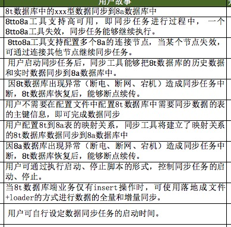 |
| 2016-07-18 13:31:23 | 你 | 看这样写行吗 大致溜一眼 |
| 2016-07-18 13:32:06 | 我 | 第二项可能不是这个意思 |
| 2016-07-18 13:32:17 | 我 | 其他的都差不多 |
| 2016-07-18 13:32:34 | 你 | 这么快看完了啊 |
| 2016-07-18 13:32:41 | 你 | 有的还得拆 |
| 2016-07-18 13:32:48 | 我 | 是 |
| 2016-07-18 13:32:49 | 你 | 第二项我也没太搞明白 |
| 2016-07-18 13:33:02 | 你 | 我写的时候就想着得拆 |
| 2016-07-18 13:33:14 | 你 | 还有 定会议室了吗 |
| 2016-07-18 13:33:21 | 你 | 在哪开 |
| 2016-07-18 13:33:24 | 我 | 应该还是二楼 |
| 2016-07-18 13:33:34 | 你 | 我去问问番薯吧 |
| 2016-07-18 13:33:35 | 你 | 需要吗 |
| 2016-07-18 13:33:48 | 我 | 不用，我刚才告诉他了 |
| 2016-07-18 13:33:59 | 你 | 好 |
| 2016-07-18 13:51:10 | 你 | 360的水杯是不是太小了 |
| 2016-07-18 13:51:16 | 你 | 360ml |
| 2016-07-18 14:06:49 | 我 | 是，我睡着了 |
| 2016-07-18 14:47:06 | 我 | 你是要买杯子吗 |
| 2016-07-18 15:23:45 | 你 | 我没有冒犯你的任何意思啊 |
| 2016-07-18 15:23:51 | 你 | 我只是不懂要做成啥样 |
| 2016-07-18 15:23:53 | 你 | 亲 |
| 2016-07-18 15:24:16 | 我 | 没有，你想多了 |
| 2016-07-18 15:26:31 | 你 | 你是想让大家自己想明白吗 |
| 2016-07-18 15:26:47 | 我 | 是 |
| 2016-07-18 15:27:00 | 你 | 恩 我觉得是 |
| 2016-07-18 15:27:02 | 你 | 唉 |
| 2016-07-18 15:27:06 | 我 | 我关注的是提高大家的能力 |
| 2016-07-18 15:27:15 | 我 | 不能老是我一个人说了算 |
| 2016-07-18 15:27:17 | 你 | 是 |
| 2016-07-18 15:30:41 | 你 | 要是一个小白PO 这个应该是通过跟开发的讨论 得出来的对吧 |
| 2016-07-18 15:30:52 | 你 | 所以对开发的要求挺高的 |
| 2016-07-18 15:31:01 | 我 | 是 |
| 2016-07-18 15:31:10 | 你 | 所以是我们PB的那个会前期沟通太少 |
| 2016-07-18 15:31:15 | 你 | 我明白了 |
| 2016-07-18 15:31:18 | 我 | 没错 |
| 2016-07-18 15:31:31 | 我 | 还有一个 |
| 2016-07-18 15:31:38 | 我 | 就是人员风险 |
| 2016-07-18 15:31:46 | 你 | 你那时候说 应该在开会之前 团队已经对这个东西有很清晰的认识了 |
| 2016-07-18 15:31:47 | 我 | 现在已经有表现了 |
| 2016-07-18 15:31:54 | 你 | 是 |
| 2016-07-18 15:32:01 | 我 | 你说的没错 |
| 2016-07-18 15:32:08 | 我 | 所以敏捷不是那么容易的 |
| 2016-07-18 15:32:32 | 你 | 这些事情 应该在release planning会之前就有认识了 |
| 2016-07-18 15:32:36 | 我 | 这些坑不掉一次是不会明白的 |
| 2016-07-18 15:32:48 | 你 | 绝对不是开会的时候现想的 |
| 2016-07-18 15:32:53 | 我 | 是，咱们现在还是原来的思维方式 |
| 2016-07-18 15:32:57 | 你 | 是 |
| 2016-07-18 15:33:01 | 你 | 不够主动 |
| 2016-07-18 15:33:04 | 你 | 就是等着 |
| 2016-07-18 15:33:05 | 我 | 没错 |
| 2016-07-18 15:33:13 | 你 | 对的 |
| 2016-07-18 15:33:43 | 你 | 咱们是开会之前啥也不干 等开会的时候 再说 |
| 2016-07-18 15:34:02 | 你 | 下次注意 这都是教训 |
| 2016-07-18 15:35:37 | 你 | 所以你才说我第二个故事写的不对 |
| 2016-07-18 15:35:40 | 你 | 我晕 |
| 2016-07-18 15:35:46 | 你 | 全都是后知后觉 |
| 2016-07-18 15:35:54 | 我 | |
| 2016-07-18 15:36:07 | 我 | 你知道当时我憋的有多难受 |
| 2016-07-18 15:36:22 | 你 | 我现在知道了 |
| 2016-07-18 15:36:45 | 我 | 敏捷最重要的财富就是这些坑 |
| 2016-07-18 15:36:57 | 你 | 是的 |
| 2016-07-18 15:36:58 | 我 | 这些坑是哪本书里都不会说的 |
| 2016-07-18 15:37:01 | 你 | 是 |
| 2016-07-18 15:37:04 | 你 | 真的不会说 |
| 2016-07-18 15:37:15 | 我 | 靠的就是自己的积累 |
| 2016-07-18 15:41:19 | 我 | 你知道我在看你吗 |
| 2016-07-18 15:42:48 | 你 | 你在哪呢 |
| 2016-07-18 15:42:50 | 你 | 不知道 |
| 2016-07-18 15:43:06 | 我 | 在你后面 |
| 2016-07-18 16:04:13 | 我 | 他没训你吗 |
| 2016-07-18 16:04:35 | 你 | 没有 |
| 2016-07-18 16:04:39 | 你 | 刚训完了 |
| 2016-07-18 16:04:43 | 你 | 说周报的事呢 |
| 2016-07-18 16:04:55 | 你 | 说我的调研报告写的很烂 |
| 2016-07-18 16:05:06 | 你 | 说想让我专心做需求的活 |
| 2016-07-18 16:05:10 | 我 | 哦 |
| 2016-07-18 16:05:20 | 你 | 晕 |
| 2016-07-18 16:05:24 | 你 | 随便吧 我都行 |
| 2016-07-18 16:05:50 | 我 | 我是特意说给他听的 |
| 2016-07-18 16:06:28 | 你 | 说接着训我是吧 |
| 2016-07-18 16:06:30 | 你 | 我知道 |
| 2016-07-18 16:06:41 | 你 | 你是我的尚方宝剑 专门保护我的 |
| 2016-07-18 16:06:44 | 你 | 护花使者 |
| 2016-07-18 16:06:50 | 我 | 哈哈 |
| 2016-07-18 16:07:13 | 你 | 我买了和360ml的被子 |
| 2016-07-18 16:07:15 | 你 | 杯子 |
| 2016-07-18 16:30:28 | 我 | 你写什么呢 |
| 2016-07-18 16:30:31 | 你 | 敏捷这些东西太好玩了 |
| 2016-07-18 16:30:49 | 我 | 那当然 |
| 2016-07-18 16:30:55 | 我 | 每次和每次都不一样 |
| 2016-07-18 16:30:56 | 你 | 感觉被打开了一扇通往另一个世界的大门 |
| 2016-07-18 16:31:06 | 我 | 每次都有新鲜感 |
| 2016-07-18 16:31:14 | 我 | 特别适合你我这样的人 |
| 2016-07-18 16:31:18 | 你 | 是呢 |
| 2016-07-18 16:31:22 | 你 | 太酷了 |
| 2016-07-18 16:31:55 | 我 | 但是你也看见了，必须有一个经验丰富的 |
| 2016-07-18 16:32:07 | 我 | 如果只是让他们自己去做，肯定又做回去了 |
| 2016-07-18 16:32:22 | 你 | 是 |
| 2016-07-18 16:32:27 | 我 | 这也是敏捷经常失败的主要原因 |
| 2016-07-18 16:32:30 | 你 | 这个过程很不错 |
| 2016-07-18 16:32:31 | 你 | 是 |
| 2016-07-18 16:32:57 | 你 | 只是形式上是 其实他是真正和瀑布基因都不同的流程 |
| 2016-07-18 16:33:01 | 你 | 对吧 |
| 2016-07-18 16:33:04 | 你 | 太有意思了 |
| 2016-07-18 16:33:06 | 我 | 对 |
| 2016-07-18 16:33:07 | 你 | 喜欢 |
| 2016-07-18 16:33:14 | 我 | 就知道你喜欢 |
| 2016-07-18 16:33:27 | 你 | 是呢 好喜欢 |
| 2016-07-18 16:33:36 | 你 | 每天都能学到新的东西 |
| 2016-07-18 16:33:43 | 我 | 嗯 |
| 2016-07-18 16:33:45 | 你 | 太美好了 |
| 2016-07-18 16:33:54 | 我 | |
| 2016-07-18 16:36:42 | 我 | 606可以直接上淘宝，你不用换成4G |
| 2016-07-18 16:36:57 | 你 | 我知道 |
| 2016-07-18 16:37:04 | 你 | 刚才着急让你看 |
| 2016-07-18 16:37:09 | 我 | 好的 |
| 2016-07-18 16:37:18 | 我 | 我是担心你的流量 |
| 2016-07-18 16:37:25 | 你 | 没事 |
| 2016-07-18 16:37:29 | 你 | 我心里有数 |
| 2016-07-18 16:37:34 | 我 | 好的 |
| 2016-07-18 17:04:40 | 我 | 咋啦 |
| 2016-07-18 17:28:05 | 你 | 哪去了 |
| 2016-07-18 17:28:19 | 我 | 番薯 |
| 2016-07-18 17:28:28 | 我 | 讨论他们的sb |
| 2016-07-18 17:48:29 | 你 | 以后别叫SB了 |
| 2016-07-18 17:48:53 | 我 | 你起个好名字吧 |
| 2016-07-18 17:50:16 | 你 | 不知道 |
| 2016-07-18 17:50:18 | 你 | 好难啊 |
| 2016-07-18 17:50:30 | 我 | 哈哈 |
| 2016-07-18 17:50:32 | 你 | 你就费点事 叫sprint backlog |
| 2016-07-18 17:50:59 | 我 | 给你打字太累 |
| 2016-07-18 17:51:24 | 你 | 为啥 |
| 2016-07-18 17:51:47 | 我 | 太长了，手机上太慢 |
| 2016-07-18 17:53:10 | 你 | 你想说什么 |
| 2016-07-18 17:53:46 | 我 | 我是说打英文单词太长，我在手机上输入比较累，所以就简写了 |
| 2016-07-18 17:54:05 | 你 | 打字OK 主要是别说出来 |
| 2016-07-18 17:54:10 | 你 | 太难听了 |
| 2016-07-18 17:54:18 | 你 | 我觉得你的鞋挺好看的 |
| 2016-07-18 17:54:24 | 你 | 看着就很舒服 |
| 2016-07-18 17:54:34 | 我 | 是 |
| 2016-07-18 18:15:51 | 我 | 你写啥呢 |
| 2016-07-18 18:16:01 | 你 | 有个用需 |
| 2016-07-18 18:16:06 | 你 | 王洪越让我写的 |
| 2016-07-18 18:16:37 | 我 | 哦，好的 |
| 2016-07-18 18:39:17 | 你 | 走了 |
| 2016-07-18 18:39:32 | 我 | 好的 |
{kind=link}
2016-07-19¶
| 2016-07-19 08:27:47 | 你 | 我好像要感冒 |
| 2016-07-19 08:28:13 | 我 | 啊，赶紧和热水 |
| 2016-07-19 09:46:07 | 我 | 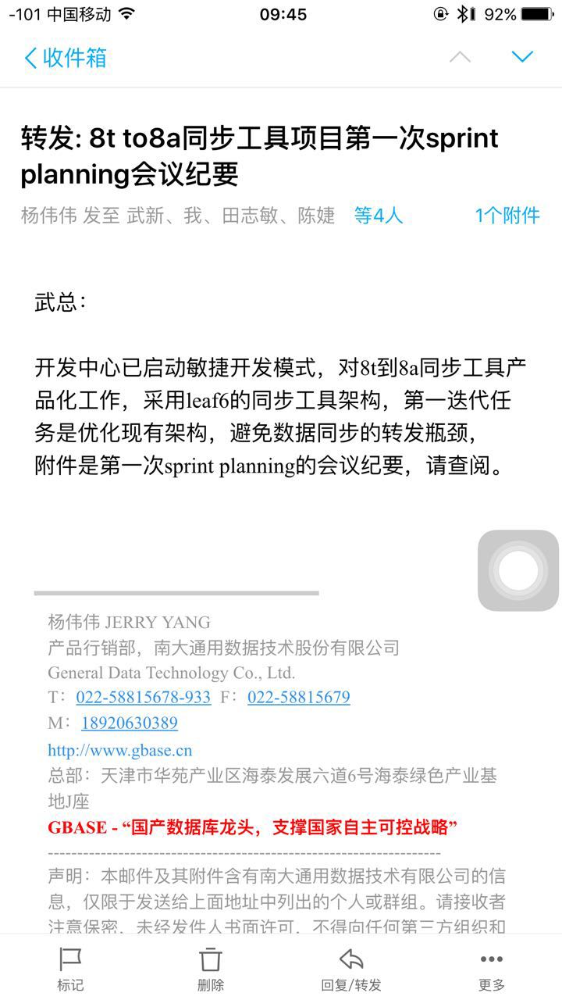 |
| 2016-07-19 09:46:42 | 你 | 收到 |
| 2016-07-19 11:21:28 | 我 | 亲，今天太忙了，都没空陪你了 |
| 2016-07-19 11:29:00 | 你 | 刚才老田找我谈话了 说让我给他干一些管理类的活 有20%的PBC跟老田签 |
| 2016-07-19 11:29:47 | 我 | 可以呀 |
| 2016-07-19 11:29:57 | 你 | 是啊 我一口答应了 |
| 2016-07-19 11:30:02 | 你 | 谈话很愉快 |
| 2016-07-19 11:30:34 | 我 | 好 |
| 2016-07-19 11:31:00 | 我 | 这回王洪越更没法说你了 |
| 2016-07-19 11:31:49 | 你 | 是 |
| 2016-07-19 11:37:26 | 我 | 吃饭去吧 |
| 2016-07-19 11:40:48 | 你 | 恩 |
| 2016-07-19 11:41:02 | 你 | 这回就不用过王洪越了 |
| 2016-07-19 11:41:15 | 你 | 直接跟老田对接 |
| 2016-07-19 11:41:23 | 我 | 是 |
| 2016-07-19 13:20:34 | 我 | 你睡了吗 |
| 2016-07-19 13:20:42 | 你 | 没睡着 |
| 2016-07-19 13:20:54 | 你 | 没事 |
| 2016-07-19 13:21:15 | 我 | 是不是太冷了 |
| 2016-07-19 13:21:28 | 你 | 8tto8a工具MessageQueue支持高可用，即同步任务进行过程中， 一个8tto8a工具MQ失效，同步任务能够继续执行。 |
| 2016-07-19 13:21:38 | 你 | 这个是21人日的工作量是吧 |
| 2016-07-19 13:21:52 | 你 | 现在是用kfk先替换MQ |
| 2016-07-19 13:22:17 | 你 | 下个迭代出来的就是MQ高可用了 |
| 2016-07-19 13:22:18 | 我 | 是，具体工作量需要看一下 |
| 2016-07-19 13:22:41 | 我 | 这次就可以了，就是只有正常场景 |
| 2016-07-19 14:18:10 | 你 | 『避免数据同步的转发瓶颈，』这是杨总说的 |
| 2016-07-19 14:18:17 | 你 | 跟咱们说的高可用是一回事吗 |
| 2016-07-19 14:18:19 | 你 | 感觉不是呢 |
| 2016-07-19 14:18:35 | 我 | 不是 |
| 2016-07-19 14:21:26 | 我 | 你刚才找番薯聊什么呢 |
| 2016-07-19 14:21:56 | 你 | 聊这个迭代做成啥样 |
| 2016-07-19 14:22:28 | 我 | 唉 |
| 2016-07-19 14:22:33 | 你 | 咋了 |
| 2016-07-19 14:22:46 | 我 | 你知道咱们差了哪一步吗 |
| 2016-07-19 14:22:57 | 你 | 哪一步 |
| 2016-07-19 14:23:06 | 我 | 你先想想 |
| 2016-07-19 14:23:14 | 你 | 我觉得咱们这个东西应该叫『重构同步工具』 |
| 2016-07-19 14:23:41 | 你 | 反正叫单点失效也不为过 是用户角度描述 |
| 2016-07-19 14:23:48 | 你 | 但是太具迷惑性了 |
| 2016-07-19 14:23:57 | 我 | 和怎么命名没有关系 |
| 2016-07-19 14:24:14 | 你 | 你说差哪了 |
| 2016-07-19 14:24:35 | 我 | 我的PPT里面有，我也反复讲过 |
| 2016-07-19 14:24:44 | 你 | 哪 |
| 2016-07-19 14:24:48 | 我 | 还特别重点讲过 |
| 2016-07-19 14:24:56 | 我 | 亲，好好想想 |
| 2016-07-19 14:24:57 | 你 | 主动吗/? |
| 2016-07-19 14:25:05 | 你 | 你这个太大了 我 |
| 2016-07-19 14:25:11 | 你 | 不知道你想的是啥 |
| 2016-07-19 14:25:25 | 你 | 不 许 叹 气！！！！！！！！！！ |
| 2016-07-19 14:25:29 | 我 | 就是解决你现在这个问题 |
| 2016-07-19 14:25:59 | 你 | 现在整个状态我都是后知后觉的 |
| 2016-07-19 14:26:07 | 你 | 我不知道后边还会有什么 |
| 2016-07-19 14:26:24 | 你 | 你别卖关子了 说出来 我再跟你说说我自己的理解 |
| 2016-07-19 14:26:39 | 我 | 我们没有定义“完成” |
| 2016-07-19 14:26:56 | 你 | 唉 |
| 2016-07-19 14:27:14 | 我 | 有这个，你这就不是问题了 |
| 2016-07-19 14:27:20 | 你 | 我觉得我整个还没缓到这步呢 |
| 2016-07-19 14:27:34 | 你 | 我现在还在看过去的过程 |
| 2016-07-19 14:27:38 | 你 | 哈哈 |
| 2016-07-19 14:27:39 | 我 | 你有点掉队了 |
| 2016-07-19 14:27:50 | 你 | 是 |
| 2016-07-19 14:28:13 | 你 | 你们昨天就那么把会开了 我也不知道说啥了 |
| 2016-07-19 14:28:14 | 你 | 哼 |
| 2016-07-19 14:28:53 | 我 | 其实sprint planning和PO是关系不大 |
| 2016-07-19 14:29:04 | 我 | 你不参加也是没有问题的 |
| 2016-07-19 14:29:18 | 你 | 恩 |
| 2016-07-19 14:29:38 | 你 | 我有个问题想问你 |
| 2016-07-19 14:29:43 | 我 | 说吧 |
| 2016-07-19 14:29:44 | 你 | 你有空吗 |
| 2016-07-19 14:29:49 | 我 | 有 |
| 2016-07-19 14:30:59 | 你 | 收下邮件 我去找你说 |
| 2016-07-19 14:31:15 | 我 | 好 |
| 2016-07-19 14:51:58 | 我 | 我刚才仔细看你，觉得你没擦口红也很漂亮。樱桃小嘴，没显得你脸大 |
| 2016-07-19 14:52:04 | 你 | 哈哈 |
| 2016-07-19 14:52:12 | 你 | 我咋这爱听呢 |
| 2016-07-19 14:52:42 | 我 | 因为是我说的呀[偷笑] |
| 2016-07-19 14:53:07 | 你 | 恩 |
| 2016-07-19 15:12:51 | 你 | 找马姐 |
| 2016-07-19 15:13:41 | 你 | 我觉得老田对我的态度都有改观 |
| 2016-07-19 15:13:45 | 你 | 就这么快 |
| 2016-07-19 15:13:49 | 你 | 唉 |
| 2016-07-19 15:14:02 | 我 | 怎么啦 |
| 2016-07-19 15:14:16 | 我 | 叹什么气 |
| 2016-07-19 15:53:36 | 我 | 你去哪了 |
| 2016-07-19 15:56:58 | 你 | 看我想你所想了吧 |
| 2016-07-19 15:57:07 | 你 | 先把马姐替你搞定了 |
| 2016-07-19 15:57:15 | 我 | 好的 |
| 2016-07-19 16:22:31 | 我 | 你干啥呢？ |
| 2016-07-19 16:22:37 | 我 | 怎么不理我 |
| 2016-07-19 16:22:47 | 你 | 我在弄一个表格 |
| 2016-07-19 16:22:50 | 你 | 马上发给你 |
| 2016-07-19 16:23:00 | 我 | 好 |
| 2016-07-19 16:24:41 | 你 | jira一时半会肯定是弄不了了 |
| 2016-07-19 16:24:51 | 我 | 怎么啦 |
| 2016-07-19 16:25:07 | 你 | 我姐也不搭理我 |
| 2016-07-19 16:25:24 | 我 | 哦，不着急 |
| 2016-07-19 16:25:57 | 你 | 这个东西其实应该是大家共同维护的 是一个公共平台 |
| 2016-07-19 16:26:13 | 你 | 是吧 |
| 2016-07-19 16:26:17 | 你 | 我理解的 |
| 2016-07-19 16:26:45 | 我 | 我知道，可是如果没有人用也是白费 |
| 2016-07-19 16:27:07 | 你 | 为什么不用呢 |
| 2016-07-19 16:27:12 | 我 | 我告诉你吧，一组原来有这么一个平台 |
| 2016-07-19 16:27:18 | 你 | 哦 |
| 2016-07-19 16:27:19 | 我 | 我在的时候还有人用 |
| 2016-07-19 16:27:43 | 你 | 这个应该每天都会更新的啊 |
| 2016-07-19 16:27:44 | 我 | 后来我交给旭明以后就没有人用了 |
| 2016-07-19 16:27:47 | 你 | 那是他 |
| 2016-07-19 16:27:51 | 你 | 咱是咱 |
| 2016-07-19 16:27:56 | 我 | 不对 |
| 2016-07-19 16:28:17 | 我 | 你没发现吗？现在除了你大家还是在等靠要 |
| 2016-07-19 16:28:27 | 你 | 没事 慢慢就好了 |
| 2016-07-19 16:28:37 | 我 | 也许吧 |
| 2016-07-19 16:28:46 | 你 | 转变是需要过程的 但是我一个人努力肯定是不行 |
| 2016-07-19 16:28:53 | 你 | 但是大家还是很重视这事的 |
| 2016-07-19 16:28:56 | 你 | 真的 |
| 2016-07-19 16:29:11 | 我 | 你说说都是怎么重视的 |
| 2016-07-19 16:29:12 | 你 | 你能看到我 所以才知道我比较积极 |
| 2016-07-19 16:29:20 | 你 | 马姐今天愁坏了 |
| 2016-07-19 16:29:33 | 你 | 一直说一头雾水 不知道怎么下手 |
| 2016-07-19 16:30:02 | 你 | 我跟老范也碰过了 也给他灌了点东西 |
| 2016-07-19 16:30:07 | 你 | 我觉得你太悲观了 |
| 2016-07-19 16:30:35 | 你 | 也可能是我太乐观 |
| 2016-07-19 16:32:28 | 我 | 我悲观是因为我了解人性，知道这里面有多少坑 |
| 2016-07-19 16:46:33 | 我 | 你做的是什么 |
| 2016-07-19 16:52:44 | 你 | 就是个跟踪的东西啊 |
| 2016-07-19 16:52:58 | 你 | 一会要开会了 |
| 2016-07-19 17:28:44 | 你 | 干嘛 |
| 2016-07-19 17:29:09 | 我 | 马姐在瞎搅和 |
| 2016-07-19 17:48:00 | 我 | 你是去打球吗？ |
| 2016-07-19 18:33:04 | 你 | 恩 |
{kind=link}
2016-07-20¶
| 2016-07-20 08:34:04 | 你 | 亲 你来的时候也湿了 |
| 2016-07-20 08:34:40 | 我 | 是呀，比你湿 |
| 2016-07-20 08:37:13 | 你 | 好吧 |
| 2016-07-20 08:37:25 | 你 | 我一路上都在想你到没到 |
| 2016-07-20 08:37:38 | 我 | 为啥 |
| 2016-07-20 08:37:54 | 你 | 想你怎么来啊 |
| 2016-07-20 08:38:14 | 我 | 我还能怎么来，只能是地铁呀 |
| 2016-07-20 08:38:48 | 我 | 还好出来的早 |
| 2016-07-20 08:45:01 | 你 | 是 |
| 2016-07-20 09:22:02 | 我 | 这次scrum真是多灾多难，第一次立会就没法开 |
| 2016-07-20 09:33:17 | 你 | 是 |
| 2016-07-20 09:33:31 | 你 | 没事，好事多磨 |
| 2016-07-20 09:41:03 | 我 | 今天你还有什么事情 |
| 2016-07-20 09:41:10 | 你 | 没什么事情 |
| 2016-07-20 09:41:46 | 我 | 冷不冷 |
| 2016-07-20 09:41:56 | 你 | 有点 |
| 2016-07-20 09:42:05 | 你 | 外套湿了 待会再穿 |
| 2016-07-20 09:42:35 | 我 | 看看阿娇那有吗 |
| 2016-07-20 09:42:53 | 你 | 没事 |
| 2016-07-20 09:42:55 | 你 | 不穿了 |
| 2016-07-20 09:43:10 | 我 | 别感冒了 |
| 2016-07-20 09:43:19 | 你 | 恩 |
| 2016-07-20 09:52:03 | 你 | 你干嘛去了 |
| 2016-07-20 09:52:23 | 我 | 我就在这呀 |
| 2016-07-20 09:52:38 | 你 | 刚才没在啊 |
| 2016-07-20 09:53:00 | 我 | 一直在呀，亲 |
| 2016-07-20 09:53:12 | 你 | 好吧 |
| 2016-07-20 09:53:20 | 你 | 刚才肯定没在 |
| 2016-07-20 09:53:35 | 我 | 好吧，你说得对 |
| 2016-07-20 09:54:46 | 你 | 讨论下昨天我说的那个标准呗 |
| 2016-07-20 09:54:49 | 你 | 你说合适吗 |
| 2016-07-20 09:55:01 | 我 | 什么标准 |
| 2016-07-20 09:55:10 | 你 | 就是那个三个节点的 |
| 2016-07-20 09:55:23 | 我 | 合适呀 |
| 2016-07-20 09:55:27 | 你 | 3个kafka集群节点，任意一个出现断电、断网、kill进程情况，MQ能实现高可用（高可用的表现：实现8t到8a数据同步） |
| 2016-07-20 09:57:25 | 我 | 嗯 |
| 2016-07-20 09:57:33 | 你 | 你今天忙吗 |
| 2016-07-20 09:57:48 | 我 | 现在看不忙 |
| 2016-07-20 09:57:59 | 你 | 恩 |
| 2016-07-20 09:58:31 | 你 | 下个迭代的用户故事写数据类型的吗 |
| 2016-07-20 09:58:44 | 你 | 还是读写进程分开的 |
| 2016-07-20 09:59:02 | 我 | 我也没想好 |
| 2016-07-20 09:59:20 | 你 | 下周胡组会就回来了 |
| 2016-07-20 09:59:21 | 我 | 我倾向于写数据类型 |
| 2016-07-20 09:59:39 | 你 | 我也是 |
| 2016-07-20 09:59:49 | 你 | 要不就写数据类型的吧 |
| 2016-07-20 09:59:55 | 我 | 这个可以给用户提供一个比较全面的功能 |
| 2016-07-20 10:00:06 | 你 | 是 |
| 2016-07-20 10:00:23 | 你 | 这个终究是好做的 那个重构的风险比较大 |
| 2016-07-20 10:00:28 | 我 | 你可以看一下，不用所有的数据类型都做 |
| 2016-07-20 10:00:35 | 你 | 恩 好 |
| 2016-07-20 10:00:41 | 你 | 我看看8t手册 |
| 2016-07-20 10:00:48 | 我 | 嗯 |
| 2016-07-20 10:40:26 | 你 | 感觉老杨是没事闲的 有事忙的话 会管这些事吗 |
| 2016-07-20 10:54:01 | 我 | 你没事了吗 |
| 2016-07-20 10:55:37 | 你 | 看8t手册 |
| 2016-07-20 10:55:43 | 你 | 今天没啥事 |
| 2016-07-20 10:55:48 | 我 | 好的 |
| 2016-07-20 10:56:30 | 我 | 你从哪拿的衣服 |
| 2016-07-20 10:56:47 | 你 | 翠姐的 |
| 2016-07-20 10:57:32 | 我 | 哦 |
| 2016-07-20 13:37:27 | 我 | 这事现在就没完了 |
| 2016-07-20 13:37:36 | 你 | 咋了 |
| 2016-07-20 13:37:40 | 我 | 上午一件 |
| 2016-07-20 13:37:46 | 我 | 现在又一件 |
| 2016-07-20 13:38:34 | 我 | 现在就是月会上我和老杨吵吵的那件事情 |
| 2016-07-20 13:38:57 | 你 | 到底咋了 好像是一线那边有问题 |
| 2016-07-20 13:39:00 | 你 | 跟你有关系吗 |
| 2016-07-20 13:39:05 | 我 | 有关系 |
| 2016-07-20 13:39:32 | 我 | 就是因为我们做不出来 |
| 2016-07-20 13:39:33 | 你 | 咋了 |
| 2016-07-20 13:39:43 | 你 | 哦 然后呢 |
| 2016-07-20 13:40:03 | 我 | 一线要求一周，我们说两周 |
| 2016-07-20 13:40:15 | 我 | 现在一线今天就要东西 |
| 2016-07-20 13:40:23 | 你 | 晕 |
| 2016-07-20 13:40:36 | 我 | 捅到赵总那去了 |
| 2016-07-20 13:40:41 | 你 | 哦 |
| 2016-07-20 13:40:49 | 你 | 是啊 |
| 2016-07-20 13:50:44 | 我 | 你是在 拆用户故事吗 |
| 2016-07-20 13:51:12 | 你 | 没有 我在调研8t的数据类型 以及他们实现哪几个 |
| 2016-07-20 13:51:38 | 我 | 好的 |
| 2016-07-20 13:54:55 | 你 | 老杨这效率 |
| 2016-07-20 13:55:34 | 我 | 火烧眉毛呀 |
| 2016-07-20 13:55:44 | 你 | 哈哈 |
| 2016-07-20 13:57:24 | 我 | 我一猜他就是要找你去 |
| 2016-07-20 13:57:34 | 你 | 我想也是 |
| 2016-07-20 14:03:31 | 你 | 你干嘛呢 |
| 2016-07-20 14:03:35 | 你 | 看破红尘呢 |
| 2016-07-20 14:03:59 | 我 | 唉，其实很简单的事情 |
| 2016-07-20 14:04:09 | 你 | 我觉得也是 |
| 2016-07-20 14:04:18 | 你 | 但是沟通都缺乏主动性 |
| 2016-07-20 14:04:22 | 我 | 不是 |
| 2016-07-20 14:04:25 | 你 | 是吗 |
| 2016-07-20 14:04:30 | 你 | 老杨好可怜 |
| 2016-07-20 14:04:38 | 我 | 是没有考虑各方利益 |
| 2016-07-20 14:04:55 | 我 | 老杨这样解决治标不治本 |
| 2016-07-20 14:05:17 | 你 | 唉 |
| 2016-07-20 14:06:05 | 我 | 没有把各利益相关方拉到一起，这种内部的流程其实无非解决根本问题 |
| 2016-07-20 14:06:24 | 你 | 这个就不知道了 |
| 2016-07-20 14:07:18 | 我 | 你看最后还是靠开会吧 |
| 2016-07-20 14:07:51 | 你 | 你看的比较本质 |
| 2016-07-20 14:08:19 | 我 | 所以很痛苦呀 |
| 2016-07-20 14:08:26 | 你 | 哈哈 |
| 2016-07-20 14:25:26 | 我 | 老田说话特好玩 |
| 2016-07-20 14:50:18 | 我 | 我真服他们了，这点事都统一不了 |
| 2016-07-20 14:50:48 | 你 | 是 |
| 2016-07-20 15:39:28 | 我 | 不知道是多灾多难还是好事多磨 |
| 2016-07-20 15:39:43 | 你 | 不知道 |
| 2016-07-20 15:40:56 | 我 | 你待会怎么走 |
| 2016-07-20 15:41:09 | 你 | 我等东东五点半再走 |
| 2016-07-20 15:41:53 | 我 | 早点吧，别等雨大了 |
| 2016-07-20 15:46:55 | 我 | ？ |
| 2016-07-20 15:47:03 | 你 | 没事 |
| 2016-07-20 15:47:06 | 你 | 看看吧 |
| 2016-07-20 15:47:07 | 我 | 你今天头发有点乱 |
| 2016-07-20 15:47:13 | 你 | 是 |
| 2016-07-20 15:47:19 | 你 | 最近都这样 |
| 2016-07-20 15:47:30 | 我 | 为什么 |
| 2016-07-20 15:47:50 | 我 | 头发干吗？ |
| 2016-07-20 15:48:15 | 你 | 不干 没事 |
| 2016-07-20 15:48:37 | 我 | 哦 |
| 2016-07-20 15:49:49 | 我 | 你怎么了，不舒服吗 |
| 2016-07-20 15:49:57 | 你 | 没有啊 |
| 2016-07-20 15:50:34 | 你 | 我没事 |
| 2016-07-20 15:50:42 | 你 | 我在弄8t那数据类型呢 |
| 2016-07-20 15:50:48 | 我 | 好的 |
| 2016-07-20 15:51:08 | 你 | 天气太潮湿 |
| 2016-07-20 15:51:15 | 你 | 我的头发都蓬起来了 |
| 2016-07-20 15:51:27 | 我 | 是 |
| 2016-07-20 15:51:50 | 我 | 今天回家洗洗吧 |
| 2016-07-20 15:52:05 | 你 | 不是该洗了 |
| 2016-07-20 15:52:25 | 我 | 用护发素 |
| 2016-07-20 15:53:02 | 我 | 你昨天的发型也不错 |
| 2016-07-20 15:53:28 | 你 | 昨天太乱了 我已经受不了了 我扎起来了 |
| 2016-07-20 15:53:41 | 我 | 嗯 |
| 2016-07-20 16:20:58 | 你 | 真烦人 |
| 2016-07-20 16:21:02 | 你 | 我也想回家 |
| 2016-07-20 16:22:08 | 我 | 嗯，让东东早点下 |
| 2016-07-20 16:22:14 | 你 | 他不下 |
| 2016-07-20 16:29:25 | 我 | 走了，路上可以陪你 |
| 2016-07-20 16:31:03 | 你 | 恩 好 |
| 2016-07-20 16:31:09 | 你 | 老田说不开车回家了 |
| 2016-07-20 16:31:21 | 你 | 被洪越气到了 |
| 2016-07-20 16:31:24 | 我 | 他蹭车回去？ |
| 2016-07-20 16:31:31 | 你 | 跟宝玉搭车回去 |
| 2016-07-20 16:31:39 | 我 | 哦 |
| 2016-07-20 16:31:52 | 你 | 说明早曾我的车 |
| 2016-07-20 16:32:00 | 你 | 晕 我明天都不想来了 |
| 2016-07-20 16:32:06 | 你 | 反正我也没事 |
| 2016-07-20 16:32:21 | 我 | 是 |
| 2016-07-20 16:32:34 | 你 | 随便吧 |
| 2016-07-20 16:33:11 | 你 | 你看老田在那嘟囔『这个事我都说5遍了 还一直纠结需求反馈单....』 |
| 2016-07-20 16:33:13 | 你 | 笑死我了 |
| 2016-07-20 16:33:31 | 我 | 是呗 |
| 2016-07-20 16:33:52 | 你 | 你也觉得好笑吗 |
| 2016-07-20 16:34:10 | 你 | 我怎么觉得跟番薯他们共个事这么麻烦呢 |
| 2016-07-20 16:34:21 | 你 | 他们组这么懒散 他还不自觉 |
| 2016-07-20 16:35:05 | 你 | 就这样吧 懒得搭理他 |
| 2016-07-20 16:35:14 | 我 | 他们就这样 |
| 2016-07-20 16:35:19 | 我 | 慢慢来吧 |
| 2016-07-20 16:35:37 | 我 | 又下雨了 |
| 2016-07-20 16:35:45 | 你 | 你说今天我说话是不是有点过分了 |
| 2016-07-20 16:35:55 | 你 | 就说『别说废话了那句』 |
| 2016-07-20 16:36:01 | 你 | 他看起来挺生气的 |
| 2016-07-20 16:36:20 | 我 | 你这几天都有点强势 |
| 2016-07-20 16:36:28 | 你 | 恩 |
| 2016-07-20 16:36:35 | 你 | 你不也说我了么 |
| 2016-07-20 16:36:49 | 你 | 我以后得改改 |
| 2016-07-20 16:37:05 | 我 | 你太着急 |
| 2016-07-20 16:37:29 | 你 | 你知道我其实没任何意思 |
| 2016-07-20 16:37:37 | 你 | 只是想说咱们的事 |
| 2016-07-20 16:37:39 | 我 | 是，我知道 |
| 2016-07-20 16:37:41 | 你 | 我也想不出办法 |
| 2016-07-20 16:37:47 | 你 | 就是太着急吧 |
| 2016-07-20 16:37:53 | 我 | 嗯 |
| 2016-07-20 16:37:59 | 你 | 能力还太有限 |
| 2016-07-20 16:38:12 | 我 | 你还是太年轻 |
| 2016-07-20 16:38:13 | 你 | 我下次注意 |
| 2016-07-20 16:38:30 | 我 | 不过也很有冲劲 |
| 2016-07-20 16:38:37 | 你 | 是啊 |
| 2016-07-20 16:38:50 | 你 | 你看老杨都这么大了 不还是一样 |
| 2016-07-20 16:38:56 | 你 | 这跟年轻没关系 |
| 2016-07-20 16:39:02 | 你 | 就是性格问题可能 |
| 2016-07-20 16:39:07 | 我 | 不全是 |
| 2016-07-20 16:39:16 | 你 | 经验太少 |
| 2016-07-20 16:39:17 | 你 | ？ |
| 2016-07-20 16:39:48 | 你 | 我是觉得这事你顶的压力也不小吧 |
| 2016-07-20 16:39:53 | 我 | 嗯 |
| 2016-07-20 16:39:55 | 你 | 当然我也没个规划 |
| 2016-07-20 16:40:01 | 你 | 可是武总都知道了 |
| 2016-07-20 16:40:06 | 我 | 今天我对番薯也有点急 |
| 2016-07-20 16:40:12 | 你 | 这可不是写软需那么简单呢 |
| 2016-07-20 16:40:37 | 你 | 我当时写软需的时候 就很着急 生怕写不好 你不好交待 |
| 2016-07-20 16:40:46 | 你 | 这下这么大的事 不当回事 |
| 2016-07-20 16:40:53 | 你 | 气死我了 |
| 2016-07-20 16:40:59 | 我 | 😄 |
| 2016-07-20 16:41:15 | 你 | 你说我这性格的能不着急 |
| 2016-07-20 16:41:22 | 我 | 是 |
| 2016-07-20 16:41:44 | 你 | 其实这事跟我也没多大关系 我也就是走过场 学我的东西 可是因为和你关系大啊 |
| 2016-07-20 16:42:08 | 你 | 所以我觉得特别重要 说实话我自己的事可能都不会这么上心 |
| 2016-07-20 16:42:22 | 我 | 嗯，我知道 |
| 2016-07-20 16:43:13 | 我 | 你也不用着急 |
| 2016-07-20 16:43:37 | 我 | 你就看着我怎么做，好好学，积累经验 |
| 2016-07-20 16:43:51 | 你 | 恩 知道了 |
| 2016-07-20 16:44:33 | 你 | 你说 番薯他也有责任啊 他是你的backup 他也需要学习你如何去做backup的 |
| 2016-07-20 16:44:49 | 你 | 你是如何做master的啊 |
| 2016-07-20 16:44:52 | 我 | 他没长那脑子 |
| 2016-07-20 16:45:08 | 我 | 他想做技术，不想做管理 |
| 2016-07-20 16:45:19 | 我 | 可是技术水平又不够 |
| 2016-07-20 16:45:58 | 你 | 我看他自己都不知道做什么 |
| 2016-07-20 16:46:11 | 你 | 我们做的过程中也不走脑子 |
| 2016-07-20 16:46:24 | 你 | 反正就是他代表剩下的所有人 |
| 2016-07-20 16:46:30 | 我 | 是 |
| 2016-07-20 16:46:54 | 我 | 我打算培养贺津 |
| 2016-07-20 16:47:02 | 我 | 感觉他还可以 |
| 2016-07-20 16:47:04 | 你 | 不过，这跟我也没关系，以后他的事我可不管，我只关注我自己就行了，顺便拉着马姐 |
| 2016-07-20 16:47:14 | 我 | 是 |
| 2016-07-20 16:47:18 | 你 | 我个人是挺喜欢贺津的 |
| 2016-07-20 16:47:32 | 我 | 他比番薯强 |
| 2016-07-20 16:47:41 | 你 | 跟他合作过几次，脑子是够快 |
| 2016-07-20 16:47:57 | 你 | 而且也挺好说话的，但是别的不知道 |
| 2016-07-20 16:48:45 | 我 | 缺人带 |
| 2016-07-20 16:49:26 | 你 | 是吧 你看卜洪涛 |
| 2016-07-20 16:49:42 | 你 | 我怎么觉得他们一个个的工作态度都有问题 |
| 2016-07-20 16:49:50 | 你 | 都不够投入 不够认真 |
| 2016-07-20 16:49:55 | 我 | 就是番薯带的 |
| 2016-07-20 16:50:04 | 我 | 他大包大揽 |
| 2016-07-20 16:50:05 | 你 | 是我的问题吗 |
| 2016-07-20 16:50:06 | 你 | 你说 |
| 2016-07-20 16:50:07 | 你 | 但你们组的都还好 |
| 2016-07-20 16:50:10 | 你 | 都没有那样的 |
| 2016-07-20 16:50:47 | 你 | 要说有事 自己的事都是偷摸的挤时间干的 |
| 2016-07-20 16:51:00 | 我 | 平时开晨会就可以看出来 |
| 2016-07-20 16:51:10 | 你 | 开晨会怎么了 |
| 2016-07-20 16:51:13 | 我 | 番薯总是在推卸责任 |
| 2016-07-20 16:51:22 | 我 | 找各种理由 |
| 2016-07-20 16:51:25 | 你 | 是 |
| 2016-07-20 16:51:27 | 你 | 就是 |
| 2016-07-20 16:51:37 | 我 | 下面人也就这样了 |
| 2016-07-20 16:51:51 | 我 | 我觉得就贺津态度还可以 |
| 2016-07-20 16:51:57 | 你 | 是 |
| 2016-07-20 16:52:10 | 我 | 其他人都有推卸责任的情况 |
| 2016-07-20 16:52:11 | 你 | 差很多 |
| 2016-07-20 16:52:12 | 你 | 也能挺近别人说话 |
| 2016-07-20 16:52:19 | 你 | 番薯啥时候就是表他那一套 根本不听别人的 |
| 2016-07-20 16:52:51 | 我 | 是 |
| 2016-07-20 16:53:04 | 你 | 昨天马姐找他问怎么测 他根本就不听马姐的问题 上来从头到尾又说一遍 我听得都腻了 |
| 2016-07-20 16:53:20 | 我 | 他就这点本事 |
| 2016-07-20 16:53:32 | 你 | 而且我问他问题的时候 也是 每次问需求 都是附带给你大部分的实现 |
| 2016-07-20 16:53:40 | 我 | 是 |
| 2016-07-20 16:53:42 | 你 | 不听都不行 我的自己拆需求 |
| 2016-07-20 16:53:50 | 我 | 他自己分不清 |
| 2016-07-20 16:54:11 | 你 | 而且老是说你站在用户的角度帮我们想想 我啥也不知道 坐着干想啊 |
| 2016-07-20 16:54:26 | 你 | 我想出来的 你也得能干 你也敢干啊？ |
| 2016-07-20 16:54:41 | 我 | 他确实这么认为 |
| 2016-07-20 16:55:47 | 我 | 如果不是我不敢太明显，我就什么事情都让你决定了 |
| 2016-07-20 16:55:48 | 你 | 我这样是不是不太好 |
| 2016-07-20 16:55:49 | 你 | 算是背后捅他 |
| 2016-07-20 16:56:09 | 你 | 上地铁了么 |
| 2016-07-20 16:57:46 | 你 | 我肯定是不行 |
| 2016-07-20 16:57:52 | 我 | 在地铁上呢 |
| 2016-07-20 16:57:59 | 你 | 我都不知道根据什么做判断 |
| 2016-07-20 16:58:06 | 我 | 有我在呀 |
| 2016-07-20 16:58:10 | 你 | 我知道的 考虑的都太少 |
| 2016-07-20 16:58:22 | 我 | 你做一遍就知道该怎么做了 |
| 2016-07-20 16:58:30 | 你 | 但是好歹我在学习我该怎么做 我要做什么 |
| 2016-07-20 16:59:07 | 你 | 你看你说他『你是master』 他就一句话不说了 要么就是自己全说 要么就是一句不说 |
| 2016-07-20 16:59:16 | 我 | 是 |
| 2016-07-20 16:59:24 | 你 | 他也不想 自己该说什么 |
| 2016-07-20 16:59:53 | 我 | 他就没认真去想想自己的职责 |
| 2016-07-20 16:59:54 | 你 | 咱们话费这么长时间 也没有要求内容 不就是要大家知道自己都该负责什么吗 |
| 2016-07-20 17:00:04 | 你 | 对啊 我觉就是 |
| 2016-07-20 17:00:05 | 我 | 对 |
| 2016-07-20 17:00:27 | 我 | 这个习惯培养真的很难 |
| 2016-07-20 17:00:48 | 你 | 我那天说 sprint task 是大家分出来的 他赶紧说 『这就是我们商量出来的』 可是当时贺津和卜洪涛就在 都没有参与进来讨论的意思 |
| 2016-07-20 17:00:53 | 你 | 他都全权负责了 |
| 2016-07-20 17:01:03 | 我 | 是 |
| 2016-07-20 17:01:20 | 我 | 所以昨天我和他急了 |
| 2016-07-20 17:01:31 | 你 | 下次你问问他 你知道master该干什么么 |
| 2016-07-20 17:01:35 | 你 | 他都不知道 |
| 2016-07-20 17:01:38 | 我 | 好 |
| 2016-07-20 17:01:45 | 我 | 明天就问 |
| 2016-07-20 17:01:46 | 你 | 你问问他 scrum和瀑布哪不一样 |
| 2016-07-20 17:01:55 | 你 | 你问问他想过这个问题么 |
| 2016-07-20 17:02:06 | 我 | 哈哈 |
| 2016-07-20 17:02:08 | 你 | 你问问他为什么要有个看板这个东西 |
| 2016-07-20 17:02:10 | 你 | 气死我了 |
| 2016-07-20 17:02:37 | 你 | 技术的事 我是不懂 我要是懂 肯定比他做得好 |
| 2016-07-20 17:02:44 | 我 | 是 |
| 2016-07-20 17:02:57 | 我 | 要不等哪天我教教你 |
| 2016-07-20 17:03:17 | 你 | 我不懂 好歹我也不参合 他是不懂需求 还非得指挥我需求干事 |
| 2016-07-20 17:03:31 | 你 | 行 等我自己写代码 |
| 2016-07-20 17:03:39 | 你 | 代码我也不是没写过 |
| 2016-07-20 17:03:44 | 我 | 是 |
| 2016-07-20 17:04:09 | 你 | 以后有问题都不找他 找贺津 |
| 2016-07-20 17:04:31 | 我 | 对 |
| 2016-07-20 17:04:32 | 你 | 找他他也是以领导的身份压我 |
| 2016-07-20 17:04:33 | 你 | 老是指挥我干活 |
| 2016-07-20 17:06:31 | 我 | 以后别理他 |
| 2016-07-20 17:06:32 | 你 | 你又敷衍我了 |
| 2016-07-20 17:06:38 | 你 | 我跟他没事的 |
| 2016-07-20 17:06:46 | 你 | 放心吧 这点分错我还是有的 |
| 2016-07-20 17:06:51 | 你 | 我不讨厌他 |
| 2016-07-20 17:07:18 | 我 | 下车了 |
| 2016-07-20 17:08:14 | 我 | 工作上他不行，你找他只会耽误你 |
| 2016-07-20 17:08:47 | 我 | 你和我这么久，眼界已经很高了 |
| 2016-07-20 17:09:02 | 我 | 番薯已经比不上你了 |
| 2016-07-20 17:10:32 | 你 | 赵学庆回邮件了 |
| 2016-07-20 17:11:02 | 我 | 嗯 |
| 2016-07-20 17:11:05 | 你 | 『确认先满足这2个. gbased -V gclusterd -V』 |
| 2016-07-20 17:11:11 | 你 | 老田白嘟囔了 |
| 2016-07-20 17:11:18 | 你 | 哈哈 太逗了 |
| 2016-07-20 17:11:34 | 我 | 是 |
| 2016-07-20 17:12:05 | 你 | 你说我就不理解了 王洪越每次跟一线沟通的来往邮件 为什么不抄送我或者王志新呢 |
| 2016-07-20 17:12:13 | 你 | 搞得我俩跟俩傻子似的 |
| 2016-07-20 17:12:17 | 你 | 啥也不知道 |
| 2016-07-20 17:12:18 | 我 | 所以他这个产品经理当得也不合格 |
| 2016-07-20 17:12:26 | 你 | 对啊 |
| 2016-07-20 17:12:57 | 你 | 我今天都想跟他说了 现在你们已经不能再挤时间了 一线就要这两个 为什么非得做5个呢 |
| 2016-07-20 17:13:04 | 你 | 他还老说王洪越 |
| 2016-07-20 17:13:15 | 我 | 他这人有个不好的地方 |
| 2016-07-20 17:13:21 | 你 | 王洪越冤死了 |
| 2016-07-20 17:13:34 | 你 | 他跟王洪越就是死对头 |
| 2016-07-20 17:13:35 | 你 | 哈哈 |
| 2016-07-20 17:13:46 | 我 | 工作上老是拿权势压人 |
| 2016-07-20 17:13:54 | 我 | 不是以理服人 |
| 2016-07-20 17:14:00 | 你 | 哈哈 |
| 2016-07-20 17:14:33 | 你 | 而且太直 |
| 2016-07-20 17:14:38 | 我 | 他还以此为荣 |
| 2016-07-20 17:14:47 | 你 | 是 |
| 2016-07-20 17:16:02 | 我 | 你几点走 |
| 2016-07-20 17:16:14 | 你 | 五点半他们才下班 |
| 2016-07-20 17:16:32 | 我 | 还好不下雨 |
| 2016-07-20 17:16:52 | 你 | 恩 |
| 2016-07-20 17:16:53 | 你 | 没事 |
| 2016-07-20 17:16:56 | 我 | 晚点回去希望水都退了 |
| 2016-07-20 17:17:04 | 你 | 爱退不退 |
| 2016-07-20 17:17:07 | 你 | 我不管 |
| 2016-07-20 17:17:22 | 我 | 那你怎么回去y呀 |
| 2016-07-20 17:17:29 | 你 | 我的头发这么蓬起来是不是不好看了 |
| 2016-07-20 17:17:43 | 我 | 是 |
| 2016-07-20 17:18:03 | 你 | 一是太潮湿 二是我发现我脑袋顶上很多岁头发 |
| 2016-07-20 17:18:05 | 你 | 碎 |
| 2016-07-20 17:18:17 | 你 | 特别短的 都支着 |
| 2016-07-20 17:18:28 | 我 | 嗯 |
| 2016-07-20 17:18:50 | 你 | 拉直的话会好点 可是我不想折腾我的头发了 |
| 2016-07-20 17:19:08 | 我 | 别折腾了 |
| 2016-07-20 17:19:20 | 你 | 想养养 而且一旦拉直了 就不能烫卷 |
| 2016-07-20 17:19:22 | 我 | 养一段时间就好了 |
| 2016-07-20 17:19:39 | 你 | 那些小碎头发 是不会好的 |
| 2016-07-20 17:20:08 | 我 | 你发质本身不差 |
| 2016-07-20 17:20:22 | 你 | 是 我头发可好了 |
| 2016-07-20 17:20:26 | 你 | 我姐的更好 |
| 2016-07-20 17:20:47 | 你 | 我想等张长点把下边烫一个卷 |
| 2016-07-20 17:20:56 | 你 | 以后就不用弄了 |
| 2016-07-20 17:21:11 | 我 | 是 |
| 2016-07-20 17:21:12 | 你 | 所以得丑一段时间 |
| 2016-07-20 17:21:28 | 我 | 不丑呀 |
| 2016-07-20 17:21:30 | 你 | 这个长度竖起来也没什么特点 |
| 2016-07-20 17:21:45 | 你 | 你是不是觉得我思维又开始跳跃了 |
| 2016-07-20 17:21:49 | 你 | 没边没际的 |
| 2016-07-20 17:22:02 | 我 | 没有 |
| 2016-07-20 17:22:25 | 我 | 你没我跳跃的远 |
| 2016-07-20 17:22:33 | 你 | 是 |
| 2016-07-20 17:22:37 | 你 | 你跳跃到哪了 |
| 2016-07-20 17:22:45 | 你 | 你到家了吗 |
| 2016-07-20 17:22:50 | 你 | 到家不用做饭吗 |
| 2016-07-20 17:23:08 | 我 | 正在走路 |
| 2016-07-20 17:23:15 | 你 | 下雨呢吗 |
| 2016-07-20 17:23:16 | 我 | 绕路呢 |
| 2016-07-20 17:23:19 | 你 | 快别聊了 |
| 2016-07-20 17:23:20 | 我 | 不下雨 |
| 2016-07-20 17:23:26 | 你 | 一会踩水里 |
| 2016-07-20 17:23:38 | 我 | 不会 |
| 2016-07-20 17:24:41 | 你 | 其实还是老田打眼里看不上洪越 |
| 2016-07-20 17:24:46 | 你 | 你说有没有关系 |
| 2016-07-20 17:24:53 | 我 | 有 |
| 2016-07-20 17:25:02 | 你 | 我觉得是 |
| 2016-07-20 17:25:39 | 我 | 但是做需求老田比不过王洪越 |
| 2016-07-20 17:25:51 | 你 | 是 |
| 2016-07-20 17:25:55 | 你 | 我觉得也是 |
| 2016-07-20 17:26:07 | 你 | 他比洪越还是差点 差不少 |
| 2016-07-20 17:26:17 | 我 | 可是老田自己看过几天书，就觉得懂需求了 |
| 2016-07-20 17:26:28 | 你 | 刚看到的一句话：真正关心你的人，会用一种有分寸的方式帮助你。 |
| 2016-07-20 17:26:39 | 我 | 就好像他参加一次scrum培训就以为自己懂了 |
| 2016-07-20 17:26:49 | 你 | 大家都是这样 我也是 我以为我看了几页PPT就懂scrum了 |
| 2016-07-20 17:26:50 | 我 | 是 |
| 2016-07-20 17:26:51 | 你 | 哈哈 |
| 2016-07-20 17:26:54 | 你 | 跟我想的一样 |
| 2016-07-20 17:27:06 | 你 | 其实我离懂还差得好远 |
| 2016-07-20 17:27:17 | 你 | 但是好在我能不那么自以为是 |
| 2016-07-20 17:28:06 | 我 | 你是非常虚心的 |
| 2016-07-20 17:28:14 | 我 | 就是老着急 |
| 2016-07-20 17:28:26 | 你 | 太爱着急 |
| 2016-07-20 17:28:30 | 你 | 也爱上火 |
| 2016-07-20 17:28:39 | 我 | 😄 |
| 2016-07-20 17:28:42 | 你 | 真正关心你的人，更关心的是你是否幸福健康、心情愉悦。而不是以“关心”之名，只想关心出你的私事，然后对你指指点点。 |
| 2016-07-20 17:29:08 | 我 | 是 |
| 2016-07-20 17:29:10 | 你 | 我觉得我就是后者 你就是前者 |
| 2016-07-20 17:29:11 | 你 | 哈哈 |
| 2016-07-20 17:29:29 | 我 | 你不是吧 |
| 2016-07-20 17:29:39 | 你 | 有时候是 |
| 2016-07-20 17:30:01 | 你 | 最起码有过这个时候 |
| 2016-07-20 17:30:06 | 你 | 现在可能好点了 |
| 2016-07-20 17:30:13 | 我 | 谁都有过 |
| 2016-07-20 17:30:15 | 你 | 你觉得杨丽颖够虚心吗 |
| 2016-07-20 17:30:30 | 我 | 没有你虚心 |
| 2016-07-20 17:30:57 | 你 | 真的吗 |
| 2016-07-20 17:31:05 | 我 | 真的 |
| 2016-07-20 17:31:16 | 你 | 其实我每次看到你关心她的时候 还是会有点生气的 |
| 2016-07-20 17:31:24 | 你 | 不过我都能消化 |
| 2016-07-20 17:31:41 | 我 | 哦 |
| 2016-07-20 17:32:02 | 你 | 那偶尔还是会给你脸色看 |
| 2016-07-20 17:32:04 | 你 | 嘿嘿 |
| 2016-07-20 17:32:16 | 我 | 那我就哄你呗 |
| 2016-07-20 17:32:49 | 你 | 可是我一想到你要哄我 就觉得特别不忍心的 |
| 2016-07-20 17:33:04 | 你 | 然后会想自己太不乖了 |
| 2016-07-20 17:33:29 | 我 | 没有呀 |
| 2016-07-20 17:34:00 | 你 | 还是会有的 |
| 2016-07-20 17:35:00 | 你 | 哈哈 不说了 |
| 2016-07-20 17:35:03 | 你 | 我要走了 |
| 2016-07-20 17:35:10 | 你 | 谢谢你陪我 |
| 2016-07-20 17:35:17 | 我 | 好，我也到了 |
2016-07-21¶
| 2016-07-21 11:32:41 | 你 | 好忙啊 一上午 |
| 2016-07-21 11:32:59 | 我 | 是呀 |
| 2016-07-21 11:33:07 | 我 | 都没空看你了 |
| 2016-07-21 11:33:16 | 你 | 是呢 |
| 2016-07-21 11:33:30 | 我 | 怎么皱眉呀 |
| 2016-07-21 11:39:52 | 你 | 没事 |
| 2016-07-21 11:43:02 | 我 | 好的 |
| 2016-07-21 12:18:04 | 你 | 今天忙的都没来得及谢你， |
| 2016-07-21 12:18:23 | 我 | 谢我什么 |
| 2016-07-21 12:18:26 | 你 | 谢谢你帮我装jira 对我帮助很大 |
| 2016-07-21 12:18:30 | 你 | 多谢 |
| 2016-07-21 12:18:48 | 我 | 这都用谢？ |
| 2016-07-21 12:20:34 | 你 | 需要啊 |
| 2016-07-21 12:20:46 | 你 | 当然需要，这是一劳永逸的事 |
| 2016-07-21 12:20:58 | 你 | [动画表情] |
| 2016-07-21 12:20:59 | 我 | 好吧 |
| 2016-07-21 12:21:40 | 你 | 而且在我真不知道怎么办的时候，突然帮我解决了 |
| 2016-07-21 12:21:46 | 你 | 大暖男 |
| 2016-07-21 12:22:02 | 我 | 😄 |
| 2016-07-21 12:22:39 | 你 | 睡觉了 |
| 2016-07-21 12:23:02 | 我 | 好的 |
| 2016-07-21 13:55:31 | 我 | 亲，燃尽图搞定了吗 |
| 2016-07-21 13:55:47 | 你 | 没有呢 正在搞 |
| 2016-07-21 13:55:48 | 你 | 哈哈 |
| 2016-07-21 13:56:17 | 我 | 好吧，我太忙，等我有空了再帮你看看 |
| 2016-07-21 13:56:26 | 你 | 你忙你的吧 |
| 2016-07-21 13:56:29 | 你 | 我自己弄 |
| 2016-07-21 13:56:30 | 你 | 没事 |
| 2016-07-21 13:57:50 | 我 | 嗯 |
| 2016-07-21 14:28:15 | 你 | doing what? |
| 2016-07-21 14:28:47 | 我 | 看微博 |
| 2016-07-21 14:32:33 | 你 | 太慢了 |
| 2016-07-21 14:32:50 | 我 | 什么太慢了 |
| 2016-07-21 14:33:04 | 你 | 你猜 |
| 2016-07-21 14:33:20 | 我 | 应该是网站吧 |
| 2016-07-21 14:33:42 | 你 | clever |
| 2016-07-21 14:46:54 | 我 | 试试VPN |
| 2016-07-21 14:47:07 | 你 | 没事 慢慢刷 |
| 2016-07-21 14:48:33 | 我 | 好吧 |
| 2016-07-21 14:48:45 | 我 | 你的指甲油换了吗 |
| 2016-07-21 14:49:00 | 你 | 右手的是新的 |
| 2016-07-21 14:49:30 | 我 | 就说嘛，我觉得不一样了 |
| 2016-07-21 17:13:15 | 你 | 看吗 |
| 2016-07-21 17:15:18 | 我 | 看 |
| 2016-07-21 17:47:53 | 你 | 你去哪了 |
| 2016-07-21 17:48:01 | 你 | 我还没说完呢 |
| 2016-07-21 17:48:09 | 我 | 抽烟 |
| 2016-07-21 17:48:15 | 你 | 晕 |
| 2016-07-21 17:48:17 | 你 | 鄙视你 |
| 2016-07-21 17:49:32 | 我 | 你怎么啦 |
| 2016-07-21 17:49:46 | 你 | 你还看吗 |
| 2016-07-21 17:49:59 | 我 | 看，这就过去 |
| 2016-07-21 17:50:02 | 你 | 我本来想叫你的 清清嗓子 |
| 2016-07-21 18:02:28 | 我 | 你做的非常不错 |
| 2016-07-21 18:02:48 | 你 | 真的假的 |
| 2016-07-21 18:02:52 | 你 | 你别安慰我了 |
| 2016-07-21 18:02:58 | 我 | 真的 |
| 2016-07-21 18:03:02 | 我 | 真心话 |
| 2016-07-21 18:03:09 | 你 | 我又不是小孩子 |
| 2016-07-21 18:03:14 | 你 | 这不是我应该做的吗 |
| 2016-07-21 18:03:28 | 你 | 那你夸我我还是很开心的 |
| 2016-07-21 18:03:29 | 你 | 哈哈 |
| 2016-07-21 18:03:43 | 我 | 这个已经超出你的职责了 |
| 2016-07-21 18:03:58 | 我 | 这个应该是基础设施 |
| 2016-07-21 18:04:38 | 你 | 哦 那你不也在做吗 |
| 2016-07-21 18:04:42 | 你 | 而且你做的更多 |
| 2016-07-21 18:04:46 | 我 | 我哪有时间呀 |
| 2016-07-21 18:05:10 | 我 | 本来我是想做的，结果事情太多 |
| 2016-07-21 18:05:18 | 你 | 恩 你是挺忙的 |
| 2016-07-21 18:05:49 | 我 | 这些事情看起来是小事，但是不做我们就不能进步 |
| 2016-07-21 18:05:56 | 我 | 你现在是在为大家服务 |
| 2016-07-21 18:06:24 | 你 | 恩 我觉得是我应该做的 |
| 2016-07-21 18:20:50 | 你 | 我把那个默认的分钟改成小时了 |
| 2016-07-21 18:21:07 | 我 | 真不错 |
| 2016-07-21 18:22:26 | 我 | 你今天干了不少嘛 |
| 2016-07-21 18:22:40 | 我 | 要是都像你这样我就不着急了 |
| 2016-07-21 18:22:52 | 你 | 真的假的 就一个小逻辑的事 |
| 2016-07-21 18:23:24 | 我 | 真的，不骗你 |
| 2016-07-21 18:23:42 | 你 | 好 再接再厉 |
| 2016-07-21 18:23:45 | 我 | 要不是你，我哪有精力去处理一组的事情 |
| 2016-07-21 18:23:55 | 你 | 这也是锻炼我学习能力的时候 |
| 2016-07-21 18:24:06 | 你 | 真的吗 能帮你干活是我的目标之一 |
| 2016-07-21 18:24:20 | 你 | 我特别羡慕旭明 杨丽颖他们 都能帮你干活 |
| 2016-07-21 18:24:21 | 我 | 真的 |
| 2016-07-21 18:24:25 | 你 | 我就会拖累你 |
| 2016-07-21 18:24:41 | 我 | 我现在把这些事情都托付给你了 |
| 2016-07-21 18:24:58 | 你 | 行啊 我肯定尽力的 |
| 2016-07-21 18:25:06 | 你 | 要是做不出来我提前跟你说 |
| 2016-07-21 18:25:29 | 我 | 好的 |
| 2016-07-21 18:46:25 | 我 | 我待会还要和老田谈 |
| 2016-07-21 18:46:26 | 我 | 你几点走？ |
| 2016-07-21 18:46:27 | 你 | buzhidao |
| 2016-07-21 18:46:28 | 你 | 老杨什么意思 |
| 2016-07-21 18:46:29 | 我 | 我不想管李工了 |
| 2016-07-21 18:46:30 | 你 | 我知道 |
| 2016-07-21 18:46:31 | 你 | 老杨什么意思 |
| 2016-07-21 18:46:32 | 我 | 他还想让我管 |
| 2016-07-21 18:46:33 | 你 | 晕 |
| 2016-07-21 18:46:55 | 你 | 好么 |
| 2016-07-21 18:47:00 | 你 | 他为什么不要啊 |
| 2016-07-21 18:47:29 | 我 | 不知道 |
| 2016-07-21 19:02:56 | 你 | 老田好像要走了 |
| 2016-07-21 19:07:16 | 我 | 说好了，他签 |
| 2016-07-21 19:07:22 | 你 | en |
| 2016-07-21 19:07:26 | 你 | 好 |
2016-07-22¶
{kind=link}
2016-07-23¶
| 2016-07-23 10:12:02 | 你 | 刚到单位不久，老杨加班来了 |
| 2016-07-23 10:12:06 | 你 | 王志新也来了 |
| 2016-07-23 10:13:32 | 我 | 哦 |
| 2016-07-23 10:13:38 | 我 | 人多吗 |
| 2016-07-23 10:14:02 | 你 | 还行吧 你们组的来了几个 |
| 2016-07-23 10:14:11 | 你 | 这屋就旭明来了 我 还有王志新 |
| 2016-07-23 10:14:16 | 你 | 老杨说要写方案 |
| 2016-07-23 10:14:39 | 我 | 写什么方案 |
| 2016-07-23 10:16:19 | 你 | 售前的 |
| 2016-07-23 10:16:31 | 我 | 哦 |
| 2016-07-23 10:17:22 | 我 | 你的软需写多少了 |
| 2016-07-23 10:17:52 | 你 | 没写呢 我今天先写周报 领导说要请大家吃pizza |
| 2016-07-23 10:18:32 | 我 | 好，你先写吧，我没事，随时有空陪你 |
| 2016-07-23 10:18:51 | 你 | 好 我先写 |
| 2016-07-23 11:55:44 | 你 | 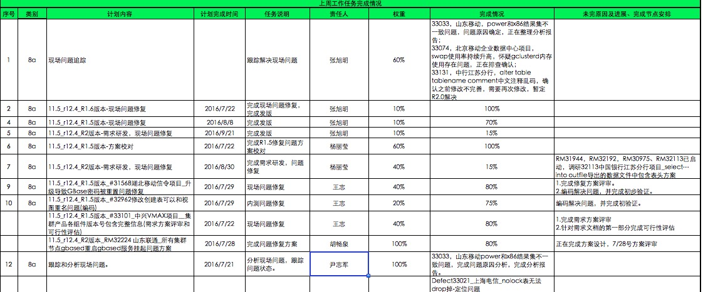 |
| 2016-07-23 11:55:51 | 你 | 你看旭明写的周报 |
| 2016-07-23 11:57:04 | 我 | 怎么啦 |
| 2016-07-23 11:57:22 | 你 | 完成情况和任务说明 |
| 2016-07-23 11:57:34 | 你 | 只有他们组的这么写 |
| 2016-07-23 11:57:47 | 我 | 等我开本看一下 |
| 2016-07-23 11:57:49 | 你 | 看任务4 |
| 2016-07-23 11:57:58 | 我 | 有问题你直接和旭明说吧 |
| 2016-07-23 11:58:21 | 你 | 首先 格式不整齐 其次 任务说明那么简单 完成情况整那么复杂 |
| 2016-07-23 11:58:43 | 你 | 我刚才跟旭明说了 杨丽颖觉得该这么写 我就没说啥 |
| 2016-07-23 11:58:54 | 你 | 跟 你 吐 槽！！ |
| 2016-07-23 11:59:34 | 我 | 完成情况你是说问题那一项吗 |
| 2016-07-23 12:00:10 | 你 | 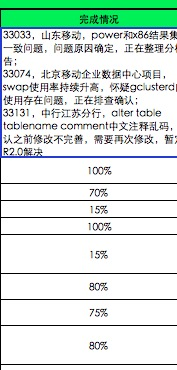 |
| 2016-07-23 12:00:13 | 我 | 最后一栏写的不对 |
| 2016-07-23 12:01:03 | 你 | 完成情况那一栏 都是百分数 |
| 2016-07-23 12:01:13 | 你 | 只有旭明他们写一堆字 |
| 2016-07-23 12:01:35 | 我 | 现场问题应对是这么写，以前我写的时候也是这样 |
| 2016-07-23 12:01:49 | 我 | 因为问题太多，每个都不一样 |
| 2016-07-23 12:02:00 | 你 | 哦 好吧 |
| 2016-07-23 12:02:04 | 你 | 那问题说明呢 |
| 2016-07-23 12:02:07 | 你 | 任务说明 |
| 2016-07-23 12:03:24 | 我 | 任务说明写错了，应该写送测内容，在完成情况里面写完成送测 |
| 2016-07-23 12:03:49 | 你 | 我不知道 |
| 2016-07-23 12:03:52 | 你 | 就这样吧 |
| 2016-07-23 12:03:56 | 你 | 没啥大事 |
| 2016-07-23 12:04:14 | 我 | 送测内容不应该放在最后一栏 |
| 2016-07-23 12:04:42 | 你 | 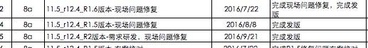 |
| 2016-07-23 12:05:14 | 你 | 我第一眼看 任务是在2016/8/8结束 怎么『任务说明』已经完成送测了 |
| 2016-07-23 12:05:30 | 你 | 这样写和容易让人觉得写错了 |
| 2016-07-23 12:06:43 | 我 | 8/8是发版时间 |
| 2016-07-23 12:06:57 | 我 | 是测试结束以后的时间 |
| 2016-07-23 12:07:42 | 你 | 没事了 |
| 2016-07-23 12:08:38 | 我 | 你没去吃饭？ |
| 2016-07-23 12:09:20 | 你 | 没呢 没人陪我 不想吃了 |
| 2016-07-23 12:09:33 | 我 | 啊 |
| 2016-07-23 12:10:01 | 我 | 领导没请你们吃饭吗 |
| 2016-07-23 12:10:15 | 你 | 没有 |
| 2016-07-23 12:10:19 | 你 | 懒得跟他吃 |
| 2016-07-23 12:10:31 | 你 | 旭明我们商量 都不想跟他吃 |
| 2016-07-23 12:10:35 | 你 | 就跟他说了 |
| 2016-07-23 12:11:02 | 我 | 哦 |
| 2016-07-23 12:11:26 | 我 | 我刚给旭明打电话，他们去吃饭了 |
| 2016-07-23 12:11:45 | 你 | shi |
| 2016-07-23 12:11:49 | 你 | 有事吗 |
| 2016-07-23 12:12:02 | 我 | 就是说说他的周报 |
| 2016-07-23 12:12:25 | 你 | 说啥了 |
| 2016-07-23 12:12:34 | 你 | 你说 不显得明显是我告状了 |
| 2016-07-23 12:12:45 | 我 | 没说，他吃饭呢，等回来再说 |
| 2016-07-23 12:12:57 | 你 | 别说了 |
| 2016-07-23 12:12:59 | 我 | 他怎么知道是你告状了 |
| 2016-07-23 12:13:02 | 你 | 你千万别说 |
| 2016-07-23 12:13:09 | 我 | 他的周报发给我了 |
| 2016-07-23 12:13:24 | 你 | 好吧 |
| 2016-07-23 12:13:28 | 你 | 那倒是 |
| 2016-07-23 12:13:45 | 我 | 我只不过是刚好现在在看 |
| 2016-07-23 12:13:50 | 你 | 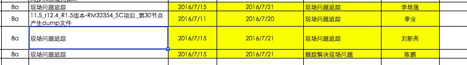 |
| 2016-07-23 12:13:53 | 我 | 今天严丹加班了吗 |
| 2016-07-23 12:13:57 | 你 | 这个时间合适ma |
| 2016-07-23 12:13:59 | 你 | 没有 |
| 2016-07-23 12:14:37 | 你 | 先不说了 我对象找我来了 |
| 2016-07-23 12:14:41 | 我 | 好 |
| 2016-07-23 12:14:45 | 你 | 等我 |
| 2016-07-23 12:55:18 | 你 | 我对象找我吃饭来了 我俩去吃黄焖鸡 竟然后来杨总也去了 |
| 2016-07-23 12:55:20 | 你 | 晕 |
| 2016-07-23 12:55:35 | 我 | |
| 2016-07-23 12:55:41 | 我 | 你们一起吃的吗 |
| 2016-07-23 12:55:45 | 你 | 不是 |
| 2016-07-23 12:55:53 | 你 | 那今天空调坏了 特别热 |
| 2016-07-23 12:56:04 | 你 | 赶他去 我们都吃得差不多了 |
| 2016-07-23 12:56:19 | 你 | 他跟黄东旭吧 |
| 2016-07-23 12:56:28 | 我 | 哦，领导和你打招呼了吗 |
| 2016-07-23 12:56:38 | 你 | 打了啊 当然得打了 |
| 2016-07-23 12:56:48 | 我 | 好的 |
| 2016-07-23 12:59:20 | 你 | 就这么凑巧 |
| 2016-07-23 12:59:47 | 我 | 等我，旭明电话 |
| 2016-07-23 12:59:54 | 我 | 说周报的事情 |
| 2016-07-23 12:59:59 | 你 | 恩 |
| 2016-07-23 13:17:20 | 我 | 打完了 |
| 2016-07-23 13:17:27 | 你 | 我知道 |
| 2016-07-23 13:17:29 | 我 | 20分钟 |
| 2016-07-23 13:17:35 | 你 | 是 |
| 2016-07-23 13:17:49 | 你 | 使劲说他 |
| 2016-07-23 13:18:07 | 我 | 是，太不上心了 |
| 2016-07-23 13:18:31 | 你 | 不过以前严丹也没说过 |
| 2016-07-23 13:19:10 | 我 | 严丹和我说过周报不好 |
| 2016-07-23 13:19:47 | 你 | 一组的每次整理时间最长 |
| 2016-07-23 13:20:05 | 我 | 一组的事情最多，人也多 |
| 2016-07-23 13:20:11 | 你 | 没事啊 |
| 2016-07-23 13:20:15 | 你 | 小事 |
| 2016-07-23 13:20:32 | 我 | 当初我整理的时候，至少要占我一天 |
| 2016-07-23 13:21:18 | 我 | 刚才你干什么了 |
| 2016-07-23 13:23:11 | 你 | 你打电话的时候吗 |
| 2016-07-23 13:23:23 | 我 | 嗯 |
| 2016-07-23 13:23:45 | 你 | 杨总回来了 |
| 2016-07-23 13:23:51 | 你 | 跟我说话 讲了个电影 |
| 2016-07-23 13:23:55 | 你 | 我都没听 |
| 2016-07-23 13:24:18 | 我 | 我听见你说话了，没听见他说话 |
| 2016-07-23 13:24:53 | 你 | 刚开始他说 我就这么跟我对象分开了 |
| 2016-07-23 13:25:01 | 你 | 就是无聊 聊着玩 |
| 2016-07-23 13:25:05 | 你 | 我也没记得 |
| 2016-07-23 13:25:10 | 我 | 嗯 |
| 2016-07-23 13:25:36 | 我 | 你的软需什么时候交 |
| 2016-07-23 13:28:36 | 你 | 我不知道 |
| 2016-07-23 13:28:48 | 你 | 胖子晕了 |
| 2016-07-23 13:28:54 | 我 | 咋啦 |
| 2016-07-23 13:29:08 | 你 | 洪越一个3个人周报 要写1一小时 |
| 2016-07-23 13:29:59 | 我 | 哦 |
| 2016-07-23 13:30:06 | 我 | 胖子说啥了 |
| 2016-07-23 13:30:11 | 你 | 他啥也没说 |
| 2016-07-23 13:30:18 | 你 | 跟杨丽颖问怎么写呢 |
| 2016-07-23 13:33:35 | 我 | 我都告诉他怎么写了 |
| 2016-07-23 13:33:47 | 我 | 怎么这么笨呢 |
| 2016-07-23 13:33:49 | 你 | 没事 正在写呢 |
| 2016-07-23 13:35:41 | 我 | 你忙吗 |
| 2016-07-23 13:36:54 | 你 | 还得忙会 |
| 2016-07-23 13:36:58 | 你 | 你等我会 |
| 2016-07-23 13:37:09 | 我 | 好 |
| 2016-07-23 14:30:01 | 你 | 7 单机版企业管理器生僻字显示空白问题修复 企业管理器 山西计生委项目 乔倩 60% |
| 2016-07-23 14:30:18 | 你 | 这个问题一周了 上周进度40% 这周60% |
| 2016-07-23 14:37:43 | 我 | 睡着了 |
| 2016-07-23 14:38:11 | 我 | 进度这个事情很难说 |
| 2016-07-23 14:38:15 | 你 | 睡吧 |
| 2016-07-23 14:38:24 | 我 | 咱们现在没有度量 |
| 2016-07-23 14:38:41 | 我 | 这样的情况只能默认了 |
| 2016-07-23 14:38:47 | 你 | 恩 |
| 2016-07-23 14:39:05 | 我 | 我其实一直想做度量 |
| 2016-07-23 14:39:24 | 我 | 但是我的思路和老杨 耿燕都不一样 |
| 2016-07-23 14:39:42 | 我 | 曾经试过，效果不好 |
| 2016-07-23 14:39:47 | 你 | 哦 |
| 2016-07-23 14:39:51 | 你 | 好吧 |
| 2016-07-23 14:39:52 | 我 | 这次看看scrum怎么样吧 |
| 2016-07-23 14:39:58 | 你 | 恩 好 |
| 2016-07-23 14:40:41 | 你 | 刚才杨丽颖跟旭明说你方案卡太紧 |
| 2016-07-23 14:40:46 | 你 | 要求太高 |
| 2016-07-23 14:40:49 | 你 | 偷着说的 |
| 2016-07-23 14:40:52 | 你 | 被我听到了 |
| 2016-07-23 14:41:01 | 我 | 我知道了 |
| 2016-07-23 14:41:14 | 你 | 说方案要求太高 时间短 他们快被逼死了 |
| 2016-07-23 14:41:33 | 我 | 最近杨丽莹在背后已经说了好多话 |
| 2016-07-23 14:42:04 | 我 | 以前她老说别人写的不认真，不好好写 |
| 2016-07-23 14:42:15 | 我 | 现在又说这种话 |
| 2016-07-23 14:43:00 | 你 | 是啊 |
| 2016-07-23 14:43:11 | 你 | 我感觉他说的挺严厉的 |
| 2016-07-23 14:43:22 | 我 | 怎么严厉 |
| 2016-07-23 14:43:33 | 你 | 胖子没说什么 主要是她说的 |
| 2016-07-23 14:44:07 | 你 | 她说胡畅泉那个项目 方案做那么久 后来证明做错了啥的 |
| 2016-07-23 14:44:21 | 你 | 而且他偷偷的跟旭明说话了 我没听到 |
| 2016-07-23 14:44:39 | 你 | 屋里当时就我和宋文斌还有他俩 |
| 2016-07-23 14:44:53 | 你 | 他可能是背着我 也可能是背着宋 |
| 2016-07-23 14:45:12 | 我 | 唉，你说的很对，她太不可靠了 |
| 2016-07-23 14:45:32 | 我 | 应该是背着宋 |
| 2016-07-23 14:45:39 | 你 | 我不知道 |
| 2016-07-23 14:45:45 | 我 | 她知道宋是我的死忠 |
| 2016-07-23 14:45:46 | 你 | 我挺反感她的 |
| 2016-07-23 14:45:56 | 你 | 现在越来越不喜欢 |
| 2016-07-23 14:46:03 | 我 | 我也一样 |
| 2016-07-23 14:46:08 | 你 | 我说的话没有任何水分 |
| 2016-07-23 14:46:13 | 你 | 她的原话 |
| 2016-07-23 14:46:30 | 我 | 从上次面谈以后就越来越不喜欢 |
| 2016-07-23 14:46:54 | 我 | 我是真没想到她会和旭明提畅泉的事情 |
| 2016-07-23 14:47:22 | 我 | 畅泉的事情刚开始没有让她管 |
| 2016-07-23 14:47:49 | 我 | 我让旭明管的，我没过问，结果旭明管的很差 |
| 2016-07-23 14:48:16 | 我 | 后来我才让杨丽莹去管的 |
| 2016-07-23 14:48:46 | 我 | 真没想到她会拿这个来说我 |
| 2016-07-23 14:49:24 | 你 | 这我就不知道了 |
| 2016-07-23 14:49:39 | 你 | 反正不管真的假的 你对她那么好 |
| 2016-07-23 14:49:47 | 你 | 他怎么一点不照顾你的感受呢 |
| 2016-07-23 14:49:50 | 我 | 我知道她为啥 |
| 2016-07-23 14:49:57 | 你 | 所以超级讨厌她 |
| 2016-07-23 14:50:04 | 你 | 这是原则的事 |
| 2016-07-23 14:50:07 | 我 | 今天中午我刚回了一个方案 |
| 2016-07-23 14:50:15 | 我 | 李培晟的 |
| 2016-07-23 14:50:29 | 我 | 昨天和旭明 杨丽莹讨论了半天 |
| 2016-07-23 14:50:52 | 我 | 我昨天说要他们把讨论的写在方案里 |
| 2016-07-23 14:51:22 | 你 | 然后呢 |
| 2016-07-23 14:51:24 | 我 | 今天我看没有写，回邮件的时候说的就严厉了点 |
| 2016-07-23 14:51:33 | 你 | 哦 |
| 2016-07-23 14:51:39 | 你 | 是吧 |
| 2016-07-23 14:52:09 | 我 | 最近R2的方案设计都延期了 |
| 2016-07-23 14:52:45 | 我 | R2我是让杨丽莹负责的 |
| 2016-07-23 14:53:13 | 我 | 所以她现在找借口，把责任推我身上 |
| 2016-07-23 14:54:17 | 你 | 哦 是啊 |
| 2016-07-23 14:54:47 | 我 | 现在她又蛊惑旭明 |
| 2016-07-23 14:54:48 | 你 | 这个东西 你说不行 不放肯定是有你的原因的 |
| 2016-07-23 14:55:02 | 你 | 他们根本不考虑 就说你管的严 |
| 2016-07-23 14:55:19 | 你 | 怎么提高 |
| 2016-07-23 14:55:22 | 我 | 是 |
| 2016-07-23 14:56:01 | 我 | 更何况这些方案中的问题都是我发现的 |
| 2016-07-23 14:56:19 | 你 | 是啊 |
| 2016-07-23 14:56:21 | 我 | 如果我不审核，这些问题就放过去了 |
| 2016-07-23 14:56:45 | 你 | 我不知道 你自己心里有数就行 |
| 2016-07-23 14:57:11 | 我 | 我自己心里有数，就是和你发发牢骚 |
| 2016-07-23 14:57:26 | 我 | 也就你能听得进去 |
| 2016-07-23 14:58:18 | 你 | 我在你手底下干活的话 也会有压力 但绝不是这样的 |
| 2016-07-23 14:58:20 | 你 | 我想 |
| 2016-07-23 14:58:52 | 我 | 嗯 |
| 2016-07-23 15:28:57 | 我 | 一组的周报你先别合呢，我正在改 |
| 2016-07-23 15:29:45 | 你 | hao |
| 2016-07-23 15:29:51 | 你 | 我现在写人力分解的呢 |
| 2016-07-23 15:29:58 | 我 | 好 |
| 2016-07-23 15:30:07 | 你 | 我跟你说的这些 你自己消化下 理性的安排 |
| 2016-07-23 15:30:17 | 你 | 我现在想会不会我说的太多了 |
| 2016-07-23 15:30:21 | 你 | 会影响你 |
| 2016-07-23 15:30:35 | 我 | 没有 |
| 2016-07-23 15:30:54 | 我 | 你说的这些对我来说帮助很大 |
| 2016-07-23 15:31:08 | 你 | 你先改周报吧 |
| 2016-07-23 15:31:16 | 我 | 你说的证明了我之前的猜想 |
| 2016-07-23 15:31:17 | 你 | 唉 |
| 2016-07-23 15:31:33 | 你 | 哦 我只是很看不惯杨丽颖那么对你 |
| 2016-07-23 15:31:35 | 我 | 你给我提供的是论据，不是论点 |
| 2016-07-23 15:54:08 | 我 | 改完了 |
| 2016-07-23 15:54:24 | 你 | 我看到了 |
| 2016-07-23 17:09:46 | 你 | 我刚写完了 |
| 2016-07-23 17:09:49 | 你 | 都发出去了 |
| 2016-07-23 17:09:58 | 我 | 好的，累了吧 |
| 2016-07-23 17:10:05 | 你 | 是啊 |
| 2016-07-23 17:10:08 | 你 | 有点 |
| 2016-07-23 17:10:15 | 你 | 这次比上次快了不少 |
| 2016-07-23 17:10:24 | 我 | 嗯 |
| 2016-07-23 17:10:42 | 我 | 别人都走了吗 |
| 2016-07-23 17:10:47 | 你 | 都走了 |
| 2016-07-23 17:11:02 | 我 | 你几点走 |
| 2016-07-23 17:11:06 | 你 | 不知道呢 |
| 2016-07-23 17:11:10 | 你 | 估计得七点了 |
| 2016-07-23 17:11:22 | 我 | 哦 |
| 2016-07-23 17:11:25 | 你 | 刚才杨总说我们完事了 给他校对下文档 |
| 2016-07-23 17:11:43 | 你 | 我先歇会 |
| 2016-07-23 17:11:45 | 我 | 让你给他校对吗 |
| 2016-07-23 17:11:51 | 你 | 王志新和我 |
| 2016-07-23 17:11:52 | 我 | 好的 |
| 2016-07-23 17:11:57 | 你 | 估计王志新还在弄 |
| 2016-07-23 17:12:01 | 你 | 哈哈 |
| 2016-07-23 17:12:21 | 你 | 我去看下 |
| 2016-07-23 17:43:41 | 你 | 回来了 |
| 2016-07-23 17:44:03 | 我 | 好的 |
| 2016-07-23 17:44:28 | 你 | 杨丽颖会跟你说旭明的坏话吗 |
| 2016-07-23 17:44:38 | 我 | 说过 |
| 2016-07-23 17:44:57 | 你 | 没准他比较喜欢说别人的坏话呢 |
| 2016-07-23 17:44:59 | 你 | 嘿嘿 |
| 2016-07-23 17:45:03 | 你 | 你也别想太多 |
| 2016-07-23 17:45:07 | 我 | 说旭明防着她 |
| 2016-07-23 17:45:21 | 你 | 我看旭明他们互动的挺好的 |
| 2016-07-23 17:45:23 | 你 | 唉 |
| 2016-07-23 17:45:48 | 我 | 呵呵 |
| 2016-07-23 17:45:49 | 你 | 你不投之以桃 何苦让别人报之以李呢 |
| 2016-07-23 17:46:09 | 你 | 我对象周一晚上又值班 |
| 2016-07-23 17:46:15 | 你 | 我打算去小宁那睡 |
| 2016-07-23 17:46:32 | 我 | 也好 |
| 2016-07-23 17:46:41 | 我 | 至少有个伴 |
| 2016-07-23 17:46:56 | 你 | 是啊 |
| 2016-07-23 17:47:48 | 你 | 你累吗 |
| 2016-07-23 17:47:52 | 你 | 快歇会吧 |
| 2016-07-23 17:48:01 | 我 | 不累呀 |
| 2016-07-23 17:48:12 | 你 | 我有点累 不跟你说了 |
| 2016-07-23 17:48:16 | 你 | 我走了 |
| 2016-07-23 17:48:19 | 我 | 好的 |
{kind=link}
{kind=link}
{kind=link}
{kind=link}
2016-07-25¶
| 2016-07-25 08:54:53 | 你 | 亲 廊坊下雨了吗 |
| 2016-07-25 08:55:05 | 你 | 到现在咱们屋就我和洪越两个人 |
| 2016-07-25 09:09:33 | 我 | 没有，我刚醒 |
| 2016-07-25 09:13:52 | 我 | 今天天津是不是又是大雨呀 |
| 2016-07-25 09:16:38 | 你 | 站立会开完了 |
| 2016-07-25 09:16:45 | 你 | 任务都done了 |
| 2016-07-25 09:16:51 | 我 | 好的 |
| 2016-07-25 09:16:58 | 你 | 番薯说把周报发给你了 你没回？ |
| 2016-07-25 09:17:01 | 你 | scrum的 |
| 2016-07-25 09:17:05 | 你 | 你看看收到没有 |
| 2016-07-25 09:17:13 | 我 | 我看到了 |
| 2016-07-25 09:17:24 | 你 | 反思会我说不开了 |
| 2016-07-25 09:17:31 | 你 | 你说呢 等下周你来了一起吧 |
| 2016-07-25 09:17:43 | 你 | 对我 周五可能请假 我爸爸要住院 |
| 2016-07-25 09:17:48 | 我 | 他发的有点晚了，昨天下午我去北京接我儿子，回来的太晚了 |
| 2016-07-25 09:18:00 | 我 | 啊，怎么了 |
| 2016-07-25 09:18:37 | 你 | 有点脑血栓 也不怎么严重 但是说想住院看看 我跟我姐打算周末回去看看他 |
| 2016-07-25 09:19:59 | 我 | 哦，是查出来的吗 |
| 2016-07-25 09:20:09 | 我 | 有什么症状吗 |
| 2016-07-25 09:21:12 | 你 | 他说有点头晕啥的 |
| 2016-07-25 09:21:14 | 你 | 也不怎么严重 |
| 2016-07-25 09:21:17 | 你 | 检查出来的 |
| 2016-07-25 09:21:33 | 你 | 脑补有一点点 颈部有点硬化 |
| 2016-07-25 09:21:59 | 我 | 还好 |
| 2016-07-25 09:22:36 | 我 | 不行你就多请两天，早点回去看看 |
| 2016-07-25 09:22:50 | 你 | 不用 我回去也不行 |
| 2016-07-25 09:22:57 | 你 | 看看得了 |
| 2016-07-25 09:23:09 | 你 | 没事 要是严重 我肯定得多请几天了 |
| 2016-07-25 09:23:30 | 我 | 好的 |
| 2016-07-25 09:24:09 | 我 | 他头晕有多久了 |
| 2016-07-25 09:24:25 | 你 | 到今天有5天了吧 |
| 2016-07-25 09:24:41 | 你 | 有一天晚上吐了 然后以为中暑了 |
| 2016-07-25 09:24:52 | 你 | 输了3天 也不管用 |
| 2016-07-25 09:25:02 | 你 | 昨天去医院检查去了 |
| 2016-07-25 09:25:57 | 我 | 定了哪天住院了吗 |
| 2016-07-25 09:27:41 | 你 | 不知道 |
| 2016-07-25 09:28:10 | 你 | 昨天从医院回来 医院开药了 在家输液呢 我姑姑们说让去医院 |
| 2016-07-25 09:29:00 | 我 | 应该开的是溶栓的药，还是去医院比较好 |
| 2016-07-25 09:29:46 | 你 | 恩 说去呢 |
| 2016-07-25 09:29:55 | 你 | 所以我想还是回家看看吧 |
| 2016-07-25 09:30:00 | 我 | 你们家医院的床位紧张吗 |
| 2016-07-25 09:30:11 | 你 | 不紧张吧 |
| 2016-07-25 09:30:21 | 你 | 这个不清楚 |
| 2016-07-25 09:30:39 | 你 | 我爸爸总是各种作 |
| 2016-07-25 09:30:44 | 你 | 我也是没办法 |
| 2016-07-25 09:31:28 | 你 | 上个班 用手砂轮把大腿磨了 磨个大口子 还没好利索 又把手碰了 缝了20多针 |
| 2016-07-25 09:31:45 | 你 | 手刚拆了药线 又血栓干了 |
| 2016-07-25 09:32:49 | 我 | 不是的 |
| 2016-07-25 09:33:24 | 我 | 磨口子可能和血栓有关 |
| 2016-07-25 09:33:44 | 我 | 很可能当时他头晕，只是自己不知道 |
| 2016-07-25 09:33:55 | 你 | 这个不知道 |
| 2016-07-25 09:34:05 | 你 | 等回家看看吧 |
| 2016-07-25 09:34:11 | 我 | 是 |
| 2016-07-25 09:34:19 | 你 | 昨天跟他视频 好好的 就是有点虚弱 |
| 2016-07-25 09:34:28 | 我 | 你爸多大了 |
| 2016-07-25 09:34:30 | 你 | 脑子也没不清楚 |
| 2016-07-25 09:34:42 | 你 | 属鸡的 |
| 2016-07-25 09:34:43 | 我 | 估计是吓的吧 |
| 2016-07-25 09:34:44 | 你 | 48了吧 |
| 2016-07-25 09:34:56 | 你 | 手碰了都3个月了 |
| 2016-07-25 09:35:13 | 你 | 他就是愣愣聪聪的 |
| 2016-07-25 09:35:19 | 你 | 自己也不注意 |
| 2016-07-25 09:35:26 | 你 | 吃饭也不注意 |
| 2016-07-25 09:35:31 | 你 | 喝酒抽烟 |
| 2016-07-25 09:35:38 | 我 | 性格如此 |
| 2016-07-25 09:36:05 | 你 | 干活毛手毛脚 |
| 2016-07-25 09:36:07 | 你 | 的 |
| 2016-07-25 09:36:26 | 你 | 他前边干着 我们都得后边给他收拾烂摊子 |
| 2016-07-25 09:36:50 | 你 | 还糖尿病 |
| 2016-07-25 09:37:13 | 你 | 不过他再不济 也是我爸爸 很爱很爱我俩的 哈哈 |
| 2016-07-25 09:37:50 | 我 | [微笑] |
| 2016-07-25 09:38:11 | 你 | 所以我说归说 好歹让他有个忌讳 |
| 2016-07-25 09:38:18 | 你 | 平时该惦记惦记 |
| 2016-07-25 09:38:23 | 我 | 嗯 |
| 2016-07-25 09:38:34 | 你 | 他从小被宠着 |
| 2016-07-25 09:39:04 | 你 | 我都习惯了 但是不能总给好脸色 不然就更不知道天高地厚了 |
| 2016-07-25 09:39:37 | 你 | 我现在一想起他来 就是一堆的毛病 哈哈 可是还觉得挺可爱的 |
| 2016-07-25 09:39:38 | 我 | |
| 2016-07-25 09:39:53 | 你 | 要是吃过什么好吃的 总想着给他带点 |
| 2016-07-25 09:40:56 | 你 | Mac 自带的这个邮箱 怎么自动添加主题啊 |
| 2016-07-25 09:41:52 | 我 | 好像不能 |
| 2016-07-25 09:42:02 | 你 | 网页版的就可以 |
| 2016-07-25 09:42:22 | 你 | 我自己写吧 |
| 2016-07-25 09:43:50 | 我 | sprint review 会议什么时候开？ |
| 2016-07-25 09:44:04 | 你 | 一会就开应该 |
| 2016-07-25 09:44:18 | 你 | 我们说好了 等番薯叫我们 |
| 2016-07-25 09:45:48 | 我 | 好的 |
| 2016-07-25 10:05:22 | 我 | 周报发了 |
| 2016-07-25 10:05:42 | 我 | 周会开完了吗 |
| 2016-07-25 10:06:48 | 你 | meine |
| 2016-07-25 10:06:53 | 你 | 还在开 |
| 2016-07-25 10:07:38 | 我 | 好的 |
| 2016-07-25 10:16:00 | 我 | 有空吗？问你个事情 |
| 2016-07-25 10:16:09 | 你 | 有空 |
| 2016-07-25 10:16:10 | 你 | 说吧 |
| 2016-07-25 10:19:07 | 你 | 怎么了 |
| 2016-07-25 10:19:24 | 我 | 周报里面研发一组的任务是你总结的吗？ |
| 2016-07-25 10:19:47 | 你 | 你说总得任务清单吗 |
| 2016-07-25 10:19:51 | 你 | 第一页的 |
| 2016-07-25 10:20:03 | 我 | 对 |
| 2016-07-25 10:20:07 | 你 | 等回 转邮件给你 |
| 2016-07-25 10:20:12 | 你 | 都是严丹让改的 |
| 2016-07-25 10:20:13 | 我 | 我看一组只有3个 |
| 2016-07-25 10:20:55 | 我 | 哦 |
| 2016-07-25 10:21:39 | 你 | 不是吧 本周的有2行 一行3个 一行2个 |
| 2016-07-25 10:22:03 | 你 | 一组上周也挺少的 |
| 2016-07-25 10:22:09 | 你 | 好像问题的都没写 |
| 2016-07-25 10:22:15 | 你 | 只有例行发版的 |
| 2016-07-25 10:23:28 | 我 | 好的。 我知道了 |
| 2016-07-25 10:23:39 | 你 | 恩 好 |
| 2016-07-25 10:23:52 | 你 | 不过问题的好像也有一行 |
| 2016-07-25 10:24:37 | 我 | 算了，下周我给他们改吧 |
| 2016-07-25 10:24:40 | 你 | 马姐说他以后不想参加站立会了 |
| 2016-07-25 10:25:07 | 我 | 为啥 |
| 2016-07-25 10:25:20 | 你 | 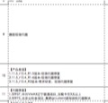 |
| 2016-07-25 10:25:30 | 你 | 就这么点 |
| 2016-07-25 10:25:40 | 你 | 他说没她的事 |
| 2016-07-25 10:25:44 | 你 | 我觉得可以 |
| 2016-07-25 10:26:09 | 你 | 除了站立会 其他会都参加行吗 |
| 2016-07-25 10:26:13 | 我 | 算了，随她吧 |
| 2016-07-25 10:26:20 | 你 | 是 |
| 2016-07-25 10:26:21 | 我 | 其实她的事情很多 |
| 2016-07-25 10:26:23 | 你 | 我觉得是 |
| 2016-07-25 10:26:26 | 你 | 是呢 |
| 2016-07-25 10:26:29 | 我 | 只是她自己不懂 |
| 2016-07-25 10:26:39 | 你 | 哈哈 |
| 2016-07-25 10:27:26 | 我 | 你今天忙吗 |
| 2016-07-25 10:27:53 | 我 | 我今天上午有空陪你，下午估计就没空了 |
| 2016-07-25 10:28:00 | 你 | 写软需 |
| 2016-07-25 10:29:31 | 你 | 测试的测出bug了好像 |
| 2016-07-25 10:29:32 | 你 | 你们的 |
| 2016-07-25 10:29:39 | 你 | 周会还没完呢 |
| 2016-07-25 10:29:54 | 我 | 知道是哪个版本的吗？ |
| 2016-07-25 10:30:15 | 你 | 26号送测的 1.5吧 |
| 2016-07-25 10:30:41 | 你 | 32733 网卡重启导致集群节点不可用 |
| 2016-07-25 10:30:50 | 我 | 知道了 |
| 2016-07-25 10:30:53 | 你 | 26号发版 |
| 2016-07-25 10:31:10 | 你 | 现在旭明和杨丽影正在看 |
| 2016-07-25 10:31:13 | 我 | 这个是旭明改的 |
| 2016-07-25 10:31:18 | 我 | 没有方案 |
| 2016-07-25 10:31:21 | 你 | 是 |
| 2016-07-25 10:32:19 | 我 | 让他们去折腾吧 |
| 2016-07-25 10:32:59 | 你 | 恩 |
| 2016-07-25 10:38:35 | 你 | 旭明刚才说不是他改的问题 |
| 2016-07-25 10:38:38 | 你 | 是测试的问题 |
| 2016-07-25 10:46:54 | 我 | 好的 |
| 2016-07-25 11:01:49 | 我 | 今天天津是下雨了吗 |
| 2016-07-25 11:02:03 | 你 | 是 |
| 2016-07-25 11:02:05 | 你 | 很阴 |
| 2016-07-25 11:02:29 | 你 | 你今天下午不回天津吗 |
| 2016-07-25 11:05:48 | 我 | 我晚上回去 |
| 2016-07-25 11:05:52 | 我 | 7点的车 |
| 2016-07-25 11:05:55 | 我 | 明天去上班 |
| 2016-07-25 11:06:11 | 我 | 今天下午事情太多 |
| 2016-07-25 11:27:14 | 你 | 刚才看去了 |
| 2016-07-25 11:27:21 | 你 | review |
| 2016-07-25 11:27:24 | 你 | 断网的不行 |
| 2016-07-25 11:27:30 | 你 | kill进程的可以 |
| 2016-07-25 11:27:40 | 你 | 说zookeeper部署的不对 |
| 2016-07-25 11:27:42 | 你 | 我真服了 |
| 2016-07-25 11:34:06 | 我 | 唉 |
| 2016-07-25 11:34:15 | 我 | 在我意料之中 |
| 2016-07-25 11:34:19 | 我 | 就这样吧 |
| 2016-07-25 11:34:36 | 你 | 我觉得他们只做了kill进程的 |
| 2016-07-25 11:34:42 | 你 | 断电断网的都没做 |
| 2016-07-25 11:34:50 | 我 | 是 |
| 2016-07-25 11:35:02 | 我 | 这就是现在研发的习惯 |
| 2016-07-25 11:35:08 | 你 | 不然断网的都不知道怎么断 |
| 2016-07-25 11:35:20 | 你 | 现场问得 |
| 2016-07-25 11:36:25 | 我 | 唉 |
| 2016-07-25 12:01:22 | 你 | 已经不下了 |
| 2016-07-25 12:01:23 | 你 | 超级潮湿 |
| 2016-07-25 12:12:41 | 我 | 嗯 |
| 2016-07-25 15:04:10 | 你 | 亲 他们现在还在改 我晕 |
| 2016-07-25 15:04:20 | 你 | 番薯他们 |
| 2016-07-25 15:04:35 | 我 | 改什么 |
| 2016-07-25 15:04:55 | 你 | 改今天应该交付的 第一个sprint的功能啊 |
| 2016-07-25 15:05:08 | 你 | 这是非等你周二来反思会的节奏啊 |
| 2016-07-25 15:05:15 | 我 | 😄 |
| 2016-07-25 15:05:29 | 我 | 我就知道他们会这样 |
| 2016-07-25 15:05:55 | 我 | 这样也好，至少他们会意识到哪有问题 |
| 2016-07-25 15:06:29 | 你 | 就是 你没看见 今早上他们信誓旦旦的样子 |
| 2016-07-25 15:06:34 | 你 | 一个个拽的不行 |
| 2016-07-25 15:06:40 | 你 | 结果一测 出问题了 |
| 2016-07-25 15:06:46 | 你 | 番薯也是得瑟 |
| 2016-07-25 15:07:38 | 我 | 说实话，除了我，这边的研发都是这个样子的。就是程度不同而已 |
| 2016-07-25 15:08:05 | 你 | 哈哈 |
| 2016-07-25 15:08:10 | 你 | 你们这边也是嘛 |
| 2016-07-25 15:08:18 | 我 | 是的 |
| 2016-07-25 15:08:26 | 我 | 胖子就很典型 |
| 2016-07-25 15:08:27 | 你 | 我姐说他们那边的研发也是 刚开始根本不理需求的 |
| 2016-07-25 15:08:37 | 你 | 后来都被整服了 |
| 2016-07-25 15:08:40 | 你 | 是 |
| 2016-07-25 15:08:47 | 我 | 大家都一样 |
| 2016-07-25 15:08:55 | 你 | 胖子得瑟的很明显 不单单是研发这一点上 |
| 2016-07-25 15:08:58 | 你 | 各个点上 |
| 2016-07-25 15:09:01 | 你 | 不够成熟 |
| 2016-07-25 15:09:03 | 我 | 天下乌鸦一般黑😄 |
| 2016-07-25 15:09:49 | 你 | 哈哈 |
| 2016-07-25 15:15:32 | 你 | 你忙吗 |
| 2016-07-25 15:35:08 | 我 | 是，正在陪儿子上课 |
| 2016-07-25 15:35:16 | 我 | 有事吗 |
| 2016-07-25 15:35:18 | 你 | 上吧 |
| 2016-07-25 15:35:19 | 你 | 没事 |
| 2016-07-25 15:35:27 | 我 | 好的 |
| 2016-07-25 17:32:40 | 我 | 回来了，还得去赶7点的火车 |
| 2016-07-25 17:42:28 | 你 | 我要崩溃了 |
| 2016-07-25 17:42:34 | 你 | 你快回来吧 |
| 2016-07-25 17:43:12 | 我 | 啊，怎么啦 |
| 2016-07-25 17:43:49 | 你 | 我晕 刘杰在那逼逼 我都听不下去了 |
| 2016-07-25 17:44:02 | 你 | 你看看他们分的task吧 我懒得听了 |
| 2016-07-25 17:44:31 | 我 | 他们没有发给我 |
| 2016-07-25 17:44:36 | 你 | 还没完呢 |
| 2016-07-25 17:44:43 | 我 | 明天等我去再说吧 |
| 2016-07-25 17:45:34 | 你 | 气死我了 |
| 2016-07-25 17:46:52 | 我 | 别生气啦 |
| 2016-07-25 17:47:13 | 我 | 你别管了，让他们自己玩去 |
| 2016-07-25 17:47:34 | 我 | 等明天我回去咱们再一起玩 |
| 2016-07-25 17:48:23 | 你 | 她不是不对内容负责吗 究竟怎么分她说了算吗 |
| 2016-07-25 17:48:49 | 我 | 当然不算了 |
| 2016-07-25 17:49:00 | 我 | 她以前用过scrum |
| 2016-07-25 17:49:09 | 我 | 也做过研发管理 |
| 2016-07-25 17:49:10 | 你 | 本来大家都挺乱的 现在一个新的开始了 内容还挺熟悉 还不锻炼锻炼 |
| 2016-07-25 17:49:42 | 你 | 现在可好 你知道他们说什么吗 分了任务 然后为这个任务生拉硬拽一个完成标准 |
| 2016-07-25 17:49:50 | 你 | 我晕 做这个测试有嘛用 |
| 2016-07-25 17:49:53 | 你 | 你说呢 |
| 2016-07-25 17:49:56 | 你 | 是这样的吗 |
| 2016-07-25 17:50:00 | 我 | 我在还好，我不在这次她就越界了 |
| 2016-07-25 17:50:13 | 我 | 别生气了 |
| 2016-07-25 17:50:22 | 你 | 就她在那说 要是不懂就别说 说了能算吗 |
| 2016-07-25 17:50:40 | 我 | 等我明天回去立会上再说 |
| 2016-07-25 17:50:56 | 我 | 你今天没说吗 |
| 2016-07-25 17:50:58 | 你 | 你说研发那种测试的思想 我觉得就挺难的 上次好不容易拉回点来了 别他一搞全回去了 |
| 2016-07-25 17:51:19 | 你 | 那容许我说话啊 |
| 2016-07-25 17:51:27 | 你 | 她的说 她说了算 |
| 2016-07-25 17:51:28 | 我 | 没事的，有我在，他们翻不起大浪 |
| 2016-07-25 17:51:44 | 你 | 还说明天站立会都不一定开 开不开也不是她说了算 |
| 2016-07-25 17:51:48 | 你 | 气死我了 |
| 2016-07-25 17:51:54 | 我 | 好了好了 |
| 2016-07-25 17:51:56 | 你 | 真不知道自己该干啥 |
| 2016-07-25 17:51:59 | 我 | 别生气了 |
| 2016-07-25 17:52:32 | 我 | 为这事气到你太不值了 |
| 2016-07-25 17:52:41 | 你 | 恩 不生气了 |
| 2016-07-25 17:52:51 | 你 | 刚才挺气愤的 |
| 2016-07-25 17:54:03 | 你 | 番薯他们 早上一测断网就over了 你说说 断电断网啥时候都跟他们说了 现在都到交付的时候 连测都没测 |
| 2016-07-25 17:54:14 | 你 | 整出来kfk不可用 啥的 |
| 2016-07-25 17:54:17 | 你 | 都是shit |
| 2016-07-25 17:54:23 | 我 | 好了 |
| 2016-07-25 17:54:33 | 我 | 别生气了 |
| 2016-07-25 17:54:41 | 我 | 他们哪有你那么厉害 |
| 2016-07-25 17:54:50 | 我 | 也没有你那么负责 |
| 2016-07-25 17:54:53 | 你 | 问题太多 我不想管了 你也别管了 |
| 2016-07-25 17:55:06 | 我 | 我想你姐一定和你一样 |
| 2016-07-25 17:55:19 | 我 | 才会和研发打架 |
| 2016-07-25 17:55:28 | 你 | 我哪有我姐那底气啊 |
| 2016-07-25 17:55:44 | 我 | 这是因为有我，要是没有你估计也和他们打了 |
| 2016-07-25 17:56:00 | 你 | 没有你 我更不会跟他们打了 |
| 2016-07-25 17:56:08 | 你 | 工期的事 我说了不算 |
| 2016-07-25 17:56:13 | 你 | 没人听我的 |
| 2016-07-25 17:56:33 | 你 | 连刘杰都能说三到四的 我今天对她真是见识了 |
| 2016-07-25 17:56:41 | 你 | 有她嘛事 |
| 2016-07-25 17:57:13 | 我 | 你看，刘杰来的第一天我就说不是省油的灯，没说错吧 |
| 2016-07-25 17:57:46 | 你 | 是 |
| 2016-07-25 17:57:58 | 你 | 没想到是个这么多事的姑娘 |
| 2016-07-25 17:58:21 | 你 | 我得列列研发的十宗罪 |
| 2016-07-25 17:58:31 | 我 | 好，明天发给我 |
| 2016-07-25 17:58:59 | 你 | 你先看看他们分的task吧 |
| 2016-07-25 17:59:31 | 我 | 好的 |
{kind=link}
2016-07-26¶
| 2016-07-26 08:36:31 | 你 | 写新故事都是刘杰说的 |
| 2016-07-26 08:36:46 | 我 | 知道了 |
| 2016-07-26 08:37:21 | 你 | 我本来坚持让他们做读写分开的 然后他们找各种理由 |
| 2016-07-26 08:37:28 | 你 | 刘杰一直说不行啥的 |
| 2016-07-26 08:37:36 | 你 | 非得让我找新故事 |
| 2016-07-26 08:37:41 | 你 | 恨死她了 |
| 2016-07-26 08:38:41 | 我 | 知道了 |
| 2016-07-26 08:38:55 | 你 | 给你说个小细节 |
| 2016-07-26 08:39:14 | 你 | 昨天早上她才知道我是PO的 让后对我就是各种阴阳怪气 |
| 2016-07-26 08:39:20 | 你 | 我知道她心里想什么 |
| 2016-07-26 08:39:30 | 你 | 我也没搭理她 |
| 2016-07-26 08:39:35 | 我 | 嗯 |
| 2016-07-26 08:39:52 | 你 | 反正说了很多不改他说的话 |
| 2016-07-26 08:40:29 | 你 | 后来就是评审会上 很意外的举动 我也没给他好脸色 后来他一直说 我只是管过程的 我不管你们内容是啥 |
| 2016-07-26 08:40:37 | 你 | 我估计他看出我不高兴来了 |
| 2016-07-26 08:40:52 | 你 | 后来我就走了 我说这个会 不需要我参加 我走了 |
| 2016-07-26 08:41:21 | 我 | 明白了 |
| 2016-07-26 08:41:29 | 我 | 现在有个大问题 |
| 2016-07-26 08:41:37 | 你 | 怎么了 |
| 2016-07-26 08:42:10 | 我 | PO reject了，而且是架构原因，后面做这些其实是没有意义的 |
| 2016-07-26 08:42:23 | 我 | 现在应该重点是搞好架构 |
| 2016-07-26 08:42:30 | 我 | 给用户一个可以演示的 |
| 2016-07-26 08:42:54 | 你 | 那就换别的技术呗 |
| 2016-07-26 08:43:06 | 你 | kfk不行 |
| 2016-07-26 08:43:08 | 我 | 对呀，所以现在不能做数据类型 |
| 2016-07-26 08:43:17 | 我 | 要先换架构 |
| 2016-07-26 08:43:35 | 你 | 换呗 接着这个做 |
| 2016-07-26 08:45:05 | 你 | 调研调研其他技术 |
| 2016-07-26 08:46:00 | 我 | 这个是老杨指定的，我再看看吧 |
| 2016-07-26 08:49:10 | 你 | kill进程的可以 |
| 2016-07-26 08:49:25 | 我 | 知道了 |
| 2016-07-26 08:49:45 | 我 | 我正在看kafka的资料 |
| 2016-07-26 08:50:11 | 我 | 别人丢数据的场景和他们的不一样 |
| 2016-07-26 08:50:25 | 你 | 你先看吧 我不打扰你了 |
| 2016-07-26 08:50:30 | 你 | 这个比较重要 |
| 2016-07-26 08:50:31 | 我 | 嗯 |
| 2016-07-26 09:32:07 | 我 | 昨天一天我的流量用了100多[流泪] |
| 2016-07-26 09:41:03 | 你 | 哈哈 |
| 2016-07-26 09:41:15 | 你 | 没事，开发这边也没事 |
| 2016-07-26 09:41:20 | 你 | 接着做吧 |
| 2016-07-26 09:41:28 | 我 | 亲你去哪了 |
| 2016-07-26 11:33:55 | 我 | 亲，今天我说你你不高兴了？ |
| 2016-07-26 11:37:19 | 你 | 没有啊 |
| 2016-07-26 11:37:20 | 你 | 很高兴 |
| 2016-07-26 11:37:25 | 你 | 完全没有 |
| 2016-07-26 11:37:32 | 你 | 我只是不知道怎么干活 |
| 2016-07-26 11:37:38 | 你 | 你就使劲说我吧 我没事的 |
| 2016-07-26 11:38:08 | 我 | 我可舍不得 |
| 2016-07-26 13:23:00 | 我 | 醒了？ |
| 2016-07-26 13:23:16 | 你 | 恩 |
| 2016-07-26 13:23:26 | 你 | 困 |
| 2016-07-26 13:23:40 | 我 | 再歇会吧，反正也没事 |
| 2016-07-26 13:24:01 | 你 | 算了 |
| 2016-07-26 13:24:09 | 你 | 晚上再睡吧 |
| 2016-07-26 13:24:20 | 我 | 你几点去打球 |
| 2016-07-26 13:24:24 | 你 | 敏捷好难啊 |
| 2016-07-26 13:25:24 | 我 | 是，我以前说过 |
| 2016-07-26 13:25:35 | 你 | 是 |
| 2016-07-26 13:25:36 | 我 | 比你们想象的要难得多 |
| 2016-07-26 13:25:43 | 你 | 以前没体会这么大 |
| 2016-07-26 13:26:23 | 我 | 我和你们的区别就是我既吃过猪肉也见过猪跑 |
| 2016-07-26 13:26:41 | 你 | 哈哈 |
| 2016-07-26 13:26:56 | 你 | 这个团队包含了开发过程中的各种角色, 而这些角色在其本职工作的能力上是平均水平以上的. 这样的要求其实是一个敏捷开发的缺点, 也就是说基础条件较高. |
| 2016-07-26 13:27:17 | 我 | 没错 |
| 2016-07-26 13:27:34 | 我 | 之前我曾经反复提过这个 |
| 2016-07-26 13:28:21 | 你 | 1、项目组的技术牛人比较多，又或者说对项目的类似经验特别丰富，无需新学习业务知识（新手多千万别用） 2、项目有一个比较好的设计架构，尤其在设计之初就考虑好一些关键性的问题，比如：性能…（曾经项目组在这上面栽了大跟头） 3、团队成员的自觉性，又或者为职业操守（每天不是为了工资而在工作） 4、项目Leader的团队领导能力，而不是管理能力（有人可能还区分不清这二者的区别吧） 5、公司领导以及PMO项目管理人员的支持，以及他们对敏捷开发是否真正理解 6、项目的客户理解与配合 …. |
| 2016-07-26 13:28:31 | 我 | 反过来说如果我们这次能做成，那么每个人的提高都不会小 |
| 2016-07-26 13:28:40 | 你 | 看来这个人也栽过不少跟头 |
| 2016-07-26 13:28:54 | 我 | 太多了 |
| 2016-07-26 13:29:05 | 你 | 哈哈 |
| 2016-07-26 13:29:25 | 我 | 我觉得现在这里面收获最大的就是你了 |
| 2016-07-26 13:30:18 | 你 | 是吗 我现在还不是收获的时候 |
| 2016-07-26 13:30:24 | 你 | 还在收获中 |
| 2016-07-26 13:30:47 | 我 | 肯定的，就你最主动 |
| 2016-07-26 13:30:55 | 我 | 最有责任心 |
| 2016-07-26 13:31:12 | 你 | 我啥也不会 |
| 2016-07-26 13:31:19 | 你 | 得积极学习 |
| 2016-07-26 13:31:57 | 我 | 有个事情和你说一下 |
| 2016-07-26 13:32:16 | 我 | 你经常会越界 |
| 2016-07-26 13:32:50 | 你 | 恩 |
| 2016-07-26 13:33:01 | 你 | 管到研发去是吗 |
| 2016-07-26 13:33:06 | 我 | 本身这事没什么，只不过你资历太浅，又爱着急，说话又比较冲 |
| 2016-07-26 13:33:29 | 你 | 嗯嗯 我以后少说话 先多听 |
| 2016-07-26 13:33:33 | 我 | 我今天能看出来你着急了 |
| 2016-07-26 13:33:37 | 你 | 憋不住 |
| 2016-07-26 13:33:51 | 你 | 你不在的时候 我才着急呢 不知道干啥 |
| 2016-07-26 13:34:00 | 我 | 我告诉你吧 |
| 2016-07-26 13:34:02 | 你 | 好 我接受你的意见 |
| 2016-07-26 13:34:25 | 我 | 以后出现这种情况，你先想想我会怎么做 |
| 2016-07-26 13:34:42 | 我 | 等我做的时候你多体会我做的原因 |
| 2016-07-26 13:35:01 | 你 | 恩 |
| 2016-07-26 13:35:05 | 我 | 一般我都会仔细把原因讲给你听的 |
| 2016-07-26 13:35:11 | 你 | 我知道 |
| 2016-07-26 13:35:16 | 我 | 结果并不重要 |
| 2016-07-26 13:35:21 | 你 | 我都注意到了 |
| 2016-07-26 13:35:23 | 我 | 重要的是过程 |
| 2016-07-26 13:35:27 | 你 | 是 |
| 2016-07-26 13:35:39 | 我 | 这样你就不会着急了 |
| 2016-07-26 13:35:58 | 你 | 你今早上一来 站立会的时候说的都是给我听的 |
| 2016-07-26 13:36:07 | 我 | 是 |
| 2016-07-26 13:36:15 | 你 | 就是出现什么状况的时候 做什么事的原则 |
| 2016-07-26 13:36:29 | 你 | 做什么事的内容不重要 但是要掌握原则 |
| 2016-07-26 13:36:38 | 我 | 没错 |
| 2016-07-26 13:36:45 | 你 | 然后才是原则在具体case上的应用 |
| 2016-07-26 13:37:05 | 你 | 其实8tto8a只是我们试验scrum的载体 |
| 2016-07-26 13:37:21 | 你 | 我们也关注结果 但更关注整个开发过程 |
| 2016-07-26 13:37:33 | 我 | 是 |
| 2016-07-26 13:38:04 | 你 | 你今天说的那句 『要把今天遇到的这种情况，在scrum的框架中解决』 |
| 2016-07-26 13:38:14 | 你 | 其实也不是在说内容 |
| 2016-07-26 13:38:49 | 你 | 也是在说一类的问题 而且再说这类问题出现时 我们如何达成共识 如何解决问题的原则 |
| 2016-07-26 13:39:04 | 你 | 而不是解决KFK这件事本身 |
| 2016-07-26 13:39:09 | 我 | 对 |
| 2016-07-26 13:39:27 | 我 | 这些才是真正的经验 |
| 2016-07-26 13:39:37 | 你 | 后来你指导的master就比较多了 |
| 2016-07-26 13:39:47 | 你 | 一直再说番薯 |
| 2016-07-26 13:39:51 | 我 | 不是 |
| 2016-07-26 13:39:52 | 你 | 不是说 |
| 2016-07-26 13:40:04 | 你 | 是告诉他如何做 |
| 2016-07-26 13:40:09 | 你 | 怎么做 |
| 2016-07-26 13:40:20 | 你 | 其实番薯都不懂 他跟我一样 |
| 2016-07-26 13:40:22 | 你 | 哈哈 |
| 2016-07-26 13:40:31 | 你 | 赶鸭子上架 |
| 2016-07-26 13:40:37 | 我 | 我其实是告诉你 |
| 2016-07-26 13:40:55 | 我 | 我希望你什么都学，不知是PO |
| 2016-07-26 13:41:20 | 你 | 恩 知道了 |
| 2016-07-26 13:41:33 | 我 | 只是当时的情况我冲你说太明显了 |
| 2016-07-26 13:41:35 | 你 | 我要是学会了 也能指导他们 |
| 2016-07-26 13:41:40 | 我 | 对呀 |
| 2016-07-26 13:41:42 | 你 | 恩 知道了 |
| 2016-07-26 13:41:54 | 我 | 我希望你以后是一个全才 |
| 2016-07-26 13:42:27 | 我 | 未来你自己主事的时候不一定有那么理想的环境 |
| 2016-07-26 13:42:46 | 我 | 你自己能够知道处理的原则 |
| 2016-07-26 13:42:48 | 你 | 恩 |
| 2016-07-26 13:42:50 | 你 | 好 |
| 2016-07-26 13:42:52 | 你 | 我记住了 |
| 2016-07-26 13:43:28 | 我 | 除了纯技术的东西，其他的东西你都可以学 |
| 2016-07-26 13:43:45 | 你 | 嗯嗯 我知道了 |
| 2016-07-26 13:44:47 | 你 | 等我一会 |
| 2016-07-26 13:45:04 | 你 | 我还想跟你讨论呢 我回下刘杰的邮件 |
| 2016-07-26 15:04:52 | 我 | 我去送我儿子，待会回来 |
| 2016-07-26 15:08:20 | 你 | 去哪送啊 |
| 2016-07-26 15:08:29 | 你 | 你在哪呢 |
| 2016-07-26 15:08:34 | 你 | 我开车了 可以送你去 |
| 2016-07-26 15:08:58 | 我 | 不用，我妹送我儿子来的 |
| 2016-07-26 15:09:10 | 你 | 哦 好吧 |
| 2016-07-26 15:09:14 | 你 | 送到火车吗 |
| 2016-07-26 15:09:36 | 我 | 对 |
| 2016-07-26 15:09:43 | 你 | 好 |
| 2016-07-26 16:15:06 | 我 | 回来了 |
| 2016-07-26 16:15:16 | 你 | 快回来吧 |
| 2016-07-26 16:15:18 | 你 | 想死你了 |
| 2016-07-26 16:15:19 | 你 | 哈哈 |
| 2016-07-26 16:15:33 | 我 | 出啥事了 |
| 2016-07-26 16:16:13 | 你 | 没事 |
| 2016-07-26 16:16:19 | 你 | 没事就不能想你啦 |
| 2016-07-26 16:16:37 | 我 | 可以呀 |
| 2016-07-26 16:16:56 | 我 | 怕他们又找事欺负你 |
| 2016-07-26 16:19:20 | 你 | 没事 |
| 2016-07-26 16:19:31 | 我 | 好的 |
| 2016-07-26 16:19:41 | 我 | 刚才怎么撅嘴了 |
| 2016-07-26 16:23:42 | 你 | 讨厌王洪越 |
| 2016-07-26 16:23:55 | 我 | 他又欺负你了 |
| 2016-07-26 16:24:35 | 你 | 他想 没给他机会 |
| 2016-07-26 16:24:40 | 你 | 就是找事 |
| 2016-07-26 16:24:59 | 我 | 好，就是不能给他机会 |
| 2016-07-26 16:25:07 | 你 | 说软需的异常过程 |
| 2016-07-26 16:25:21 | 你 | 自己不好好看 说我写的不清楚 |
| 2016-07-26 16:25:28 | 你 | 自己给自己打脸 |
| 2016-07-26 16:25:42 | 我 | 哈哈，狠狠打 |
| 2016-07-26 16:25:50 | 你 | 就是 |
| 2016-07-26 16:25:59 | 你 | 反正这种人也没脸 |
| 2016-07-26 16:26:04 | 你 | 今天已经三次了 |
| 2016-07-26 16:26:09 | 你 | 自己打自己的脸 |
| 2016-07-26 16:26:16 | 我 | 嗯 |
| 2016-07-26 16:27:13 | 我 | 亲，我要重启一下路由器 |
| 2016-07-26 16:27:18 | 你 | 好 |
| 2016-07-26 16:27:23 | 你 | 起吧 |
| 2016-07-26 16:32:17 | 我 | 重启完了，你把wifi换回来吧 |
| 2016-07-26 16:32:33 | 你 | 好 |
| 2016-07-26 16:39:43 | 我 | 你手机没连wifi吗？ |
| 2016-07-26 16:41:18 | 我 | 我就看见咱俩的本 |
| 2016-07-26 16:41:35 | 我 | 这回可真清净了 |
| 2016-07-26 16:41:59 | 你 | 哈哈 |
| 2016-07-26 16:43:40 | 我 | 你在忙什么 |
| 2016-07-26 16:43:54 | 你 | 测试 |
| 2016-07-26 16:43:58 | 你 | 王洪越安排的 |
| 2016-07-26 16:44:17 | 我 | 哦 |
| 2016-07-26 16:44:25 | 我 | 那你忙吧 |
| 2016-07-26 19:37:08 | 你 | [动画表情] |
2016-07-27¶
| 2016-07-27 08:45:12 | 我 | 今天怎么晚了 |
| 2016-07-27 08:45:22 | 你 | 早上洗头发了 |
| 2016-07-27 08:45:48 | 我 | 哦，东东上班没迟到吗 |
| 2016-07-27 08:45:50 | 你 | 把手机调静音你 |
| 2016-07-27 08:46:30 | 你 | 我又想跟东东吵架 |
| 2016-07-27 08:46:38 | 你 | 怎么办 还没吵呢 |
| 2016-07-27 08:46:48 | 我 | 为啥呀 |
| 2016-07-27 08:47:02 | 你 | 我说周五回家 他说没时间 工作忙 |
| 2016-07-27 08:47:57 | 我 | 唉 |
| 2016-07-27 08:48:03 | 你 | 前天一晚上没回家 昨天加班到八点半 早上连迟会到都不行 |
| 2016-07-27 08:48:05 | 你 | 气死我了 |
| 2016-07-27 08:48:13 | 你 | 今天先去送的他 |
| 2016-07-27 08:48:28 | 你 | 饶了个大远 也没早多少 |
| 2016-07-27 08:48:50 | 我 | 你先别生气 |
| 2016-07-27 08:49:02 | 我 | 这个事情得慢慢分析 |
| 2016-07-27 08:49:31 | 我 | 你要是想听，我就说，但是前提是你不能生气 |
| 2016-07-27 08:49:58 | 你 | 我不生气 |
| 2016-07-27 08:50:01 | 你 | 你说吧 |
| 2016-07-27 08:50:11 | 你 | 别耽误你正事啊 |
| 2016-07-27 08:51:38 | 我 | 第一他现在可能处在一个非常重要的时间点 |
| 2016-07-27 08:52:06 | 我 | 这个重要是他自己认为的，所以他会表现的非常努力 |
| 2016-07-27 08:52:40 | 你 | 恩 |
| 2016-07-27 08:53:27 | 我 | 第二就是我以前和你说过的，男人一旦结婚以后，都会有这么一个时期，会把重点放到家庭以外 |
| 2016-07-27 08:53:44 | 你 | 你说的很对 |
| 2016-07-27 08:53:46 | 你 | 应该是 |
| 2016-07-27 08:53:53 | 我 | 结婚对于他们来说就是一个重大的里程碑 |
| 2016-07-27 08:54:01 | 你 | 恩 |
| 2016-07-27 08:55:14 | 我 | 所以现在东东不一定能懂你的心情 |
| 2016-07-27 08:55:27 | 我 | 你跟他吵架也没有用 |
| 2016-07-27 08:56:47 | 我 | 比较好的方式就是问清楚他现在不能离开的真正的理由是什么，简单的忙只是一个借口。忙也要忙的有价值 |
| 2016-07-27 08:57:29 | 你 | 他说他们要做实验 |
| 2016-07-27 08:57:40 | 你 | 计划已经排到周六了 |
| 2016-07-27 08:57:50 | 你 | 算了 他不回拉倒吧 |
| 2016-07-27 08:57:51 | 我 | 等以后再和他谈心，让他意识到家庭对你的重要性 |
| 2016-07-27 08:58:06 | 你 | 那我就自己回去吧 |
| 2016-07-27 08:58:08 | 你 | 没事的 |
| 2016-07-27 08:58:23 | 我 | 嗯 |
| 2016-07-27 08:58:32 | 我 | 我关注的是你的心情 |
| 2016-07-27 08:59:12 | 我 | 如果他真的是因为工作，他的选择也不一定是错 |
| 2016-07-27 08:59:29 | 你 | 恩 |
| 2016-07-27 08:59:31 | 你 | 是 |
| 2016-07-27 08:59:36 | 你 | 我应该理解他 |
| 2016-07-27 09:00:42 | 我 | 你没有错，你明白吗 |
| 2016-07-27 09:01:08 | 你 | 我没跟他发脾气 |
| 2016-07-27 09:01:22 | 你 | 还处在自己琢磨怎么处理的地步 |
| 2016-07-27 09:01:42 | 我 | 我不是说你和他发脾气，是说你自己的心情 |
| 2016-07-27 09:01:57 | 我 | 我劝你是怕你心情不好 |
| 2016-07-27 09:02:04 | 你 | 我没事了 |
| 2016-07-27 09:02:17 | 你 | 反正一上班 就激活别的神经 |
| 2016-07-27 09:02:23 | 我 | 如果你和东东吵架心情会好那我支持你去吵架 |
| 2016-07-27 09:02:26 | 你 | 没时间想那事 |
| 2016-07-27 09:02:29 | 你 | 哈哈 |
| 2016-07-27 09:02:31 | 你 | 我知道 |
| 2016-07-27 09:02:33 | 你 | 没事 |
| 2016-07-27 09:02:54 | 我 | 好的，你有什么委屈都可以来找我 |
| 2016-07-27 09:04:21 | 你 | 谢谢 |
| 2016-07-27 09:22:30 | 你 | 杨总说范振勇他们也做同步工具呢 什么意思 |
| 2016-07-27 09:22:36 | 你 | 咱们不做了吗 |
| 2016-07-27 09:24:06 | 我 | 武总说的，怕人力重复投入 |
| 2016-07-27 09:24:17 | 你 | 恩 |
| 2016-07-27 09:24:27 | 我 | 周五会开会讨论这个事情 |
| 2016-07-27 09:24:39 | 你 | 你们开是吧 |
| 2016-07-27 09:24:43 | 你 | 也好 |
| 2016-07-27 09:24:53 | 我 | 是 |
| 2016-07-27 10:06:57 | 我 | 你今天有什么事情吗 |
| 2016-07-27 10:07:28 | 你 | 写一个vertica的手顺 |
| 2016-07-27 10:07:31 | 你 | 快写完了 |
| 2016-07-27 10:07:37 | 你 | 没别的啥事好像 |
| 2016-07-27 10:07:46 | 我 | 好的 |
| 2016-07-27 10:12:28 | 我 | [链接] 产品之王俞军：信任，使我具备了抗衡业务与商业化的能力 |
| 2016-07-27 10:48:15 | 我 | 亲 怎么啦，看着你好像很累的样子 |
| 2016-07-27 10:48:29 | 你 | 心累 |
| 2016-07-27 10:48:45 | 我 | 为啥呀 |
| 2016-07-27 10:50:37 | 你 | 没事 习惯 |
| 2016-07-27 10:54:16 | 你 | 我没事 |
| 2016-07-27 11:03:18 | 你 | 你看阿娇这衣服是有多丑 |
| 2016-07-27 11:03:24 | 你 | 我都不想看她 |
| 2016-07-27 11:03:27 | 我 | 是 |
| 2016-07-27 11:03:32 | 你 | 一看她就想到我大婶 |
| 2016-07-27 11:03:48 | 我 | 是呢 |
| 2016-07-27 11:18:40 | 你 | 你最近一直看关于产品的书 |
| 2016-07-27 11:18:59 | 我 | 好呀 |
| 2016-07-27 11:19:13 | 我 | 刚才我给你发的链接你看了吧 |
| 2016-07-27 11:19:29 | 你 | 我正在看呢 |
| 2016-07-27 11:19:40 | 我 | 好的 |
| 2016-07-27 11:37:29 | 你 | 裙子后边边老是卷着 |
| 2016-07-27 11:49:35 | 我 | 应该熨烫一下 |
| 2016-07-27 11:50:08 | 我 | 不过你的裙子很好看，公主装 |
| 2016-07-27 13:31:03 | 你 | 睡醒了 |
| 2016-07-27 13:31:15 | 我 | 嗯 |
| 2016-07-27 13:33:37 | 我 | 今天下午我们组的培训结束后，我会讲点东西，你可以去听听 |
| 2016-07-27 13:33:50 | 你 | 好 |
| 2016-07-27 13:33:54 | 你 | 今天培训什么 |
| 2016-07-27 13:34:12 | 我 | 不知道 |
| 2016-07-27 13:49:53 | 我 | 我到现在还没醒呢，晕晕乎乎的 |
| 2016-07-27 14:05:04 | 我 | 你的样子挺好看 |
| 2016-07-27 14:05:45 | 你 | 啥样子 |
| 2016-07-27 14:06:18 | 我 | 披着纱巾的样子 |
| 2016-07-27 14:06:33 | 你 | 冷 |
| 2016-07-27 14:06:42 | 我 | 是 |
| 2016-07-27 14:24:56 | 我 | kudu.pdf |
| 2016-07-27 14:25:11 | 我 | 领导让你翻译的文档 |
| 2016-07-27 14:25:34 | 你 | 不是真翻译 |
| 2016-07-27 14:25:35 | 你 | 吧 |
| 2016-07-27 14:25:42 | 你 | 我看看 |
| 2016-07-27 14:25:45 | 我 | 不是 |
| 2016-07-27 16:15:15 | 你 | 被你骗来了 |
| 2016-07-27 16:15:21 | 你 | 咱们聊天吧 |
| 2016-07-27 16:15:26 | 我 | 好呀 |
| 2016-07-27 16:15:46 | 我 | 你想聊什么 |
| 2016-07-27 16:15:59 | 你 | 聊scrum |
| 2016-07-27 16:16:19 | 我 | 好，你说吧 |
| 2016-07-27 16:16:30 | 我 | 有什么不明白的 |
| 2016-07-27 16:16:46 | 你 | 你说测试的究竟有什么作用 |
| 2016-07-27 16:16:52 | 你 | 就说马姐吧 |
| 2016-07-27 16:17:48 | 我 | 其实没什么作用 |
| 2016-07-27 16:18:14 | 我 | 这次最失败的就是测试了 |
| 2016-07-27 16:18:31 | 你 | 不说马姐 |
| 2016-07-27 16:18:35 | 你 | 说测试 |
| 2016-07-27 16:18:40 | 我 | 对 |
| 2016-07-27 16:18:45 | 你 | 现在的功能很小 |
| 2016-07-27 16:18:58 | 我 | 先说正常的scrum |
| 2016-07-27 16:19:17 | 我 | 是不用专门的测试的 |
| 2016-07-27 16:19:22 | 你 | 恩 |
| 2016-07-27 16:19:26 | 你 | 这个我明白了 |
| 2016-07-27 16:19:29 | 我 | 研发会自测 |
| 2016-07-27 16:19:34 | 你 | 是 |
| 2016-07-27 16:19:40 | 我 | 水平也会非常高 |
| 2016-07-27 16:19:48 | 你 | 而且是tdd的思想对吧 |
| 2016-07-27 16:19:53 | 我 | 对 |
| 2016-07-27 16:20:12 | 我 | 由于咱们达不到这个水平 |
| 2016-07-27 16:20:18 | 你 | 虽然我不懂设计，但是我知道这个和一般设计的区别 |
| 2016-07-27 16:20:46 | 你 | 可是最终要送测的话，也比较难 |
| 2016-07-27 16:21:08 | 你 | 因为测试的要根据用户故事写测试方案 |
| 2016-07-27 16:21:12 | 我 | 我想找一个专业的测试来帮助研发设计测试用例，研发负责执行就ok了 |
| 2016-07-27 16:21:29 | 你 | 哦 |
| 2016-07-27 16:21:38 | 你 | 这是你原来想的对吧 |
| 2016-07-27 16:21:44 | 我 | 对 |
| 2016-07-27 16:21:45 | 你 | 这个不错 |
| 2016-07-27 16:21:51 | 我 | 现在看做不到 |
| 2016-07-27 16:21:58 | 我 | 原因有两个 |
| 2016-07-27 16:22:10 | 你 | 恩 |
| 2016-07-27 16:22:22 | 我 | 一个还是研发没有这个意识和责任心 |
| 2016-07-27 16:22:47 | 你 | 测试的会更专业一些 |
| 2016-07-27 16:22:54 | 我 | 另一个是测试本身没有对应的意识 |
| 2016-07-27 16:22:55 | 你 | 角度也不一样 |
| 2016-07-27 16:23:18 | 我 | 测试以为还是原来的测试方式 |
| 2016-07-27 16:23:44 | 我 | 其实是需要有改变的 |
| 2016-07-27 16:24:07 | 我 | 这些是我当初没有考虑到的 |
| 2016-07-27 16:24:33 | 我 | 所以这次关于测试的部分是失败了 |
| 2016-07-27 16:24:34 | 你 | 恩 |
| 2016-07-27 16:24:37 | 你 | 恩 |
| 2016-07-27 16:24:50 | 你 | 说说我的困惑 |
| 2016-07-27 16:25:01 | 我 | 好 |
| 2016-07-27 16:25:14 | 你 | 测试来帮助研发设计测试用例， |
| 2016-07-27 16:25:20 | 你 | 这句话落地一些 |
| 2016-07-27 16:25:37 | 你 | 我不是很理解，干活的时候也把握不好 |
| 2016-07-27 16:25:38 | 我 | 嗯 |
| 2016-07-27 16:26:02 | 你 | 你知道现在的瀑布他们都是按照软需写方案 |
| 2016-07-27 16:26:44 | 你 | 然后按照方案写用例 |
| 2016-07-27 16:26:52 | 我 | 是 |
| 2016-07-27 16:27:03 | 你 | 现在没有软需， |
| 2016-07-27 16:27:08 | 你 | 只有用户故事 |
| 2016-07-27 16:27:19 | 你 | 他们需要按照用户故事写 |
| 2016-07-27 16:27:39 | 我 | 是 |
| 2016-07-27 16:27:41 | 你 | 写方案也好，用例也好 |
| 2016-07-27 16:27:53 | 你 | 这有一个问题 |
| 2016-07-27 16:28:10 | 你 | 以前按照软需写的时候，一步到位，不怕多 |
| 2016-07-27 16:28:29 | 你 | 理论上越多越好，越全越好 |
| 2016-07-27 16:28:46 | 你 | 可能我有这个问题跟我对测试理解不够有关 |
| 2016-07-27 16:30:04 | 你 | 现在用户故事是紧贴着用户的，满足用户需求，在那个纬度上写的太全，可能超过开发范围，写的太少可能覆盖不到，我这块很糊涂 |
| 2016-07-27 16:30:34 | 我 | 我这么解释吧，原来是需求根据用户进行用例设计，测试只是把这些用例转换成测试的语言，不用去分析用户的需求 |
| 2016-07-27 16:30:44 | 你 | 对 |
| 2016-07-27 16:30:47 | 你 | 是的 |
| 2016-07-27 16:30:59 | 我 | 现在要求测试去分析用户需求 |
| 2016-07-27 16:31:00 | 你 | 软需给他们带来很多方便 |
| 2016-07-27 16:31:07 | 你 | 哦， |
| 2016-07-27 16:31:55 | 你 | 这个用户需求不是应该po去分析吗 |
| 2016-07-27 16:32:02 | 我 | 当然现在的用户故事其实是应该到达用例一级的 |
| 2016-07-27 16:32:17 | 我 | 只是没有用例那么详细 |
| 2016-07-27 16:32:34 | 你 | 用户故事不是用户场景 |
| 2016-07-27 16:32:42 | 我 | 不是 |
| 2016-07-27 16:33:39 | 你 | 至少不用用户和系统交互过程 |
| 2016-07-27 16:34:13 | 你 | 你把用户故事模版拆一下， |
| 2016-07-27 16:34:27 | 你 | 作为一个用户，省去， |
| 2016-07-27 16:34:40 | 你 | 实现什么价值省去 |
| 2016-07-27 16:34:55 | 你 | 就剩下用户想要什么功能 |
| 2016-07-27 16:35:44 | 你 | 那用户故事描述的一个功能 |
| 2016-07-27 16:36:08 | 我 | 继续说 |
| 2016-07-27 16:37:27 | 你 | 越来越糊涂咧 |
| 2016-07-27 16:37:33 | 你 | [动画表情] |
| 2016-07-27 16:37:55 | 我 | 其实没那么复杂 |
| 2016-07-27 16:38:03 | 你 | 那就得从新说说用户故事的作用了 |
| 2016-07-27 16:38:24 | 我 | 咱们反过来看吧 |
| 2016-07-27 16:38:29 | 你 | 好 |
| 2016-07-27 16:38:44 | 我 | 你把用例精简，提炼 |
| 2016-07-27 16:38:59 | 我 | 是不是最后就得到了用户故事 |
| 2016-07-27 16:39:26 | 你 | 可以啊，精炼到用需的功能点 |
| 2016-07-27 16:39:41 | 我 | 其实用户故事就是用例的中心思想 |
| 2016-07-27 16:39:58 | 你 | 然后太大的话根据那六个原则拆 |
| 2016-07-27 16:40:04 | 我 | 对 |
| 2016-07-27 16:40:23 | 你 | 我理解的是这样的 |
| 2016-07-27 16:40:44 | 你 | 但是我又不明白测试的应该怎么干活 |
| 2016-07-27 16:41:02 | 你 | 而且我觉得咱们团队里测试的活，完全可以我来干 |
| 2016-07-27 16:41:14 | 我 | 对呀 |
| 2016-07-27 16:41:28 | 我 | 其实就应该你干 |
| 2016-07-27 16:41:57 | 我 | 但是你现在对测试方法了解的太少 |
| 2016-07-27 16:42:10 | 我 | 研发骗你太容易了 |
| 2016-07-27 16:42:23 | 你 | 其实不是 |
| 2016-07-27 16:42:35 | 你 | 我觉得我考他们也挺容易 |
| 2016-07-27 16:43:15 | 你 | 其实每次review 的时候，我就考他们，我说什么，他们做什么，达到我的预期就ok |
| 2016-07-27 16:43:34 | 我 | 我说的是如果研发作弊你是看不出来的 |
| 2016-07-27 16:43:50 | 你 | 事情应该是这样的，我得承担开发做的是不是用户想要的风险 |
| 2016-07-27 16:43:53 | 我 | 比如他们用一些特殊的数据 |
| 2016-07-27 16:43:54 | 你 | 你听我说完 |
| 2016-07-27 16:44:20 | 你 | 所以review 得时候看上去po很风光 |
| 2016-07-27 16:45:04 | 你 | 但是问题是，我要为用户甚至整个过程负责的话，或者说p o要负责 |
| 2016-07-27 16:45:14 | 你 | 我就得知道用户要什么 |
| 2016-07-27 16:45:24 | 你 | 这个一是用户直接告诉我的 |
| 2016-07-27 16:45:37 | 你 | 一个是我自己分析用户获得的 |
| 2016-07-27 16:45:56 | 你 | 我在review之前要想好怎么考他们 |
| 2016-07-27 16:46:13 | 你 | 是不是？ |
| 2016-07-27 16:46:20 | 你 | 就是怎么考他们 |
| 2016-07-27 16:46:34 | 我 | 不全面 |
| 2016-07-27 16:46:41 | 你 | 你说说 |
| 2016-07-27 16:46:53 | 你 | 我再说你的特殊数据的事 |
| 2016-07-27 16:46:57 | 你 | 我想过了 |
| 2016-07-27 16:47:16 | 你 | 这个其实都是有依赖关系的 |
| 2016-07-27 16:47:28 | 我 | 这里面包括两个方面的东西 |
| 2016-07-27 16:47:39 | 我 | 一个是用户需要的功能 |
| 2016-07-27 16:47:56 | 我 | 一个是软件本身的质量 |
| 2016-07-27 16:48:04 | 你 | 他们可以骗我，但是用户如果有后续需求，等到重构架构的话，他们付出的，比我还要多 |
| 2016-07-27 16:48:14 | 我 | 你说的主要针对功能 |
| 2016-07-27 16:48:31 | 我 | 测试主要针对质量部分 |
| 2016-07-27 16:48:50 | 我 | 比如说边界值 |
| 2016-07-27 16:48:58 | 你 | 你说的对 |
| 2016-07-27 16:49:08 | 你 | 边界值是功能 |
| 2016-07-27 16:49:12 | 你 | 不是质量 |
| 2016-07-27 16:49:19 | 我 | 不是 |
| 2016-07-27 16:49:44 | 我 | 我是说边界值之外的测试 |
| 2016-07-27 16:49:56 | 我 | 异常场景的测试 |
| 2016-07-27 16:50:10 | 我 | 这些都是质量 |
| 2016-07-27 16:50:35 | 我 | 但是用户一般不关心这些 |
| 2016-07-27 16:51:05 | 你 | 感觉质量是正常使用的时候，系统不能提供正常的功能，或者说不够完整 |
| 2016-07-27 16:53:08 | 我 | 质量最主要的部分是系统的稳定性 |
| 2016-07-27 16:53:35 | 我 | 不能因为非法数据导致系统崩溃 |
| 2016-07-27 16:54:15 | 我 | 这些范围内的东西其实是用户的隐形需求 |
| 2016-07-27 16:54:31 | 我 | 一般也不会写成用户故事 |
| 2016-07-27 16:55:14 | 我 | 记住PO关注的是给用户带来价值的部分 |
| 2016-07-27 16:55:25 | 你 | 哦，知道了 |
| 2016-07-27 16:55:32 | 你 | 你这一句话我就明白了 |
| 2016-07-27 16:55:36 | 我 | 测试关注的是不给用户带来损失的部分 |
| 2016-07-27 16:55:58 | 你 | 手机没电了 |
| 2016-07-27 16:56:34 | 我 | 你过来找我要充电宝 |
| 2016-07-27 16:56:41 | 你 | 7百分之 |
| 2016-07-27 16:56:53 | 你 | 你带充电宝了吗 |
| 2016-07-27 16:57:02 | 你 | 晕，果然很全 |
| 2016-07-27 16:57:05 | 我 | 带了 |
| 2016-07-27 16:57:10 | 我 | 天天带着 |
| 2016-07-27 16:57:27 | 我 | 在我桌子上 |
| 2016-07-27 17:22:51 | 我 | 你出来吗？我给你充电宝 |
| 2016-07-27 17:22:59 | 我 | 我去番薯那 |
| 2016-07-27 17:31:54 | 你 | 在哪呢 |
| 2016-07-27 17:32:06 | 你 | 番薯呢 |
| 2016-07-27 17:32:12 | 我 | 测试组 |
| 2016-07-27 17:32:21 | 我 | 你自己去拿吧 |
| 2016-07-27 17:43:55 | 你 | 你快讲的时候叫我吧 |
| 2016-07-27 17:43:58 | 你 | 我不想去了 |
| 2016-07-27 17:44:06 | 你 | 提前一点点 不然太明显 |
| 2016-07-27 17:44:23 | 我 | 好的 |
| 2016-07-27 18:05:24 | 我 | 你下来吧 |
| 2016-07-27 18:13:49 | 我 | 你今天还得去接东东吧 |
| 2016-07-27 18:25:37 | 你 | 是 |
| 2016-07-27 18:25:55 | 我 | 你几点去 |
| 2016-07-27 18:26:08 | 你 | 不知道 |
| 2016-07-27 18:26:43 | 我 | 你该走你就走 |
| 2016-07-27 18:26:59 | 我 | 别耽误事 |
| 2016-07-27 18:27:15 | 你 | 我不着急啊，我都不知道你为什么这么问 |
| 2016-07-27 18:27:17 | 你 | 我没事 |
| 2016-07-27 18:27:42 | 我 | 怕你们俩吵架呗 |
| 2016-07-27 18:28:04 | 你 | 不可能，有什么好吵的 |
| 2016-07-27 18:28:06 | 你 | 不会的 |
| 2016-07-27 18:28:14 | 我 | 好的 |
| 2016-07-27 18:42:16 | 你 | 我很饿 |
| 2016-07-27 18:42:36 | 我 | 我桌子上有吃的 |
| 2016-07-27 18:43:49 | 你 | 我有吃的，为什么这么能说 |
| 2016-07-27 18:43:55 | 你 | 我还想听你说呢 |
| 2016-07-27 18:44:05 | 我 | 我想拍王志 |
| 2016-07-27 18:44:14 | 我 | 使劲打脸 |
| 2016-07-27 18:44:28 | 我 | 让他和胖子一样胖 |
| 2016-07-27 18:44:29 | 你 | 唉 |
| 2016-07-27 18:44:36 | 你 | 哈哈 |
| 2016-07-27 18:44:46 | 你 | 他以前也是胖子，后来减肥了 |
| 2016-07-27 18:44:52 | 我 | 哦 |
| 2016-07-27 19:12:08 | 你 | 你是在跟一群不信任你的猪妥协 |
| 2016-07-27 19:12:30 | 你 | 好心疼 |
| 2016-07-27 19:35:40 | 你 | 等我明天告诉你为什么 |
| 2016-07-27 19:35:45 | 你 | 为什么我不着急 |
| 2016-07-27 19:35:51 | 我 | 好 |
| 2016-07-27 19:35:58 | 你 | 为什么我 今天说很心疼你 |
| 2016-07-27 19:36:05 | 你 | 看来我就是适合做产品 |
| 2016-07-27 19:36:14 | 你 | 太不适合搞技术了 |
| 2016-07-27 19:37:09 | 我 | 为啥 |
| 2016-07-27 19:37:59 | 你 | 明天再说吧 |
| 2016-07-27 19:38:00 | 你 | 我回家了 |
| 2016-07-27 19:38:10 | 我 | 好 |
2016-07-28¶
| 2016-07-28 08:45:07 | 我 | 你打算什么时候给我说说呀 |
| 2016-07-28 08:46:16 | 你 | 说昨天的事吗 |
| 2016-07-28 08:46:42 | 我 | 是 |
| 2016-07-28 08:47:08 | 你 | 我现在有点事 就是那个float的写测试方案 |
| 2016-07-28 08:47:25 | 我 | 好的，不急 |
| 2016-07-28 08:47:28 | 你 | 马姐发给我一个 |
| 2016-07-28 08:47:46 | 你 | 我转给你 你看看 我觉得写的有不对的地方 |
| 2016-07-28 08:47:52 | 你 | 你现在有空看嘛 |
| 2016-07-28 08:48:10 | 我 | 有 |
| 2016-07-28 09:02:13 | 你 | 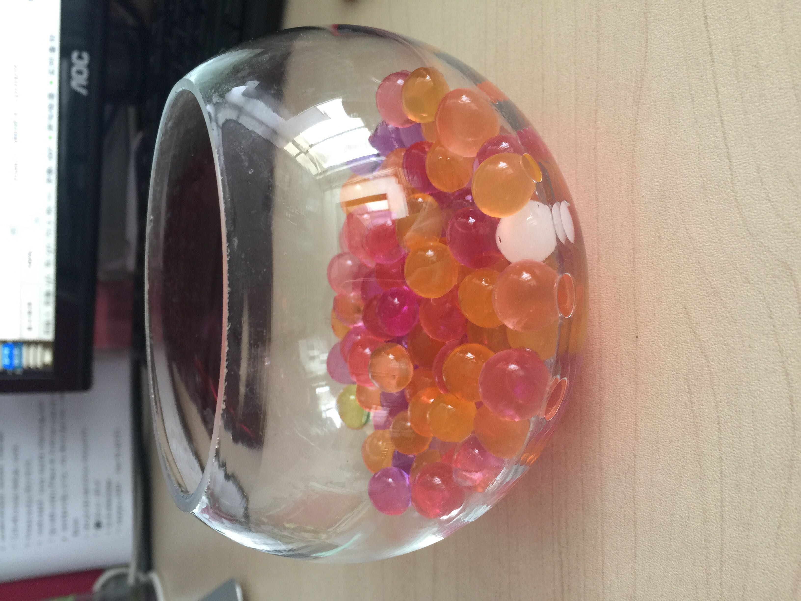 |
| 2016-07-28 09:03:01 | 我 | 你买的？ |
| 2016-07-28 09:03:11 | 你 | 还是上次给你看的 |
| 2016-07-28 09:03:24 | 你 | 我把绿罗扔了 |
| 2016-07-28 09:03:37 | 我 | 哦 |
| 2016-07-28 09:03:40 | 你 | 不养花，改养球球 |
| 2016-07-28 09:05:46 | 我 | 😄 |
| 2016-07-28 09:38:51 | 我 | 你拿的什么 |
| 2016-07-28 09:39:05 | 你 | 快递 |
| 2016-07-28 09:39:39 | 你 | 刚才在电梯遇到张道山， |
| 2016-07-28 09:39:42 | 我 | 好像垃圾袋[呲牙] |
| 2016-07-28 09:40:51 | 你 | 我跟马姐正说8t的问题来着，张工问我们什么事，很耐心的听我们说了，然后说让我们发信给他，把问题写清楚，他安排给人帮我们验证 |
| 2016-07-28 09:41:11 | 我 | 好的 |
| 2016-07-28 10:05:41 | 你 | 你们开什么会啊 |
| 2016-07-28 10:06:22 | 我 | 定长导入导出的软需 |
| 2016-07-28 10:06:35 | 你 | 这个很重要啊 |
| 2016-07-28 10:06:39 | 我 | 没有你吗 |
| 2016-07-28 10:07:45 | 你 | 我不参加 |
| 2016-07-28 10:07:49 | 你 | 王洪越说的 |
| 2016-07-28 10:08:00 | 我 | 好吧 |
| 2016-07-28 10:08:01 | 你 | 以后谁写的需求 谁参加 别人不让去 |
| 2016-07-28 10:08:08 | 你 | 我也不想去 |
| 2016-07-28 10:08:17 | 你 | 你们评吧 |
| 2016-07-28 10:08:18 | 我 | 呵呵 |
| 2016-07-28 10:09:35 | 你 | 呵呵 |
| 2016-07-28 10:13:00 | 我 | 你明天请假吧 |
| 2016-07-28 10:18:30 | 你 | 再说吧 可能不请了 |
| 2016-07-28 10:18:43 | 你 | 东东说他也想回家 |
| 2016-07-28 10:18:55 | 我 | 哦 |
| 2016-07-28 10:19:11 | 我 | 那你们晚上回去？ |
| 2016-07-28 10:19:18 | 你 | 恩 |
| 2016-07-28 10:19:28 | 我 | 开车吗 |
| 2016-07-28 10:19:32 | 你 | 是 |
| 2016-07-28 10:19:46 | 你 | 本来我自己的话就跟我哥的车回去 |
| 2016-07-28 10:26:27 | 我 | 晚上开车要小心 |
| 2016-07-28 10:26:45 | 你 | 我知道 我想早点走 |
| 2016-07-28 10:26:54 | 你 | 现在天黑的比较晚 |
| 2016-07-28 10:27:00 | 你 | 争取赶天黑就到家 |
| 2016-07-28 10:27:08 | 你 | 大概五点半走吧啥的 |
| 2016-07-28 10:27:13 | 我 | 好的 |
| 2016-07-28 11:53:09 | 你 | 完了吗 |
| 2016-07-28 11:53:32 | 我 | 没有 |
| 2016-07-28 12:04:53 | 我 | 回来了 |
| 2016-07-28 12:22:54 | 你 | 不吃饭吗 |
| 2016-07-28 12:22:56 | 你 | 怎么样 |
| 2016-07-28 12:22:59 | 你 | 问题多吗 |
| 2016-07-28 12:23:16 | 我 | 问题很多 |
| 2016-07-28 12:23:22 | 我 | 胖子去买凉皮了 |
| 2016-07-28 12:23:29 | 你 | 好的 |
| 2016-07-28 12:23:36 | 我 | 我刚才听见你手机没电了 |
| 2016-07-28 12:23:53 | 你 | 是 |
| 2016-07-28 12:23:59 | 你 | 李连成那边问题多吗 |
| 2016-07-28 12:24:27 | 我 | 不少，主要就是他们提的 |
| 2016-07-28 12:24:45 | 你 | 好吧 |
| 2016-07-28 12:24:52 | 你 | 歇会吧 |
| 2016-07-28 12:25:01 | 我 | 嗯 |
| 2016-07-28 12:25:08 | 我 | 你睡觉吧 |
| 2016-07-28 12:25:14 | 你 | 恩 |
| 2016-07-28 13:23:27 | 你 | 老田=大叫驴 |
| 2016-07-28 13:23:39 | 我 | ，吵醒你了 |
| 2016-07-28 13:24:01 | 你 | 我现在练的已经能屏蔽他的声音了 |
| 2016-07-28 13:24:04 | 你 | 你不睡吗 |
| 2016-07-28 13:24:58 | 我 | 不睡了 |
| 2016-07-28 13:25:05 | 我 | 待会和咖啡 |
| 2016-07-28 14:05:04 | 你 | 我给张道山发邮件的时候用抄送睡吗 |
| 2016-07-28 14:05:05 | 你 | 谁 |
| 2016-07-28 14:05:42 | 我 | 抄我吧 |
| 2016-07-28 14:06:13 | 你 | hao |
| 2016-07-28 14:13:20 | 我 | 你爸怎么样？ |
| 2016-07-28 14:13:28 | 你 | meishile |
| 2016-07-28 14:13:38 | 你 | 没去医院 在家输输液 说好了 |
| 2016-07-28 14:14:07 | 我 | 是症状好了还是检查没了 |
| 2016-07-28 14:14:20 | 你 | 症状好了吧 |
| 2016-07-28 14:14:31 | 你 | 没了你是指血栓吗 |
| 2016-07-28 14:14:40 | 我 | 是 |
| 2016-07-28 14:15:25 | 你 | 这个不知道 |
| 2016-07-28 14:15:35 | 你 | 就是说症状好转了 |
| 2016-07-28 14:15:46 | 我 | 嗯 |
| 2016-07-28 14:15:54 | 你 | 等回家看看吧 |
| 2016-07-28 14:16:01 | 你 | 我回家还得写周报 |
| 2016-07-28 14:16:03 | 你 | 呜呜 |
| 2016-07-28 14:16:12 | 我 | 唉 |
| 2016-07-28 14:16:17 | 你 | 哈哈 |
| 2016-07-28 14:16:23 | 我 | 需要带本回去了 |
| 2016-07-28 14:16:24 | 你 | 想想都头疼 |
| 2016-07-28 14:16:34 | 我 | 你哪天回来 |
| 2016-07-28 14:16:35 | 你 | 我想周五下午就开始写 |
| 2016-07-28 14:16:36 | 你 | 必须带回去 |
| 2016-07-28 14:24:07 | 你 | 你今天忙吗 |
| 2016-07-28 14:24:21 | 你 | 都没时间跟我聊天 我发现我最近也很忙 |
| 2016-07-28 14:24:33 | 我 | 太忙了 |
| 2016-07-28 14:24:42 | 我 | 待会还要开会 |
| 2016-07-28 14:24:59 | 我 | 也许开会也空 |
| 2016-07-28 14:25:10 | 你 | 算了 你先忙 |
| 2016-07-28 14:25:14 | 你 | 我也挺忙的 |
| 2016-07-28 14:25:26 | 你 | 现在还得写版本号的软需 |
| 2016-07-28 14:25:50 | 我 | 这个不是不着急吗 |
| 2016-07-28 14:26:08 | 你 | 今天早上老田还说着急 |
| 2016-07-28 14:26:16 | 你 | 王洪越说下周就提 |
| 2016-07-28 14:26:24 | 你 | 我还得给他点时间 对我指指点点 |
| 2016-07-28 14:26:33 | 你 | 所以最晚我明天也得提给他 |
| 2016-07-28 14:26:43 | 你 | 不过我今晚上加班 我老公他们打篮球 |
| 2016-07-28 14:26:52 | 我 | 这个都没有发版计划 |
| 2016-07-28 14:26:59 | 你 | 他急着要 |
| 2016-07-28 14:27:04 | 你 | 不知道为啥 |
| 2016-07-28 14:27:16 | 我 | 你赶紧做吧 |
| 2016-07-28 14:27:18 | 你 | 我想现在改的不是都送测了吗 |
| 2016-07-28 14:27:27 | 你 | 没事 我有安排 |
| 2016-07-28 14:27:33 | 你 | 就是事多觉得很忙 |
| 2016-07-28 14:27:35 | 我 | 这周你太忙了 |
| 2016-07-28 14:27:40 | 你 | 哈哈 |
| 2016-07-28 14:27:56 | 你 | 我以前太闲了 |
| 2016-07-28 14:28:27 | 我 | 😄 |
| 2016-07-28 15:03:52 | 我 | 开会 |
| 2016-07-28 15:04:03 | 你 | 哦 什么会啊 |
| 2016-07-28 15:04:29 | 我 | 和咱们没关系 |
| 2016-07-28 15:04:49 | 你 | 我word的格式刷不能用了 |
| 2016-07-28 15:04:52 | 你 | shit |
| 2016-07-28 15:04:58 | 我 | 不会吧 |
| 2016-07-28 15:05:24 | 我 | 重启一下 |
| 2016-07-28 15:05:30 | 你 | 算了 先写 |
| 2016-07-28 15:05:36 | 你 | 能聊天么 |
| 2016-07-28 15:05:43 | 我 | 能 |
| 2016-07-28 15:06:17 | 你 | 你看我最近是不是有点胖了 |
| 2016-07-28 15:07:13 | 我 | 没有呀 |
| 2016-07-28 15:07:20 | 我 | 你重了吗 |
| 2016-07-28 15:07:35 | 我 | 还是衣服瘦了 |
| 2016-07-28 15:08:14 | 你 | 我今年没穿包臀裙 那天穿上一看 肚子好大 |
| 2016-07-28 15:08:23 | 你 | 我想可能胖了 |
| 2016-07-28 15:08:28 | 你 | 体重没怎么变 |
| 2016-07-28 15:09:24 | 我 | 哦 |
| 2016-07-28 15:09:59 | 我 | 长期坐着肚子都会大点 |
| 2016-07-28 15:10:15 | 我 | 我现在也是发愁我的肚子 |
| 2016-07-28 15:10:49 | 你 | 恩 也有可能 |
| 2016-07-28 15:11:14 | 你 | 说说昨天的事 |
| 2016-07-28 15:11:27 | 我 | 好的 |
| 2016-07-28 15:12:10 | 你 | 两件事 一是我为什么不着急了 |
| 2016-07-28 15:12:20 | 你 | 二是 我为什么说你妥协 |
| 2016-07-28 15:12:27 | 我 | 嗯 |
| 2016-07-28 15:12:29 | 你 | 先说第一件 |
| 2016-07-28 15:13:21 | 你 | 你说说你为什么觉得我肯定会不着急的 |
| 2016-07-28 15:13:28 | 你 | 别说『你就是知道』 |
| 2016-07-28 15:13:43 | 你 | 我要知道你做判断的一句 |
| 2016-07-28 15:13:48 | 你 | 依据 |
| 2016-07-28 15:15:07 | 我 | 所有的事情都是有规律的，当你掌握了规律就不会着急了 |
| 2016-07-28 15:16:07 | 你 | 那你以为我掌握了什么规律呢 |
| 2016-07-28 15:16:14 | 你 | 其实我你说的对 |
| 2016-07-28 15:16:32 | 你 | 但是我掌握的这个规律肯定会让你惊讶 |
| 2016-07-28 15:16:37 | 你 | 你先说说你以为的 |
| 2016-07-28 15:17:07 | 我 | 软件研发的规律 |
| 2016-07-28 15:17:59 | 你 | 错 |
| 2016-07-28 15:18:57 | 你 | 再猜 |
| 2016-07-28 15:19:29 | 我 | 人性 |
| 2016-07-28 15:19:47 | 你 | 我告诉你吧 |
| 2016-07-28 15:20:04 | 你 | 是 我掌握了你的做事规律 |
| 2016-07-28 15:20:05 | 我 | 好吧 |
| 2016-07-28 15:20:17 | 你 | 或者说是我对你的信任 |
| 2016-07-28 15:20:38 | 你 | 这个跟我说你的妥协有关 |
| 2016-07-28 15:20:41 | 你 | 我给你说说啊 |
| 2016-07-28 15:20:48 | 我 | 好 |
| 2016-07-28 15:22:52 | 你 | 我刚开始特别着急 一是我的性格导致的，我不善于做计划，喜欢上来就干 而且自己也不清楚干什么，所以很着急 这个我以前跟你说过， |
| 2016-07-28 15:23:06 | 我 | 是 |
| 2016-07-28 15:23:43 | 你 | 二是因为 我以为这件事你的压力很大 要是开发那边不当回事的话 我就很生气 |
| 2016-07-28 15:24:48 | 你 | 后来我慢慢发现 我虽然是兵来将挡水来土掩，但你不是 |
| 2016-07-28 15:25:56 | 我 | 嗯 |
| 2016-07-28 15:26:42 | 你 | 这个在每次开完会的时候我就深有感触 |
| 2016-07-28 15:27:24 | 我 | 说说 |
| 2016-07-28 15:27:29 | 你 | 这就是为啥我觉得我学习的很快的缘故 |
| 2016-07-28 15:28:17 | 你 | 因为每次开完会 （sprint planning、release planning、review ）我都有种感觉 |
| 2016-07-28 15:28:47 | 你 | 你什么都不说 因为你是观察者 |
| 2016-07-28 15:29:09 | 我 | 嗯 |
| 2016-07-28 15:29:36 | 你 | 而且每次在我不知道怎么办 脑子里有问号（这种情况怎么解决）的时候 憋的不行 很着急的时候 你就会引导以下 |
| 2016-07-28 15:29:53 | 你 | 这种方式 和大部分人的教学方式是不一样的 |
| 2016-07-28 15:30:24 | 你 | 大部分人都是不断的说，事无巨细 填鸭式的教 苦口婆心的说 |
| 2016-07-28 15:30:41 | 你 | 但是学的人掌握的非常非常有限 |
| 2016-07-28 15:30:51 | 我 | 嗯 |
| 2016-07-28 15:31:02 | 你 | 但是你这样的 我不知道别人 反正我学的很快 |
| 2016-07-28 15:31:18 | 你 | 我也不知道这是不是你原来打算的样子 |
| 2016-07-28 15:31:24 | 你 | 但是我就是很受教 |
| 2016-07-28 15:31:37 | 你 | 每次开完会 我都会想你说的话 每次都很少 |
| 2016-07-28 15:31:50 | 你 | 不会一直说一直说 但是每次都非常非常关键 |
| 2016-07-28 15:32:10 | 你 | 所以我自己想明白了很多事 |
| 2016-07-28 15:32:16 | 我 | 嗯 |
| 2016-07-28 15:32:26 | 你 | 然后我就想 你记得你教我写需求的时候 |
| 2016-07-28 15:32:47 | 你 | 我根本没有这种感觉 其实你是有自己的安排的 |
| 2016-07-28 15:32:58 | 你 | 但是这次就不是 |
| 2016-07-28 15:34:32 | 你 | 我对你很有信心 我知道你是有你的安排 我只需要体会就可以了 不用担心这件事本身给你造成的压力 因为你自然会有办法 我唯一需要做的 就是在这次体验中 尽可能多的学习 |
| 2016-07-28 15:34:52 | 我 | 哈哈 |
| 2016-07-28 15:35:18 | 我 | 你这是偷懒的方式 |
| 2016-07-28 15:35:34 | 你 | 但至少我可以专注的学习了 |
| 2016-07-28 15:35:51 | 我 | 嗯 |
| 2016-07-28 15:36:04 | 你 | 这件事我是在开过大概3次会的时候感觉到的 |
| 2016-07-28 15:37:07 | 我 | 还有什么感受 |
| 2016-07-28 15:39:23 | 你 | 等 |
| 2016-07-28 15:40:03 | 你 | 虽然这样我不知道怎么办的时候 还是会很忐忑的 |
| 2016-07-28 15:40:51 | 你 | 而且我奇怪的是 我到现在还是不能预测一些问题 还有碰到新问题时 自己还依然想不出解决方案 |
| 2016-07-28 15:41:04 | 你 | 所以还差很多 |
| 2016-07-28 15:41:54 | 你 | 但是至少我更了解你了 |
| 2016-07-28 15:42:14 | 我 | 说完了吗 |
| 2016-07-28 15:42:17 | 你 | 说完了 |
| 2016-07-28 15:42:19 | 你 | 你说吧 |
| 2016-07-28 15:42:32 | 我 | 妥协的那部分呢 |
| 2016-07-28 15:42:44 | 你 | 恩 那我接着说 |
| 2016-07-28 15:43:01 | 你 | 你是一直都有计划的习惯 |
| 2016-07-28 15:43:10 | 我 | 是 |
| 2016-07-28 15:43:11 | 你 | 这个不是因为你昨天说了 我才知道的 |
| 2016-07-28 15:43:48 | 我 | 嗯 |
| 2016-07-28 15:43:49 | 你 | 这个在你去我家的时候我就知道了 |
| 2016-07-28 15:44:03 | 我 | 哦，说说 |
| 2016-07-28 15:44:14 | 你 | 说这个吗？ |
| 2016-07-28 15:44:27 | 你 | 说你有计划的习惯我怎么知道的吗 |
| 2016-07-28 15:45:09 | 我 | 是 |
| 2016-07-28 15:45:25 | 我 | 为什么是我去你家的时候 |
| 2016-07-28 15:45:57 | 你 | 因为那天晚上你一直说时间 |
| 2016-07-28 15:46:13 | 你 | 说你打算几点到几点说什么 |
| 2016-07-28 15:47:08 | 你 | 当然这一次不行 |
| 2016-07-28 15:47:48 | 我 | 哈哈，被你发现了 |
| 2016-07-28 15:48:47 | 你 | 后来我们面谈 |
| 2016-07-28 15:48:51 | 我 | 你还发现我的什么了 |
| 2016-07-28 15:48:53 | 你 | 也都有 |
| 2016-07-28 15:48:58 | 你 | 还有很多 |
| 2016-07-28 15:49:00 | 你 | 害怕吧 |
| 2016-07-28 15:49:02 | 你 | 哈哈 |
| 2016-07-28 15:49:04 | 我 | 是 |
| 2016-07-28 15:49:07 | 你 | 这是个很好的习惯啊 |
| 2016-07-28 15:49:18 | 你 | 所以你教会我很多事情 |
| 2016-07-28 15:50:11 | 我 | 我真的越来越喜欢你了 |
| 2016-07-28 15:50:45 | 我 | 你现在也开始了解我了 |
| 2016-07-28 15:51:01 | 你 | 哈哈 |
| 2016-07-28 15:51:03 | 你 | 那是 |
| 2016-07-28 15:51:07 | 你 | 对啊 |
| 2016-07-28 15:51:15 | 我 | 沟通起来也更容易 |
| 2016-07-28 15:51:27 | 你 | 其实是我自己太乐观 我还是有很多很多地方不了解你 |
| 2016-07-28 15:51:33 | 我 | 共鸣越来越多 |
| 2016-07-28 15:51:39 | 你 | 哈哈 |
| 2016-07-28 15:51:50 | 你 | 我还没说完呢 |
| 2016-07-28 15:53:32 | 我 | 说吧 |
| 2016-07-28 15:54:32 | 你 | 面谈的那部分简单说吧 |
| 2016-07-28 15:55:03 | 我 | 好的 |
| 2016-07-28 15:55:07 | 你 | 其实我想跟你面谈的话 只是想跟你呆着 随便聊聊 聊什么我一点准备都没有 就是想呆着 |
| 2016-07-28 15:55:21 | 你 | 我开始以为你也是 |
| 2016-07-28 15:55:36 | 你 | 因为你一直说喜欢跟我聊天 |
| 2016-07-28 15:55:44 | 我 | 嗯 |
| 2016-07-28 15:55:50 | 你 | 后来我慢慢的才发现 每次面谈 你都会跟我说事情 |
| 2016-07-28 15:55:52 | 我 | 是很喜欢 |
| 2016-07-28 15:55:55 | 你 | 每次都是 |
| 2016-07-28 15:56:12 | 你 | 也就是你找我面谈 不是跟我一样 心血来潮 |
| 2016-07-28 15:56:16 | 你 | 是有安排的 |
| 2016-07-28 15:56:41 | 我 | 也不全是 |
| 2016-07-28 15:57:03 | 你 | 我以为你跟我一样 所以就会想你是因为喜欢我 最开始最开始的时候 想是你目的不纯 |
| 2016-07-28 15:57:09 | 你 | 现在想想好可笑 |
| 2016-07-28 15:57:11 | 我 | 只是我比较容易找到话题 |
| 2016-07-28 15:58:03 | 你 | 然后很多次很多次就导致我越来越清楚你对我的感情 不是那种基于男女爱情的 啊 |
| 2016-07-28 15:58:10 | 你 | 这段到此为止 |
| 2016-07-28 15:58:12 | 你 | 先不说了 |
| 2016-07-28 15:58:15 | 你 | 说妥协 |
| 2016-07-28 15:58:24 | 我 | 好 |
| 2016-07-28 15:58:51 | 你 | 我想我已经注意到你有计划这个习惯了 |
| 2016-07-28 15:58:59 | 你 | 但是你们组的显然都不知道 |
| 2016-07-28 15:59:19 | 你 | 如果真知道 杨丽颖就不会着急的埋怨你压着方案不放 |
| 2016-07-28 15:59:43 | 你 | 反过来你还得跟他们解释你有计划 |
| 2016-07-28 15:59:57 | 我 | 是 |
| 2016-07-28 16:00:05 | 你 | 所以我很心疼你 |
| 2016-07-28 16:00:13 | 我 | 只有你最懂我 |
| 2016-07-28 16:00:36 | 你 | 他们可能对你的了解 仅仅停在 『老王的脾气 一点火就着』 |
| 2016-07-28 16:00:42 | 你 | 但是人挺好的 |
| 2016-07-28 16:00:43 | 我 | 是 |
| 2016-07-28 16:00:45 | 你 | 仅此而已 |
| 2016-07-28 16:01:10 | 你 | 还有 就是你提到梁继展和孙世林的事 |
| 2016-07-28 16:01:19 | 你 | 很明显不是你的本意 |
| 2016-07-28 16:01:33 | 你 | 你跟我说过 不能单独表扬某个人 |
| 2016-07-28 16:01:39 | 你 | 对管理不利 |
| 2016-07-28 16:01:48 | 我 | 继续说 |
| 2016-07-28 16:01:51 | 你 | 但是你昨天还是提他们了 |
| 2016-07-28 16:02:07 | 你 | 说他们有进步啥的 |
| 2016-07-28 16:02:24 | 你 | 我特别特别心疼你说这些话 |
| 2016-07-28 16:03:13 | 我 | 为啥 |
| 2016-07-28 16:03:22 | 你 | 我早知道你昨天说那些 我就不去了 |
| 2016-07-28 16:03:32 | 我 | 哦 |
| 2016-07-28 16:04:50 | 你 | 我听着蹦难受 |
| 2016-07-28 16:05:12 | 你 | 你说他们自己的成长 不但自己没发现 还得你说出来 |
| 2016-07-28 16:05:16 | 你 | 是不是很蠢 |
| 2016-07-28 16:05:17 | 我 | 对不起 |
| 2016-07-28 16:05:20 | 你 | 真的很蠢 |
| 2016-07-28 16:06:28 | 我 | 其实这也是管理者的一个职责 |
| 2016-07-28 16:07:01 | 你 | 我知道 |
| 2016-07-28 16:07:07 | 你 | 原则是一方面 |
| 2016-07-28 16:07:23 | 你 | 实施起来还是得灵活变通的 对吧 |
| 2016-07-28 16:07:28 | 我 | 是 |
| 2016-07-28 16:07:42 | 你 | 我就这么说服我自己听下去的 |
| 2016-07-28 16:08:00 | 你 | 我说这些 当然不是怪你让我昨天去听你说话 |
| 2016-07-28 16:08:08 | 我 | 其实昨天让你来听就是想让你多学一些管理的东西 |
| 2016-07-28 16:08:11 | 你 | 而是想告诉你我的想法 |
| 2016-07-28 16:08:15 | 我 | 嗯 |
| 2016-07-28 16:09:51 | 你 | 可能是我太关注内容了 |
| 2016-07-28 16:10:31 | 我 | 是你太关心我了 |
| 2016-07-28 16:11:00 | 你 | 对 我是典型的关心则乱 |
| 2016-07-28 16:11:08 | 你 | 本来就不理性 |
| 2016-07-28 16:11:18 | 我 | [呲牙] |
| 2016-07-28 16:11:30 | 你 | 我那天问我姐 他会不会比我更理性些 她的回答是『并没有』 |
| 2016-07-28 16:11:31 | 你 | 哈哈 |
| 2016-07-28 16:11:52 | 我 | [微笑] |
| 2016-07-28 16:13:22 | 你 | 你说我说的『你跟一群猪做的妥协』是不是很贴切 |
| 2016-07-28 16:13:26 | 你 | 从我的角度考虑 |
| 2016-07-28 16:13:41 | 我 | 是 |
| 2016-07-28 16:14:37 | 你 | 话说我说的对吗 |
| 2016-07-28 16:15:00 | 我 | 你说的对 |
| 2016-07-28 16:15:12 | 我 | 继续说吧 |
| 2016-07-28 16:15:16 | 你 | 我指的是说你的那部分 |
| 2016-07-28 16:15:23 | 你 | 我理解的对吗 |
| 2016-07-28 16:15:42 | 你 | 我要看到卓越 才能让自己变得卓越 |
| 2016-07-28 16:15:52 | 你 | 虽然不是万能的 但至少是捷径 |
| 2016-07-28 16:16:15 | 我 | 你理解的对 |
| 2016-07-28 16:24:06 | 我 | ？ |
| 2016-07-28 16:24:21 | 你 | 咋了 |
| 2016-07-28 16:24:26 | 你 | 我说完了 |
| 2016-07-28 16:24:37 | 我 | 我还等你呢 |
| 2016-07-28 16:25:11 | 我 | 你想让我说什么 |
| 2016-07-28 16:25:24 | 你 | 我不想让你说什么啊 |
| 2016-07-28 16:25:33 | 你 | 我就想跟你确认下我说的对不对 |
| 2016-07-28 16:26:09 | 我 | 那我说一下吧 |
| 2016-07-28 16:26:23 | 我 | 你看见的是我的方法 |
| 2016-07-28 16:26:43 | 你 | 恩 |
| 2016-07-28 16:26:48 | 我 | 你学习方法论好像比较快 |
| 2016-07-28 16:27:09 | 你 | 然后呢 |
| 2016-07-28 16:27:15 | 你 | 这背后还有什么 |
| 2016-07-28 16:27:17 | 我 | 之前你也是先学的方法 |
| 2016-07-28 16:27:32 | 我 | 后面是原则和规律 |
| 2016-07-28 16:27:52 | 你 | 你接着说吧 |
| 2016-07-28 16:29:28 | 我 | 你前面说你还没法预测问题，解决问题 |
| 2016-07-28 16:29:57 | 我 | 就是因为你不知道原则和规律 |
| 2016-07-28 16:30:27 | 我 | 我的计划是根据原则和规律制定的 |
| 2016-07-28 16:30:45 | 我 | 包括昨天我讲的那些东西 |
| 2016-07-28 16:31:07 | 我 | 这里面包含很多的规律性的东西 |
| 2016-07-28 16:31:17 | 你 | 接着说 |
| 2016-07-28 16:31:47 | 我 | 这些东西我也在教你 |
| 2016-07-28 16:31:55 | 我 | 你学的比较慢 |
| 2016-07-28 16:32:06 | 我 | 这个不着急 |
| 2016-07-28 16:32:09 | 你 | 嗯嗯 |
| 2016-07-28 16:32:36 | 我 | 你现在的不着急是基于对我的信任 |
| 2016-07-28 16:32:37 | 你 | 这个只能是自己慢慢悟了 |
| 2016-07-28 16:33:00 | 我 | 其实你自己也不知道我能不能解决问题 |
| 2016-07-28 16:33:22 | 你 | 这句话 ？？？ |
| 2016-07-28 16:33:35 | 我 | 你知道我有计划 |
| 2016-07-28 16:33:38 | 你 | 怎么说呢 但是到目前为止 我以为问题的事 你都解决了 |
| 2016-07-28 16:33:43 | 你 | 是 |
| 2016-07-28 16:34:08 | 我 | 但是你不知道我的计划能不能解决问题 |
| 2016-07-28 16:34:14 | 你 | 是 |
| 2016-07-28 16:34:18 | 你 | 是的 |
| 2016-07-28 16:34:29 | 我 | 最多我是预测问题 |
| 2016-07-28 16:35:01 | 我 | 所以我说你信任我 |
| 2016-07-28 16:35:13 | 我 | 认为我能解决问题 |
| 2016-07-28 16:35:37 | 我 | 只要我想到了就能做到 |
| 2016-07-28 16:35:48 | 我 | 你差不多就是这个意思 |
| 2016-07-28 16:36:10 | 你 | 这些话没听懂 |
| 2016-07-28 16:36:54 | 你 | 『只要我想到了就能做到』这句话是不对的 |
| 2016-07-28 16:37:09 | 我 | 这么说吧，你要是知道很多问题我也没办法，你就不会这么乐观了 |
| 2016-07-28 16:37:54 | 你 | 但是关键点是 我不应该过多的关注是否解决问题 |
| 2016-07-28 16:38:24 | 我 | 你应该关注什么 |
| 2016-07-28 16:38:36 | 你 | 我关注的是我的成长 |
| 2016-07-28 16:38:38 | 你 | 这么多活吧 |
| 2016-07-28 16:38:48 | 你 | 我可能误导你了 |
| 2016-07-28 16:38:51 | 你 | 这么说吧 |
| 2016-07-28 16:39:18 | 你 | 你知道你跟我说过 你是在拉着研发一组的跟我玩 我写软需那会 |
| 2016-07-28 16:39:25 | 你 | 其实我当时并不理解 |
| 2016-07-28 16:39:33 | 我 | 嗯 |
| 2016-07-28 16:39:51 | 你 | 但是我现在挺理解的 我觉得scrum这件事 既然做了 就可能成功可能失败 |
| 2016-07-28 16:40:31 | 你 | 成功和失败对于我来说其实没那么重要 重要的是 这个过程中我对scrum的掌握 |
| 2016-07-28 16:40:40 | 我 | 嗯 |
| 2016-07-28 16:40:44 | 你 | 可能研发的更关注结果 |
| 2016-07-28 16:40:52 | 你 | 同步工具是否能做出来 |
| 2016-07-28 16:41:02 | 你 | 这种方法是不是更有效 |
| 2016-07-28 16:41:30 | 你 | 但是这个活动 你对我的预期 绝对不是帮助你 做成它 而是掌握整个scrum的模型 |
| 2016-07-28 16:41:46 | 我 | 是 |
| 2016-07-28 16:41:47 | 你 | 等以后就有这方面的经验了 |
| 2016-07-28 16:42:03 | 你 | 就是不要陷入内容 |
| 2016-07-28 16:42:20 | 你 | 你记得你老是说我写软需的时候 总是关注细节 |
| 2016-07-28 16:42:55 | 你 | 我那时候 比起建模 更关注 这个软需什么时候能写好 其实是不对的 |
| 2016-07-28 16:43:12 | 我 | 是 |
| 2016-07-28 16:43:22 | 你 | 所以你才一直一直一直 苦口婆心的说我 |
| 2016-07-28 16:43:23 | 你 | 哈哈 |
| 2016-07-28 16:43:32 | 你 | 谢谢你当时没放弃我 |
| 2016-07-28 16:44:02 | 我 | [微笑] |
| 2016-07-28 16:44:44 | 你 | 等我掌握了模型 其他的就是量的问题了 |
| 2016-07-28 16:44:55 | 你 | 这句话摘自昨天你的发言 |
| 2016-07-28 16:45:15 | 我 | 哈哈 |
| 2016-07-28 16:45:27 | 你 | 你看我是多关注你 |
| 2016-07-28 16:46:31 | 你 | 但是我发现我的逻辑推理真的是很差很差 |
| 2016-07-28 16:46:32 | 我 | 是，很让我感动 |
| 2016-07-28 16:46:34 | 你 | 真的很差 |
| 2016-07-28 16:46:43 | 我 | 没事 |
| 2016-07-28 16:46:55 | 我 | 这个是可以训练的 |
| 2016-07-28 16:47:02 | 你 | 真的吗 |
| 2016-07-28 16:47:10 | 你 | 我都有点害怕自己这样了 |
| 2016-07-28 16:47:17 | 你 | 这方面真的是很差 |
| 2016-07-28 16:47:25 | 你 | 我越来越发现】 |
| 2016-07-28 16:47:29 | 我 | 真的没事 |
| 2016-07-28 16:50:08 | 我 | 今天的聊天我回去要好好看看 |
| 2016-07-28 16:50:21 | 我 | 信息量太大了 |
| 2016-07-28 16:50:27 | 你 | 真的吗 |
| 2016-07-28 16:50:39 | 你 | 你是不是更了解我了 |
| 2016-07-28 16:50:40 | 我 | 我有好多要和你说的 |
| 2016-07-28 16:50:41 | 你 | 哈哈 |
| 2016-07-28 16:50:44 | 你 | 真的吗 |
| 2016-07-28 16:50:48 | 我 | 是 |
| 2016-07-28 16:50:56 | 你 | 今天可能有机会聊天 |
| 2016-07-28 16:51:20 | 我 | 我需要先理一理 |
| 2016-07-28 16:51:28 | 你 | 恩 好 |
| 2016-07-28 16:51:43 | 我 | 首先我可以肯定的是你又有进步了 |
| 2016-07-28 16:52:12 | 你 | 真的吗 跟最近我研究scrum有关 |
| 2016-07-28 16:52:20 | 我 | 应该是 |
| 2016-07-28 16:52:26 | 你 | 又找到那种冥想的感觉了 |
| 2016-07-28 16:52:35 | 我 | 对 |
| 2016-07-28 16:52:58 | 我 | 因为你在道上又前进了 |
| 2016-07-28 16:53:03 | 你 | 我自己都有感觉 |
| 2016-07-28 16:53:11 | 你 | 跟以前想需求的时候差不多 |
| 2016-07-28 16:53:28 | 你 | 喜欢自己静静的呆着 想问题 |
| 2016-07-28 16:53:37 | 你 | 然后跟你交流 |
| 2016-07-28 16:53:47 | 我 | 嗯 |
| 2016-07-28 17:02:56 | 我 | 我还是回去再看吧，手机查记录太麻烦了 |
| 2016-07-28 17:03:31 | 我 | 周末正好干 |
| 2016-07-28 17:04:09 | 你 | 嗯嗯 |
| 2016-07-28 17:04:11 | 你 | 你歇会吧 |
| 2016-07-28 17:04:17 | 你 | 我可能把你绕晕了 |
| 2016-07-28 17:04:56 | 我 | 还行吧 |
| 2016-07-28 17:05:17 | 我 | 不过确实有很多茬路 |
| 2016-07-28 17:05:36 | 我 | 每次和你聊天都是一棵树 |
| 2016-07-28 17:06:39 | 你 | 真讨厌 |
| 2016-07-28 17:06:50 | 我 | 啊 |
| 2016-07-28 17:06:55 | 我 | 怎么啦 |
| 2016-07-28 17:07:05 | 你 | [动画表情] |
| 2016-07-28 17:08:18 | 我 | 就因为树吗 |
| 2016-07-28 17:08:40 | 你 | douniwanne |
| 2016-07-28 17:09:11 | 我 | 唉，我还以为是英语呢 |
| 2016-07-28 17:10:04 | 你 | 这也是逗你玩的 |
| 2016-07-28 17:14:01 | 我 | 哈哈 |
| 2016-07-28 17:50:38 | 我 | 回来了 |
| 2016-07-28 17:51:33 | 你 | 恩 |
| 2016-07-28 17:51:39 | 你 | 领导来了 |
| 2016-07-28 17:52:22 | 我 | 好的 |
| 2016-07-28 17:53:55 | 我 | 有事吗 |
| 2016-07-28 17:54:20 | 你 | 没事 就是来了就走了 |
| 2016-07-28 17:54:24 | 你 | 跟你说下 |
| 2016-07-28 17:54:27 | 我 | 好的 |
| 2016-07-28 17:54:35 | 我 | 你在忙啥呢 |
| 2016-07-28 17:54:47 | 你 | 写软需 |
| 2016-07-28 17:54:53 | 我 | 好的 |
| 2016-07-28 19:56:54 | 你 | 因为当你站得越高，你对很多问题的理解和包容度都不一样，尤其是对人性的理解和对客观规律的尊重，会让你将更看重你们婚姻的本质，看到你们的终极目标，会让你为了达到你们共同的人生目标和理想，不会在乎一城一池的得失，不会在小事上争个你死我活。 |
| 2016-07-28 19:58:06 | 你 | 回家了 |
{kind=link}
2016-07-29¶
| 2016-07-29 08:20:40 | 你 | 大叔 我觉得你说的很对 |
| 2016-07-29 08:20:48 | 你 | 昨天东东干活到4点了 |
| 2016-07-29 08:21:01 | 你 | 早上状态也不好 也不好好搭理我 |
| 2016-07-29 08:21:25 | 你 | 可能就是你说的男人要干事业了 |
| 2016-07-29 08:21:40 | 我 | 唉 |
| 2016-07-29 08:22:54 | 我 | 你昨天回家前给我发的是你自己想的吗 |
| 2016-07-29 08:23:23 | 你 | 是啊 |
| 2016-07-29 08:23:27 | 你 | 都是我自己想的 |
| 2016-07-29 08:23:38 | 我 | 好像很深刻的样子 |
| 2016-07-29 08:24:10 | 你 | 什么叫『好像』很深刻的『样子』 |
| 2016-07-29 08:24:42 | 我 | 哈哈，这是赞扬你呢 |
| 2016-07-29 08:25:33 | 你 | 没看出来 |
| 2016-07-29 08:26:19 | 我 | 真心的 |
| 2016-07-29 08:27:19 | 你 | 嗯嗯 |
| 2016-07-29 08:27:21 | 你 | 你说我俩回次家 家里人怎么那么兴奋呢 |
| 2016-07-29 08:27:31 | 你 | 我俩指我和我姐 |
| 2016-07-29 08:27:47 | 我 | 因为大家都想你们了呗 |
| 2016-07-29 08:27:53 | 你 | 哈哈 |
| 2016-07-29 08:27:55 | 你 | 可能 |
| 2016-07-29 08:28:07 | 你 | 刚才我嫂子给发微信 要给我们做饭 |
| 2016-07-29 08:28:19 | 你 | 我姑姑给做了两床夹被要给拿过来 |
| 2016-07-29 08:28:32 | 我 | 😄 |
| 2016-07-29 08:29:47 | 你 | 你昨天好好看聊天记录了吗 |
| 2016-07-29 08:30:26 | 我 | 没有，昨天回去和我儿子打了半天电话 |
| 2016-07-29 08:30:47 | 我 | 我打算明天看 |
| 2016-07-29 08:31:19 | 我 | 有可能会写一些东西 |
| 2016-07-29 08:31:25 | 你 | 好 |
| 2016-07-29 08:31:29 | 你 | 写东西 |
| 2016-07-29 08:31:31 | 你 | ？ |
| 2016-07-29 08:31:45 | 我 | 写你呀 |
| 2016-07-29 08:31:54 | 我 | 昨天那么大的信息量 |
| 2016-07-29 08:32:26 | 我 | 应该会有好多我想和你说的 |
| 2016-07-29 08:32:37 | 你 | 是吗 |
| 2016-07-29 08:32:39 | 你 | 好吧 |
| 2016-07-29 09:13:36 | 我 | 你跑那么远 |
| 2016-07-29 09:13:49 | 我 | 不想在我身边吗 |
| 2016-07-29 09:23:22 | 你 | 当然不是，番薯让我往里走 |
| 2016-07-29 09:36:46 | 我 | 看着你好累 |
| 2016-07-29 09:37:12 | 你 | 爬楼 |
| 2016-07-29 09:37:46 | 我 | 哦，去找张道山了？ |
| 2016-07-29 09:53:35 | 你 | 被马姐害了 她天天得啥也不想 刚才一转身看不见他 我去一楼找他的时候才发现有参观的 后来没办法走楼梯上来的 |
| 2016-07-29 09:53:42 | 你 | 还碰到尹总了 |
| 2016-07-29 09:53:49 | 你 | 尹总说 电梯不让用了 |
| 2016-07-29 09:54:26 | 我 | 唉，上午哪也别去了 |
| 2016-07-29 09:59:45 | 你 | 东东回不去了 |
| 2016-07-29 10:00:12 | 我 | 工作没做完吗 |
| 2016-07-29 10:00:25 | 我 | 别皱眉 |
| 2016-07-29 10:00:48 | 我 | 看你 都快哭了 |
| 2016-07-29 10:01:22 | 你 | 气死我了 |
| 2016-07-29 10:01:30 | 我 | 别生气 |
| 2016-07-29 10:01:41 | 我 | 你姐夫回去吗 |
| 2016-07-29 10:01:59 | 你 | 回 我早上都打好包了 包还在车里呢 |
| 2016-07-29 10:02:04 | 你 | 他跟我说不回了 |
| 2016-07-29 10:02:25 | 我 | 唉，工作太忙吧 |
| 2016-07-29 10:02:28 | 你 | 下午不上班了 |
| 2016-07-29 10:02:33 | 你 | 我中午吃完饭就走 |
| 2016-07-29 10:02:38 | 我 | 好的 |
| 2016-07-29 10:02:47 | 我 | 谁不上班了？ |
| 2016-07-29 10:02:58 | 你 | 我不上了 |
| 2016-07-29 10:03:06 | 你 | 我去找我哥 |
| 2016-07-29 10:03:13 | 我 | 好的 |
| 2016-07-29 10:03:16 | 你 | 他在塘沽 我做地铁过去 |
| 2016-07-29 10:03:30 | 我 | 早点走，路上安全 |
| 2016-07-29 10:03:45 | 你 | 我觉的东东早就知道这样 |
| 2016-07-29 10:03:51 | 我 | 不一定 |
| 2016-07-29 10:04:01 | 我 | 他应该也尽力了 |
| 2016-07-29 10:04:13 | 我 | 不然昨天也不会那么晚 |
| 2016-07-29 10:04:53 | 你 | 我得安排下我的工作 |
| 2016-07-29 10:05:06 | 你 | 下个sprint的用户故事得定定 |
| 2016-07-29 10:05:20 | 我 | sprint不着急 |
| 2016-07-29 10:05:33 | 我 | 你先把周报安排好 |
| 2016-07-29 10:05:43 | 你 | 那个就明天做了 |
| 2016-07-29 10:05:47 | 我 | sprint有我，没事的 |
| 2016-07-29 10:05:53 | 你 | 没事 我能做好 |
| 2016-07-29 10:06:49 | 我 | 别累着，我会心疼的 |
| 2016-07-29 10:06:56 | 你 | 没事 |
| 2016-07-29 10:07:05 | 你 | 我就是想让东东陪我一起回去 |
| 2016-07-29 10:07:19 | 我 | 我知道 |
| 2016-07-29 10:07:21 | 你 | 你好好听吧 |
| 2016-07-29 10:07:27 | 你 | 我没事 |
| 2016-07-29 10:07:37 | 我 | 这个不需要我听 |
| 2016-07-29 10:07:45 | 我 | 我就是来看你的 |
| 2016-07-29 10:08:09 | 你 | 没事了 |
| 2016-07-29 10:08:25 | 我 | 好的 |
| 2016-07-29 10:22:01 | 我 | 亲，你这个月还有多少流量？ |
| 2016-07-29 10:42:38 | 我 | 要不你带着我的猫的吧，还有500M可用，还可以当充电宝 |
| 2016-07-29 10:54:22 | 你 | 不用 |
| 2016-07-29 10:54:26 | 你 | 谢谢 |
| 2016-07-29 10:54:41 | 我 | 唉，我就知道你会这么说 |
| 2016-07-29 10:55:02 | 你 | 刚打发完马姐 |
| 2016-07-29 10:55:16 | 你 | 没事 真的 我就是做个地铁 我哥去地铁站接我 |
| 2016-07-29 10:55:20 | 你 | 我坐他车回家 |
| 2016-07-29 10:55:22 | 你 | 没事的亲 |
| 2016-07-29 10:55:41 | 我 | 好的 |
| 2016-07-29 11:15:08 | 你 | 你干嘛去了 |
| 2016-07-29 11:15:43 | 我 | 武总开会 |
| 2016-07-29 11:22:07 | 我 | 你几点走 |
| 2016-07-29 11:23:34 | 你 | 中午吃完饭走 |
| 2016-07-29 11:23:58 | 我 | 好吧 |
| 2016-07-29 11:26:53 | 你 | 你们什么时候结束啊 |
| 2016-07-29 11:27:24 | 我 | 不知道，估计到12点 |
| 2016-07-29 11:27:36 | 你 | 那我可能就走了 |
| 2016-07-29 11:27:44 | 我 | 是 |
| 2016-07-29 11:27:51 | 我 | [流泪] |
| 2016-07-29 12:05:41 | 你 | 你还没吃饭呢吧 |
| 2016-07-29 12:05:53 | 我 | 有饭局 |
| 2016-07-29 12:06:25 | 你 | 恩，好 |
| 2016-07-29 12:08:54 | 我 | 你现在走吗 |
| 2016-07-29 12:08:56 | 你 | 我不联系你的话，别给我发消息了，一会东东过来 |
| 2016-07-29 12:09:11 | 我 | 好的 |
| 2016-07-29 12:09:19 | 你 | 他把我东西给我，顺便送我去地铁站 |
| 2016-07-29 12:09:26 | 我 | 嗯 |
| 2016-07-29 12:30:42 | 你 | 外边也太热了 |
| 2016-07-29 12:30:54 | 你 | 到地铁站了 |
| 2016-07-29 12:31:05 | 我 | 是、上车就好了 |
| 2016-07-29 12:32:15 | 你 | 恩，车上挺凉快 |
| 2016-07-29 12:32:22 | 你 | 上车了 |
| 2016-07-29 12:32:26 | 我 | 好的 |
| 2016-07-29 12:32:43 | 我 | 今天你会很累的 |
| 2016-07-29 12:33:04 | 我 | 中午也没空睡觉了 |
| 2016-07-29 12:34:06 | 你 | 没事， |
| 2016-07-29 12:34:37 | 你 | 你吃饭了吗 |
| 2016-07-29 12:34:40 | 我 | 明天睡个懒觉吧 |
| 2016-07-29 12:34:49 | 我 | 等上菜呢 |
| 2016-07-29 12:35:06 | 你 | 明天去我姑姑家 |
| 2016-07-29 12:35:17 | 我 | 哦 |
| 2016-07-29 12:35:18 | 你 | 而且我还得写周报[微笑] |
| 2016-07-29 12:35:22 | 我 | 唉 |
| 2016-07-29 12:35:32 | 你 | 好久没坐过地铁了 |
| 2016-07-29 12:35:34 | 你 | 哈哈 |
| 2016-07-29 12:36:00 | 你 | 别叹气，没事的 |
| 2016-07-29 12:36:10 | 我 | 好吧 |
| 2016-07-29 12:36:30 | 你 | 还能跟李杰见面呢 |
| 2016-07-29 12:36:34 | 你 | 哈哈 |
| 2016-07-29 12:36:37 | 我 | 你姐怎么去 |
| 2016-07-29 12:36:50 | 你 | 我姐怎么去哪？ |
| 2016-07-29 12:36:56 | 你 | 我姑姑家吗？ |
| 2016-07-29 12:36:57 | 我 | 回家 |
| 2016-07-29 12:37:04 | 你 | 她做火车 |
| 2016-07-29 12:37:49 | 你 | 你吃饭吧，别老盯手机 |
| 2016-07-29 12:37:51 | 你 | 不好 |
| 2016-07-29 12:38:10 | 我 | 没事，都盯着手机呢 |
| 2016-07-29 12:38:30 | 你 | 哈哈，真没意思 |
| 2016-07-29 12:39:33 | 我 | 我正好陪着你 |
| 2016-07-29 12:56:02 | 你 | 地铁白天怎么这么多人 |
| 2016-07-29 12:56:14 | 你 | 这哪是赔本的节奏啊 |
| 2016-07-29 12:56:20 | 我 | 😄 |
| 2016-07-29 12:56:31 | 我 | 真不知道白天的地铁 |
| 2016-07-29 12:56:54 | 你 | 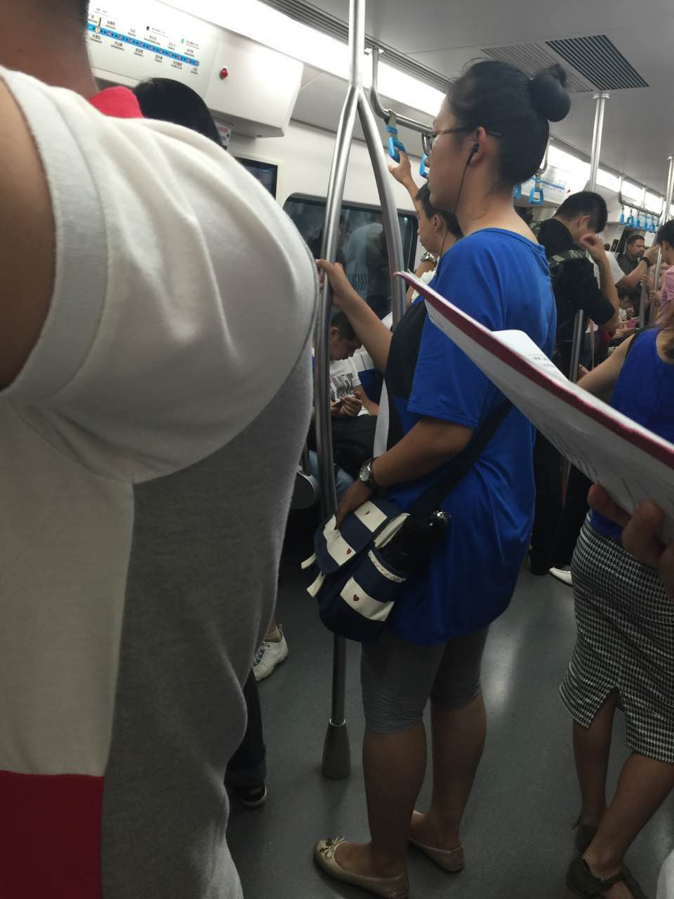 |
| 2016-07-29 12:57:13 | 我 | 你有座吗 |
| 2016-07-29 12:57:24 | 你 | 没有 |
| 2016-07-29 12:57:35 | 你 | 站会 |
| 2016-07-29 12:57:47 | 我 | 到哪了 |
| 2016-07-29 12:57:52 | 你 | 一会倒9号线我得找个做 |
| 2016-07-29 12:57:58 | 你 | 座 |
| 2016-07-29 12:58:00 | 我 | 是 |
| 2016-07-29 12:58:05 | 我 | 那边远 |
| 2016-07-29 13:03:57 | 你 | 上车了，找了个座 |
| 2016-07-29 13:04:01 | 你 | 好多人 |
| 2016-07-29 13:04:12 | 我 | 好的 |
| 2016-07-29 13:04:19 | 我 | 冷吗 |
| 2016-07-29 13:05:13 | 你 | 恩，挺冷的 |
| 2016-07-29 13:05:28 | 你 | 你怎么知道会冷， |
| 2016-07-29 13:05:31 | 我 | 有衣服吗 |
| 2016-07-29 13:05:39 | 你 | 忍着点，比热强 |
| 2016-07-29 13:05:52 | 你 | 没有，没事，不碍事，你们吃完了吗 |
| 2016-07-29 13:06:01 | 我 | 今天热，空调肯定开的强 |
| 2016-07-29 13:06:13 | 我 | 正在吃 |
| 2016-07-29 13:06:22 | 你 | 恩，是，你吃饭吧， |
| 2016-07-29 13:06:25 | 你 | 我没事的 |
| 2016-07-29 13:06:29 | 你 | 我听歌呢 |
| 2016-07-29 13:06:47 | 我 | 好的 |
| 2016-07-29 13:08:20 | 我 | 你们开车回家需要多久 |
| 2016-07-29 13:08:46 | 你 | 我哥的话一个半吧，最多两个 |
| 2016-07-29 13:08:53 | 你 | 塘沽离得近 |
| 2016-07-29 13:09:04 | 我 | 还行 |
| 2016-07-29 13:23:18 | 我 | 还有多远 |
| 2016-07-29 13:23:41 | 你 | 走了还不到一半 |
| 2016-07-29 13:24:15 | 我 | 得两点到了 |
| 2016-07-29 13:24:38 | 你 | 是 |
| 2016-07-29 13:25:09 | 我 | 你和你姐谁先到家 |
| 2016-07-29 13:25:20 | 你 | 我姐快到了都 |
| 2016-07-29 13:25:31 | 你 | 得她先 |
| 2016-07-29 13:25:35 | 你 | 你们吃完了？ |
| 2016-07-29 13:25:43 | 我 | 是 |
| 2016-07-29 13:26:08 | 你 | 塘沽这边的房子好破 |
| 2016-07-29 13:26:21 | 我 | 有好房子 |
| 2016-07-29 13:26:38 | 你 | 恩，这边还没到塘沽呢 |
| 2016-07-29 13:26:53 | 你 | 我姑姑家弟弟买的生态城的房子，超级好 |
| 2016-07-29 13:27:00 | 我 | 是 |
| 2016-07-29 13:27:12 | 你 | 你下午忙吗 |
| 2016-07-29 13:27:20 | 我 | 不忙 |
| 2016-07-29 13:27:24 | 你 | 武总给你们开什么会啊 |
| 2016-07-29 13:27:54 | 你 | 人社部这80人一起吃的饭吗？ |
| 2016-07-29 13:28:00 | 你 | 真来这么多人啊 |
| 2016-07-29 13:28:12 | 我 | 番薯的同步工具和UP开发重了 |
| 2016-07-29 13:28:28 | 我 | 武总要两边合并一下 |
| 2016-07-29 13:28:31 | 你 | 结论怎么说的 |
| 2016-07-29 13:28:35 | 你 | 恩 |
| 2016-07-29 13:28:37 | 我 | 咱们为主 |
| 2016-07-29 13:28:43 | 你 | 恩 |
| 2016-07-29 13:28:45 | 你 | 好 |
| 2016-07-29 13:29:32 | 我 | 后面还需要和UP他们开会 |
| 2016-07-29 13:29:47 | 你 | 碰进度吗 |
| 2016-07-29 13:29:54 | 我 | 不是，需求 |
| 2016-07-29 13:30:07 | 你 | 能合并嘛 |
| 2016-07-29 13:30:11 | 你 | 吗 |
| 2016-07-29 13:30:16 | 我 | 武总认可咱们的架构 |
| 2016-07-29 13:30:22 | 我 | 不好说 |
| 2016-07-29 13:30:31 | 我 | 先开会看看吧 |
| 2016-07-29 13:30:34 | 你 | 高可用的吗 |
| 2016-07-29 13:30:45 | 我 | 对呀 |
| 2016-07-29 13:31:21 | 你 | Kfk怎么样，本来中午我去番薯那边想问问怎么样，顺便说下下个迭代的功能 |
| 2016-07-29 13:31:32 | 你 | 结果全去吃饭去了 |
| 2016-07-29 13:31:43 | 我 | 还不知道 |
| 2016-07-29 13:31:56 | 我 | 让他们自己解决吧 |
| 2016-07-29 13:32:15 | 你 | 不用kfk 也得用别的 |
| 2016-07-29 13:32:22 | 你 | 反正得高可用 |
| 2016-07-29 13:32:25 | 我 | 是 |
| 2016-07-29 13:32:36 | 我 | 这个已经是确定的 |
| 2016-07-29 13:32:59 | 你 | 他们读写分开后，连在一起，调度那部分也挺难的感觉 |
| 2016-07-29 13:33:17 | 我 | 是 |
| 2016-07-29 13:33:41 | 我 | 今天武总说打算用两年形成一个产品 |
| 2016-07-29 13:33:48 | 我 | 要单独卖钱 |
| 2016-07-29 13:33:59 | 你 | 恩，不错， |
| 2016-07-29 13:34:07 | 你 | 挺大的项目呢 |
| 2016-07-29 13:34:11 | 我 | 是 |
| 2016-07-29 13:34:17 | 你 | 得好好干 |
| 2016-07-29 13:34:21 | 我 | 对呀 |
| 2016-07-29 13:34:22 | 你 | 这也是机会哈 |
| 2016-07-29 13:34:29 | 我 | 是 |
| 2016-07-29 13:34:56 | 你 | 公司要是有这么高的定位也不错 |
| 2016-07-29 13:35:10 | 你 | 正好刚开始跟着一个项目 |
| 2016-07-29 13:35:15 | 我 | 是 |
| 2016-07-29 13:35:28 | 你 | 都经历一遍， |
| 2016-07-29 13:35:45 | 我 | 这对你就很好了 |
| 2016-07-29 13:35:50 | 你 | 对啊 |
| 2016-07-29 13:35:56 | 你 | 新项目，新流程 |
| 2016-07-29 13:35:59 | 我 | 以后你就代替我管他们 |
| 2016-07-29 13:36:03 | 你 | 从头跟到尾 |
| 2016-07-29 13:36:20 | 你 | 哈哈哈，好，我得把这个作为我的目标 |
| 2016-07-29 13:36:29 | 我 | 嗯 |
| 2016-07-29 13:36:51 | 你 | 你看我跟马姐整那个测试的小方案，收获也不少 |
| 2016-07-29 13:37:00 | 你 | 别看这么不起眼的活 |
| 2016-07-29 13:37:31 | 我 | 😄 |
| 2016-07-29 13:38:25 | 你 | 我昨天还跟东东说，每天醒来都觉得特别美好，那天我就像个有很多触角的水母，不断的从各个角落吸收营养 |
| 2016-07-29 13:38:58 | 你 | 看着自己的成长比挣多少钱，吃多少好吃的都开心 |
| 2016-07-29 13:39:34 | 我 | 是 |
| 2016-07-29 13:39:47 | 你 | 不单单是工作的，知识的，还有生活的，人性的，认知方面的 |
| 2016-07-29 13:39:53 | 我 | 你最近成长就是挺快的 |
| 2016-07-29 13:39:54 | 你 | 很美好， |
| 2016-07-29 13:40:29 | 你 | 最起码知道自己如何追寻了 |
| 2016-07-29 13:41:09 | 你 | 要追寻什么 |
| 2016-07-29 13:41:13 | 我 | 你现在就是从工作中找到快乐 |
| 2016-07-29 13:41:34 | 你 | 我特别感恩 |
| 2016-07-29 13:42:10 | 你 | 感恩自己掌握了这种发现美的能力 |
| 2016-07-29 13:42:19 | 你 | 当然更感恩你的存在 |
| 2016-07-29 13:42:33 | 我 | 关键还是你自己 |
| 2016-07-29 13:42:58 | 你 | 没有你就没有现在的我 |
| 2016-07-29 13:43:16 | 你 | 虽然我现在还啥也不是，但将来终究会是 |
| 2016-07-29 13:43:23 | 你 | 相信我啊 |
| 2016-07-29 13:43:26 | 我 | 这么说你还得感谢洪越 |
| 2016-07-29 13:43:32 | 我 | 我相信 |
| 2016-07-29 13:43:34 | 你 | 对 |
| 2016-07-29 13:45:46 | 你 | 我也感谢他 |
| 2016-07-29 13:46:04 | 你 | 我心情好的时候就感谢他 |
| 2016-07-29 13:46:14 | 你 | 心情不好的时候就骂他 |
| 2016-07-29 13:46:25 | 我 | 😄 |
| 2016-07-29 13:47:01 | 你 | 哈哈 |
| 2016-07-29 13:47:03 | 你 | 回来了吗 |
| 2016-07-29 13:47:18 | 我 | 车上呢 |
| 2016-07-29 13:47:33 | 你 | 坐的谁的车 |
| 2016-07-29 13:47:40 | 我 | 胖子 |
| 2016-07-29 13:47:47 | 你 | 他也去了啊 |
| 2016-07-29 13:48:02 | 我 | 今天是售后他们请研发 |
| 2016-07-29 13:48:11 | 我 | 最近项目太多 |
| 2016-07-29 13:48:17 | 你 | 哦，原来如此 |
| 2016-07-29 13:48:34 | 我 | 咱们是老田 胖子 老毛和我 |
| 2016-07-29 13:48:39 | 你 | 请也就是leader |
| 2016-07-29 13:48:42 | 你 | 恩 |
| 2016-07-29 13:48:44 | 你 | 不错 |
| 2016-07-29 13:49:26 | 我 | 今天的菜太甜，吃的牙疼 |
| 2016-07-29 13:49:59 | 你 | 是吃甜的就牙疼吗 |
| 2016-07-29 13:50:46 | 我 | 不是，今天甜的太多，我还喝的雪碧 |
| 2016-07-29 13:50:53 | 你 | 你的牙是不是不太好啊 |
| 2016-07-29 13:51:02 | 我 | 是 |
| 2016-07-29 13:51:08 | 你 | 我也喜欢喝雪碧 |
| 2016-07-29 13:51:24 | 你 | 挺好喝的，我都忍着，能不喝就不喝 |
| 2016-07-29 13:51:34 | 你 | 这东西太上瘾 |
| 2016-07-29 13:51:41 | 我 | 是 |
| 2016-07-29 13:52:00 | 你 | 你真的少吃甜的 |
| 2016-07-29 13:52:12 | 你 | 以后把糖，巧克力，啥的都给我 |
| 2016-07-29 13:52:16 | 你 | 我帮你收着 |
| 2016-07-29 13:52:21 | 我 | 好呀 |
| 2016-07-29 13:52:27 | 我 | 以后都给你 |
| 2016-07-29 13:52:32 | 你 | 哈哈 |
| 2016-07-29 13:52:46 | 你 | 你就把我的牙吃坏了啊 |
| 2016-07-29 13:53:01 | 我 | 😄 |
| 2016-07-29 13:55:57 | 我 | 快到了吗 |
| 2016-07-29 13:56:14 | 你 | 还有三站 |
| 2016-07-29 13:56:23 | 我 | 好的 |
| 2016-07-29 14:06:10 | 你 | 到了 |
| 2016-07-29 14:06:19 | 我 | 好的 |
| 2016-07-29 14:14:20 | 我 | 发工资了 |
| 2016-07-29 14:24:01 | 你 | 是 |
| 2016-07-29 15:18:56 | 你 | 已经到河北了 |
| 2016-07-29 15:19:27 | 我 | 好的 |
| 2016-07-29 15:19:32 | 我 | 累吗 |
| 2016-07-29 15:19:36 | 你 | 不累， |
| 2016-07-29 15:19:44 | 我 | 好的 |
| 2016-07-29 15:19:53 | 你 | 我跟你聊了，我跟我哥聊会天 |
| 2016-07-29 15:20:34 | 我 | 好的 |
| 2016-07-29 16:25:27 | 你 | 马上到了 |
| 2016-07-29 16:26:02 | 我 | 好的 |
{kind=link}